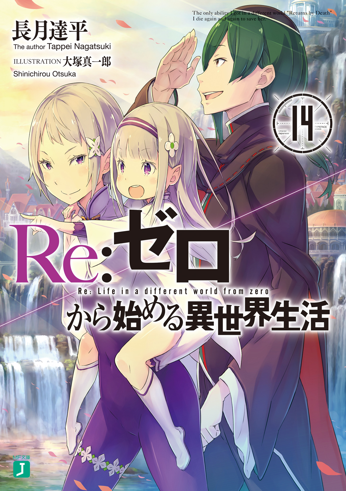
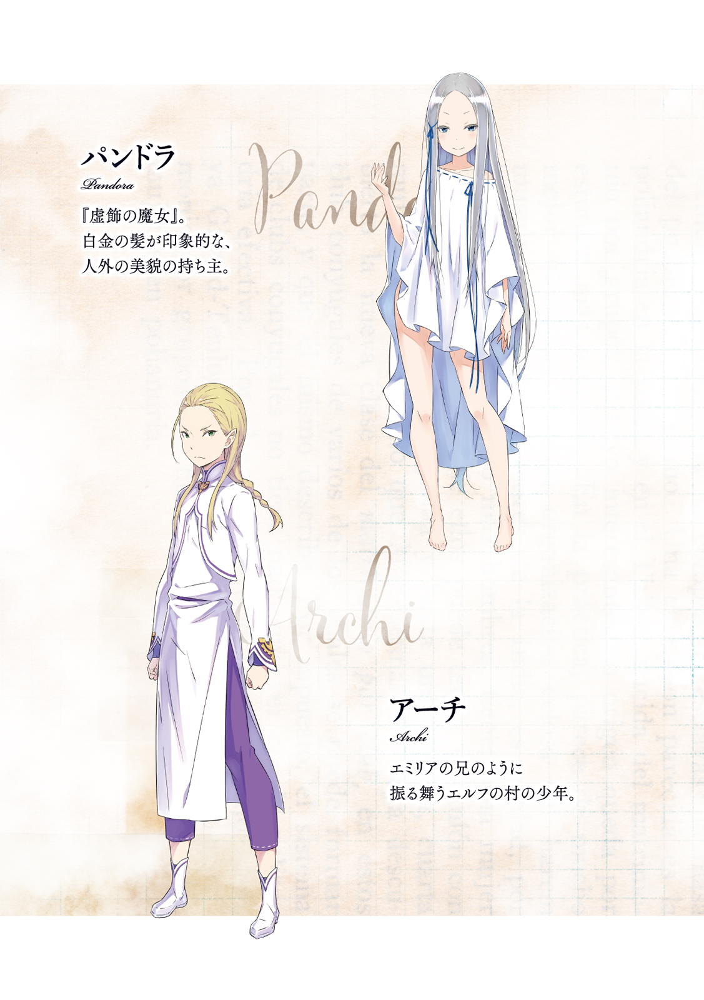

| Re：ゼロから始める異世界生活 14 | |
| 長月 達平 & 大塚 真一郎 | |


Re：ゼロから始める異世界生活 14
長月達平

本作品の全部または一部を無断で複製、転載、配信、送信すること、あるいはウェブサイトへの転載等を禁止します。また、本作品の内容を無断で改変、改ざん等を行うことも禁止します。
本作品購入時にご承諾いただいた規約により、有償・無償にかかわらず本作品を第三者に譲渡することはできません。
本作品を示すサムネイルなどのイメージ画像は、再ダウンロード時に予告なく変更される場合があります。
本作品の内容は、底本発行時の取材・執筆内容にもとづきます。
本作品は縦書きでレイアウトされています。
また、ご覧になるリーディングシステムにより、表示の差が認められることがあります。
第一章 『──記憶の旅路』
１
──蘇る、記憶があった。
それは遠く、遠く、はるか遠くに感じられる、始まりの記憶。
『──ごめんよ。ごめん』
すすり泣くような声で、誰かがずっと謝っている。
堪えようのない罪悪感と、耐え難い悲嘆に苛まれ、声はずっと謝り続けている。
その声に、「どうして？」と聞き返したのを覚えている。
『──君を、一人にしたから』
「ひとりに、したの？」
『──君を、ずっと見つけられなかったから』
「でも、ここにいるよ？」
辛い声に、涙声に、教えてあげたかった。
謝る理由も、悲しむ理由だって、あなたにはないんだよと教えてあげたかった。
だからその代わりに、あなたにも教えてほしいことがあって。
「あなたの、なまえは？」
『ボクの名前は......』
それは、かつて何度も見た夢だった。
夢の終わりは光に吞まれ、その先を聞けないまま、何度も何度も繰り返し見た夢──。
その夢の終わりを知ったことで、家族になれて、それが自分にとっての始まりで。
──でも、蘇る記憶は、そんな氷結の絆よりさらに過去へ遡っていく。
ぐんぐん、ぐんぐんと、過去へ過去へ、封じられた過去へ、遡っていって──。
２
背の高い木々に囲まれる道ならぬ道を、エミリアは慣れた足取りで悠々と進む。
草に覆われた地面を踏み、大樹の陰に隠れた花に気を付けて足を踏み出す。靴裏から伝わる硬い土の感触に、不思議な気分を覚えてエミリアは首を傾げた。
だって、ここは夢の中。エミリアの記憶に眠る、故郷を再現した仮初の世界なのに。
「でも、ここには風の匂いも、土の感触もあって......なんだかすごーく不思議ね」
「────」
「エキドナ？ ね、聞いてる？ ......あ」
疑問に応じる声がなく、変に思ってエミリアが振り返る。と、エミリアの後方、白髪を長く伸ばした美しい魔女が、林道に大苦戦して後れを取っているのが見えた。
森に不向きな長いスカートの裾を引きずり、木に手をつく魔女にエミリアが駆け寄る。
「ごめんなさい、大丈夫？ 私、ちょっと早歩きだった？」
「見え透いた同情で、ボクの態度が少しでも変わるとでも？ だとしたら浅はかだね」
心配するエミリアに、魔女──エキドナは顔を上げ、雪のように白い髪を払ってそっけなく言い放つ。その言い草に、さしものエミリアもムッと頰を膨らませた。
「もう、ただ心配しただけなのにそんな言い方しないの。靴が良くないのかもしれないから、裸足の方がいいかも。森の草は柔らかいから裸足でもへっちゃらよ」
「......どこまでも見当違い甚だしい。君の心配なんて一切不要だよ。少し、夢に深く重なりすぎただけさ。すぐに調整が利く。──この通り、ね」
「わ」
お手本とばかりに靴を脱ぐエミリアに、冷笑するエキドナが『調整』を見せつけた。傍らの木に触れる魔女の手が、その太い幹を素通りする。足場の悪い草地も同じだ。その、世界の枠から外れたような現象に、エミリアは思わず目を丸くした。
「先の低俗な疑問だが、夢の世界とはあくまで比喩的な表現に過ぎない。ここは正しくは『試練』の対象者の記憶を再現し、意識だけを移した別世界と呼ぶべき空間だ。君自身の体験を採用している以上、世界に色や形、味があるのは当然だろう？」
「よくわからないけど......私が大暴れしたら森がハチャメチャになるってこと？」
「実に野蛮で魔女らしい発想だね。だが、それは不可能だ。今、君はこの世界に半歩ずれた状態で存在し、世界に影響を与えるほど干渉することはできない。記憶の中の人々と触れ合うことも、だ。もっとも、『試練』が別の形式だったら話は違っただろうけどね」
「ふむふむ......その、別の形式っていうのは？」
「聞いてばかりいないで、少しは自分の頭で考えてみたらどうだい？ 求めれば与えられる、甘えて媚びて生きてきた君にはどだい無理な話かもしれないがね」
エミリア以上に存在をずらし、森をすり抜けるエキドナが軽蔑的に鼻を鳴らす。彼女に無知を嘲笑われながら、しかしエミリアはそれももっともだと自分を戒めた。
聞くばかりで考えようとしないのは甘えだ。もっと、自分なりに考えなくては──。
「考えたけどわからなかったわ。答え教えて」
「────」
「どうしたの？ お腹痛いの？」
「その虫唾の走る態度......ボクに不快感とはいえ、これだけ感情を惹起するのは彼と、友人たちを除けば君ぐらいのものだろうね」
「エキドナ、友達いるんだ」
いいな、という羨望を孕んだエミリアの呟きに、エキドナが苛立たしげに舌打ち。あまりいい意味には受け取ってもらえなかったらしい。
「──『試練』に垣間見る後悔は千差万別、大別することすらおこがましいほどだ」
「え？ あ、うん、はい」
「人の心に根差す後悔とは、瞬間的な一場面であることもあれば、誰かとの関係性を起因とするものもある。過去の後悔に相対する方法も、そのたびに変わる。触れ合い、語らうことでしか乗り越えられない過去もある。だから、千差万別なのさ」
「......そっか、そういうことなんだ」
エキドナの説明にエミリアは得心がいった。
確かに、人の後悔は単純に一纏めにできるものではない。人とケンカした過去を後悔することもあれば、仲違いしたままの時間を悔やむこともあるだろう。
同じ事象に立ち会っていたとしても、何が過去の克服になるかは当人次第だ。
「ん、ありがと。説明と、嫌ってる私の質問にちゃんと答えてくれたことも」
「すごーくいい人、なんて勘違いだけは絶対にしないでほしいね。君に好意的に思われるほどの屈辱はボクにはない。問いかけに答えてしまうのは、単なるボクの性分だ」
「はいはい」
棘と距離感のあるエキドナだが、話しかければ答えてくれる分、エミリアにとってはそれほど付き合いにくい相手ではない。彼女が蛇蝎の如くエミリアを嫌っていても、エミリアはエキドナを嫌えない。それを決めるほどに、まだ彼女を知らないのだから。
そんな凸凹な関係の二人は、エミリアの記憶にある故郷の森を奥へ、奥へと進む。
この先にきっと、エミリアの抱き続ける『後悔』に繫がる光景があると確信して。
「前回の『試練』での、無様な悪戦苦闘のことは覚えているかい？」
「その悪態に言い返せないくらい、全然ダメな子だったことはね」
決して隣には並ばずに、後ろからついてくるエキドナの悪態にエミリアは渋い顔。
エミリアが『試練』に挑むのは二度目だが、前回の失敗は自分でも顔を覆いたくなるぐらいにダメだった。何が一番ダメかと言えば、それが思い出せないことがダメだ。
──エミリアは前回の『試練』で、自分が何を見たのかすらはっきり覚えていない。
「きっと、見たくないって記憶に蓋をしたのね。だから、私は自分でそれが思い出せないんだわ。そして今も......まだ、私の準備はできてなくて」
「だから、今回も失敗しても仕方ないと？ 先に予防線を張るとは弱気なことだね」
「ううん、そうじゃない。──これから、その準備をしにいくのよ」
エキドナの侮蔑に首を振り、エミリアは力強くそう言い切った。
その言葉に魔女が眉を顰めるのと、緑に覆われる視界が開けたのは同時だ。長く続いた林道を抜け、目の前に現れるのはエリオール大森林でも一際背の高い巨木──。
「──ただの大樹、というわけではないね。根元に扉がある。洞を利用したのかな？」
その巨木を目にして、エキドナが地表に露出する木の根の中心に目敏く気付く。
巨木の中央にある洞、その奥にはちょっとした部屋ほどもある空間があった。入口は扉でしっかりと閉ざされており、外から閂をかけることもできる厳重ぶりだ。
「よほど、中に閉じ込めておきたいものがあったと見える」
「......エキドナ、わかってて言ってるの？」
「主語の欠けた質問をされても困るな。いったい、何のことだろうね」
上目遣いに睨みつけるが、エキドナは肩をすくめて知らん顔だ。本当に察していないのか、わかっていてつついてきたのか。たぶん、後者だろうとエミリアは思った。
「ここは『お姫様部屋』。──小さかった頃の私が、いつも遊ばされてた場所よ」
言葉にすると、当時の記憶が鮮明に蘇ってくる。『お姫様部屋』とは文字通り、この森でお姫様扱いされていたエミリアを、一人で安全に遊ばせておくための特別な場所。
何度もここに連れてこられ、何度もここで一人で過ごした時間があって。
「あ、扉は触れないんだっけ。このまま、通り抜けられるの？」
「そういう認識の活きる世界だからね。無論、思考の柔軟性に欠ける人間には......」
「わ、ホントだ。通れた通れた。......エキドナ、こないの？」
「────」
扉に半身だけめり込んだエミリアに、エキドナが無言で目を細める。不機嫌そうだが、その理由を話してくれるつもりはなさそうだ。仕方なく、エミリアは先に扉を潜る。
そうして中に入ると、薄明かりだけが頼りの部屋の中、人影が目についた。
「あ......」
人影は二つ、大人と子どもが互いを見つめ、何やら言葉を交わしている光景だ。その様子を紫紺の瞳に捉えた途端、エミリアの喉がか細く鳴った。
入口に顔を向ける幼い少女は、長く伸ばした銀色の髪と、丸い紫紺の瞳が特徴的。記憶にある風貌と一致しているから、エミリアにはそれがすぐに過去の自分だとわかった。
──もうずいぶんと鏡を見ていない自分にとって、記憶にある容姿はこの当時のまま。
「あの幼子は君だろう。まだ何も知らないとはいえ、呆れるほど能天気な顔だね」
「ちっちゃい私にまで文句言わないで。それに今は、子どもの私よりも......」
エキドナの悪態よりも、幼い自分よりも、大事なのはもう一人の方だ。
「────」
息を吞み、エミリアは覚悟と共に人影に回り込んだ。そして、幼い自分と向かい合い、言葉をかける人物──人より少し長い耳と、端麗な容姿を持つエルフを見た。
エミリアと同じ、銀色の髪と紫紺の瞳を持つ女性だ。ただしエミリアと違い、煌めく銀髪は煩わしいからと短くしていて、宝石の如く美しい双眸は切れ長で鋭い。
本人は目つきが悪いと自己評価していたが、エミリアはそれが大好きだった。
颯爽と凛々しく鮮烈に、痛みすら錯覚するほど熱烈に蘇る記憶、彼女こそが──、
「──フォルトナ母様」
このエリオール大森林で、エミリアと一緒に暮らしていた母親代わりの女性。
少なくともエミリアにとっては、本当の母親も同然の家族だった。
「────」
──瞬間、忘却の奥にあった記憶がゆっくりと押し寄せる。
この『お姫様部屋』で自分と母が、このとき何を話していたのかが。
３
「──エミリア、今から大事な用事があるの。だから、お部屋で大人しくしていてね」
そう、この『お姫様部屋』に押し込められるのが、幼いエミリアは大層不満だった。
エリオール大森林にあるエルフの集落では、時々こうしてエミリアを仲間外れに、大人たちだけで大事な用事とやらに出掛けてしまうことがある。普段はエミリアを可愛がってくれる大人たちも、このときばかりは絶対にワガママを聞いてくれなかった。
無論エミリアも、何でも自分の意見が通ると思うほどワガママ放題に育っていない。
──言いつけを守り、相手を敬い、決まり事を大事にすること。
そうした教えを、エミリアは母親同然のフォルトナから正しく躾けられている。
『母親同然』とはやや迂遠だが、これを常々エミリアに言い聞かせていたのが、他ならぬフォルトナ自身。口酸っぱく、自分はあくまで母親代理だと繰り返すのだ。
「私はエミリアの、お父さんの妹なのよ。兄さん......エミリアのお父さんとお母さんは忙しくて、今は一緒にいられないの。だから、あなたは私が大切に預かっているのよ」
それがフォルトナの言い分であり、最初にその説明を受けたときの衝撃は忘れ難い。
しかし、それは傷付いたからではない。逆だった。すごいと思ったのだ。
事実がどうあれ、エミリアにとって母親とはフォルトナのことだった。なのに、自分にはもう一人母親がいるのだという。普通ならお父さんとお母さんは一人ずつのはずだ。でも自分にはお母さんが二人──これには幸せすぎてビックリした。
「エミリアの銀髪は兄さん譲りね。瞳の色も、私たちの血が強く出たみたい。......でも、優しい顔立ちはお母さん譲りだわ。うちのはみんな、目つきが悪いもの」
「......わたし、フォルトナ母様の目、好きだよ？」
獣の牙みたいに鋭い目つき。たまに言いつけを破ってフォルトナを怒らせてしまうと、その目つきの厳しさはさらに増し、エミリアを大いに震え上がらせた。
けれど、そんなご機嫌ナナメなときを除けば、フォルトナはエミリアにとって理想的な母だった。その鋭い目つきも、心から愛おしいと思っている。
フォルトナは厳しいが、優しい母だった。厳しさも、優しい厳しさだった。
「すごーく、後悔してることがあるの。もっと、色んな人に優しくしていればよかった。もっと早くそう思えてたら、きっと兄さんも私を頼るのを最後にはしなかったのに」
すごーく、と口癖のように呟くとき、フォルトナの横顔はひどく寂しげに見えた。
それが強く強く、エミリアの中に残っていたから、エミリアは殊更に母の口癖を真似することにした。悲しいときではなく、嬉しいときや笑ったとき、使うことにした。
自分の大好きな母が、悲しみや寂しさを背負っているようなことはないのだと、フォルトナの口癖を良い思い出で塗り潰そうという、子どもの浅はかな願いだった。
「むぅ......つまんなーい」
さて、話は冒頭、エミリアが一人で『お姫様部屋』に残されたところへ戻ってくる。
蝶よ花よと大人たちに愛でられるエミリアだ。そんなエミリアに窮屈な思いはさせまいと、『お姫様部屋』には絵本や人形、お絵かき用の道具が各種取り揃えられている。それでも、退屈は退屈。──この時間が、エミリアは好きではなかった。
「噓とか隠し事はダメーって、母様はわたしに言うくせに、ねー」
大人はズルい。自分たちが子どもに教えたことを、時と場合とか言ってすぐに破る。きっとエミリアに内緒で、みんなで外で楽しく遊んでいるに違いないのだ。
その遊びを見にいきたいし、できれば混ざりたい。でも、エミリアの想いはいつも願望止まりで、ここで大人しく母の迎えを待つのが常だった。しかし──、
「おそと、いきたいな......」
ぽつりと、それは誰に聞かせるでもなく、ただ呟かれただけの願望だ。だが、エミリアのこぼした願いは大人たちには届かなくても、このとき『彼ら』には届いた。
「──？」
部屋の片隅に、ふいに青白い燐光が浮かび上がった。頼りなく揺れる淡い光、その突然の出現にエミリアはキョトンとする。そんなエミリアの視線を奪いながら、燐光はゆっくり部屋を横切ると、そのまま壁に吸い込まれて消えてしまった。
「ズルい！ まって！ まって！」
その光景に、驚くより幼いヤキモチが勝った。とてとてと部屋の隅に向かい、エミリアは光の吸い込まれた壁をぺたぺた触る。不安はあったが、これにも好奇心が勝った。
「あ！」
壁に、エミリアは自分の腕がすっぽり通る小さな穴を発見。光はここから外に逃げたに違いない。穴は絡まり合う木の根が作った隙間で、頑張れば広げることができそうだ。
「ん～」
穴に腕を突っ込んだまま、エミリアは大いに頭を悩ませた。
『お姫様部屋』の入口は閂で閉じられていて、フォルトナが戻るまでは絶対に開かない。つまり、この穴はエミリアにとって自由への活路だった。ただし、エミリアはここで待つよう母に言われている。好奇心と躾の間で、心は激しく揺さぶられた。
「......でも、フォルトナ母様たちも隠し事してるんだから、おあいこだもん」
結局、最後にそんな言い訳をして、エミリアは木の根の隙間に体を入れた。
幼いエミリアの体は小さいが、隙間はそれよりさらに小さい。無理やりに体をねじ込んで、顔と服を泥で汚しながら、どうにかこうにか洞の外へ這い出した。
「──ぁ」
外の風を額に感じて、エミリアは奇妙な達成感に目を輝かせた。
言いつけを破ったばかりなのに、今すぐフォルトナに「えっへん、できましたっ」と自慢しにいきたくなる。もちろん、そんなことをすれば火の如く叱られるのは確実だったので、エミリアは駆け出す寸前で自分を引き止めた。危ないところだった。
「よーし、いこっ」
軽やかに、エミリアは『お姫様部屋』から意気揚々と走り出した。この森はエミリアにとって庭のようなものだ。フォルトナや、みんなの居場所は何となくわかる。
程なく、エミリアは森の広場で大人たちの姿を発見した。大人たちに混ざり、エミリアの次に若いアーチの姿もある。エミリアの兄っぽく振る舞うエルフの少年は、自分も子どものくせに、エミリアをのけ者にする大人たちの尖兵だったのだ。とても許し難い。
ただ、そんな裏切りアーチや大人たち以上に気になったのは、彼らと一緒になって広場に纏まった黒衣の集団──その、見慣れない客人たちのことだった。
「こそこそ......」
悪いことをしている自覚が、エミリアに隠れて覗き見することを選ばせる。
広場のみんなに見つからないよう、エミリアは大きな木を選んで飛びつくと、するすると身軽に枝によじ登る。木登りは大得意で、アーチたちもこれには手を焼いていた。
「──いつもいつも、あなたたちにはお世話になってばっかりね」
太い枝にエミリアが寝そべるのと、その声が聞こえたのはほとんど同時だった。
枝から見える広場には、集落のエルフが勢揃いしている。エミリア以外の住民は全部で五十人くらい。一方、黒い人たちはそれより少ない二十人くらいだった。
広場の真ん中ではお互いの代表が何やら話し合っていて、エルフ側の代表は何を隠そうフォルトナだ。最初に言葉を発した彼女が、その後も会話の主導権を握って続ける。
「森ではなかなか手に入らないものばかりだから、みんな感謝しているわ」
「そのお言葉こそありがたく。我々こそ、このような形での支援しかできないことを口惜しく思っております。フォルトナ様にはいつも、ご負担ばかりおかけして」
「それはお互い様よ、ジュース」
少しだけ長い耳をそばだてて、エミリアはフォルトナと相手の会話を懸命に拾う。拾っても意味はよくわからないが、何となく母の苦笑には親しみが感じられた。
その母が親しみを向けるのは、ジュースと呼ばれた黒いローブ姿の長身だ。
ゆったりとしたローブ姿だが、しなやかに鍛えられた体格なのがわかる。エルフには線の細いものが多いので、それがとても新鮮に見えた。切り揃えられた緑髪の下には精悍な顔があるが、その眉尻を下げ、とても腰低くフォルトナに接している様子だ。
その光景にエミリアは鼻が高い。大の男をぺこぺこさせるほど母様はすごいのだ。
「それと、毎回の確認ではありますが......封印は、ご無事ですか？」
そんな見当違いの誇らしさに胸を張るエミリアだったが、続く男の言葉にその感慨は吹き飛んだ。そのぐらい、男の声には重く複雑な感情が満ち満ちていたのだ。
「心配性、なんて笑う気にはなれないわね。大丈夫、変わりなく盤石よ。万が一にも解かれるわけにはいかない。──兄さんにも、義姉さんにも顔向けできなくなるもの」
「兄上と、奥様のことは......」
「いいの。わかってるから。ただ、私は私に委ねられた責任の重さを絶対に忘れない。それを放棄したり、半端もしたくない。あなたも、そうでしょう？」
「私は......私には、それしかありませんので。フォルトナ様のような使命感や責任感とはまた違ったものでしょう。執着、未練......妄執に近いものに縋っているだけで」
力なく笑ったジュースに、フォルトナが切なげに目を伏せる。その二人の背後では、黒衣の集団が持ち込んだ荷車から、大人たちが荷物を下ろす作業をしていた。遠目に見える積み荷は服や食料、本などだ。どれも、森では手に入らないものばかり。
「精霊のおかげで季節の変化はあまり森にないんだけど、それでも衣類や本を持ってきてもらえるのはすごーく助かる。いつもありがとう」
「本来であれば、あなた方はもっと厚遇されるべき功績のある方々です。このような場所で不便を強いられるなど、あってはならないことですよ」
「このような場所なんて言わないの。私たちは森が大好きなんだから」
冗談めかした風に言って、フォルトナは柔らかく微笑んだ。その笑顔に、ジュースも口元に微笑を刻む。しばし、二人の間に穏やかな雰囲気が流れ──、
「──フォルトナ様、荷物の受け渡し完了です。教徒の皆様にもお礼を」
「ええ、ありがとう、アーチ」
そう報告したのは、金髪を細い三つ編みに纏めた少年──アーチだ。白い衣に身を包む年若いエルフはフォルトナに一礼し、それからジュースに向き直ると、
「司教様、毎回のご支援、森のみんなに代わって感謝を申し上げます」
「このぐらい当然のことです。アーチ殿はまた少し、たくましくなられましたね」
「いつまでも若輩者扱いされては、次の守り人としてやっていけませんから」
尊敬と羨望、気安いとまではいかないが、相応の距離感で二人は言葉を交わした。
「どうぞそのままご壮健に。森のことや封印、ご家族やご自身のためにも」
その言葉をアーチに贈り、ジュースは名残惜しげに広場を一瞥して一礼する。その所作に周りの黒衣たちも従った。そしてフォルトナとアーチ、他の大人たちも自分の胸に手を当てて目をつむり、エルフ式の敬礼で彼らの礼に応える。
そのやり取りを最後に、黒衣たちは荷車を引いて広場を去ろうとし──、
「そう、最後に一つだけ。──エミリア様は、息災であられますか？」
「──っ」
去り際、足を止めたジュースの問いに、エミリアは心臓が止まりそうになった。
まさか、ここで自分の名前が飛び出すとは。慌てて口を塞いで悲鳴を堪える。
「心配しないで。エミリアは元気で、すごーくいい子に育ってる。私たちにはもったいないぐらいに、いい子に。......でも、ごめんなさい。あなたに会わせるわけには」
「良いのです。それ以上は望みません。ただ、エミリア様が健やかに育ってくださるならばそれで十分。それ以上を望むのは、この罪人たる身には過ぎた願いです」
自嘲ではない。男の声に込められたそれは、自戒のそれだった。
目を伏せたジュースに、フォルトナは安易な慰めを口にしない。そして、ジュースもその沈黙にこそ救われたように頷いていた。
「──ロマネコンティ司教様、よろしいですか？」
出立する荷車の最後尾、黒衣の一人に呼ばれ、ジュースは緩やかに両手を広げた。
「ええ、十分です。さあ、罪深い我々は去りましょう。フォルトナ様、また近いうちに」
「......他の誰が言わなくても、私たちはあなたたちに感謝してる。すごーく本気で」
「そのお言葉だけで、私は百年の苦悶の時に身を捧げられることでしょう」
最後に微笑みを残し、ジュースは今度こそ広場を離れる。彼らの姿が見えなくなるまで見送って、フォルトナは一度だけ目をつむり、深く息を吐いた。
「フォルトナ様、お疲れですか？ もしお辛いようでしたら、このあとのことは......」
「......生意気に。あまり年寄り扱いしないでちょうだい。そりゃ、見た目だけじゃなく本当に若いあなたに比べたら年寄りだけど、まだまだ現役よ」
「そ、そんなつもりは滅相も！ ただ、守り人の役目もあるのに大変ではって......」
気遣ったつもりが誤解され、アーチが顔を青くして狼狽する。しかし、すぐ噴き出したフォルトナの姿に、からかわれていただけだと少年も気付く。
「あんまり素直すぎると、いくら才能があっても守り人が務まるか心配ね。私の大事な宝物を預けるんだもの、すごーく頼り甲斐がなくっちゃ」
「か、からかわないでくださいよ、フォルトナ様......」
「はいはい、ごめんなさい。でも、さっきのお言葉に甘えてここは任せていいかしら？ 私は、きっと退屈してるお姫様を出してあげにいかなくちゃだから」
「──っ!?」
ここまでの様々な疑問が、フォルトナの言葉一発で鮮やかに吹き飛ぶ。エミリアは転がるように木から飛び降りると、大急ぎで『お姫様部屋』に舞い戻った。
脱出に使った隙間から何とか部屋に転がり込む。これでよし、と立ち上がり、すぐ自分の格好が泥だらけの、外遊びしてきた子ども丸出しなのに気付いて絶望した。
「どうしようどうしようどうしよう......っ」
最初は、謝れば許してもらえると思っていた。しかし、広場の話を盗み聞きした今はそうは思えない。きっと、フォルトナはあの話を聞かれたくなかったに違いない。
フォルトナに嫌われたら、エミリアは身の破滅だ。世界の終わりだ。せめて体のすり傷だけでも隠さないとフォルトナはすぐ気付く。お風呂で沁みるのも怖い。
「え......？」
何とかしなければ、と心だけが逸る中、エミリアは再び青白い燐光を見た。
先ほど、エミリアの脱出計画の参謀を務めた光だ。それはゆらゆら揺れながら、困惑するエミリアの方へ近付いてくる。そして、光は徐々にその光量を強め──、
「──すごい」
淡い光がエミリアに触れると、温かな感覚に体のすり傷が癒えていく。数秒ですっかり傷はなくなり、これであとは泥だらけの服さえどうにかなれば。
「これで......！」
お絵かき用のインク壺をひっくり返し、着ていた服をドロドロに彩色する。洗っても落ちない汚れに服を汚し切り、泥だらけだったことがわからなくなった直後──、
「──エミリア、起きてる？」
「みゃうっ！ お、起きて、るよ？ 起きてる、フォルトナ母様！ で、でも......」
「なあに？ そんなに慌てちゃって......うん？」
閂を外す音がして、開く扉の向こうからフォルトナが顔を覗かせる。優しく微笑むフォルトナは、しかし部屋に入った途端に顔をしかめた。
「すごいインクの香り......どうしたの？」
「えっと......ご、ごめんなさい。お絵かきの壺、いっぱいこぼしちゃって......」
「あちゃー」
部屋に充満する臭いと、転がったインクの壺にフォルトナは額に手をやった。しかし、彼女は途方に暮れた様子のエミリアに笑いかけると、
「やっちゃったものは仕方ないわね。その服を脱いで、インクを拭かなくっちゃ。着替えは......あったあった。これがなきゃ、裸ん坊のエミリアを連れ帰らなきゃだもの」
「あの、フォルトナ母様、わたし......」
「もう、心配性ね、エミリア。そんなに怖がらなくても、やろうと思ってやったわけじゃないんだから怒ったりしません。それより、ケガはしてないわよね？」
歩み寄り、フォルトナはエミリアを万歳させて服を脱がせる。そして、幼い裸身に傷がないのを確かめたあと、母はそっと愛娘を抱きしめた。
「母様？」
「ううん、何でもないの。ただ、すごーく......エミリアに会いたくて」
エミリアを抱きしめたまま、フォルトナはそう言って頰を寄せてくる。
普段は照れて自分からこういうことはしないフォルトナだけに、エミリアにはそれが珍しく、そして母がとても心細そうにしているように思えた。だから──、
「......生意気」
抱きしめたエミリアに短い銀髪を撫でられ、薄目を開けたフォルトナが呟く。
しかし、やめなさいとは言われなかった。静かに、母は娘の掌の感触を受け入れる。
優しく、優しく、エミリアは愛しい母の頭を撫で続ける。
「ね、エミリア」
「......ん」
「──愛しているわ」
優しく微笑むフォルトナは、その瞳に涙の雫を浮かべて言った。
聞きたいことも、知りたいことも、たくさんあった。
──けれど今は、母のその言葉一つで満足しておこうと幼いエミリアは思った。
４
「少しずつ、心の奥底に仕舞った情景と、記憶の景色が重なってきたんじゃないかな？」
『お姫様部屋』の中央で抱き合う母子、それを眺めながらエキドナがそんな風に聞いてくる。悪意なく、純粋な問いかけ。それをエミリアは意外に思った。
「意外。さっきの私とか母様のこと、もっとちくちく言われると思ったのに」
「......仮にそう思ったとしても、それを相手に伝えるのはオススメしないな。ただでさえボクの中で低い君の評価が、それこそ勢いよく下落していくよ」
「あ、大丈夫よ。私もこんなこと、エキドナ以外に言ったりしないわ。心配しないで」
「......良くも悪くも、君はだんだんと彼の影響を強く受けつつあるな」
「ホントに？ ありがとう」
忌々しげに唇を歪めるエキドナだが、その『彼』が指し示す相手がナツキ・スバルであるとわかり、エミリアはほんの少しだけ胸を張った。
「──。もっとも、その図太さは彼の真似というよりは生来のもののようだけどね。それは幼い君の自儘な行動を見ていて、しっかり確認できたよ」
「それは......ちょっと、私にも言い訳できないけど」
エキドナの指摘に、エミリアは今しがた目にした幼い自分を反省する。言いつけを破って部屋を抜け出し、大人たちの会話を盗み聞きして、挙句に隠蔽工作まで。
「卑しい性根は文字通り根が深い。ああも立派な母親に愛されながら、度し難いな」
「......半分だけ、ありがとう」
フォルトナ母様を、立派な母親と褒められたことは嬉しかった。そう、母様は素敵だ。尊敬している。自分のダメっぷりと同時に、その愛情も思い出せた。
そして、思い出せたのはそれだけではない。
「ジュースと、妖精さん......」
目を伏せたエミリアが呟くのは、この記憶の中で大きな役割を果たす二つの呼び名だ。片割れは広場にいた緑髪の男、ジュース。もう片方は──、
「君に壁の隙間を教え、傷を癒した微精霊......妖精とは、また皮肉な呼び方だね」
「皮肉かどうかはわからないけど、このときはよくわかってなかったから」
揶揄するエキドナの物言いは、妖精と呼ばれた微精霊への哀れみでもあった。
『妖精』とは邪精霊の呼び方の一つだ。疎まれ、忌み嫌われる邪精霊とされて、それを喜ぶ精霊はいまい。それでも、エミリアが微精霊を妖精と呼んだのには理由があった。
「この部屋で読んだ本の中に、そんなお話があったの。妖精が悪いモノじゃなくて、良いモノとして書かれてる本が。内容は、よく覚えてないけど」
確か、異国に伝わるおとぎ話の本だったと記憶している。今では題名も、内容も思い出せない一冊だが、優しくて頼れる妖精のことは印象に強く残っていた。
だから幼いエミリアは、このとき助けてくれた微精霊を妖精と呼んだのだろう。
「母親と、知人と、妖精さんとやらを思い出した。これで過去に臨めるかい？」
「ううん、まだ。まだ......まだ、私には足りてない思い出がある」
首を横に振り、エキドナの問いかけに応じるエミリアは巨木の洞を出た。足の向く先はこれまでの記憶の光景のどこでもなく、無数の木々が道を阻む森の深奥だ。
そこに、思い出さなくてはならないものがある。そこに──、
「何がある？」
「──封印よ」
５
──幼いエミリアが『フーイン』を意識したのは、何度目かの脱走劇のあとだった。
「よしょっ！ やた！ 今日も成功！」
えへん、と胸を張り、髪の毛を葉っぱだらけにしたエミリアが満足げに言う。
場所は『お姫様部屋』──の外、自由への活路を出てすぐの地点だ。今日も今日とて部屋に置き去りのエミリアだが、フォルトナの目を盗んで華麗に部屋を脱出。穴の外に落ち葉を敷いて衝撃を和らげるエミリアは、すっかり脱獄の常習犯になっていた。
「最近、アーチがすごーく心配性だから気を付けなくっちゃ」
抜け目なく周囲を見回し、エミリアは監視役のアーチがいないか慎重に慎重を期す。
大人に与する裏切りアーチは、エミリアのお目付け役のような立場だ。アーチと遊ぶのは楽しいが、それとこれとは話が別。絶対に隙は見せてはならない、ぐっと握り拳。
「よーし、おいで、妖精さん」
敵影の有無を確かめ、呼びかけるエミリアの頭上に燐光が浮かぶ。初遭遇以来、エミリアはこの燐光とすっかり打ち解け、今では妖精さんと呼び親しむ間柄だった。
妖精と協力し、エミリアは森の支配者気分。大人たちの話し合いを覗き見し、許可なく人のオヤツを食べ、他人の家の置物をずらす、身の毛もよだつ大罪人だった。
「今日も、ジュースたちがきてるのかな」
頭の葉っぱを取りながら、エミリアはこれからの方針を練りに練る。
再犯を重ねたおかげで、エミリアは自分が『お姫様部屋』に置き去りにされるのは、決まって森にジュースたちがきたときだと突き止めていた。ジュースたちはいつも荷車に食べ物や服を載せてくる。みんな、それを受け取りに広場に集まるのだ。
「もっと楽しいこと隠してると思ったのに、母様たちってば変なの」
最初は興味津々だった隠し事も、秘密の遊びでなかったとわかった今は退屈なものだ。それでも足しげく聞き耳を立てにいくのは、フォルトナとジュースの会話にエミリアの名前が出たり、エミリアの父母のことを匂わせる単語がたまに飛び出すからだった。
本当の両親について、フォルトナはあまり話してくれない。聞くのも躊躇われた。だからジュースとの会話は、それを知れる絶好の機会だとエミリアは睨んでいた。
「なかなか話してくれないけど......よいしょ、よいしょ」
目論見の空振りは続くが、エミリアは今日もめげずに木に登り、定位置につく。
眼下、広場には大人たちのいつもの風景、フォルトナとジュースもそこにいる。歓談する二人は遠目にだが、特にフォルトナの表情が柔らかく思えた。
「最近のエミリアったらすごーく元気で、いっつも服を泥だらけにして帰ってくるの。毎日毎日、これじゃ洗っても洗っても追いつかないんだから」
「ご壮健であられることは何よりです。服の替えも、できるだけお持ちしますよ。森の外はそろそろ寒季が終わりますから、衣替えで不要になる服も多く出ましょう」
「甘えてばっかりなのに、催促したみたいでごめんなさい。......大人の服もある？」
「ええ、もちろん。フォルトナ様にも、きっとよくお似合いのものがありますよ」
エミリアの話題の最中、柔和な表情で応じたジュースにフォルトナが虚を突かれたように硬直する。それから彼女は照れ臭げに、ジュースを上目に睨みつけた。
「......もう。長い付き合いだけど、いつからそんな冗談を言うようになったの？」
「──？ 本心を告げたつもりですが、何かおかしなことを言ってしまいましたか？」
「......腹芸のできない人って知ってるから、その方がずっと性質が悪いわね」
首を傾げるジュースに、フォルトナは呆れた風に視線を逸らす。と、その仕草に困り顔でいたジュースが、そっとフォルトナの額に手を伸ばした。掌が額に触れる。
「......ジュース、これはなに？」
「いえ、そう言えばずいぶん昔に、私と話していて不機嫌だったフォルトナ様が熱を出されていたことを思い出しまして。......熱は、ありませんね」
「そんなのいったい何十年前の話なの。本気で子ども扱いしないで。ホントにもう」
見当違いの心配をされて、フォルトナが拗ねた態度でジュースに物言いする。しかし、その口元は微笑んでおり、今のやり取りを不快に思っていないのは明らかだ。
いや、それどころか、フォルトナは今のやり取りを楽しんでいる節がある。
「......むぅ」
何となく、母のそんな姿にエミリアは面白くない気分になった。
目つきの鋭く、凛々しいフォルトナは人に厳しい印象を持たれがちだ。その母が傍目にもわかるぐらい優しい顔を見せてくれるのは、愛娘であるエミリアの特権なのに。
「ふんだ、ジュースのバカ。あと、アーチもバカ」
一方的な面識しかない相手と、積み荷下ろしを手伝っている少年に八つ当たり。
そして、このまま今日も収穫なしなら、エミリアは怒りの鉄槌をジュースにぶつけると心に決めた。あの荷車の車輪に布を嚙ませたり、荷台に油をこぼしたりする、とエミリアは悪魔じみた智謀で復讐を思い描く。が、その復讐劇の上演は未公開に終わった。
「──それで、封印の方は大丈夫ですか？」
声の調子を落とし、ジュースが投げかけたのはもはや恒例の質問だ。お馴染みのやり取りであり、それに対するフォルトナの応答もすっかり聞き慣れたもので。
「変わりなく、よ。毎回、欠かさず確かめていくのは律儀よね」
「そのためのお役目です。......それに余計な不安を搔き立てたくはありませんが、今は森の外の情勢が何やらキナ臭い。杞憂かもしれませんが、心に留め置いていただきたく」
「......わかったわ。封印は、鍵も含めて守り人の私が確認する。外のことはお願いね」
「よろしくお願いいたします。──エミリア様や、あのお二人のためにも」
腰を折るジュースに、フォルトナは真剣な顔つきで頷き返した。
「......フーイン」
その二人の会話に耳を震わし、エミリアは口の中だけでそう呟く。
封印とは、フォルトナとジュースの話の終わりに必ず出てくる言葉だ。これまでは興味を持ってもそれ以上ではなかった言葉。しかし、今日は違った。
封印と、エミリアの名前が重なった。それに最後にジュースの言った言葉。
──お二人とは、もしかしたら、エミリアの父と母のことなのではないだろうか。
「フーイン......」
もう一度だけ響きを確かめて、エミリアは『お姫様部屋』に舞い戻った。洞の中に転がり込むと、エミリアは大急ぎで部屋で過ごした証拠作りに勤しむ。
短時間でお絵かきを仕上げ、人形を着替えさせ、オヤツを食べ散らかしておく。
その一仕事を終えて、額の汗を拭ったあたりで外からフォルトナの声がかけられた。
「エミリア、お待たせ。今日もいい子にしていてくれた？」
「う......い、いい子にしてたよ？ してました。うん、はい、してました」
「────」
「な、なあに、母様。そんな風に見たって、わたし何にもしてないもん。オヤツ食べて、お絵かきして、お人形遊びしてたもん。ホントにお外なんていってないもん」
「......そう。それならいいんだけど」
エミリアの抜群の演技力に、フォルトナはすっかり騙された様子だ。そのことに罪悪感は募るが、エミリアはここで挫けてはダメと自分を応援した。
今日、広場で見聞きしたことは絶対に内緒だ。特に『フーイン』が大事だ。『フーイン』とは確か、何かを隠しておく場所みたいな意味だったとエミリアは記憶している。
もしかしたら、その『フーイン』に、自分の父母が隠れているのではないか。
それが、このエリオール大森林のどこかにあるというのなら──、
「──おねがい、ね」
片目をつむり、エミリアは仲良くなった燐光に森の捜索をおねだりする。
手足の伸び切る頃には、微笑むだけで人を魅了するほどに非凡なものとなる美貌──その片鱗が、このときの幼い少女の愛らしいおねだりにはすでに芽生え始めていた。
６
森の奥へ、エミリアは導かれるように足を進めてゆく。
不思議と迷う気はしなかった。何故か確信だけがあり、その確信に従って進む。世界から半歩ずれた状態であることを活かし、密林と呼ぶべき悪路を真っ直ぐに縦断する。
ぬかるむ足場、密集する大樹、いくつもの悪路の先に、エミリアは白い景色を見る。
雪景色、ではない。──ここに群生する樹木の枝葉、根に至るまで全てが白いのだ。
エルフの集落があり、多くの微精霊に守られる神聖な森──この空間はそのエリオール大森林の中でも、際立って異質な雰囲気に満たされた場所だった。
厳かで、神聖で、常外の理に成り立つ空間。そしてその空間の中央に──、
「──扉。奇妙な光景だね」
純白の木々に囲まれた空間の真ん中に、この森で最も異彩を放つ『扉』があった。
その扉が異様なのは外見ではない。──在り方だ。
両開きの扉は空間の真ん中で、ぽつんと独立して佇んでいる。扉であるのに建物と繫がっておらず、それは裏に回り込んで確認しても変わらない。
「これが、封印」
扉を目の当たりにして、訝しげに呟いたエキドナにエミリアは言った。
封印──これこそがエリオール大森林の奥に隠された神秘そのものだ。フォルトナや集落の住民はこれを守り、ジュースは常にこれの無事を気にかけていた。
そのことはエミリアの記憶でも、ここまで辿ってきた記憶の再現でも間違いない。
どこにも繫がっていない扉、開く術のないはずの扉、封印と呼ばれる扉──。
「だけど、この封印があって、それで......」
「──その答えがきたね」
額に手をやり、エミリアはじくじくと傷を食むように滲み出す記憶に苦悩する。そのエミリアの背後で、エキドナが密やかな吐息のようにそうこぼした。
振り返る。エミリアの視界の先を、淡い燐光がゆるりと通り過ぎ、その先に──、
「これがフーイン？」
と、扉を目にして、邪気のない顔で首を傾げる幼い自分の姿があった。
７
目の前の面妖な扉に、幼いエミリアは丸い瞳をぱちくりさせていた。
ついに、フォルトナたちの隠していた『フーイン』の在り処を突き止めた。妖精たちと一緒でも、広い森を手当たり次第に探すのはそれはそれは大変で。だが──、
「みんなのおかげでソーキカイケツできました。やったね」
破顔するエミリアを取り巻く燐光──その数は以前と違い、両手の指では足りないほどに増えている。森のあちこちに無数に存在していた妖精たち、エミリアは彼らを粘り強い交渉で傘下に加え、一大勢力を築いていたのである。
「どうして、パタンって倒れないんだろ」
その協力の成果である『フーイン』だが、押しても引いてもびくともしない。
見た目は木でできているように見えるが、触った冷たさは氷に近い。触り心地も磨かれた石のように滑らかで、存在の全部が不思議でできているみたいに思えた。
閉じた扉の真ん中には錠前があり、古びたそこにエミリアの掌ほどの鍵穴が見える。そんな大きな鍵なんて、誰のポケットに入るのだろうか。よっぽど大きい人だ。
「へんてこりんで、よくわかんない......でも、見つかったのでした。ぱちぱちぱち」
本音は、両親が『フーイン』に隠れているのを期待していたので、収穫としては今一つ。しかし、一通りの好奇心を試したエミリアは、この結果にも決してめげない。
妖精との結束が、みんなの隠し事を暴いたのだ。まだまだこれからも頑張れる。
「ふんだ。フォルトナ母様たちが悪いんだもん。ジュースが悪いんだもん」
背の高い黒衣の男を思い出し、エミリアはこの場にいない彼に舌を出した。
エミリアの大事なフォルトナ母様、その秘密の表情をエミリアに無断で引き出す敵だ。いずれ来る直接対決に備え、エミリアのジュース対策は余念がない。
「妖精さんが驚かせて、ジュースが大混乱してる間に足を踏むの。それも両足で踏んでやるのよ。しかも、踵で踏んじゃうの！ ......それは痛そうだから爪先にする」
非情な作戦の中にも、一片の温情を盛り込むことを忘れない。血も涙もない戦いを続ければ、いずれ仲間の信用を失う。ここは妖精たちとの絆を大事にすべきだ。
「よーし、お家にかーえろ。今日のガハクはお空を赤くして、森を真っ白にする気分！」
目標を達成して、エミリアは妖精と一緒にぱたぱたと帰路を駆け抜ける。
なかなか険しい道のりだが、身軽なエミリアはぴょんぴょんと難所を飛び越えた。本当はこの辺りには、フォルトナの言いつけできてはいけないことになっている。そのため、『フーイン』の発見は遅れに遅れた。母様が策士すぎる。
「でも、わたしたちの方が上手だもんね。......どうしたの？」
見慣れない悪路を踏破する最中、エミリアはふと妖精の訴えに足を止めた。妖精は不規則に点滅しながら視界を横切り、ふらふらと横の茂みに入っていってしまう。
「んー？ んんー？ これは......これは、ジケンの予感！」
妖精の様子に、エミリアは彼らと最初に出会った『お姫様部屋』のことを思い出す。あれが切っ掛けでエミリアは彼らと仲良くなれたのだ。きっと、今回も何か意味がある。
「やふー！」
妖精を追って、エミリアは元気よく茂みに飛び込んだ。背の高い草を搔き分け、銀髪を何回も枝に引っかけながら、エミリアは果敢に獣道を進む。そして──、
「これは困りましたね。......約束の時間に遅れてしまう」
「──あ！」
茂みを抜けたところで、エミリアは森の中に佇む黒い背中と出くわした。その驚きに声が漏れ、エミリアは慌てて口を塞いで茂みに隠れる。が、遅い。
「おや？ そこの可愛いお尻はどなたですか？」
お尻丸出しで茂みに隠れるエミリアに、聞き覚えのある声がかけられた。その声にエミリアはびくりと震える。相手はこちらが一方的に見知った、にっくき敵役である。
「ほ、ホリョとして、セツドあるタイグーを求めます......」
これは誤魔化せないと観念し、聞きかじりの言葉で降伏するエミリア。そうして白旗を掲げたエミリアに、男──ジュースは微笑みを浮かべ、
「これはこれは、ずいぶんと可愛らしいお嬢さんがお出ましに......ぇ？」
幼子の可愛い抵抗に緩んだ表情が、次の瞬間に凍り付いた。
言葉は驚愕に途切れ、柔和な表情が硬く強張る。目を見開くジュースの様子にエミリアも大いに驚き、二人は複雑な感情の波に揉まれながら相対した。
「お、お嬢さんは......いえ、あなたは、まさか......」
声を震わせ、信じられないものを見たようにジュースは首を横に振る。そんな彼をおずおずと見上げるエミリアは、その小さな胸を搔き毟られるような痛痒を覚えた。
弱く儚い、道に迷った子どもが親を見つけたように、ずっと暗闇を歩いてきた旅人が光を見つけたように、恐れと期待がない交ぜになった表情だった。
──誰かが、声をかけてあげなければ、手を引いてあげなければならない。
そう思った瞬間、エミリアはこれまで彼に抱いてきたわだかまりの全てを忘れた。
「──ジュース、大丈夫？」
「──!? あ、あぁ、ああ、ああああ......っ」
問いかけに、ジュースの表情が、感情が、決壊した。
エミリアの視線に稲妻を受けたように、ジュースは背筋を震わせてその場に膝をつく。跪き、腰を折り、エミリアと視線の高さを合わせた。
その瞳から滂沱と涙を流しながら、ジュースは一心不乱にエミリアを見つめていた。大の大人が泣くところを初めて見て、身を竦めるエミリアにジュースは頭を振る。
──祈るように、訴えるように、ただただ感謝するように。
「だい、じょうぶ......ええ、ええ！ 大丈夫ですとも。何の問題も、ありません。だって私は......私は今、たった今、これ以上ないほどに救われたのですから......っ」
「そう、なの......？ 助けてもらえたのに、泣いてるの？」
「悲しいから、泣いているのではありません......嬉しいから、喜ばしいから、幸せだから涙が出る......そんな幸いも、温かな涙もあるのです。私はそのことを他でもない......あ、あなたから......あなたたちから、教わって......だからッ」
泣きじゃくるジュースの声に、エミリアは自然と彼の手を取っていた。
触れた指からジュースの感情が伝わってくる。だからエミリアも、握り合う手にぎゅっと力を込めた。自分の想いも、彼に伝わってほしいと願うように。
──嗚咽を繰り返すジュースの瞳から、彼の言う幸せの涙がとめどなく溢れる。
「嬉しくても、泣いちゃう......」
泣き続けるジュースに、エミリアも何となくそれがわかった。
エミリアもたまに、一人で寂しくて眠れない夜を過ごすことがある。そんなときはフォルトナのベッドに潜り込んで、温かな母の腕に抱かれて眠りにつくのだ。
母の腕の中で、エミリアは不安から解放され、なんだか泣きそうな気持ちになる。ジュースが味わっているのは、そんなエミリアの想いと同じものだろうか。
フォルトナ母様がしてくれるみたいに、エミリアも彼を幸せにしてあげられるのか。
「──大丈夫だよ、ジュース。大丈夫。大丈夫」
慰めるように、エミリアは空いている方の手でジュースの頭を撫でる。
その仕草に硬直するジュース、その頭をエミリアは小さな胸に抱き入れた。嗚咽が直接心臓に伝わり、体の内側にまで彼の熱が届いてくるようだ。
──足を踏んでやろうと思っていたのに、今、こうしてしまっている。
しょうがない人だ。仕方のない敵だ。泣いている相手に酷いことなんてできるはずがない。フォルトナ母様も、きっとしょうがないと許してくれるだろう。
「一人で泣いてるのなんて、寂しいもんね」
ジュースが泣き終わったら、彼と手を繫いで、母のところへいこう。
フォルトナ母様にも教えてあげないといけない。ジュースと出会ったことを。
森の奥まで遊びに出掛けたことと、大人なのに大泣きしてしまったこと。
──秘密を共有した二人はもう敵ではなく、友達のような何かなのだから。
８
「──っ」
蘇った記憶の奔流に、エミリアは一瞬だけ強い立ちくらみを覚えた。
何度か瞬きして、息遣いを整える。衝撃を吞み込む胸の内で鼓動は速く、幼い自分の目を通して記憶を辿る旅路に、エミリアは大切な『過去』を取り戻していく。
しかし、そのことが誇らしいかと言えば、エミリアの心情は全く逆だった。
「こんなにたくさん、あったはずのことも忘れて......」
自分の中にあった空白が埋まってゆく感覚、それがエミリアにもたらすのは喜びではなく、自分がこれまで多くを蔑ろにしてきた自覚による悔悟だ。
忘れていたことを後悔するほどに、温かく大切な記憶。それが一気に蘇って。
フォルトナ母様と一緒に過ごした時間、アーチや村のみんなに優しくされたこと、封印や『お姫様部屋』のことで助けてくれた妖精さんのこと。そして、会ってはいけなかったジュースと会って、友達になったこと。──大切な記憶、忘れていた記憶、全部。
「でも、きっと......ちょっと前の私じゃこれを受け止められなかった」
欠けた記憶の数々は、エミリアの心に巣食った『後悔』へ繫がる旅の道しるべだ。
それを準備不足の状態で辿れば、きっと取り返しのつかないことになっていた。それがわかっていたから、パックは契約を理由にエミリアの記憶に蓋をしたのだ。
仮に、この記憶の中に確かな形で残された誰かとの再会があったとしても、封じ込めた記憶は強固にその理解を拒んだだろう。苦痛となって、哀切となって。
──全てはエミリアの心を、エミリア自身の記憶から守るために。
だが、その契約も途絶え、記憶の蓋は開き、封じた過去はつまびらかになっていく。
そうした記憶の旅を経てようやく、これまでのエミリアには立ち向かうことのできなかった『後悔』、その過去に挑む資格を得るところまできた。
いまだ克服には足らない、『後悔』へ至る道筋を辿る資格を。
前回は、ただ泣きじゃくるしかできなかった『試練』。しかし今は──、
「──怖いけど、蹲ったりしないわ」
「泣いて喚いて父親か男に縋る、いやらしい女である君らしい決断はやめるのかい？」
『試練』への想いを語るエミリアを、背後に立つエキドナはただ嘲弄する。その言葉に込められる皮肉に、エミリアは堂々と胸を張った。
「それをしても、きっとスバルは許してくれるけど......私はそれでスバルにも、私自身にも幻滅されたくないもの。弱い私が、弱いままでいることを開き直ったりしたくない」
それに──、
「スバルが私に書いてくれたたくさんの言葉を、噓にしたくないの」
『試練』に挑戦するエミリアのために、墓所の石壁に刻まれたたくさんの応援、無数の想い。それを受け止め、送り出され、エミリアはここへやってきたのだ。
「スバルが信じてくれる。だから私は、その気持ちに恥ずかしくない子でいたいの」
「──好きにしたらいいさ。ボクはせいぜい、君の苦悩に溜飲を下げることにするよ」
どれだけ悪意を重ねても、今のエミリアの精神を言葉では揺さぶれない。
ここまでのやり取りと、共に辿った記憶の旅路にそれを悟ったのか、エキドナは肩をすくめて毒を引っ込めた。その魔女の態度に、エミリアも理解する。
「準備が、終わったのね」
「そうとも。──前哨戦は終わりだ。君が挫けた『試練』が、今度こそ始まる」
エミリアの言葉にエキドナが頷く。──瞬間、周囲の景色が変化する。
封印の森を抜け、ジュースと出会った林道を渡り、手を繫いだ二人が驚くフォルトナの下へ向かい、揃って烈火の如く怒られて。
それから三人で、並んで故郷の森を歩く。そんな光景に。
それは記憶の空白を埋めるエミリアを待ってくれていたかのように──否、きっとそうなのだ。記憶は、故郷は、フォルトナとジュースは、きっと待ってくれていたのだ。
今も、幼いエミリアを優しく見守るのと同じように。
──故郷の記憶へ戻ってきたエミリアを、優しく迎え入れてくれているのだ。
「だから──」
──この先に待ち受ける『試練』を、エミリアは受け止めなければならないのだ。
「──お待ちください、エミリア様。そう走り回られては危険ですよ」
「危なくないもん、へっちゃらだもん。ジュースこそ、転んで膝小僧すりむくんだから」
「私はいくら怪我をしても構わないのですよ。エミリア様のお体が第一です。あなたの玉のお肌に傷が付くようなことがあれば、私は死んでも死に切れません」
「ジュース、その言い方、なんだかすごーくやらしいわ」
奔放に林道を跳ね回るエミリア、すばしっこい幼子に大弱りするジュース、そんな彼の様子にフォルトナが苦笑してそう言った。その指摘にジュースは慌てて首を振り、
「い、いえいえ、そんな不埒な考えは滅相も！ 私は純粋にエミリア様を心配して......ああ、エミリア様！ そっちはいけません！」
「やーだよーだ！ ほーら、捕まえてごらんなさーい！」
弁明と過保護で顔色をコロコロ変えるジュースの前で、ご機嫌なエミリアが茂みに飛び込んでいってしまう。翻弄されっ放しのジュースに、フォルトナは噴き出した。
「あらあら、やっぱりね。あの子のやんちゃぶりには私たちも手を焼いてるんだから」
「元気なのは良いことです。ですが、危ないことはできるだけ避けていただきたく......家の中で健康的に、日の光を浴びつつ、物を壊す心配なく跳ね回れれば......」
「ジュース......それ、すごーく難しい」
「むむぅ......そ、そうですか？ しかし、エミリア様のためにも私は、私は......！」
親愛と心配の板挟みになり、ジュースは深刻に頭を抱える。その様子にフォルトナはますます苦笑を深めるが、細めた瞳には羨望と、親愛があった。
まるでこの瞬間、実現しないはずの光景に幸福感でも覚えているかのように。
「もうっ！ 母様もジュースも！ なんで追いかけてきてくれないのー！」
そこに、業を煮やしたエミリアが茂みから転がり出て戻ってくる。幼い頰を赤くして膨らませ、エミリアは怠慢な大人二人を順番に指差した。
「今、追っかけっこの途中でしょー！ ダメでしょー！」
「ああ、申し訳ありません！ 私としたことが一生の不覚......！」
「ジュース、そうやって甘やかさないの。──エミリア、ちょっといらっしゃい」
「なあに、母様。もー、母様ってば甘えん坊なんだから......みゅっ！」
怒り顔のエミリアが、フォルトナに手招きされてぷんすかと近寄る。と、すぐ近くまできたところで、その体がフォルトナに軽々と抱き上げられてしまった。
「はい、残念。エミリアはフォルトナ母様に捕まってしまったのでした」
「あー、ズルい！ 母様ずるっこ！ 今のダメ！ ヒキョー！ 反省して！」
「あら、この子ったらそんなこと言って。それじゃ、エミリアは母様に言われたことちゃーんと反省してる？ どうして、母様とジュースに追いかけられてるのかしら？」
「ふわっ！」
痛いところを突かれ、エミリアは口に手を当てる。
「ち、違うの、母様。妖精さんがね、遊ぼうって、お外いこって、それで......」
「人の、じゃなくて妖精さんのせいにする子は母様嫌いよ。エミリア、わかる？」
抱き上げた娘に、フォルトナは優しいが厳しい目で問いかける。その言葉と眼差しに、じたばたしていたエミリアはしゅんと項垂れた。
「ごめんなさい、フォルトナ母様。ジュースとお友達になったから、そのこと、母様に教えたくて......あと、ジュースが泣き虫だから、助けてあげなきゃって」
「その気持ちはすごーく大事ね。立派よ、エミリア。でも、そもそも、ジュースと友達になったのって、いっちゃダメって約束してあった場所のはずよね？」
「う、うん......はい......」
「それは、すごーくいけないことね、エミリア」
項垂れるエミリアを地面に下ろし、フォルトナは娘の頰を両手で挟む。そうして視線を合わせると、同じ色をした瞳にお互いを映した。
「約束を破るのはいけないこと。約束を守るのは大事なことよ。約束は、信じる気持ちの表れだから、それを破るのは信じてくれてる気持ちを裏切ることだから、ダメ」
泣きそうな顔のエミリアに、フォルトナは真剣に、でも優しく語りかける。
「エミリア、母様と約束して。約束は、今度からちゃんと守るって」
「うん......はい、守ります。ごめんなさい、母様」
「よし。それならいいの」
涙目のエミリアの誓いに、フォルトナは愛娘を胸の中に抱き寄せる。ぎゅっと強く抱きしめて、ぐしぐし嗚咽を漏らす娘の銀髪を優しく撫でた。
「それで、ジュースの方は大丈夫？」
「わ、私には......あ、あまりに眩しすぎる光景で、涙を、涙を堪えられず......っ」
呆れた顔のフォルトナの前で、木陰にしゃがむジュースが袖で号泣を隠していた。母と娘のやり取りを間近にして、感極まってしまったらしい。満更、エミリアに泣き虫と評されたのも否定できない。そんな様子を横目に、フォルトナはエミリアに首を傾げ、
「それにしても、エミリア、妖精さんって言ってたけど......」
「あ、うん、妖精さん。前からずっと、わたしを助けてくれて......おいで」
目に見えない友達では、と不安がるフォルトナに気付かず、エミリアがそっと声をかける。途端、エミリアの周りに無数の光が溢れ、フォルトナとジュースが瞠目した。
「まさか、微精霊......？ それも、こんなにたくさん」
「この御歳でこれだけの微精霊を従えられるとは、驚きました。エミリア様には、どうやら精霊術師としての天稟がおありのようですね」
「ビセーレー？ セーレージュツシのテンピン？」
二人の反応と聞き慣れない単語に、エミリアはキョトンとして首を傾げる。そんなエミリアにジュースは「ええ」と深く頷くと、
「エミリア様が妖精と呼ぶ彼らは、微精霊と呼ばれる存在です。世界中、どこにでも彼らは存在する。その彼らと心を通わせ、契約を結んで力を借りるものを精霊術師と」
「わたし、それになれるの？」
「エミリア様が健やかに、こうして精霊に好かれるままにご成長されれば、きっと」
ジュースの説明に、エミリアの顔がパーッと明るくなる。精霊術師、それが妖精と仲良くする人のことなら、それになりたいとエミリアは胸を弾ませた。
「ちょっと、ジュース、変なこと吹き込んじゃダメよ。少し微精霊と話せるぐらいで、精霊術師になれるなんて......そんなの、この子には必要ありません」
「フォルトナ様、エミリア様もいつまでも幼いままではありません。いずれは大樹の洞に閉じ込めておくわけにはいかなくなります。フォルトナ様や、他の皆様が傍にいられないこともあるでしょう。そうなったとき、彼らはエミリア様に力になってくれます」
「でも、そんな危ないかもしれないこと、可愛いエミリアに......」
エミリアの教育方針を巡り、二人が言い争いになる。その様子に、エミリアは素早くジュースの後ろに回り込むと、フォルトナにべーっと舌を出した。
「わたし、今日はジュースの味方！ 絶対、セーレージュツシになるもん！」
「ほら、本気にしちゃったじゃない。ジュース、どう責任取ってくれるの？」
「ああ、いえ、何とも、ええと、困りましたね......」
強情なエミリアと、それに手を焼くフォルトナ。二人に挟まれてジュースはたじたじになるが、その様子にエミリアは「んー？」と目を細めた。そして、
「なんか、フォルトナ母様とジュースって、お父さんとお母さんみたい」
「なっ!?」
悪気のない顔でエミリアが言って、その発言にフォルトナが顔を真っ赤にする。母はあたふたと手振りして、エミリアの頭を無闇に撫でると、
「あ、あのね、エミリア、変なこと言わないの。母様とジュースはもうずっと長い付き合いで、だからそんな風に言われるような関係じゃないんだから」
「そうですよ、エミリア様。私とフォルトナ様とはそれはそれは長く......長い時を生きる私にとって、フォルトナ様ですら幼子のようなものです」
「む......」
早口のフォルトナを、ジュースが穏やかに擁護する。しかし、その内容に何故かフォルトナが不機嫌になったのがエミリアにはわかった。ジュースは気付いていない。
「いくらなんでも幼子は言いすぎよ。私がいったい、今いくつなのかわかってるの？」
「い、いえ、言葉の綾でした。無論、正確に御歳は把握しておりますし、フォルトナ様は幼子と呼ぶには美しく成長されすぎましたが......」
「ふむふむ......ま、いいわ。許しましょう。でも、すごーく反省なさい」
「はぁ......」
首を傾げるジュースに、フォルトナは腕を組んで反省を促した。が、そのフォルトナの機嫌が戻ったことにエミリアは気付いた。ジュースはよくわかっていない。
そしてよくわかっていない顔のまま、ジュースはエミリアに頷きかけると、
「少し話は逸れてしまいましたが、フォルトナ様とはそれほど長い付き合いなのですよ。それこそ、エミリア様のお父様とお母様が健在の頃から......」
「──ジュース！」
「......申し訳ありません」
穏やかに話題を戻そうとしたジュースを、顔色を変えたフォルトナが叱責した。直前のやり取りの和やかさが消えて、自分の失言にジュースが苦い顔になる。
「おとうさまと、おかあさま......？」
「ごめんなさい、エミリア。そのお話はまた今度。......それより、そろそろお部屋に戻っていて。勝手に抜け出したこと、まだ反省は終わってないんだから」
「また今度......ホントにしてくれる？」
エミリアは頰を膨らませ、話が途中で終わることに不満を表明する。しかし、フォルトナは膨れたエミリアの頰を押して、ぷーっと空気を抜いてしまうと、
「いい子だから、大人しく待っていて。ジュースとだって、また今度ちゃんと会わせてあげるから。その......また機会はちゃんと作るから」
「ホントのホントに？ 約束してくれる？ 裏切らない？」
「やだわ、この子。どこでこういう屁理屈覚えてくるのかしら」
約束は守るもの、と直前に言い聞かせたばかりだ。その話を持ち出してくる愛娘に、フォルトナは仕方なく苦笑し、エミリアを抱きしめた。
「そう、約束よ。母様とエミリアとの、すごーく大事なお約束」
「......ん。わかりました。じゃあ、お部屋に戻ってるね」
約束は大事だ。だから、フォルトナの約束を信じてエミリアは頷いた。
抱擁が解かれると、エミリアは今度はジュースの方に駆け寄る。自分を見るジュースに手を伸ばし、エミリアは笑った。
「またね、ジュース。あんまり泣いてちゃダメだからね。......次に会うまでの約束」
「──はい。必ず、また次の機会に。それを楽しみにしております」
伸ばされた小さな手を取り、微笑むジュースとエミリアが握手を交わした。そうして二人は握り合った掌の温もりを交換し、お別れの挨拶とする。
そのまま、エミリアは『お姫様部屋』へと戻ろうとして──、
「──きたようだね」
それは過去からの声ではない。すぐ背後から届く、『今』からの呼びかけだ。
この過去の世界において唯一、エミリアと過ごす時を同じくする魔女の声。
それまで黙って過去を見守っていたエキドナの呟きに、エミリアもまた顔を上げる。そして、エキドナの言葉の示した意味に、すぐに気付いた。
──それは、白い印象の青年だった。
長くも短くもない白い髪、日焼けとは縁遠い色白の肌。身に纏った衣装は染み一つない純白で、外部の干渉を『色』すら避ける病的なものを感じさせた。
その顔立ちも整ってこそいるが、目立つ特徴のない凡庸なもので、群衆に紛れればすぐ埋没する無個性の極み。だがその印象こそが、彼が異分子である確固たる証だ。
「......誰!?」
その異質な存在感に、フォルトナとジュースも即座に気付いた。フォルトナはとっさにエミリアを抱き寄せ、青年に並々ならぬ警戒を注ぐ。それを受け、青年はゆったりとした足取りで森を抜けると、己の白髪を手で搔き上げながら、
「人の名前を尋ねるときは、まずは自分から名乗るのが筋ってものなんじゃないの？」
その返しに、フォルトナの感情が一気に冷え込み、警戒がますます強くなる。しかし、青年はその敵意もどこ吹く風で、退屈そうに肩をすくめた。
「今のっていかにも陳腐な返しだけど、実際に自分がその状況に出くわすと、なるほど言いたくなる気持ちも理解できるもんだね。お互い顔を合わせるのは初めて同士、これから関係を築くって意味じゃ間違いなく対等の立場のはずなのに、どうして一方的に上から目線で名前を詰問されなきゃならないんだろうね。そのあたり、自覚はあるのかな。君は無意識に無神経に無造作に、身勝手に僕を見下したんだってことにさぁ」
「......男のくせに、ずいぶんと長話が好きみたいね」
「男のくせにって、いかにも比べる男を知らなそうな偏見が垣間見えるよね。そもそも世界中に数え切れないほどいる男って生き物と、どんな権利があって僕を比較するってわけ？ その態度はさぁ......ちょっと見過ごせないよね。それはあまりにも礼を失している。僕という個人を、その権利を、蔑ろにしている」
フォルトナの一言一句に対して、青年の語り口は徐々に狂気を増していった。
その言動と、何より態度に危険性を覚えて、フォルトナはエミリアを背後に庇い、青年を厳しく睨み、怒鳴りつける。
「いい加減に、自分に酔いながら話すのをやめなさい！ あなたは何者なの！」
青年の言葉に耳を貸さず、フォルトナはなおも名を問い質した。
その言葉に、青年の表情が変化する。話を遮られて白けていた顔が、気乗りしない様子でいた頰が、ゆっくりと陰惨な笑みを形作り──、
そして、『過去』と『今』の両方で硬直するエミリアたちに向けて、言った。
「魔女教大罪司教『強欲』担当、レグルス・コルニアス」
第二章 『聖域の始まりと、崩壊の始まり』
１
──時はわずかに遡り、場所はエミリアの挑んだ墓所の外へ。
墓所の前にある草原、そこには『試練』に臨むエミリアを見送り、彼女が無事に戻ってくるのを待っている一団がいるのだが──、
「約束破って書いてたラブレターを、別の奴に先に見られた......もうおしまいだぁ」
「いくらッなんでも落ち込みッすぎだろォがよ。シャキッとしろや、シャキッと」
この世の終わりとばかりに蹲るスバルに、半裸のガーフィールがそう嘆息していた。
その悪びれない加害者の態度に、被害者としては言いたいことも多々あるが、究極的にはスバル自身の注意不足が原因だ。甘んじて、この屈辱に耐えるしかない。
──墓所での『試練』を受けるエミリア、彼女の決意を応援するために、スバルが自分の抱く大小様々な想いを石室の壁にあれこれ刻んだのは昨夜のことだ。そこには言葉で伝えた想いも、伝え切れていない想いも丸ごと文字にして刻んであったのだが。
「まさか、ガーフィールがケジメを付けに先に入るとは思いもよらず......」
「普段からあれだけ人前でも口説いてるくせに、いざ文字にした途端に恥ずかしがるのってなんなんですかね。ナツキさん、羞恥心の置き所がおかしいんじゃありません？」
「いつものはさらっと流されるの覚悟してるし、実際さらっと流されてっからいいの！ でも今度のは真面目なの！ しかも文字通り深夜のラブレター......一番恥ずいヤツ！」
赤くなる顔を両手で覆って自省するスバルに、オットーは呆れた顔で肩をすくめた。
夜中、変にテンションが高まって、普段は閃かない語彙に溢れることは往々にしてよくある話だ。翌朝、見返して悶え苦しむ展開とセットになってお約束。
「心配ッすんなよ、大将。べッつにおかしなとこァなかったぜ。むしろ、俺様もあやかりてェって思ったぐれェだ。『恋はリングドーンの先人に倣え』ってなァ」
「お前にそのつもりはなくても、加害者が言ったら煽りにしかなってねぇんだよ」
悪気なく言ったガーフィールは、どうやら恋文作戦を想い人──ラムに向けて敢行したいようだ。が、心に鉄壁を持つラムにはたぶん跳ね返されて終わりだろう。
ともあれ、そんなやり取りを交わしつつ、スバルたちは『試練』の終了を待望する。
晴れ晴れとした覚悟を胸に、エミリアは墓所に入っていった。一度は心を挫かれ、涙に溺れた『試練』だが、きっと乗り越えてくれると信じている。
「ガーフィールのときは一時間かかったかってとこだから、同じぐらいかかるかな」
「成功した場合はそうですね......痛ぁ!? そしてあだぁっ!?」
「──少しは空気を読みなさい」
無神経なオットーにスバルが肘を打ち込むと、ちょうどこちらへやってきたラムの追撃が流れるように入った。オットーの額を弾き、ラムは冷たく目を細めると、
「場の流れに鈍感で......それでも商人なの？」
「その一言の方が痛みより痛いんですけど......」
切れ味鋭い毒を浴び、オットーは心と体の痛みにグロッキーになる。その情けない顔を横目に、ラムは「ところで」とスバルの方へ向き直った。
「リューズ様......本人がお望みだからシーマ様と呼ばせてもらうけど、シーマ様がバルスと話したがっているわ。──昨夜の、続きを話したいそうよ」
「昨日の続きか......」
ラムの話に腕を組み、スバルは眉間に皺を寄せた。と、その会話を聞きつけたガーフィールが、翠の瞳を丸くしながら「そういや」と話に割り込んで、
「詳しくッ聞く暇ァなかったけどよォ。結局、大将は婆ちゃん......ババアとは昨日の夜、何をどこッまで話してたんだよ？」
「わざわざ言い直さなくても、お前がお婆ちゃん子なのはバレてっからな。......大まかに聞けたのは、墓所に入ったときのお前の話だ。昨日はお前で頭がいっぱいだった」
「......そォかよォ」
視線を逸らし、ガーフィールはバツの悪い顔をした。『試練』で自分の過去に区切りを付けても、後悔し続けた日々はなくならない。バツの悪さもやむなしだ。
「とにかく、昨日はお前の攻略法だけで手一杯だった。だから、シーマさんには約束だけさせてもらって、大事な話はガーフィールを懲らしめたあとにしてもらったわけ」
「その、懲らしめられた当のガーフは不満げだけど、いったい何を後回しにしたの？」
「それは......」
「──この『聖域』を解放する上で、避けては通れぬ話をじゃよ」
スバルの言葉を引き取り、低い声でそう言ったのはシーマだ。彼女は瓜二つの存在──否、出自を辿れば同一存在であるリューズの肩を借り、こちらにやってきていた。
その表情は硬く、吐息もひどく疲れを感じさせるもので。
「スー坊には話したはずじゃな。ワシらの体は精霊と同じで、常に消耗しておると」
「......あ、そうか。リューズさんは三交代制でやってけるけど、そのローテから外れたシーマさんには代わりがいない。だからこんなに疲れてんのか」
「普段は決まった時間に寝起きしておるから、そうそう消えかけはせんがな。......エミリア様が戻られるまでもつか、あまり自信がない。故に、話すべきことを話そうと」
リューズに肩を借りながらも気丈に顔を上げ、シーマはスバルに頷きかけた。
「待てよ。そんッな無茶する必要ねェだろ。ババアの代わりに元気なババアが......」
「わかりづれぇから、今後はシー婆とリュー婆で使い分けろ。それにダメなんだよ。この話はシーマさんの口からしか聞けない」
無理をするシーマを、家族思いのガーフィールが嚙みつくように気遣う。スバルも良識の部分では彼の意見を尊重したい。が、そうも言っていられない。
シーマがこれから語ろうとしているのは、『聖域』でもシーマと、当時の関係者しか知らないはずの、『聖域』の成り立ちに関わる過去なのだ。そしてそれは──、
「──墓所に入り、『試練』を受けたことのあるワシにしか、語れん話じゃからな」
「あ......」
啞然と、ガーフィールがその事実に気付いて息を漏らした。
かつて、シーマが墓所に入ったのは他でもない、墓所に入った幼い日のガーフィールを連れ戻すためだった。その結果、シーマは墓所で過去を見た。それこそが──、
「ワシら、複製体にとっての始祖......リューズ・メイエル、その人の記憶」
──森の奥に隠された複製施設、そのクリスタルの中で眠り続ける少女。
彼女こそがリューズ・メイエルであり、シーマたち複製体のオリジナルに当たる人物だ。複製体であるシーマは墓所で、そのリューズ・メイエルの生前の記憶を追体験した。
故に、これから語られる話はリューズ・メイエルが抱いた過去の後悔であり、この『聖域』の成り立ちそのものに関わる記憶──、
「ロズ坊のメイザース家が抱く悲願と、『聖域』を作られた魔女様の存在と目的。──そして、リューズ・メイエルにとって唯一の友人であった、魔女様の娘御」
「魔女の、娘......？」
リューズの口にした響きに、スバルだけが特別な感慨を覚えて眉を上げた。
それはガーフィールやリューズ、ラムとオットーにもわからない、スバルだけに心当たりのあった響きであり、否応なく心を疼かせる切望への言及。
そのスバルの反応に、シーマは子どもにお伽噺を聞かせるように柔らかな声で、
「始まりは、まだこの場所が『聖域』と名付けられる前のことじゃった」
遠くを望む瞳、語られるのは後悔を辿るはずの思い出──。
──なのに、その眼差しには後悔とは程遠い憧憬と、深い親愛が満ちていた。
２
「──なんなのかしら。そんな目で見ても、何もくれてやらないのよ」
見知らぬ記憶の始まりは、不機嫌な少女に睨まれるところから訪れる。
愛らしい顔立ちの少女だ。淡く、光に溶ける色合いの髪に、透き通るように白い肌。薄く青みがかった瞳はまん丸で、少女の容姿を可憐の一言で究極に表現させる。
二つに分けた髪を大きく長く巻いて、落ち着いた色味のドレスを着こなす姿は絵本に描かれるお姫様そのもの。──実際、そのぐらいやんごとない立場のお方だ。
そんな少女に険のこもった目を向けられ、リューズはすっかり萎縮してしまう。
比べることもおこがましいが、目の前の少女と自分とでは品格に差がありすぎた。容姿も服装も貧相で、年齢だけが近しく見えるのがより羞恥心を誘う。
「ふん。まただんまり。臆病で退屈な娘かしら」
もじもじと下を向くリューズに、少女が不満げに鼻を鳴らす。その不機嫌な態度すら容姿の可憐さに相殺されるが、リューズの心には棘のように言葉が突き刺さった。
心痛は罵倒にではなく、失望に。そのことにリューズが息を詰めると──、
「ベアトリス、その態度はなんだい？ ワタシは君に、そう振る舞えと教えたかな？」
やんわりとした声音に少女の表情が強張り、リューズは「あ」と詰めた息を漏らす。
声は少女の背後、つまりリューズの正面から届いたものだ。視線の先、集落の奥にある掘っ立て小屋から出てくるのは、真白の印象を抱かせる女性だった。
長く艶やかな天然の白髪に、光すら及ばぬほどに白い肌。瞳と唇、纏った裾丈の長いドレスだけがかろうじて着色されていて、それ以上の要素を必要としない美貌の持ち主。
「エキドナ様」
大恩ある魔女──エキドナの名を口にして、リューズは慌てて頭を垂れる。そのリューズを尻目に、ベアトリスと呼ばれた少女は大慌てで振り返って、
「あ、えぅ......ち、違うのよ、お母様！ ベティーはなんにも......ただ、この娘が」
「負い目がなければ慌てふためく必要もない。事実を正確に伝えるだけでいい。自分が悪くないと思えるなら、そうすることに躊躇いもないだろう？ 違うかい？」
「違わない、かしら......」
エキドナは感情的ではないが、静かに毅然と追い詰める厳しさがある。それをリューズは娘への厳しさと見て取るが、拗ねた顔のベアトリスはそう思えないご様子で。
「お母様の言いつけ通り、ベティーはお外で静かに待ってたのよ。そうしたら、この娘がベティーを遠巻きに見ていて......だから呼びつけて、何か用かと聞いてたかしら」
「なるほどね。では、そちらの君にも言い分を聞こうか」
「えっ......あの、いえ、はい、申し訳ありません。わ、私がご無礼を働いて......」
水を向けられ、恐れおののきながらリューズはベアトリスの意見を擁護する。
ベアトリスの説明は事実だ。集落の端にベアトリスの姿を見つけ、リューズはぼんやりと彼女を眺めていた。それを見咎められ、こんな状況に仕上がっている。
「黄昏れていらしたベアトリス様に見惚れてしまって......それで、つい」
「見惚れて、ね。......ベアトリス、リューズはそう言っているが？」
「うみゅ......」
「大人でない君に大人げないと言うのは正しくないが、少し寛容に欠ける姿勢だ。君は確かに特別だが、それは他人を見下すためじゃない。常々、言っているね」
リューズの答えを受け、エキドナがベアトリスに何やら難しい注意をする。それにベアトリスはすっかりしょげた様子だが、リューズはリューズで胸中大混乱だった。
──まさか偉大な魔女であるエキドナ様が、自分の名前を覚えてくれていたなんて。
ここは小さな集落だが、自分はそんな中でもっと小さな存在だ。そんな自分の名前を覚えてもらえていた幸福に、『強欲の魔女』の使徒として心胆に震えが走る。
「そのあたりはジュースに任せよう。きっと張り切って指導してくれることだろうね」
「......ベティーはジュースのこと、あんまり好きじゃないかしら」
「嫌われるのが自分の役割と思っている彼にとって、願ったり叶ったりな評価だよ」
嫌そうな顔のベアトリスに微笑み、それからエキドナはリューズの方に顔を向けた。
そのことに心臓が跳ねる。話に交わる機を逸し、いつこの場を離れるのが適切か迷っていたリューズにとって、エキドナの意識にまだ自分がいたことが驚きだ。
それだけでなく、エキドナは驚きに硬直するリューズの肩にそっと触れて、
「驚かせたね、リューズ。この子はベアトリス。ワタシの......娘のようなものだ。見ての通り、まだまだ躾がなっていないのが恥ずかしいけれど」
「ようなものじゃなくて、娘そのものなのよ！」
「まぁ、そういうことらしい。今後も、ワタシと一緒にここへ足を運ぶことが増えると思う。接する機会も多くなるだろうから、仲良くしてあげてほしい」
「は、はいっ。お任せください、エキドナ様っ」
魔女の頼み事という栄誉に与り、リューズは歓喜に目を輝かせて頷いた。
リューズの承諾にエキドナは満足げに頷く。その後ろでベアトリスだけが、
「......別に、ベティーは一人でも全然大丈夫かしら」
と、いじけたように呟いていた。
３
「そこの子、すまない。エキドナ様がいらしているはずなんだが、見ていないかい？」
「はい？」
呼びかけに足を止めて、洗濯籠を運んでいたリューズはゆっくり振り返った。
そして、自分を呼び止めた相手の顔を目にして、「わ」と目を丸くした。驚きに思わず腕の力が緩むと、その場に洗濯籠を落っことしそうになる。
「おっと」
「きゃっ......ぁ、ご、ごめんなさいっ」
一歩、長い足で距離を詰め、洗濯籠を支えてくれた相手にリューズは頭を下げる。その様子に苦笑し、藍色の髪をした少年は「気にしないでいい」と首を横に振った。
「僕の方こそ、仕事の最中に話しかけてすまなかった。配慮に欠けていたね」
「そんなことは......！ メイザース様に恐れ多いことですっ」
「立場に関わらず、女性への気遣いを忘れるなかれだよ。......一つだけお願いすると、あまり家名で呼ばれるのは好きじゃないんだ。ロズワールと、そう呼んでくれないかな」
恐縮するリューズにそう言って、少年──ロズワールは片目をつむってみせた。
年齢は十二のリューズより四つほど上で、背丈は頭一つ分も大きい。それでもまだ手足は伸び切っておらず、よく通る声も大人への成長の途上にあった。少年と青年の短い合間にだけありえる背徳的な色香と、生まれついての気品に満ちた少年だ。
それもそのはず、ロズワールはその若さで複数の領地を治めるメイザース家の当主であり、エキドナと共に森の集落を管理する識者、リューズたちの管理者なのだ。
リューズたちにとっては、魔女エキドナと同様に敬意を払うべき相手である。
「それで、その、エキドナ様ですが......まだ、今日はお見かけしていません。ベアトリス様も、いつもの場所にいらっしゃらないみたいでした」
「そうか、到着が遅れているのかもしれないな。エキドナ様はともかく、ベアトリスがここへきて、君に会いにいかないのは考えにくいからね」
「ええと......ベアトリス様が私とお話することが多いのはたまたまだと......」
「たまたまっていうのは、ベアトリスがそう言い張っているからだろう？」
悪戯っぽい青の双眸に、リューズは頰を赤らめながら頷く。
多忙の合間を縫い、この地を訪れてくれるエキドナ。彼女に同行するベアトリスとは、エキドナが用事を済ませる間、何かと顔を合わせ、接触する機会が多かった。
そのリューズの答えに、ロズワールは「ぷっ」と堪え切れずに噴き出す。
「ベアトリスも素直じゃないからね。君があの子を苦手に思っていないといいけど」
「苦手だなんて。私のようなものに、良くしていただいています。私の方こそ、いつもベアトリス様を怒らせてしまって......嫌われていないか心配しているぐらいなんですよ」
「なら、心配いらないよ。ベアトリスの『嫌い』はあまり信憑性がないからね。本気で嫌がっているんなら、なんだかんだ言い訳しながらついてきたりしないものさ」
歯を見せて笑うロズワールに、リューズは半信半疑だ。ベアトリスがリューズに見せる顔は膨れっ面が多く、よくよく何でも文句を付けたがる。それはリューズの知る拒絶よりはるかに柔らかいものだが、否定は嫌いの表れに違いないと思うのだが。
「いずれ君にも、あの子の本心が伝わってくれればいいんだけどね」
押し黙ってしまったリューズを見て、ロズワールがどこか寂しげにそうこぼした。笑みは微苦笑になり、そのことにリューズの胸が締め付けられる。
しかし、そのことを謝罪するより早く、ロズワールは何かに気付いた顔になり、
「先生！ こちらにいらっしゃると聞いて、今日は飛んできましたよ！」
パッと目を輝かせ、子どものような顔でロズワールが走り出す。大人びた雰囲気がすっかり消えた少年が駆け寄るのは、その様子に嘆息する件の魔女、エキドナだ。
「ロズワール......君に、ワタシを師と呼ぶことを許した覚えはないんだけどね」
「今日こそはそうはいきませんよ。前に先生に言われた課題、しっかり会得しました。四色のマナの集束率を均等にして、属性に依らない魔力とする。そこに、残る二色を加えることで虹色の属性へと至れる。──いかがですか？」
「課題にしたのは四色だったはずだが、独学で六色へ至ったのか。末恐ろしい習熟速度と学習意欲......正確には執念か。やれやれ、君には驚かされるな」
エキドナの感嘆、そのことにリューズも目を見張る。エキドナは万事に通じる魔女であり、彼女の想像が覆されることなどそれこそ想像もつかない。
だからこそ、それを成し遂げたロズワールの誇らしげな様子が微笑ましい。リューズの目にも、ロズワールがエキドナを強く慕っているのは明らかだ。魔女の弟子を自称するロズワールの敬愛には、さしものエキドナすらもたじたじなのであった。
「なーにをボケっと突っ立っているのかしら。相変わらず、気の抜けた娘なのよ」
「あ......ベアトリス様......」
師弟を眺めるリューズを、横からベアトリスが覗き込んでくる。驚くリューズに、腕を組んだベアトリスが見慣れたしかめっ面で鼻を鳴らしていた。その顔に見慣れるぐらい、しかめっ面ばかりさせてしまっているのがリューズは申し訳なかった。
「お母様はロズワールと話があるかしら。二人とも、もうお前に構っている暇はないのよ。その洗濯籠も鬱陶しいし、とっととお前は仕事に戻れかしら」
「は、はい、そうさせていただきます。では、失礼します」
辛辣なベアトリスにぺこぺこと頭を下げ、リューズはそそくさとその場を離れる。
ロズワールはああ言ってくれていたが、やっぱりベアトリスには嫌われていると、リューズはすっかり自信をなくした。と、そこでふと気付く。
「あの、ベアトリス様？」
「何でもないのよ。単なる暇潰しかしら」
洗濯籠を抱え直すリューズの後ろを、ベアトリスがとてとてとついてきていた。彼女はリューズの疑念にすまし顔で応じ、歩くのを再開してもやっぱりついてくる。
リューズは少し考える。そして、思い切ってロズワールの言葉を信じることにして。
「ベアトリス様、よろしければ洗濯物を畳むのを手伝っていただけませんか？」
「......はあ？」
恐れ多くも、雑用の手伝いを提案するリューズにベアトリスが呆気に取られた。その彼女の反応に、リューズはロズワールに担がれたものと後悔しかける。
「──お前一人の手に余るなら、仕方ないからベティーが手伝ってやるのよ」
「え？」
「二度は言わないかしら。ほら、さっさといくのよ。いくかしら」
そう言って、ベアトリスは思わず硬直するリューズの隣を足早に追い抜かす。横を抜ける瞬間、ベアトリスの口元は呆れ半分、それとは別の感情半分に緩んでいた。
「──ぁ」
カーッと、リューズの胸の奥が熱くなり、瞳にじんわりと何かが込み上げる。
それを何とか抑え込んで、リューズはベアトリスに小走りに並び、顔を覗き込んだ。
「あのっ......もしよろしければ、洗濯物を少し持っていただいてもいいですか？」
「お前、あんまり調子に乗るんじゃないのよ。──ちょっとだけかしら」
そう言って、ベアトリスは気の進まない顔で洗濯籠に手を伸ばしたのだった。
４
──日々は、穏やかに過ぎてゆく。
この地へくるまで、リューズには色んなことがあった。いいことも悪いことも。悪いことの方が少しばかり多い道のりで、だけど歩き続けてここまでこられた。
同じ境遇の仲間たちは優しく、幼くて弱いリューズを傷付けたりもしなかった。
一度、故郷の話になったとき、故郷にいい思い出がないとリューズが言うと、「俺たちも同じだ」と誰かが笑った。笑ったあとで、「ここをみんなの故郷にしよう」と言った。
誰が言ったかは覚えていない。だけどその言葉を、リューズはずっと覚えている。
集落には、よくよく頻繁にエキドナが顔を出した。
魔女様とみんなに慕われる彼女は、リューズだけでなく集落全員の恩人だった。そして魔女様の救済は、みんなに故郷を与えただけにとどまらない。生活の不便を改善し、足りないものを揃え、その全てに見返りさえも求めなかった。
ただ一度だけ、リューズはみんなのお礼に「気にしなくていい」と答えたエキドナが、薄く微笑む姿を見たことがあった。その微笑みにリューズは、エキドナは今、こうして微笑むためにこれほど骨を折ってきたのだ、とわかった気がした。
そのエキドナの来訪には、娘であるベアトリスが必ず付き添っていた。
集落へくると大勢に囲まれるエキドナは、決まってベアトリスに自由行動を命じる。大抵の場合、ベアトリスはその自由時間をリューズの近くで過ごすのだ。
子どもでも、集落の一員であるリューズの仕事は多い。洗濯や繕い物をしていると、稀にベアトリスが嫌々それを手伝ってくれることもあった。あまり手先が器用でない少女はぶつくさ文句を言い、しかしリューズよりよっぽど仕事に集中する。
仕事の手伝いがないときは、魔法の練習に打ち込む姿をよく見かけた。
ベアトリスの体には大きすぎる本を抱え、あれこれと試行錯誤しながらマナを練る。魔法とは無縁で、読み書きもできないリューズにはさっぱりわからない苦悩。
そこへ、エキドナと会いにやってきたロズワールが茶々を入れ、ベアトリスを怒らせたり、拗ねさせたりするのもお約束だった。普段は貴族らしい振る舞いを心掛けるロズワールは、エキドナとベアトリスと接するときだけは歳相応の少年で。
ロズワールにからかわれ、顔を赤くして反撃するベアトリス。二人の魔法合戦を傍目で見守りながら、リューズは微笑ましい兄妹ゲンカに瞳を細める。
時が合えば、エキドナがそのケンカを眺めていることがあり、それに気付いたベアトリスたちが顔を青くすることもあって、集落のみんなでそれを笑って。
エキドナも、ロズワールも、リューズやみんなも、ベアトリスも、少し笑って。
──新しい故郷での日々、リューズ・メイエルの幸福で幸福で、幸福な時間。
５
「記憶は断片の寄せ集め......ワシなりに時系列は整理したつもりではあるが、思いの外、自分にとって最も身近な他人の記憶を物語るのは難儀じゃな」
言葉を、記憶を選別しながらシーマがリューズ・メイエルの過去を語っていく。
記憶の引き出しに慣れてきたのか、徐々に語り口が滑らかになる。その過去語りも一区切りし、リューズ・メイエルの関係者はひとまず出揃った様子だ。しかし──、
「──ベアトリス様は変わらないわね、とでも言っておくべき？」
「それについちゃ俺も全く同意見だが......そもそも......そもそもの、話なんだよ」
この場で唯一、自分と同じ要因に驚けるラムの言葉にスバルは重い声で答えた。
ベアトリス──彼女がリューズ・メイエルの記憶に現れたことに、スバルは衝撃を受けていた。だが、それと同時にある種の納得もある。
元々、ベアトリスが四百年前、エキドナと契約した精霊であることはわかっていた。そのエキドナはロズワールの先祖と協力して『聖域』を作り、ベアトリスには自分の死後、ロズワールの屋敷の禁書庫で、『その人』を待つようにと命じていたのだ。
だから、ベアトリスが当時の『聖域』に出入りしていてもそれは納得のいく流れで。
「ベアトリスさんって......確か、辺境伯のお屋敷にいるって、名前だけ聞いてた方のことですよね？ 一度もお会いする機会はありませんでしたが......」
「ああ、そのベアトリスだ。あいつ、やっぱり『聖域』の関係者で......それであのとき、俺を『聖域』に転移させられたんだな」
オットーの確認に首肯して、スバルは以前のループの記憶に歯嚙みする。
前回、屋敷の救援に向かった際、スバルはエルザたちの凶刃から誰一人守れず、みすみすベアトリスも目の前で死なせてしまった。そして、スバルもまたエルザの手で命を奪われかけたときだ。──ベアトリスがスバルを、『聖域』に転移させたのは。
「『扉渡り』の応用にしても、なんで『聖域』まで飛ばせたのかは引っ掛かってたんだ。『扉渡り』が馴染みの場所にしか飛ばせないなら、『聖域』はあいつにとって......」
きっと、思い出深い場所だった。あるいは、故郷のようなものだったのかもしれない。
だからとっさの事態に、ベアトリスはスバルを『聖域』に逃がしたのだ。
「──そのチビッ子のこたァ知らねェが、俺様は魔女の方が気になんな。ここが『強欲の魔女』の実験場ってのは知ってッが、本人の話を聞くって経験はねェしよォ」
「あん？ ガーフィール、お前、魔女に会ったことないのか？」
「いやにさらっと言いましたけど、ナツキさんの疑問だいぶ異常ですからね？」
スバルの反応をオットーが訝しむが、今のガーフィールの呟きは聞き流せない。
墓所はエキドナの眠る地であり、ガーフィールは『強欲』の使徒の資格も持っている。当然、それはエキドナと会わなければ手に入らない資格だと思っていたが。
「なのに、今の言い方だと、お前は『試練』でエキドナと出くわしてないってことになるよな？ それじゃ、お前はどうやって『試練』を乗り越えたって判定に？」
「大将こそ、今の言い方ッだと魔女に会ったって聞こえんだがよォ......俺様ァ、ケジメ付けてッきただけだ。魔女には会ってねェ。中のことはそれ以上は話さねェ」
「──つまり、バルスは『強欲の魔女』に会ったことがあるということ？」
『試練』の内容への明言は避けつつ、魔女に関する疑問にガーフィールが答える。そのことに頷いたスバルに、ふいに問いを投げたのはラムだ。
彼女は薄紅の瞳をすっと細めて、静かにスバルを見つめてくる。
「......初日に、エミリアを連れ戻しに墓所に入ったタイミングでな。リューズさんのこととか、あれこれ聞かされたんだよ」
「────」
「おい、どうした？」
自分の『試練』には触れずに、スバルはエキドナとの邂逅をそう説明する。その内容に沈黙するラムをスバルは訝しんだが、彼女はすぐに「そう」と短く吐息すると、
「なるほどね、と思ったのよ。『聖域』にきたのが初めてのわりには、バルスはやけに手回しが良かったもの。バルス本来の実力じゃないと知って、むしろ安心したわ」
「俺ができる男だと、お前に何か不都合でもあんのかよ......」
「ハッ！ バルスができる男？ 寝言は寝てても言わないで。不愉快だわ」
「そんなに言う!?」
鼻を鳴らしたラムにスバルは声を裏返らせる。だが、ラムの態度への不審は微妙に拭えず、喉の奥に小骨が引っかかったような気分だ。
「話を本題に戻しましょう。僕的に聞き流せなかったのが、やっぱり『聖域』に実際にいたって魔女のお話です。当たり前に魔女がいる時代、ゾッとしますよ」
話題の修正を図ったオットーが、自分の両肩を抱いて身震いする。
「あの時代を知らぬものにとっては、魔女様の存在は確かに遠いかもしれんな。いや、ワシにとっても他人の記憶で、直接知っているわけではないんじゃが」
「同じ顔でそう言われると、自分がボケたように思えてきておっかないのぅ......」
「なんかクローンのブラックジョーク聞いてる気分だ。......エキドナは頻繁にここにきてたって認識でいいのか？ その、ベアトリスを連れて？」
シーマとリューズの緊張感に欠けたやり取りに、スバルは疑問を差し込んだ。その問いかけにシーマは深く頷く。
「リューズ・メイエルの記憶には殊の外、ベアトリス様とのものが多い。話した通り、なかなかに微笑ましい付き合いだったようでな」
微かに唇を緩めるシーマの記憶には、スバルが知るままのベアトリスが存在した。
あの少女は四百年も前から変わらず、他人に素直になれない性格だったのだ。だから彼女は頑なに、誰にも本心を見せないまま、小さい体に色んな想いを詰めたまま。
──禁書庫と、契約に縋りつくベアトリスを思い出し、スバルの胸に哀切が過った。
「正直、エキドナがベアトリスを連れ歩いてたってのが意外だ。俺の知る限り、あいつがベアトリスに家族愛なんて持ってたようにはとても思えねぇ」
「スー坊にそこまで言わせるとは、魔女様とどんな会話があったんじゃ......」
「ワシも、ワシらの意見に賛成じゃ。ワシが見た記憶の中では、スー坊が言うほど魔女様に人間味がないとは思えん。娘にも、弟子にも、リューズ・メイエルにも」
「それは......それは、俺も同感だ」
スバルの知るエキドナ像と重ならないだけと言えばそれまでの話だ。死後四百年もの長い時間は、強大な力を持つ魔女の心にすら途方もない変化をもたらしたのか。
その結果、エキドナはあんなにも性格がねじ曲がり、根性が腐ってしまったのか。
「──話の続きを頼む。今のとこ、これだと単なるほのぼのした過去回想だ。だけど、『試練』がそれじゃ終わらないことは俺たち全員が知ってる」
スバルの言葉に全員が、それぞれの感情を胸に頷いた。
「表面上は穏やかだった『聖域』と、そこでの生活......そこで、何が起きた？」
「何が起きた、か......」
ただ一人、語り部であるシーマだけが視線を落とし、疲れた声でそう呟く。
そして、彼女はゆっくりと全員の顔を見回すと、
「破綻、じゃよ。そして、この『聖域』が存在する本当の理由が訪れる」
「ここが存在する、本当の理由......？」
穏やかならぬ雰囲気に、スバルは自分の額を冷や汗が伝ったのを感じる。顎から滴るそれを見届け、シーマは再び、記憶の蓋を覗き込むように瞼を閉じて──、
「その日も、『聖域』には魔女様とベアトリス様、それにロズ坊の祖先がおった。集落はいつもの調子で......そのまま、何事もなく日々は続くと、ワシは思っておったよ」
６
「本当に、ロズワールはなんて腹立たしい奴なのかしら。到底、許し難いのよ」
膝を抱え、ぷりぷりと可愛い顔を赤くしながらベアトリスが怒り気味に呟く。切り株に腰掛けるドレス姿の少女、彼女の言葉にリューズは曖昧な苦笑を作った。
「その顔、気に入らないかしら。言いたいことがあるならはっきり言えばいいのよ」
「......そもそも、ベアトリス様が私に悪戯を仕掛けたから、ロズワール様がああして敵討ちをなさってくれたんじゃないですか」
「い、悪戯なんて言い方はやめるかしら。あれはもっとこう、高尚なあれなのよ」
リューズの言葉に、ベアトリスはしどろもどろに下手くそな言い逃れをしようとする。
根っこが素直なので、言い訳も下手な少女だ。そこも可愛らしいと思うが、その可憐な少女がリューズに仕掛けた悪戯は、とても簡単に笑い飛ばせるものではない。
──なにせ空間をねじ曲げて、延々と続く繰り返しの通路に閉じ込めたのだ。
「扉を何枚開けても同じ部屋で、私はとても怖い思いをしてしまいました」
「......ちょっとした陰魔法の応用かしら。そんなに目くじら立てなくても」
「──なるほど。それなら、反魔法でそっくりそれをやり返した僕に対しても、ベアトリスは全く目くじらを立てないわけだ。それは助かるね」
「ぬが......っ」
後ろからかけられた声に、ベアトリスが不意打ちを喰らって喉を詰まらせる。見れば、切り株に並んで座るリューズたちの背後に、微笑むロズワールが立っていた。
彼はベアトリスの悔しげな表情に、ひどく満足げに首肯すると、
「いい顔をするね、ベアトリス。僕は君のその顔が、先生の顔の次に好きなんだ」
「なんて言い方しやがるのよ！ お前なんか、ちょっと才能と家柄に恵まれて、世界最高の師を得た幸運なだけの奴かしら！ 調子に乗るんじゃないのよ！」
「ベアトリス様、それは褒めているだけなのでは......」
からかい上手のロズワールにベアトリスが食って掛かるが、そもそもが役者不足だ。
魔法の実力でも同じで、ベアトリスはロズワールにやり込められてばかりいる。だからリューズの頭越しに、こうして二人がやり取りするのは日常茶飯事だった。
「リューズくんも、またベアトリスに困らされたらいつでも言ってくれていい。すぐに懲らしめて、お尻ぺんぺんしてあげるから」
「はん！ この娘がお前に頼ることなんて一切ないかしら！ ほら、言ってやるのよ」
「ありがとうございます、ロズワール様。では、何かあればきっとご報告しますね」
「なんてことかしら！」
裏切られた顔で肩を落とすベアトリスにリューズが頰を緩める。ロズワールも、リューズが告げ口することなどないとわかっている顔で頷いた。それから彼は首を傾げ、
「それにしても、読書の邪魔をして悪かったね。ベアトリスに代わって謝っておくよ」
「いえ、そんな恐れ多いです。それに、読書と言えるほどのことはまだ」
謝罪するロズワールに首を振り、リューズは膝上の本の表紙を撫でる。それは読み書きのできない集落の人々のために、エキドナが持ち込んだ学習用の本の一冊だ。
まだ、イ文字の習得もおぼつかないが、少しずつ学んでいる真っ最中である。
「ふーん......本を読むのはいいことかしら。読書は人生を豊かにしてくれるのよ」
「と、まさしく先生の受け売りを口にするベアトリスなのでした。──そうだ、どうせならベアトリス、君がリューズくんの先生になってあげたらどうだい？」
「ベティーが、この娘の？」
一瞬、からかいに反応しかけたベアトリスが、ロズワールの提案に目を丸くする。だが、それに驚いたのはベアトリスよりリューズだ。
「そ、そんなことは！ お忙しいベアトリス様に、ご迷惑をおかけするわけには......」
「──別に、やってやってもいいかしら。そのぐらい、お茶の子さいさいなのよ」
ロズワールへの対抗心か、腕を組むベアトリスがリューズの教師役を受け入れる。その答えにリューズが啞然とすると、「何かしら」とベアトリスは鼻を鳴らし、
「嫌なら、無理してやるつもりはないのよ。ベティーだってそんなに乗り気じゃ......」
「いいえ、ベアトリス様に教えていただけるなら、それはとても嬉しいです」
そもそも、リューズが読み書きの勉強をしたいと思った切っ掛けがベアトリスだ。いつも大きな本を持ち歩く少女の姿に憧れて、リューズも読書に興味を持った。
そのベアトリスに教えを乞えるのなら、それはとても光栄なことだった。
「そ、そこまで言われちゃ仕方ないかしら。本当に運のいい娘なのよ」
途端、ベアトリスは顔を背け、赤くした頰を緩めながらリューズのおねだりに応える。豪奢な巻き髪を指でいじり、ベアトリスは早口に言葉を続けようとし──、
「ベアトリス様？」
「......お母様が、呼んでるかしら」
ふと、ベアトリスの表情の質が大きく変化し、彼女は切り株からぴょんと飛び降りる。それから困惑するリューズを尻目に、すぐ近くにある家屋の扉に手をかけた。
「ロズワール、お母様はお前もお呼びなのよ。──緊急事態かしら」
「わかっている。君は先生の指示に従ってくれ。僕は......」
言葉少なにやり取りし、ベアトリスは開けた扉の中に身を滑り込ませる。だが、彼女の姿はその扉の向こうではなく、もっと遠く、離れた場所へ『渡った』はずだ。
それを見届け、ロズワールは嘆息する。そして、リューズの肩にそっと触れると、
「──少し、事情が変わった。ひとまず君も、僕と一緒に先生のところへいこう」
有無を言わせぬロズワールの横顔に、リューズは無言で従うしかなかった。
──曇りない空模様の彼方に、不穏の風の気配を感じた気だけがして。
７
──重々しい空気が張り詰め、血が渇くような錯覚をリューズは味わっていた。
「今すぐ、ここから逃げるべきです。まだ準備ができていない。──今、この場所に奴が現れれば計画は破綻します。立て直すことも、不可能になる」
「────」
「先生！ こうしている時間も惜しい！ 奴は......奴はすぐそこまできているんです！」
掘っ立て小屋の中、机を叩いて声を荒げるのはロズワールだ。
常に余裕を持った振る舞いを心掛けてきた少年が、今は切迫した焦燥感に声を荒げている。その訴えに沈黙し、瞑目しているのは魔女エキドナだ。
押し黙る師の姿に、ロズワールはなおも懸命に避難すべきだと声高に訴える。
「迷ってはいられない、奴の力は圧倒的すぎる！ 僕ではまだ、先生のお役に立てません。盾になれと言われれば喜んで盾になります。ですが、対抗策なしでは......」
「手段がないわけじゃない。──ある程度、『聖域』の目算は立っている」
「え......？」
目を開け、机の木目を睨みつけるエキドナ。彼女の言葉にロズワールが呆けたような顔になり、驚く弟子にエキドナは嘆息した。
「理論の構築は済んでいる。結界の条件付けに必要な血は、聖堂に十分集まったはずだ」
「で、でしたら......っ」
「──ただし、結界を発動させるための『核』がまだ不十分だ」
希望を見出しかけたロズワールが、無念を滲ませるエキドナの言葉に息を吞んだ。
「肝心の核がなくては結界は発動できない。結界なしで奴を迎え撃つのは不可能だ。安全圏の確保ができなければ、必ず奴に滅ぼされる」
「そのためにこれまで、時間をかけて『聖域』を......なのに、あと一歩なのに......！」
悔しげに俯くロズワールが、これまでで一番強く机を拳で打った。古びた机の脚が軋み、裂けたロズワールの拳には血が滲んでいく。
沈黙が小屋の中に満ちる。時間の流れが遅くなり、空気の重さまで肌に感じる。
その、陰鬱とした空気に逆らうように、おずおずと少女──リューズが手を上げる。
「その、足りていない結界の核として......私はお役に立てませんか？」
「リューズくん......!?」
目を剝くロズワールに、リューズはゆるゆると首を横に振り、エキドナを見た。
「以前から、そうしたお話は聞いていました。エキドナ様のお作りになる結界、その核の条件に合うのが私だと。......それで、目をかけていただいているんだって」
「──ベアトリスから、かい？」
「はい」
静かな決意を宿したリューズは、エキドナの問いかけに怖じることなく頷く。その堂々とした態度に、魔女エキドナが目を見張った。──以前、ロズワールに驚かされていたときのエキドナを思い出した。同じことができて、少しだけ誇らしくなる。
「ベアトリス様はエキドナ様に言われて、私が条件に合うかを見極めておられたと。この数ヶ月、何度かベアトリス様にマナを徴収されたのも、そのためだと聞いています」
「ベアトリスがそう言ったのなら、そうなのだろうね」
少しだけ含むところのある言い方をして、エキドナはリューズを真摯に見据えた。
「確かに、結界の核として君が機能する可能性は高い。君を中心に、『聖域』を構築する理論は確立済みだ。──ただし、君のマナと土地がもっと馴染むのを待ったあとで」
「今はまだ、できないのですね」
「ありきたりな結界じゃないんだ。この結界は破られてはならない。そのために、慎重に事を進めてきた。数年がかりで人と亜人の混血をこの地に集め、結界の条件付けに成立する規模にした。君は、その最後の一押しになるんだ。だが......」
言葉を切り、ロズワールはそこで口惜しさに奥歯を嚙みしめた。
リューズには難しい話はわからない。ただ、エキドナやロズワールが結託しても達成が困難なぐらい、厳しい壁が立ち塞がっているらしい。
しかし、難しいことのわからないリューズにも、わかることはあった。
「お二人はきっと、何とかする方法をお持ちなんですよね？」
息を詰める気配、エキドナとロズワールの様子に、リューズはなおも続ける。
「......私は、エキドナ様やロズワール様に救われました。この地にきて、誰に蔑まれることも、疎まれることもない生活を送ることができて、幸せでした。その時間をいただけた恩返しができるなら、私の生きた意味はそこにあるんだと思うんです」
ぽつぽつと、リューズは胸の内にある思いを言葉にする。
手が白くなるほど強く拳を固めたリューズに、エキドナの黒瞳は冷え込んでいく。代わりに、魔女の隣に立つロズワールの表情には苦悩が色濃くなった。
「せ、先生......」
喘ぐように、ロズワールはエキドナに呼びかける。それは、師に判断を委ねる呼びかけではない。まさか、という含意に震える呼びかけだった。
だが、エキドナは弟子の求めには応じず、黒瞳をリューズへ向けたまま、
「──君のオドを触媒に、『聖域』の核を作り上げる。そうすれば土壌にマナを馴染ませる工程を短縮し、結界を機能させることができるだろう」
「それをすれば、この地は......『聖域』は、救われますか？」
「救済の定義による。しかし、今まさに迫りくる脅威を退けることは可能なはずだ。当初の狙い通り、時間が稼げれば対抗措置を練ることもできる」
エキドナの答えに気休めはない。魔女は希望的観測や、慰めなど口にはしない。
エキドナができると明言したなら、それは実現可能なことなのだ。
つまり、リューズは自分の命と引き換えに、恩に報いることができるということで。
「......始めるのは、いつになりますか？」
「──今すぐにでも。核を置くための施設の準備はある。あとは触媒になる魔水晶の精製と、聖堂に集めた住人の血に関連した術式の構築。問題は脅威に対する時間稼ぎだが」
「僕の役目、ですね。できる限り、死力を尽くします。......リューズくん」
悲壮な感情を瞳の奥に隠し、ロズワールはリューズに向き直る。少年の表情には弱々しい色はなく、共に覚悟を決めたリューズに対する敬意だけがあった。
「すまない。先生を助けるには、僕だけでは力不足だった」
「いいえ。ロズワール様も、私にとって何にも代え難い時間をくださった恩人です。そのことに感謝をしても、恨むようなことは何もありませんよ」
薄い胸に手を当てて、リューズはゆるゆると首を横に振った。
その答えにロズワールは吐息し、それからエキドナの方に視線を向けた。
「僕はすぐに出ます。先生は結界の準備と......ベアトリスを呼び戻してください」
「......ベアトリスには、知らせない方がいいんじゃないかい？」
「今、ここでベアトリスを呼ばなければ、僕も先生も一生あの子に恨まれることになりますよ。......呼んでも、そうかもしれませんが」
「そうか。......わかった。あとで呼び出しておこう」
エキドナの首肯を見届け、ロズワールが小屋の入口へ向かう。途中、彼はリューズの肩に手を置いて、一度だけ強く力を込めていった。
その指の震えが、ロズワールがリューズの存在を惜しんでくれた何よりの証明だ。
「......ベアトリス様」
瞑目し、リューズは小さく少女の名前を呟く。
この場にいない、あの意地っ張りな少女を思うと、リューズの胸はひどく軋んだ。
８
──再び、場面は転換する。
「が、ふ......ッ」
苦鳴と共に血塊を吐き出し、少年の体は地面の上を水平に飛んでいく。
激しく土煙を立てて転がるその姿に、リューズは呼吸すら忘れて瞠目するしかない。
圧倒的、それはまさしく圧倒的な光景だった。
弱冠十六歳で六色の魔法を操り、およそ人類に到達できる魔導の最高位を得た俊英。魔女に師事し、なおもその向上心を失わない本物の才人──ロズワール・Ａ・メイザースという少年を語るのに、『天才』以上に相応しい言葉はこの世に存在しない。
そのロズワールが大地に倒れ、息も絶え絶えの状態で血泡を噴いている。
その光景を悪夢以外になんと言える。啞然とする以外の選択肢などどこにあるのか。
「......まだ、やるの？」
陰鬱に、ロズワールを見下ろす男が気だるげな調子でそう言った。
年齢は二十歳前後、焦げ茶色の髪を頭の後ろで縛り、目の下に不健康そうな隈を浮かべた瘦身の人物だ。顔色は悪く、姿勢も猫背。活力という言葉とは無縁の、無気力が服を着て歩いているような雰囲気だが、その衣装だけはやけに奇抜で、奇矯なものだ。
道化を思わせる服を身に纏い、一切の明るさとは縁のない姿勢。その男が歩を進め、手慰みに小石を蹴るたび、倒れるロズワールの体が血飛沫を上げ、痛々しく跳ねる。
「がっ！ ぐぅ！ ごぁ......っ」
「うるさい。やかましい。鬱陶しい。煩わしい。萎える。滅入る」
ぶつぶつと独り言のように、他人に聞かせるつもりのない態度で男はぼやく。しかし、その一声、一歩が重なるごとにロズワールの肉体の被害が拡大する。骨が軋み、肉が爆ぜ、ロズワールの体が空気に押し潰されるようにひしゃげ、血涙が溢れ出していく。
「立派、ご立派。よく頑張ったよ、お前。己には勝てないけど、頑張った頑張った。頑張ったって事実でいいだろ。......頑張るだけ無駄なわけだし」
「馬鹿、を......ここで、僕がお前を、止めないと......ぐ、ぁ！ あぁぁぁ!!」
「そういうのが一番、気が重くなる。胸が悪くなる。気分が鬱屈する」
諦めろと言っても従わないロズワールに、男は嫌々といった態度で膝を折る。気の滅入るようなため息をこぼし、男がロズワールの胸をちょんと指でつついた。
──直後、ロズワールの手足がひしゃげ、ねじれ、血肉の破壊に絶叫が上がる。
「本当に嫌だ。すごい下がる。己がこんなに凹むとか、本当に最悪だ。滅入る。萎える。しょげる。落ち込むし、萎むし、最悪だ。最悪の最悪の最悪──憂鬱だ」
「ぁ──」
聞くものの心を道連れにする暗鬱な言霊、その最後に呟かれた一言が決定打になったように、ロズワールの胴体が加圧に耐えかねたように『潰れた』。
胴が、真ん中でぺしゃりと潰れ、内臓が口から押し出されたのではと思うほど大量の吐血がある。白目を剝き、手足を痙攣させ、ロズワールは沈黙する。
最後まで使命感を貫き通した代償は、若き天才の命を無残にすり潰す結果を生んだ。
「あー、あー、あーぁ、なんだよ。なんなんだよ。なんなんだーぁよ。本当に嫌だったのに胸が悪い。気分が沈んだ。頭が重い。憂鬱だ。憂鬱、憂鬱、鬱鬱鬱鬱鬱鬱鬱──」
血の海に沈み、ぴくりとも動かないロズワールに男は薄暗い愚痴を吐き続ける。
壮絶なロズワールの最期と、それをやってのけた規格外の男。ただその光景を見届けることしかできなかったリューズは、自分が呼吸を忘れていたのに今さら気付いて──、
「あー......？ 気が重いんだけど、そっち、誰かいるの？」
「──っ」
肺にわずかな空気を送った途端、男の注意がこちらを向いた。
その事実にリューズは驚嘆する。リューズは離れ小屋から、その戦いを覗き見ていたのだ。粗末な壁の節目からの視線と、微かな吐息に男は勘付いたことになる。
「別にさーぁ、己はやりたいわけじゃーぁないんだ。命を奪うのは心が痛む。悲鳴を聞くと気分が沈む。他人に呪われると人生が陰る。......手間、省いてくれないかな」
「ひ」
「......憂鬱だ」
動けず、声も出ず、硬直するリューズのいる小屋に、男がすっと掌を向ける。原理はわからないが、リューズにはそれが男の死刑宣告であるとわかった。
ロズワールを潰した、不可思議な力がくる。それに、リューズの体は圧縮され──、
「アル......ゴーアぁぁぁ!!」
血を吐くような──否、文字通り血を吐く咆哮と共に爆炎が世界を紅に染める。
倒れるロズワール、その掲げた掌から膨大な熱量が発生、男を焼失させんと圧倒的な熱波が襲いかかった。それは焦熱の世界を生み出す真紅の業炎、人智の及ばぬ暴威が棒立ちの男を背後から急襲、その魂ごと焼き尽くして──、
「汗が滲むと鬱陶しい」
憂鬱な呟きが、その業炎を到達前に大地に叩き落としていた。
男を焼き焦がし、この世から焼失させるはずだった赤熱の球体。それは男の髪の一本を焦がすこともなく、小さな赤い塊になって地面を転がった。
「まーぁだ消えないとか驚きだ。己に力を使わせるなよ。陰鬱で、死にたくなる」
ぼやく男が掲げた手を握ると、その仕草で地面に落ちた球体が一気に爆縮。灼熱が空気を焼く音が一度だけ鳴り、それきりマナは完全に霧散する。
──瀕死のロズワールが起死回生を狙い、全身全霊で放ったはずの魔法だ。
死力を振り絞ったその結果は、男に汗を搔かせかけたという顚末に終わる。それはロズワールの死が、リューズの死が、ほんの数秒先送りになっただけの話で。
「憂鬱の、魔人め......っ」
「嫌な呼び名だ。気分が滅入る。己が好きで、こーぉんな風になったと思うのか？」
「何に、どう生き方を曲げられようと......限られた選択肢から、今の自分を選んだのはお前だ。被害者ぶった顔を、するな......『憂鬱の魔人』ヘクトール！」
「正論に耳が痛くてバツも悪い。本当に、どーぅも己はお前が苦手だ。だから──」
言葉を切り、男──ヘクトールはロズワールに、その掌を向けた。
「──る、ぶっ」
「骨、ガタガタ。内臓、グチャグチャ。心、バキバキ。そんなところでどーぉうだい」
ヘクトールが低く言った瞬間、苦鳴が響く。それが、ロズワールの断末魔だ。
今度こそ動かなくなったロズワールを尻目に、ヘクトールは気だるげに振り返る。視線はリューズのいる小屋へ──警告なしに、負荷が小屋を押し潰した。
「──う、ぁ!?」
耐えることなど一秒もできなかった。
真上から圧し掛かる、自重をはるかに上回る圧力。前のめりに床に倒れたのが奇跡で、姿勢が違えば関節という関節が反対側にへし折られていたはずだ。
しかし、その奇跡はただ、死の前の苦痛を軽減しただけでしかない。
「抗えないならエキドナじゃない。あの子じゃーぁないなら、もうどうでもいい」
「──ぁ、ひ」
全身が漏れなく負荷に包まれ、空に押し潰されるような錯覚。遠く聞こえるヘクトールの声が、この世で最後になるかと思った直後、ふいに負荷が消えた。
荒く息をつく。涙と涎で顔を汚し、リューズは喘ぎながら顔を上げた。
「間に合った、とは到底言い難い状況のようだ」
そこに、崩壊した小屋を背にして立つ、白髪の魔女が立っていた。
如何なる方法でか、圧力を消し去った魔女。その姿にヘクトールは眉を上げる。
「......いいや、間に合ったとも。お前の弟子は己を足止めして、健気に時間稼ぎを果たしたさーぁ。おかげで何一つ予定通りにいかない。気分が沈む。ひどく、ひどくだ」
「その言いよう......あなたは何も変わらないな。決別したとき、そのままだ」
「お前の口の利き方も、相変わらずなってない。どうしてそんなに可愛くない喋り方をするようになったのかーぁな。昔は、あんなに可愛かったのに」
嘆くヘクトールから視線を外し、エキドナは血の海に寝転ぶロズワールを見た。最後まで役目を全うした弟子の姿に、エキドナは微かに目を細める。
「......存外に胸が痛むな。結果に対し、ワタシが客観的になれないなんてね」
「淡々と無感情に処理される方が、この場合は浮かばれないんじゃーぁないの。泣きたいなら、その時間ぐらいは取ろうか。己も、そこまで薄情じゃない」
「彼を痛めつけた張本人が？ どの口でそんなことが言えたやら」
交わす言葉は刺々しく、面識のあるらしい二人は決して友好的ではありえない。
距離を保つエキドナに対し、ヘクトールは自然体だ。エキドナの実力を疑う余地はないが、ヘクトールもまた常外の存在──余人には、戦いの趨勢の想像もつかない。
「──いつまで、こんなところで無様に伏せっているつもりかしら」
「......え？」
唐突に襟首を摑まれ、うつ伏せになっていたリューズの体が引っ張られる。何事かと驚くリューズを、すぐ傍で見慣れた仏頂面の少女が見下ろしていた。
「べあ、とりす様......」
「呆けてる場合じゃないのよ。ここにいたって足手まといになるだけ......お母様が時間を稼いでくれている間に、お前はとっととここを離れるかしら」
「で、ですが......ロズワール様やエキドナ様は、ここで私に待つようにと」
「......そのロズワールは、ヘマしてあの様なのよ。いいから、ベティーについてくるかしら。それがお母様の言いつけで、状況を打開する唯一の手立てなのよ」
さすがのベアトリスも、倒れるロズワールの姿と、あの得体の知れない魔人の存在には平静を保てていない。リューズを叱咤する表情、頰に余計な力が入っている。
それでも、ここで小さくなって震えるだけの自分より、彼女はずっと強い。
「準備は整った。それがお母様の伝言かしら。それでお前にも全部わかるって」
「──わかり、ました」
エキドナの言伝を受け取り、リューズは息を詰めて頷いた。逆に、ベアトリスは言伝の意味がわかっていない様子だが、その説明に割ける余裕はこの場にない。
二人の背後で空気が張り詰め、ざわつくマナは力への変換を待ち望んでいる。すぐにでも戦端は開かれ、常人には理解できない超越者の闘争が始まらんとしていた。
その理解の彼方にある勝敗、その勝利を手繰り寄せるために、いかなくては。
「いきましょう、ベアトリス様。準備はどちらに？」
「......森にある、嫌な臭いのする建物なのよ。お母様の言いつけであれこれ運び込んだけど、ベティーの『扉渡り』でもしんどい作業だったかしら」
言外に、説明不足への不満を滲ませながら、ベアトリスはリューズの手を引いて戦場を離れる。対峙する魔女と魔人、両者の戦いに巻き込まれないうちに、目的の地へ。
「────」
最後に一度だけ、リューズはエキドナの背中に向けて頭を下げた。
魔女はリューズに意識を向けてもいない。でも、必要なことだった。
──言葉を交わす機会も、感謝を伝える機会も、もう二度と巡ってこないのだから。
９
──それは青く透き通った、震えるほどに美しい魔水晶だった。
「魅入られて、うっかり触るんじゃないのよ。結晶の一部にされてしまうかしら」
陶然と、結晶に見惚れるリューズにベアトリスが迂闊なことはするなと忠告する。
うっかりと称されたそれをやりかねないほど、魔水晶には心を絡め取る魔力があり、我に返ったリューズは慌てて「申し訳ありませんっ」と頭を下げた。
「こんなときに、魔水晶に目を奪われるなんて......」
「含有マナがこれだけ多いと、マナ酔いしても無理ないのよ。......それで、このあとはどうするかしら。お母様からは、お前をここに連れてこいとしか聞かされてないのよ」
「それでも、ベアトリス様はエキドナ様のお言いつけを守られるんですね」
「当然かしら。ベティーにとって、お母様は絶対......お前や、ここの住人たちは恵まれているのよ。無事にこれが片付いたあと、せいぜい働きで報いるかしら」
リューズの言葉に、ベアトリスはやや高慢にも思える態度で鼻を鳴らす。その発言を額面通りに受け取って、恐縮させられていた頃が懐かしい。
今は、これが彼女のわかりにくい優しさ、親愛表現なのだとわかっているけれど。
──このまま、ベアトリスといつものような時間を過ごせればどれだけいいだろう。
「──お前、今、なんだか嫌な顔で笑っているのよ」
感傷が顔に出てしまい、目敏いベアトリスにそれを指摘された。
ただ、普段の笑顔との違いを見極められるぐらい、ベアトリスはリューズのことを見てくれていたのだ。そのことに気付いた途端、リューズの眦に涙が浮かんだ。
ベアトリスが目を見開く。リューズは慌てて、袖で涙を拭って、
「も、申し訳ありません......っ。少しだけ、目にゴミが......」
「──不安がるなって、そう言う方が難しい状況なのはベティーにもわかってるかしら。やっぱり、お前はここで大人しくしてるのよ」
涙ぐむリューズを気遣い、ベアトリスが意識を施設の外へ、残してきたエキドナとロズワールの方へと向ける。そして、何度もリューズに頷きかけながら、
「ベティーがお母様に加勢して、すぐに元通りにしてやるかしら。死にかけのロズワールの奴も、早く助けてやらんといけないのよ。それで、また明日からも......」
少しだけ早口に、ベアトリスがリューズに向けて思いつく限りの安心材料を並べる。その素直な思いやりに、リューズは一瞬だけ、場違いにも呆気に取られた。
すぐに、胸の奥が熱くなる。彼女の言葉に力がもらえる。そのことが今、誇らしい。
だから──、
「ベアトリス様、大変長い間、お世話になりました。──ここで、お別れです」
──安らぎの時間を拒絶して、リューズは茨の試練へ素足で踏み出す決断をした。
「──ぇ」
掠れた声で、ベアトリスが無理解に瞳を瞬かせる。
啞然と、ベアトリスは自分を真っ直ぐに見つめるリューズを見返している。その丸い瞳に戸惑いと痛みが過る。しかし、少女の温かさを知るリューズは怯まない。
これまで、事あるごとにリューズはすぐ謝ってきた。でも、このときだけは絶対に。
「お別れって、どういう意味で......逃げる、ってこと？」
「いいえ、違います。逃げたなら、いつかベアトリス様との再会も叶うかもしれません。ですが、これは今生の別れ......二度と、ベアトリス様とお話しすることはできません」
唇を固く結び、ベアトリスはリューズの真意を探ろうと瞳を覗き込んでくる。そこにベアトリスの初めて見せる必死さがあって、リューズは静かに言葉を選んだ。
人生で一番大事な瞬間のために、自分の持てる全ての言葉の中から選んだ。
「この施設には、森に結界を張り巡らせる準備がされています。時間をかけて、私を核に結界を......でも、その時間が足りなくなってしまいました」
「結界のための、時間......その邪魔が、あの男？ それなら、あの男を......」
「ただ戦っても勝てない。その結論が『聖域』です。ロズワール様があれほど献身されたのも、そうしなくてはエキドナ様を救えないとわかっていたからなのでしょう」
それほどに、『憂鬱の魔人』は圧倒的な存在だった。
結界の発動が、あの魔人に対してどんな効果を発揮するかはリューズにもわからない。ただ、エキドナは一つだけ、リューズに確約してくれた。
「結界が発動すれば、この場所は『聖域』になる。守られると。エキドナ様は私に約束してくださいました。......ですから、私はそのためにこの身を捧げます」
「ば、馬鹿なこと言うんじゃないかしら！ お前の身を捧げるって......魔法のことも、何にも知らないお前に何ができるって言うのよ！ お前には......ぁ」
高い声で、ベアトリスは早口にリューズに詰め寄る。だが、賢い少女は自分の言葉の最中に、口にした疑問の答えに辿り着いてしまった。
愕然と、ベアトリスはすぐ傍らにある青い魔水晶を見上げる。
「この魔水晶を触媒に、お前のオドを核にして結界を......？ そうすれば、時間をかけずに土地のマナを上書きして、この森を『聖域』にできる......」
「はい。エキドナ様も、そうおっしゃっていました」
魔人が襲来する前に、エキドナやロズワールとの話し合いで合意に達した結論だ。
ベアトリスはもはや、言葉もなく立ち尽くしている。この魔水晶は、ベアトリスが自ら運んできたのだ。そして、『聖域』の核となるリューズと結界との適合性も──、
「──それも、ベアトリス様が保証してくださったんです」
「ちが......っ！ ベティーは......ベティーは、そんなつもりじゃ......」
弾かれたように顔を上げ、表情を取り繕うこともできないベアトリスが声を震わす。
「そんなつもりで、お母様に......待って、違う、待つかしら。待つのよ。べ、ベティーがお母様に直談判してくるかしら。お母様はベティーに甘いし、きっと聞いて......」
「そんな時間はありません。今、この瞬間に決断が必要なんです」
「それなら、今すぐお母様に加勢するのがベティーの決断なのよ！ お母様とベティーが一緒なら、あんな奴イチコロかしら！ ロズワールもささっと治して、それで......」
嫌々と、首を横に振るベアトリスの言葉が尻すぼみになる。
その苦し紛れの発言に説得力がないことを、誰より彼女自身が理解している。
──ベアトリスはすごい。リューズは彼女を、心から尊敬している。
リューズはずっと見てきた。彼女が母を敬愛し、ロズワールとは兄妹のように言い合う関係で、何気なくリューズを気にかけてくれていたことを知っている。
魔法の練習に一生懸命で、ロズワールにからかわれてもめげなくて、母であるエキドナのことが大好きで、たまにリューズに見せる微笑が可愛らしくて。
「──ベティーの『扉渡り』で、みんなここから逃げてしまえばいいのよ」
「────」
「ね？ そうするかしら。あんまり大勢だとベティーも大変だけど、そのぐらいやってのけるのよ。隙を見てロズワールを拾って、お母様も連れ出して......ほら、これで！」
「そうやって逃げた先で、またあの人に追われることに怯えて生きるんですか？ エキドナ様やロズワール様のおかげで、ようやく手に入れた安寧の場所。......それを捨てて、また新しい『聖域』を作るのに、どのぐらいかかるんでしょうか」
代替案を必死に練るベアトリスに、リューズの言葉は穏やかだが厳しい。
少女の顔に傷付いた色が広がるのを見て、リューズの胸にも痛烈な感傷が走った。ベアトリスはただ、優しいだけだ。その優しさを踏み躙り、リューズは自分の意見を通す。
──これまでの日々の積み重ねで、これまでの日々の想いを裏切るのだ。
それはなんて残酷で、身勝手で、恩知らずな行いなのだろうか。
「ベアトリス様。私はこの場所が好きです。ここで暮らせて本当によかったと思っています。ここで暮らすみんなの笑顔が大好きです。なくしたく、ありません」
「────」
「私はもう、十分に温かな時間をいただきました。私は望まれずに生を受けた忌み子、その私には不相応な幸福を。......ですから、もう満足なんですよ」
「そんなはず、ないかしら......お、お前がここをどんな風に思ってたとしても、この場所の本当の意味は、お前たちのためなんかじゃなくて......っ」
「はい。わかっています」
ベアトリスの言葉を遮り、リューズはすでに納得した事柄に深く顎を引く。
わかっていた。この『聖域』の、本当の意味を。
「この場所は、エキドナ様を追う、あの人をどうにかするための場所なんですよね」
エキドナやロズワールが、ただの善意で自分たちのような混血を求めたわけでないことぐらいわかっていた。贈り物、新たな故郷、そんな希望もあったけれど。
「そのための場所なんだって、そのための私たちなんだって、今はわかっています」
「それなら......それがわかってるなら、どうしてなのよ......」
理解できないと、ベアトリスは力なく首を横に振る。
そのベアトリスの懇願のような眼差しに、リューズは晴れ晴れと微笑んだ。
「いいんです。始まりはそうだったかもしれません。でも、ここで私たちが過ごした時間の全部が、始まりのままだったはずがありません。私がここで過ごして、ベアトリス様とお話ししたことも、みんな、私が私で選んだことだったんですから」
ここにくるまで、何一つ自分で選び取れない人生だった。この世界は半魔に残酷で、幼いリューズの短い半生でも、数え切れないほどに辛い思いを味わわされた。
だけど、ここでは違った。この場所でリューズは初めて、多くを自分で選んだのだ。
畏れ多かった出会いも、打ち解けたつもりになってからの日々も、何もかもを自分で。
本を抱える少女に少しでも近付きたくて、その真似事をしようと思ったことも。その真似事の手伝いをしてくれると直接言われて、教えを乞える未来を描けたことも。
「私は、何もなくしてなんかいません。もらったもの、全部抱えたままです」
たとえ描いた未来が叶わなくても、リューズは幸福を得て、温もりを抱いたままだ。
「ここで過ごせて幸せでした。だから私は、その時間を守るために行きます。ベアトリス様には何度も、今も、数々のご恩情、感謝を申し上げます」
遠く、建物の外では轟音が鳴り響いている。
地面を揺るがし、大気を震わせるそれは超越者同士の戦いの余波。微かに、しかし確実に近付きつつあるそれは、二人に真に決断を迫る運命の呼び声だ。
一度だけ、瞑目した。胸の奥にある微かな不安、それをリューズは上手に隠す。正面ではベアトリスが頭を働かせ、必死に言葉を探していた。
リューズの意思を挫き、気持ちを翻らせ、意見をひっくり返らせる魔法の言葉を。
──そんな都合のいい魔法は、この世界のどこにも存在しない。
「ベアトリス様」
呼びかけに、ベアトリスがほんのわずかな希望に縋りつくように顔を上げた。自分には浮かばない魔法の言葉、それがリューズから紡がれることを期待して。しかし──、
「甘いもの、食べすぎないように注意してくださいね」
魔法の言葉の代わりに、リューズはベアトリスに最後のお願いをした。
一緒にお茶をすると、お茶菓子に手が伸びるのが止まらない子だったから。せっかく可愛いのに、太ったりしてはもったいない。歯も、ちゃんと綺麗にしていてほしい。
──滅多に見せたりしないけれど、笑うと本当に愛らしい少女なのだから。
振り返り、リューズは魅入られそうに深く輝く魔水晶を見る。触れる、だけでいい。
痛みや、苦しみはないのだろうか。
自分の終わりは覚悟していても、それがどんな風に訪れるのかはわからない。それが少しだけ、怖いと思ってしまって、自分が情けない。
この光に吞まれたとき、自分はこの『聖域』を本物にできる。
その本物の世界でみんなが幸福に、そんな世界をベアトリスが見守ってくれるなら。
「────」
ふと、袖を引かれる感触があった。
振り向くと、袖を引いたのはベアトリスだ。彼女はリューズが初めて見る顔をして、頼りない指先でリューズの袖を摘んでいた。
触れてどうしたいのか、きっとベアトリスにもわかっていない。
でも、何かを伝えなくてはと、ベアトリスは丸い瞳に懸命さを宿しながら、
「ほ、本を......読み書きを、教える約束、が」
最後の最後、思い描いた未来が同じだったことに、リューズは勇気の一押しを得た。
優しく、リューズは袖を摘むベアトリスの指をほどいた。
触れ合った指先から温もりが伝わり、最後にリューズは花開くように微笑んだ。
何も怖くない。怖いなんて気持ちは、ベアトリスが溶かしてくれたから。
「ありがとう。──さようなら、ベティー」
──人生で一番の親愛を親友に伝えて、リューズの意識は青い光に包まれた。
10
「──これが、ワシが墓所で見たリューズ・メイエルの過去の全てじゃな」
長いようで短い昔語りの締め括りに、シーマは深く深く頭を下げた。
神妙な顔で話を聞き終えたスバルたちは、そんなシーマの仕草に何も言えない。語り部であった彼女には、この過去を長く抱えてきた苦悩があったはずだ。
『聖域』の始まりと、リューズ・メイエル。始祖たる彼女に秘められた真実の重みに。
「記憶はここまで、その先の出来事は知る由もない。じゃが、こうして『聖域』が存続しておるということは、リューズ・メイエルの決断は無駄にはならなかったようじゃな」
「しかし、それは......ワシの知る、この『聖域』の在り方とあまりに違いすぎる......」
とりわけ動揺が大きいのは、シーマと出自を同じくするリューズだ。同じ立場にありながら同胞の抱えたものに気付けず、偽りを信じてきた衝撃は計り知れない。その彼女とは比べるべくもないが、それはスバルにとっても驚かずにはいられない真実で。
「魔水晶のその後と、リューズ・メイエルの居場所はスー坊たちも知っておるな」
「複製体の施設にある、あれがそうだろ。......でも、クリスタル含めて、施設の役割が聞いてた話と全然違ってる。エキドナも、あれと結界の関係なんて一言も......」
夢の城でのエキドナとの邂逅、そこで結界の目的に触れたことはない。
エキドナは一度、『試練』と自分とは無関係だと嘯き、意見を翻した。だから『聖域』の成り立ちや結界の存在も、噓を恐れてエキドナ自身に確かめたことはなく──、
「シーマさん......じゃなく、リューズさんたちはどこで、エキドナの目的を？」
エキドナの目的は不老不死──複製体に自分の記憶を転写し、疑似的な永遠の生を確立することにあった。そこに何らかの失敗があり、器になるはずの複製体が生まれる仕組みだけが残され、今も複製体が増え続けている。と、そういう話だったはずだ。
「ワシは......ワシらは、管理者として役割を与えられた最初の複製体じゃ。知識と、目的だけは初めから頭にあった。じゃから、それを疑ったことなど......」
「最初は到底ワシも吞み込めんかった。結果、行動や考えに正常性をなくして、管理者であるリューズとしての役目から外されたわけじゃな」
困惑するリューズに、同じ衝撃を十年前に乗り越えたシーマが頷きかける。今はまだ、リューズも冷静に受け止め切ることは難しいだろう。
しかし、シーマには時間がない。リューズが立ち直るのを待つ時間はなかった。
「リューズさんには悪いけど、話を進めよう。エキドナが本当の目的を隠してたってのは驚くことじゃない。すごい普通だ。だから、隠されてた目的の話なんだが」
「ちょくちょく気になりますけど、ナツキさん魔女のこと無茶苦茶言いますね」
「恨みつらみが募ってるからな。──話に出てきた、『憂鬱』ってのは何者なんだ？」
際立って異彩を放っていた『憂鬱』、その単語にスバルは言及した。大罪を冠する七人の魔女同様に、無知なスバルが知らないだけならいい。しかし──、
「ラムも、『憂鬱』なんて存在のことを聞くのは初耳よ。『強欲の魔女』ですら名前程度の知識だけど......『憂鬱』は正真正銘、聞いたこともないわ」
「俺様も知らねェ。......シー婆がボケてんじゃなけりゃァ、どォいうこったよ」
スバルの疑問に、ラムとガーフィールが揃って首を横に振る。見れば、オットーも心当たりはないと肩をすくめており、事情の混迷具合はさらに深まった。
ただ、スバルには一つだけ、あまり信じたくない心当たりがあって。
「七つの大罪は、傲慢・嫉妬・憤怒・怠惰・強欲・暴食・色欲の七つ......だけど、昔はこれと違って、今の形に統合された大罪があったって聞いたことがある」
「それをどこで、とは聞くだけ無駄ね。......その、統合された大罪は？」
「確か......『憂鬱』と『虚飾』だったと、思った」
──七つの大罪から外された、旧大罪とでも呼ぶべき『憂鬱』と『虚飾』。
それが『聖域』の過去に関わった『憂鬱』に関係あるなら、『虚飾』の存在もまた。
「しかし、これはかなり困ったことというか、大変なことですよ」
出所の不確かなスバルの情報を今さら疑うものはこの場にいない。その信頼の筆頭であるオットーは、「だってそうでしょう？」とそれぞれの顔を見渡して、
「大罪の魔女だって、その存在ぐらいは歴史に残ってる。それなのに、歴史に残っていない大罪？ しかも、聞くだに凶暴だった存在がです。絶対、何かありますよ」
「そもそも、『聖域』が作られた目的すらリューズ様に隠匿していた。つまり、『憂鬱』の存在は意図的に消されているのよ。その目的まではわからないけど」
「頭のいい奴らがいると、話が早くて助かるな......」
オットーとラムの考察の早さに吐息し、それからスバルはシーマを見た。ラムたちの結論と、スバルの知る限りの現状を踏まえると、『聖域』で起きていたことは──、
「──全部、フェイク。『聖域』はエキドナが作った『憂鬱』への対抗手段で、リューズさんに与えられた役割と、複製体が生まれる仕組みはカモフラージュ、か？」
「そうまでして、隠し通さなくてはならなかったのね。──『憂鬱』の存在を」
「──ッ、婆ちゃん！」
スバルの結論と、それを引き取るラムの言葉に顔を白くしたリューズがふらつく。とっさにガーフィールがその肩を支え、墓所の石段にゆっくり祖母を座らせた。
「悪い、言い方が悪かった。でも、なんて言ったらいいか......」
「いいや、いい。ワシも、スー坊と同じ結論じゃ。......ただ、少し疲れて、な」
目を伏せたリューズの声は重たい。無理もない。そして無理させるべきではない。
長く、それこそ自分の生涯をかけて信じ続けてきた使命、それが全くの出鱈目だったことを知ったのだ。その辛さはスバルにも、他の誰にも想像できない。
「徒労と、思われますか、リューズ様？」
「ラム......？」
沈黙の中、俯くリューズに向かってラムが声をかけていた。彼女は腕を組み、普段通りに透徹した眼差しで、リューズの隣にいるガーフィールをちらと見ると、
「長く信じた使命が偽りと、そう知って落胆する気持ちはお察しします。でも、リューズ様が『聖域』で過ごしたのは、使命だけの時間でしたか？」
「────」
「最初はどうあれ、違っていたはず。──少なくとも、ラムは」
慰めにしては鋭く、叱咤にしては柔らかい。まさしく、ラムらしい言い方だ。
ラムの言葉に、リューズは微かに唇を震わせ、それから細い手でガーフィールの手を握った。無言でガーフィールもその手を握り返す。それで十分だった。
ラムの言う通りだ。始まりがどうあっても、偽りであったとしても、その後の出来事が色褪せるわけではない。リューズには、確かに得てきたものがある。
そして、そう考えれば考えるほどに、スバルの胸を痛切な感情が搔き乱していく。
「──ベアトリスは、友達をなくしちまったんだな」
リューズ・メイエルは畏れ多さから、ベアトリスはその頑なさから。
最後の、本当に最後の瞬間まで、二人は互いの間の友情を確かめられなかったのだ。
魔水晶に吞まれたリューズ・メイエル、彼女が最後に残した親愛は、きっとベアトリスの心を呪いのように蝕み、癒えない傷となって痛みを訴え続けている。
スバルを拒絶し、「死なせてほしい」と懇願したベアトリスの本心がやっとわかった。
唯一の友達をなくしたベアトリスの心の傷は、ずっと瘡蓋のままなのだ。その後に縋った希望、母に命じられた『その人』との邂逅も叶わず、時間だけが魂を摩耗させた。
──なくして、伸ばした手を空にしたまま、ベアトリスは四百年の空白を過ごして。
「......ベアトリスと、リューズさんたちは会ったことあるのか？」
「いいや、ありはせんよ。ワシら複製体が生まれてから、ベアトリス様がこの地の土を踏んだことはない。ワシも、会うべきではないと、ずっと思っておる」
複製体を代表し、シーマがそう答えた。その答えに、スバルも一部は同意見だ。
あくまで、オリジナルと複製体は別人であり、リューズたちとベアトリスを会わせても、それはリューズ・メイエルとの再会ではない。傷を広げるだけになる。だが──、
「リューズ・メイエルは、最後に願ってたんだろ？ ここが『聖域』になって、みんなが笑える場所になって......そこに、ベアトリスもいてほしいって」
「そう、じゃな。そうはならなかったが......」
「確かに、四百年はちょっと時間のかけ過ぎだ......けど、遅すぎるなんてことはねぇよ」
傷が癒えようとしないのは、ベアトリスの時間が止まってしまっているからだ。
どんな小さなすり傷も、時間が動かなければ治りようがない。だから──、
「──あいつの止まった時間、今度こそぶち壊してやる」
ぐっと、突き出した拳に力を込めて、スバルは力強く言い切った。
胸の奥に火が灯る。瞼の奥に光が見える。この腕の先に、届かせたい少女がいる。
「......結界を解くことが、リューズ・メイエルの望みを、ワシらの始祖の願いを踏み躙るのではないかと、ワシはずっと恐れておった」
スバルの宣言を聞いて、シーマがゆるゆると首を振りながら言った。薄桃色の長い髪が揺れるのが、彼女の胸中の不安を如実に表しているように思える。
「時間が経てば、時代も変わる。かつて、この地へ追いやられた同胞......禍血と呼ばれた混血への扱いも、少しは風通しが良くなった。そんな言い訳で、始祖の願いを騙して」
「......不安なのはわかる。血の話は差別と切り離せねぇことだけど、偏見ってのはまだまだあちこちに残ってる。嫌な思いは、森の外にいってもきっとする。でも」
スバルの脳裏を過るのは、王城に集められた王選候補者たちの姿だ。
あの広間で、自分の意思を言葉にして、向けられる悪意にも正面から耐えたエミリア。彼女の理想の先にあるのが、リューズ・メイエルの願いが行き着く世界だ。
少なくとも、スバルはそう信じる。そしてエミリアがやり遂げると、信じている。
「エミリアがそれをやってのけたとき、終わらされた『聖域』はまた始まる。全部がうまくいったときには、世界中が誰にとっても『聖域』って言えるようになるさ」
エミリアは、そのための努力を惜しまない。他の王選候補者たちも、確実とは言えないが、良くしようと働きかけてくれそうな人材が半分ぐらいはいる。
いずれはと理想を謳って、身近で彼女を支えることがスバルの役目なのだから。
「夢物語。耳心地のいい、聞こえがいいだけの言葉じゃな」
「ッけど、俺様ァ乗ったぜ」
力なく、唇を緩めたシーマの呟きに、ガーフィールが威勢よく胸を叩いた。鋭い犬歯を見せて笑いながら、迷いの晴れた顔つきのガーフィールはスバルに頷く。
「口先ッだけで終わんなよ、大将。お姫様......エミリア様の、ケツ蹴っ飛ばしてでもだ」
「エミリアたんの可愛いお尻に乱暴しねぇよ。でも、わかってる」
ガーフィールとスバルの威勢のいいやり取り、それをシーマは眩しげに見据えて、
「この、『聖域』の外の世界......その全てが『聖域』になる、か」
「そうなったとき、閉じこもってちゃもったいねぇよ。そんなことできねぇって顔してた奴らに、自分たちがいの一番に乗っかったんだぜってドヤ顔しねぇと」
「ふ、くく、なるほどの。......違いない」
おどけたスバルの物言いを受け、シーマが微笑む。そのシーマの表情には、長く担いだ重荷を下ろしたような──否、事実そうだ。彼女は重荷を下ろしたのだ。
ずっと一人で抱えてきた重荷を下ろし、これから新しい一歩を踏み出していく。
「今後は俺たちと足並み揃えてな......って、シーマさん？」
「......なに、活動の限界がきただけじゃ。あまり、年寄りを働かせすぎんでくれ」
ふらつくシーマが軽口で応じ、その矮軀をラムが支えた。眠たげに頭を下げるシーマの言葉に、スバルは彼女の活動限界が訪れたことを理解する。
わずかなマナを頼りに、決まった時間だけしか活動できない複製体の限界だ。過去を語り終え、役割を全うしたシーマはここで眠りにつく。スバルたちに、あとを託して。
「無理させてごめん。でも、聞きたい以上の話ができた。ありがとよ」
「──預けたぞ、スー坊」
礼を言ったスバルに、リューズは主語のない言葉で応える。それきり、彼女はラムに体を預け、すっと意識を手放した。次に目覚めるのは明日以降、きっと決着のあとだ。
「預かったよ、四百年前からの願いってヤツ。......すげぇ重たいけどさ」
人任せにはできないし、取り落とすことももちろんできない。両手で抱えて、それでも足りなきゃ人の手も借りて、えっちらおっちらやっていこう。
「ともあれ、シーマさんは休ませたい。......ラム、任せていいか？」
「ガーフのボロ屋......よりは、シーマ様の隠れ家の方が近いわね」
「おォ、それッなら俺様が一緒に......」
「ああっと、待ってください。ガーフィールもまだ無理はいけませんよ。ここはラムさんに付き添っていただくのはリューズさんにお願いしましょう」
「あァん？」
シーマを抱くラムに、率先して協力しようとしたガーフィールをオットーが止めた。その行動にガーフィールは唸ったが、「そうね」とさらりとラムが同意する。
「ガサツなガーフにこられて、シーマ様のお休みを邪魔しては本末転倒だもの。リューズ様を、気遣いのできない男たちの傍に残していくのも気が咎めるし」
「そうそう......あれ!? 今、僕もその男たちの中に含まれてました!?」
納得ゆかんと叫ぶオットーに取り合わず、ラムはシーマとリューズを連れていく。同系色の髪色をした三人がその場を去ると、オットーは「うーん」と首をひねり、
「あれ、たぶんラムさんは勘付いてたんじゃないですかね」
「まぁ、ラムの勘働きなら普通にありえるな。けど、見過ごしてくれたってことは......いや、そもそも協力してくれた時点で脈はあったって話か」
オットーの発言に深く頷いて、スバルは消えたラムの背中に敵わないと頭を下げた。
「って、勝手にわかりッ合ってんじゃァねェ！ なんだってんだ、説明しろや。放っとかれッと、『モルグレロの十人と一人』みてェになんだろォが！」
そこへ、話に置き去りにされるガーフィールは声を高くして吠える。怒れるガーフィールに「それなんだが」とスバルは言葉を継ぎ、
「お前にいかれちゃ困るのと、不確定要素のラムを外しておきたかったんだよ。あんまり意味はなかったっぽいけど。......あいつも、消耗してるの隠しやがるしな」
「ラムを外しておきてェ？ おいおい、いよいよ何ッ言ってんだかわかんなく......」
「──これから、メイザース辺境伯のところにお邪魔しますから。ガーフィールの腕は二本、足手まといは二人、これなら何とか届くでしょう？」
言葉を遮られ、呆気に取られるガーフィールにオットーが片目をつむる。その二人の様子を横目に、スバルは墓所──エミリアの、『試練』の経過を思いながら、
「エミリアたんが胸張って出てくる前に、何とか戻ってこねぇとな」
第三章 『平家星の笑った日』
１
──物語は再び百年前の森へ、一人の少女に訪れた『試練』の時へ立ち返る。
「魔女教大罪司教『強欲』担当、レグルス・コルニアス」
──嗤い、そう名乗った青年の振りまく空気は『異質』そのものであった。
一見して棒立ち、身構えるでもない立ち姿は隙だらけ。瞳は警戒心と無縁の余裕と慢心に満たされ、自分に危害が加えられるなどと一度も想像したことのない顔つきだ。
これが平時で、堅固な城の中なら何も問題はない。しかし、青年は招かれざる来客であり、正面には目つきを険しく、敵意を高めるフォルトナがいるのだ。
この状況下でなおその姿勢を貫くのは、余裕を通り越して現実が見えていない。
だが、男──レグルスには、他者に己の在り方を無理やり納得させる異質さがあった。
そして、レグルスの名乗った肩書きにはエミリアも覚えがある。
『魔女教、大罪司教って......屋敷や、アーラム村を襲った人たちの......！』
ロズワール邸やアーラム村に敵意を向け、村人たちを『聖域』に避難させる切っ掛けになった集団──大罪司教とは、その魔女教を率いる幹部の役職名と聞いている。その大罪司教の一人がエミリアを狙った敵であり、レムに長い眠りを強いた仇であると。
『そんな人が、どうしてこの森に......』
「──レグルス・コルニアス司教！ どうしてあなたがここにいる!?」
今のエミリアが抱く疑問を、過去の森に立つジュースもまた声高に問うた。その表情は険しく、幼いエミリアやフォルトナへ向ける親愛のそれとは別人のようだ。
「この森には、この件には私以外の誰も関わらせないと、そう確約があったはず！」
「確約？ お前が勝手に言って勝手に決めただけの協定だろ。それで押し付けがましく他人を従わせようなんて、木端精霊が思い上がったもんだよね。他人の意思とか考えを制限とかさぁ、僕の身も心も侵害するのはいい加減にしてくれよ」
「答えになっていない！ 協定が気に入らないのであれば、教会で話し合えばよいことでしょう！ ここへ何しに顔を出した！ そもそも、誰に聞いてこの場所を......」
怒り心頭のジュースと、不機嫌なレグルスとは顔見知りの関係にあるらしい。だが、互いの間に親愛は微塵もなく、この場の対話に落とし所も存在しない。
しかし──、
「──それは、私の指示によるものですよ」
ふいに、鈴の音のように優しげな女性の声が二人のやり取りに割り込んでいた。
その声に、過去と今、この場に集った全員がそれぞれの反応をする。
ジュースの瞳に戦慄が浮かび、フォルトナの双眸を怒りが満たす。幼エミリアは母の腕の中で涙目に瞳を曇らせ、レグルスの唇が禍々しい凶笑を象った。
そして『過去』を垣間見るエミリアは驚愕に息を吞み、エキドナはただ瞑目する。
──森の木々の間を抜け、その場に姿を現したのは一人の少女だ。
エミリアたちと対峙するレグルスに並び、足を止めた少女──それは目にしたものの震えが止まらなくなるほど、おぞましい美しさを持った人外の美貌だった。
長く透き通る白金の髪は陽光を具象化したように甘く輝き、細い肩を伝って背中へ光の滝を生んでいる。長い睫毛に縁取られる双眸は世界を閉じ込めた深い蒼で、整いすぎた顔貌はあらゆる人間が抱く『美』という概念への最適解だ。
小さく華奢な体は風に抱かれることすら危うげに思われ、身に纏った一枚の布だけが、その素肌に触れることを世界に許されたのだと納得させる儚さがあった。
仮に、本当に仮の話だが、美しさが人を殺すとしたら、彼女こそがその『美』だ。
「どうされましたか？ ロマネコンティ司教？」
死因になり得る美貌の少女が、素朴な疑問に首を傾げる。
その問いを紡ぐ声音一つで、何気ない一瞥で、少女が己の時間を割いた事実だけで、あるいは常人であれば心の臓が止まりかねない多幸感を与えられる。
誰もが一目で理解する。──これは、この世にあってはならない危険な存在だと。
「な、ぜ......何故、あなたがここに......レグルス・コルニアス！ 何故、この方を!!」
自分の内側に膨れ上がる抗い難い衝動、それを拒むようにジュースが歯を食い縛る。血の滲むその拒絶に、レグルスは心底呆れた顔で鼻を鳴らした。
「僕が連れ出したって言うわけ？ あのさぁ、それこそ決めつけってヤツで心外だよね。誰かに何かを強要するなんて、僕が一番嫌うことだってわかるだろ？ ご一緒されたのは本人の意思だよ。何でもかんでも僕のせいにして、僕に何か恨みでもあるわけ？」
「コルニアス司教、彼も混乱しているのです。あまり、責めることのないように」
その窘める物言いは、ともすればレグルスの神経を逆撫でしていてもおかしくない。にも拘らず、レグルスは恭しく腰を折った。その口の端を悦楽に緩めながら。
この凶人、レグルスにそこまでさせる異常性はもはや筆舌に尽くし難い。
「これは......これではあまりに、あまりに惨いではありませんか、パンドラ様......！」
息を抜くようなジュースの声に、少女がうっすらと微笑んでみせた。
世界に祝福されることに匹敵する多幸感をもたらす少女の微笑。パンドラと呼ばれた少女は、自分を取り巻く全てを許す包容力を以て世界に応える。
その細い手を広げて、儚い腕で何もかもを抱くように。
「さあ、鍵と封印をここに。──私たち魔女教の、本懐を成就させるために」
「パンドラぁぁぁぁ──ッ!!」
穏やかな少女の宣言に、フォルトナの苛烈な叫びが重なった。
幼いエミリアを背後に庇い、吠えるフォルトナの周囲で青い光が展開する。光は長大な氷の杭へ姿を変え、視界を埋め尽くすほどの物量がパンドラへ矛先を向けた。
「あら」
「串刺しになって、兄さんたちに詫びろ!!」
ぼんやりとしたパンドラに、フォルトナの魔法が容赦なく撃ち込まれる。
一本が大人の腕ほどもある氷杭が、凄まじい勢いでパンドラに殺到した。鋭い先端が呆けた少女の顔に突き刺さり、砕け散る氷の破片が森を白く染め上げる。
「こぉれで、消えてなくなれ──!!」
赫怒に美しい横顔を歪ませ、フォルトナが残酷に煌めく光景に終止符を打つ。森の空を割り、墜落する巨大な氷塊がパンドラを直撃──大地に冷たい墓標を穿つ。
その壮絶な光景に、幼いエミリアも、そして現在のエミリアも声が出ない。
パックの力を借りたエミリアでも、今の母に匹敵する魔法を扱えたものか。フォルトナを侮るつもりなどなかったが、その想像以上に戦闘力に震撼する。だが──、
「──あのさぁ、今のって完全に僕のこと眼中になかったよね？ 眼中になかったのに、それでも僕を巻き添えにするような攻撃するって実際どうなの？ それってさぁ、僕の命を、僕の存在を、僕の権利を、僕って人間そのものを踏み躙ったってことだよねえ？」
白い靄の奥から粘つく恨み節が聞こえ、次の瞬間、氷の墓標が砕け散る。
氷の破片が煌めく幻想的な光景の中、悠然と立つレグルスの姿はあまりにも異質。そして彼の後ろで、やはり同じく無傷でいるパンドラもまた、異質。
軽く上着を手で払ってみせるレグルスは、あれだけの攻撃を受けたにも拘らず、傷を負うどころか服に汚れ一つない。パンドラも、風で乱れた前髪で指で整えるのみ。
おそらく、パンドラの前に立ったレグルスが彼女を庇ったのだろうが、単なる防御力では片付かない現象だ。何が起きたのか、エミリアには見当もつかない。
『あれが今代の『強欲』か。本来はありえない邂逅と思えば興味深くはあるかな』
『......エキドナには、今のがなんだったのかわかったの？』
木陰を離れ、戦いを見やすい位置へ移動してきたエキドナにエミリアが問いかける。当然のように隣へ並ぶエミリアに、エキドナは口の端を歪めたが、すぐ嘆息し、
『想像はつくが、確信には遠い。もう少し事態を見守れば権能も推測できるが......どうやらそれは状況が許さないようだ。──動くよ』
断定的なエキドナに、エミリアは口惜しさを覚えながら過去に集中する。
初撃を容易く防がれ、歯嚙みするフォルトナ。その前にジュースが腕を伸ばして、
「フォルトナ様！ ここはエミリア様を連れてお下がりください！ レグルス・コルニアスに対して、今の我々ではあまりにも無力です！」
「そんな......！ あの女を前にして、私に下がれと、そう言うの!?」
「状況をお考えください！ 今、あなたは誰を庇っておいでですか!!」
「く......っ」
徹底抗戦の構えを見せるフォルトナをジュースが一喝する。その言葉に目を見開くフォルトナは、すぐ後ろで自分の服の裾を摑む愛娘の姿を見た。
「か、母様......」
「エミリア......」
「お下がりください。そして、すぐに集落に救援を。私と共にきた信徒たちは、私と願いを共にしてくれているものたち。きっと、あなたのお力になります」
幼いエミリアを抱き上げるフォルトナに、ジュースが静かな声で告げる。
「だけど、私たちがそうしたら、あなたは？」
「──ご安心を。私とて、無策で残るなどとは申しませんよ」
フォルトナの憂慮の眼差しに、ジュースは緊張を滲ませながらも笑みで応じる。
その誇り高い笑顔に、フォルトナは強く、未練を断ち切るように目をつむった。
「必ず、助けに戻るわ。──必ず」
そう言い残し、幼いエミリアを抱くフォルトナは森を駆け出した。
母の腕の中でもがき、幼いエミリアは必死に、遠くなるジュースの姿に声を上げる。
「ジュース──!!」
その幼い親愛に、ジュースは安らかな笑みで手を上げた。それきり、森の奥へ遠ざけられるエミリアは、ジュースの挺身を見届けられない。
それなのに、記憶にないはずの、この先の光景が続くことに今のエミリアは混乱する。エミリアは、このあとのジュースの挺身を知らない。ならばこの光景は──、
『ジュースと私たちが散り散りになって......『試練』は、ここはどうなるの!?』
『当然、続けられるさ。君の目にしていない過去だが、この複製世界の再現には『叡智の書』の修正力が働く。ここで続く争いもまた、君の過去にあった確かな光景だ。──もっとも、『試練』のことを思えば、自分自身を追うべきだけどね。どうする？』
エミリアの疑問に答え、言外にフォルトナを追うべきだとエキドナは忠告する。
その意見にエミリアの心は惑った。無論、エミリアの目的は『試練』の突破にある。そのために、過去の自分を追うべきなのは疑う余地もない。
しかし、ジュースの奮戦がここにあるのだ。フォルトナと、何より幼い自分を逃がすために身を挺した彼の戦いが。それに──、
『へえ、残るのかい？』
『今の、エキドナの言い方......それだけが理由じゃないみたいに聞こえたわ』
『────』
『私の考えすぎじゃ、ないと思う。まるで、私をあっちにいかせたいみたいに......』
『──どう思うのも君の勝手だ。それに、悠長にしている間に事態が動く』
エミリアの疑念に応じず、エキドナは一歩下がって距離を取った。それは、これから戦場になるこの空間を俯瞰するための位置取りだ。
そして魔女の視界に広がる戦場、白髪の凶人が立ちはだかるジュースを嘲笑し、
「へえ、なかなか格好いいじゃないか。でもさ、誰に断って逃がしてるわけ？ 僕さ、何しにきたと思ってるの？ どう考えてもさ、用事があるわけじゃない。お前にじゃなく、あっちにさ。その邪魔をするってことは、つまり、僕の行動、権利への、侵害だ」
「好きに言えばいい、レグルス・コルニアス。だが、私は私の存在に懸けて、ここより先へあなたたちを進ませるわけにはいかない！」
「言うもんだ。魔女教の創設者の一人だかなんだか知らないけど、過去にちょっと貢献したぐらいの理由で今の椅子に座ってるお前が、正しく選ばれてこの座にある僕と！ 張り合って！ 勝てると思うわけ？ どういう頭してんだよ、お前」
「それは......今から、お見せしましょう」
身勝手な理論で怒りを募らせていくレグルスに、ジュースはただ静かに答える。
『やだ......ジュース、何するの......!?』
法衣に手を入れるジュース、その表情に『死』の覚悟が見えた気がして、エミリアはとっさに過去に手を伸ばす。しかし、すでに終わった物語に読み手が干渉する術はない。
伸ばした手はすり抜け、かつて握り合った手は触れ合えず、決意は止められない。
「おい、お前、まさか......っ」
ジュースが法衣から取り出したのは黒い小箱だ。その小箱を目にし、レグルスは一瞬眉を顰めたが、すぐにその正体に思い当たったように瞠目する。
およそ初めて余裕を崩したレグルスを、ジュースは決意の眼差しで射抜いた。
「感じるはずです。あなたも、一度はこれを手にしたのですから」
「わかってるさ。わかってるからこそ、お前の馬鹿さ加減に呆れて物も言えないんだよ。それが切り札だとでも思い込んでるのか？ なんでわかんないのかなぁ......お前に！ それを持つ資格はないって！ 他でもない、それが決めてるってことなんだよ！」
「......確かに、私にこれと適合する素養はない。故にずっと、ただ託されたものを持つだけでした。ですが、それもこのようなときのため」
これまでと違った雰囲気で激昂するレグルスに、ジュースは冷静に首を横に振る。
黒く澱んだ怒りと、青い炎のような決意、その二つのぶつかり合いに──、
「──ペテルギウス・ロマネコンティ司教」
最初の場所から動かずにいるパンドラが、微笑みながらジュースに言った。
それは名前だ。名を呼ばれ、顔を上げる。そのジュースに、パンドラは穏やかに、
「良い旅を」
何の悪意も、害意も、敵意も、他意もない、善意に満たされた祝福の言葉だ。
だから、その響きにエミリアの怖気は止まらないし、それはジュースも同じだった。
パンドラの祝福は刃の如く、心を切り刻まれるような苦痛を味わった表情で、ジュースは掌の小箱を開放する。──小箱の中に、蠢く黒い『何か』がある。
「私を、お許しください。──フリューゲル様」
言って、ジュースはその黒い『何か』を小箱ごと自らの胸に押し付けた。
瞬間、『何か』はジュースの胸で水を散らすように弾け、爆発的に体積を増やしてジュースの全身を包み込む。粘性の生物にジュースが取り込まれるような光景に、エミリアは声にならない悲鳴を上げた。『何か』がジュースの存在を、容赦なく塗り潰していく。
「馬鹿だ」
吐き捨てるように、レグルスが初めて短い言葉で悪罵する。
彼の侮蔑の視線の先、『何か』に吞まれるジュースは両手を天に掲げ、口を開けて絶叫している。苦痛、快楽、いずれでもない不可思議な感覚に存在を搔き乱されるように。
──ふと、その絶叫に奇妙な、場違いな拍手の音が混じった。
「素晴らしい」
感嘆と共に呟くのは、恋する乙女のように瞳を潤ませるパンドラだ。
彼女は存在を乱されて喘ぐジュースを見つめ、密やかな興奮に吐息を熱くしている。
「パンドラ様？」
それを異様に思ったのはエミリアだけでなく、レグルスも同じだったらしい。白い青年の怪訝な眼差しに、パンドラは拍手を中断すると、ジュースを指差した。
「レグルス・コルニアス司教」
「はい」
「きますよ」
直後、レグルスの体が突如として逆さになり、上空へ高々と放り投げられた。
「は──？」
それはまるで、人形の足を摑んで力任せに放り投げるような幼稚な暴力。
投げられたレグルス自身、何が起きたのかわかっていない顔で森の頭を飛び越え、高さの頂点に達した瞬間、そこから地面へ急降下──『足を摑んだまま』投げ落とされるように、レグルスは為す術もなく頭から大地に叩きつけられ、噴煙が巻き上がる。
轟音と地響きに大地は爆砕し、衝撃に巻き込まれる木々が次々にレグルスの着弾地点に倒れ込む。大樹の追撃にレグルスは下敷きになり、森に騒がしい静寂が落ちた。
『──ぁ』
エミリアは声を失い、今の一連の光景がなんであったのか空白の思考で必死に追う。
──何一つ、見えなかった。ただ、唯一、わかることがあるとすれば。
「言ったはず......デス」
その場に膝をつく黒い法衣の男が、血の涙を流しながら前を見ている。
土煙の立ち込める木々の隙間を睨みつけ、荒い息を吐くのは覚悟と引き換えに賭けに勝利した一人の男──黒い『何か』に蝕まれる苦悶を抜け出し、立ち上がる。
息は荒く、足はふらつく。だが、覚悟が不屈の炎となって、魂を熱く燃え上がらせる。
「ここに、あるものは希望......私を、私としてくれた方々への、忘れ難い、大恩......」
血の滲む呟きに入り混じるのは、聞くものの心を搔き毟るような悲壮な使命感。込められる想いはどれほどの年数を重ねたものか、その深奥は誰にも窺い知れない。
他でもない、片時も忘れることなく、その願いに身を浸してきた当人以外には。
「あの日々が、あの絆が、あの願いが......私を、私にしてくれた。いつだって、忘れたことはないの、デス......。だから今、血を吐く価値が、私にあるのなら......」
血の涙を流し、血肉を振り絞り、血塊をこぼし、男は手の届かない祝福に固執する。
眼窩は真っ赤に染まっている。血に濡れる焦点はおぼつかず、正面に向けられる眼差しが世界を正しく映しているかも疑わしい。
「その真紅に染まった瞳に、何を映しているのですか、ロマネコンティ司教」
「──愛を」
紅の双眸が自分を見ていないことを、他でもない視線の先に立つパンドラが看破する。それを気にも留めない彼女の問いに、男もまた躊躇なく応じた。
事ここへ至り、皮肉にも、決して相容れない立場にある両者の思惑が完全に交錯する。
「この世で今、最もあなたを愛しているのはきっと私ですね」
陶然と、パンドラは熱い吐息に告白を乗せる。その言葉に一度だけ目をつむり、男は世界で一番の理解者を気取る女に、牙を剝く。
ジュース──否、その男の名は、ペテルギウス・ロマネコンティ。
「あの二人は、追わせない。ここから先へは、絶対に通さないの──デス!!」

２
血涙を流し、黒い『何か』を己に取り込んだジュースが咆哮する。
想像を絶する悲壮な決意と、鬼気迫るその姿にエミリアの背筋を寒気が駆け上がった。
直前までジュースの肉体を侵さんとしていた『何か』は、その支配の手を緩めたわけではない。外からではなく、内側からの侵略に方針を切り替えただけだ。
現に法衣の下、ジュースの体は歪に跳ね回り、『何か』に蹂躙されているのだから。
『ジュース......何を、何をしたの？ 何を......』
何を取り込んだのか。そして、レグルスを一撃で葬った力はなんだったのか。何が起きたのかまるで見えなかったそれに、エミリアは既視感があった。
──スバルとガーフィールの一騎打ち、その決着に至った一撃に、どこか似て。
「見事な覚悟の証明です。ペテルギウス・ロマネコンティ司教」
しかし、エミリアの思考は鈴の音の声に中断される。
息を荒げ、文字通り血を吐くジュースを見据え、パンドラは超然としたままに称賛する。傍らにいたレグルスの死に眉一つ動かさず、自然体の美貌は微塵も揺るがない。
「資格を持たない身で、よくぞ魔女因子を取り込みました。この『虚飾の魔女』の名において、あなたの覚悟と断固たる意志に『怠惰』の座を与えましょう」
「そのような座、欲しているとお思いデスか？ 今の私が欲するはただ一つ......この身を捧ぐことに一片の迷いもない、あの母子に安寧のあらんことを──!!」
戦場を離脱したフォルトナとエミリアの二人、彼女らを逃がすことに心血を、命すら注ぐ覚悟でジュースが吠え、その両腕をパンドラへと突き付ける。
「愛。素晴らしいですね」
「あなたの空言では、決して実現し得ない温もり、デス！」
恍惚の表情で呟くパンドラに、ジュースは雄叫びと共に攻撃の意思を向けた。直後、空間に異常な圧迫感が生じる。だが、エミリアの目には何も見えない。
何も起きない、起きるはずがない。そのはずなのに──、
『森が、引き千切られていく......!?』
ジュースの周囲を透明の大蛇でものたくったように、破壊の衝撃が広がっていく。
木々が薙がれ、大地が割れ、土塊や草花が撒き散らされる。それはジュースの意思に従い、無造作な破壊から徐々に指向性のある破壊へ転化──巨人に踏み荒らされるような森の崩壊が、棒立ちのパンドラ目掛けて一直線に突き進む。
故に、破壊はそのままパンドラの小さな体を血霧に変えて──、
「あのさぁ」
「──ッ！」
「僕がきてて、僕がいて、その僕を無視して話を進めるってどういう思考してるの？ そろそろさぁ、温厚で無欲な僕でも怒っていい頃だと思うんだよねぇ」
不可視の一撃がパンドラに届く寸前、衝撃に白い影が割り込んでいた。
直後に炸裂、大気が弾け、その余波に森の地形すら様変わりする。
にも拘らず、その威力を正面から浴びる青年──死したはずのレグルスは後退りもしない。それどころか、その体には直前の傷どころか、汚れさえも皆無だった。
『噓......』
フォルトナの初撃、それを無傷で受け切ったことには無理やり納得もできた。隔絶した実力差があれば、あの絶死の猛攻を防ぎ切ることもできるのかもしれないと。
だが、ジュースの不可視の攻撃は話が違う。エミリアは確かに見たのだ。為す術なく、レグルスが大地に叩きつけられるのを。──何故、傷がない。汚れてすらいない。
レグルスには攻撃を──否、他者からの干渉を受けない何らかのカラクリがある。
「レグルス・コルニアス......ッ！」
「不愉快だなぁ。因子に認められるはずもないお前が、代償も無視して無理やりそれを押さえ込んでるんだろ？ それって、正しい手順で座についた僕らへの侮辱ってヤツじゃないの？ 僕のちっぽけで、揺らぎようのない自尊心が傷付くじゃないか」
「無駄と言われようと、私は！」
悪意を垂れ流すレグルスの顔面が、不可視の一撃によって豪快に弾かれる。
だが、衝撃にねじられた首を戻すレグルス、その顔にはやはり一撃の痕跡はない。ただ不愉快そうに顔をしかめる凶人は、ジュースの放つ攻撃を無防備に浴び続けるのみだ。
棒立ちの無防備、防ぐ素振りすらなく、全身に攻撃を受けながらレグルスは倒れない。何かを賭して得た力が通じず、しかしジュースも気圧されるばかりではない。
通じずとも、足止めにはなる。ジュースはレグルスを釘付けに、攻撃を放ち続ける。
『──千日手だ。ここが膠着状態の間に、君たちの方で進展がありそうだけど？』
ジュースの奮戦と、それを無慈悲に撥ね退けるレグルスの攻防──その戦いを見守るエミリアに、背後からエキドナが声をかける。
その無感情な物言いに、エミリアは形のいい眉を立てて歯を嚙んだ。
『この場を離れろって言うの？ ジュースがあんなになってまで必死でいるのに！』
『想いの強さが結果に影響するか、議論の余地はあるけどね。生憎、ボクは君と議論するつもりはない。弱いものイジメの趣味はないし、君の声も不愉快の極みだ』
『だったら黙って見てたらいいじゃない！ 私は......っ』
──この場に残り、ジュースの覚悟を見届ける。
『──っ』
そう言い切ろうとして、エミリアの言葉を詰まらせたのは他でもない、自分の心だ。
とっさに胸元に伸ばした手が割れた結晶石に触れ、その感触がエミリアに目的を思い出させた。エミリアは『試練』に挑み、過去の後悔を受け止めるためにここへきた。
ここでジュースの戦いを見届けることは、今この瞬間にしかできないのかもしれない。
でもそれは、エミリアを墓所へ送り出したスバルの気持ちも、幼いエミリアとフォルトナを逃がそうとしてくれたジュースの気持ちも、どちらも裏切る感傷だ。
ジュースの奮戦の先に『過去』がある。エミリアが忘れたがった真の『後悔』が。
『──どちらがより賢明なのか、君の足りない頭でも理解できたようだね』
『......あなたの、言う通りだと思う。母様と私を、追いかけましょう。ジュースは』
『大罪司教同士の戦いだ。そうそう簡単に天秤が傾くことはない。もっとも、残る一人が加担すれば話は別だが......彼女が手を加えることはありえないからね』
未練を残すエミリアの眼前で、ジュースとレグルスの一方的な攻防が苛烈さを増す。
血の涙に続き、鼻腔と口の端からも血を溢れさせるジュース。体内を『何か』に蹂躙されるほどに、その見えざる破壊の精度と威力は跳ね上がっていった。
だが、相対するレグルスの説明できない耐久力にも陰りはない。膠着状態だ。
「はぁ......」
そして、エキドナの指摘通り、傍観するパンドラは興奮に胸を弾ませ、参戦する姿勢の欠片も見せていない。その異常さには怖気すら覚えるが。
『エキドナ？』
『──。場面を切り替える。森へ逃げた、君と母親のところまでね』
一瞬、エキドナの意識が別の何かに奪われていた。
しかし、それも刹那のこと。呼びかけに意識を切り替えると、エキドナはエミリアの眼前で指を鳴らした。次の瞬間、視界が歪み、景色が一変する。
そして、激闘が続く戦場から切り離されて最初に届くのは──、
「いや！ いやだよ、母様！ お願いだから、置いていかないでっ！」
甲高い幼子の泣き声が聞こえて、エミリアは弾かれたように振り返った。
正面、エミリアには見慣れた大樹──『お姫様部屋』に通じる扉の前で、泣きじゃくる幼いエミリアに、フォルトナが懸命に何かを言い聞かせている。
フォルトナは自分の胸に縋りつく娘の肩を摑んで、祈るように頭を垂れた。
「お願いだから言うことを聞いて、エミリア。大丈夫、すぐに......そう、すぐに全部終わらせて戻ってくるわ。だからその間だけ、ここに隠れていて。お願い」
「ダメ！ 絶対にダメ！ フォルトナ母様、ジュースと同じ顔してる！ ジュースと同じで、何かするんだ！ わ、わたしを置いて、何か......するんだぁ......っ！」
エミリアは小さい体の全部を使って、母を逃がすまいと遮二無二縋っている。
振りほどこうと思えば、幼子を振りほどくことは簡単にできたはずだ。それでも、フォルトナは娘に非情になれない。その理由は、母の瞳一杯に詰まっていた。
フォルトナはエミリアの母親だから、泣いて縋りつく娘の手を振りほどけないのだ。
「置いていかないで！ 一緒にいさせて！ もう、噓もつかない！ 約束も破らないっ！ いい子になりますっ、いい子になりますから......置いて、いかないでぇ......っ」
「エミリア......エミリア、エミリア、エミリア......！」
母と離れたくない一心で、思いつく限りの全てをエミリアは捧げる。その声に、フォルトナは思わず娘を抱きしめた。そうしなければ、自分の今の顔を見られてしまう。
──溢れる涙に頰を濡らす、情けない母親の顔を娘に見られてしまうから。
『フォルトナ、母様......』
その、幼いエミリアの見えない光景を、今のエミリアははっきり目にした。
エミリアにとって、フォルトナはいつだって気高くて、立派で、強くて、尊敬できて、弱いところなんて一片だってないと信じて疑わせなかった。そのフォルトナがこんなに傷ついて、耐え難い悲しみに打たれ、熱い涙を流す姿など想像もできなかった。
その母の涙に、過去を垣間見るエミリアの心が決壊した。とっさに両手で顔を覆っても間に合わず、次から次へと涙の雫が頰を伝っていく。
この光景を、今の母の顔を見ていれば、はっきりとわかる。
疑ったことなんてなかったけれど、今この瞬間に、それを改めて確信できた。
『フォルトナ母様は......私の、本当の母様だったわ......っ』
生んでくれた、実の母親が誰であったかなど今は何の意味もない。
フォルトナが本当の母親のことを忘れるなと、自分はあくまで母親の代理なのだとどれだけ言い張ろうと変わるものか。
大切で、尊敬しているフォルトナの言葉であっても、それだけは受け入れられない。
『フォルトナ母様......愛してる......っ』
この気持ちだけは、誰に何を言われても、二度と忘れてたまるものか。
「──フォルトナ様！ それにエミリアも！」
エミリアを引き剝がせないフォルトナの背中に、何者かの声が飛んだ。
その声に、フォルトナが乱暴に涙を拭って振り返る。背後、視線の先からやってくるのは細い三つ編みを揺らす少年、アーチだ。翠の瞳に焦燥を宿したアーチは、しかしフォルトナとエミリアが一緒にいることに「よかった」と安堵する。
「アーチ！ 森は......村のみんなは無事なの!?」
「──。芳しくありません。司教様がお連れした方々と、男衆で応戦しています！」
フォルトナの涙の跡に気付いただろうに、アーチはそれには言及せずに報告を優先した。その内容にフォルトナは目を伏せ、不安はエミリアにも伝染する。
「エミリア、そんなに怖がらなくて大丈夫だ。村のみんなや、俺たちを信じてくれ。それに君のお母さんは、とっても強くて怖い人だ」
「う、うん......」
「アーチ、怖いは余計でしょう。まったく......」
エミリアに笑いかけたアーチの言葉に、フォルトナは憤慨したように腕を組む。少しだけ普段の調子を取り戻し、アーチの気遣いにフォルトナは鋭く息を吐いた。
「もう、エミリアを部屋に戻しても目くらましにはならないでしょうね」
「悔しいですが、この森にいてはいずれ見つかります。奴らの目的は......」
「──封印、でしょうね。どこで聞きつけてきたのか、あの女までのこのこと......」
襲撃者──特にフォルトナのパンドラへの怒りは凄まじい。如何なる因縁があるのか、フォルトナはパンドラに対して冷静さを失っていた。
そうでなくても、森の各所で戦闘が起こっている。すでに故郷は戦場と化したのだ。
「いいわ。とにかく私が出る。この森で一番の戦力である私が、こんなところで足踏みなんてしている場合じゃないもの」
「いいえ！ 俺たちが戦います！ フォルトナ様はエミリアを連れて森の外へ！」
「ここで逃げてどうなるというの？ 安息の地を奪われるだけじゃない。私たちが負けるってことは、封印が奴らの手に渡ることになる。今度こそ、世界が滅ぶわよ！」
考え直させようとするアーチを、フォルトナはさらに強い口調で黙らせた。それから彼女は怒鳴り返したことを恥じるように、「ごめんなさい」と付け加え、
「恨んで、いるでしょうね。本当ならあなたたちは、こんなことに巻き込まれる謂れなんてないのに。私やエミリアを匿って......いらない厄介事を」
「──っ！ そんな、そんな風に思うものが俺たちの中にいるものですか!!」
「アーチ......」
フォルトナの悔恨を滲ませる声に、それだけは言わせてはならないとばかりにアーチが猛反発する。顔を赤くして、エルフ特有の長い耳を尖らせてアーチは激昂した。
「いつまでも、俺たちをあなたたちの問題の蚊帳の外扱いするのはやめてください！ 俺たちの寿命からすれば、瞬きのような短い時間だったかもしれない！ でも、それでも、この森で！ 同じ時間を一緒に過ごしたはずだ！ お忘れなのですか！」
「────」
「誰があなたたちを......家族を疎ましく思うものか！ あなたや、あなたの兄上......エミリアの母君に大恩ある俺たちを、それを忘れる恥知らずにさせないでください！」
感情を爆発させて、アーチの訴えは涙声になっていた。まだ年若いエルフの少年は膝をつき、鼻を啜りながらフォルトナを見る。その視線に、フォルトナは瞑目した。
「ごめんなさい。──私はまた、一緒に暮らす家族たちを否定するところだった」
「フォルトナ様......お、俺は、出過ぎたことを......」
「いいえ、大切なことだったわ。私はいつも、愛する人たちを失望させる。何度も後悔してるのに、すぐに忘れて。だから......」
跪くアーチに首を振って、フォルトナはゆっくりと、エミリアの前で膝を折った。
「エミリア。母様はこれから、みんなを守るために大事なお役目にいかなくちゃいけないの。だから、ちょっとの間だけお別れね」
「やっ......やだよ、母様。わたし、わたし......っ」
「お願い。少しだけだから、言うことを聞いて。アーチと一緒に、森の外へ出ていてほしいの。この森は......すごーく、危なくなるから」
涙目になって首を振るエミリアに語りかけ、フォルトナはアーチに振り返る。決意を宿す紫紺の瞳に見据えられ、アーチはその細い体を硬直させた。
「ふ、フォルトナ様......俺は！」
「アーチ......少し早いけど、あなたに守り人の使命を託すわ。どうかエミリアを連れていって。生きづらい世界だけど、きっと希望はある。必ず、あるから」
「そんな、最後みたいなこと言わないでください！ 俺は最後までみんなと！」
「エミリアを、お願い。私と、兄さんと、義姉さんの、大切な娘なの」
フォルトナの言葉、それは強さとも気高さとも無縁の、弱々しく儚い声音で。
母であり、女であるフォルトナの声にアーチは涙した。嗚咽し、両手で顔を覆った。
「卑怯だ......ッ！ そんなこと言われて、断れるわけがないってわかっていて......俺だって、俺だってみんなと戦いたい......ッ！ それなのに......！」
「ごめんなさい。子どもに何もかも押し付ける、卑怯な私たちを許して」
涙を流す少年の肩に手を置いて、フォルトナは苦しげに許しを請うた。何も言えないアーチ、その止まらない涙こそが、彼が頼みを聞き入れた証だった。
そうして、フォルトナが最後に説得しなければならない相手は、愛娘一人──。
「エミリア」
「やだっ！ 母様と、母様と一緒にいるの！ お願い！ お願いします！ お願いですから、一緒にいさせてくださいっ！ 一人は......一人になるのは、いやぁっ」
「あなたは一人なんかじゃないわ。よく聞いて」
泣き喚くエミリアは耳を塞ぎ、母の別れの言葉の全てを遮断しようとする。そんな幼い自分の姿に、過去を見るエミリアはその頰を張ってやりたかった。
聞き分けのない態度を咎めたいのではない。フォルトナの口にする言葉の全てを、一言一句、聞き逃してはならないのだと、そう伝えるために。
「エミリア」
しゃがんだフォルトナが、そっとエミリアを抱き寄せた。
必死に耳を塞ぐ腕を取り、嚙みつくように頭を押し付ける娘の銀髪に頰をすり寄せる。何より、誰より、愛おしいものへ、壊さないように触れるように。
「母様はいつだってあなたの傍にいるわ。目をつむって、浮かぶあなたの思い出の中に。腕を抱いて、温かくなる胸の中に。声を出して、その声が響く空の下に。ずっと、母様はあなたと一緒。ずっとずっと、いつまでも、一緒よ」
「噓だ。噓だ。噓だ。噓だ。......母様の、噓つき......っ」
「エミリア。──約束」
気休めだと、母の言葉を拒もうとしたエミリアが、その一言に息を詰めた。
すぐ正面、微笑む母が差し出す掌に、エミリアは導かれるように掌を合わせ、
「母様とエミリアは、いつまでも一緒。そのことを今、約束するわ」
「ほ、本当に......一緒に、いてくれる......？」
「ええ、本当に。母様はエミリアを......リアを、この世の誰よりも、すごーく、大好き」
リア、と呼ばれる優しい声に、エミリアが、エミリアの感情が決壊する。
嗚咽をこぼし、今と過去、二人のエミリアがその場に泣き崩れる。
「フォルトナ母様......わたしも、わたしも、母様が大好き......大好き、大好きぃ......っ」
『愛してる。フォルトナ母様を愛してる。すごーく、大好きで、大好き、大好き......』
今と過去と、二人のエミリアの感情が重なり、与えられる愛に必死に応える。
声を出し尽くして、体を押し付け合って、そうしなければ自分の胸の中にある、その感情の全てを伝えられないのだと、溢れ出すそれを返し切れないのだと教えるように。
「──リア、大好き」
頰に、瞼に、額に、フォルトナの柔らかで熱い唇が当てられる。
触れ合い、抱き合い、母親としての愛情表現に奥手なところがあるフォルトナだったから──それはフォルトナが自分自身に、エミリアの母であることを許した瞬間だ。
「......アーチ、お願い」
「──はい。わかりました」
愛娘に精一杯の最愛を伝えて、立ち上がるフォルトナがアーチを呼ぶ。
少年は泣きじゃくるエミリアをフォルトナから受け取り、その幼い体をしっかりと抱きかかえると、深々と頭を下げた。
「きっと、無事に逃げてね」
「はい......はい！ エミリアに......この子は絶対に、誰にも傷付けさせません！」
誓うように叫んだアーチに、フォルトナは安堵したように頰を緩めた。
それから、森の外へ続く方角を指差して、
「いって、お願い」
アーチはもはや何も言わず、フォルトナの指差した方角へ走り出した。
森を駆ける少年に抱かれるエミリアは、彼の肩口から背後──遠ざかる母を見つめ、声にならない声を上げた。
その声に、フォルトナは鋭い目つきを本当に優しく和らげて、
「──愛してるわ、エミリア」
３
アーチに抱かれ、エミリアはもう見えなくなった母のいた方角を必死に見ている。
そちらを見つめ続けていれば、見えなくなった母の姿がひょっこり現れてくれるのではないか。自分を追いかけてきてくれるのではないか、そんな願いを抱くように。
「エミリア......！」
そんな少女の懸命な願いは、小さな体を抱くアーチにも伝わっている。最愛の母との別離を経験した幼い娘に何を言える。そんな答えは誰にも持ち得ない。
「なん、で......なんで......っ。どうして、こんな風に......なったの......？ わた、わたしが約束、破って......お部屋から出たから......」
「違う。違うよ、エミリア。エミリアのせいなんかじゃない！ フォルトナ様のせいでも、誰のせいでもないんだ！ 自分を責める必要なんてどこにもない！」
「じゃあ、どうして......？ どうして、お別れなの......？ 母様も、ジュースも......わたしが、き、嫌われてるから......いろんな、たくさんに嫌われてるから......」
あまりにも突然に訪れた別離に、幼いエミリアの心は砕け散る寸前に追い詰められる。
この状況に陥った原因を、自分の行いを振り返り、責任の所在を自分に求めていく。
約束を破った。出てはいけない部屋を何度も出た。いってはいけない森の奥にいき、知ってはならない封印を知った。──その全部が、これを引き起こしたように思える。
「一人で......ずっと、ひとりで......お部屋に、閉じこもってたら、よかった？ そうしたら、誰もいなくならなくて......みんな、一緒で......いられた......？」
「エミリアぁ」
「わたし、悪い子だった......？ だから、みんなに嫌われて......ひとりに、なるの？」
「違う......違うよ、エミリア。誰も、誰も君を嫌ってなんかいない。世界は、君を苦しめるためにあるんじゃない。世界は、みんな、君を祝福するためにあるんだ......！」
ぽろぽろと涙を流す少女に、アーチは必死に言い聞かせる。
それはエミリアを泣きやませたい意思でもあるが、それ以上に自分自身がそう信じたいがための願いのようでもあった。
フォルトナや、ジュースだけではない。『過去』の全てが、エミリアに関わった多くの人たちが、彼女を守り、愛し、手を差し伸べてくれていた。
「そこの若者──！」
森を疾走するアーチの目の前に、鋭い声と共に誰かが飛び込んでくる。
木々の隙間を抜ける黒い法衣の人物に、アーチはとっさに警戒の目を向けた。だが、相手はその眼差しに両手を上げて、
「待て、慌てるな！ 私はロマネコンティ司教様の『指先』だ！」
「司教様の......」
「ええ、ご安心を。あなたはここで......いえ、その方は......!?」
立場を明らかにした法衣の男性は、安堵したアーチの腕に抱かれるエミリアに気付く。驚愕する男性に、アーチは厳かに頷いた。
「彼女は、フォルトナ様に託されました。フォルトナ様は、他のみんなの救援に。あの方なら、森を襲った敵を一網打尽に......」
「......申し上げにくいが、それは少し難しい」
苦々しい顔の男性に、アーチは「え」と吐息を漏らした。
「大罪司教の一人、過激派の筆頭でもある『強欲』が確認された。司教様が応戦されているが、事態はその男を追い払えばいいだけではないのだ」
「大罪司教......しかし、それ以外に問題が？」
「魔獣『黒蛇』が、森に放たれている」
「く、黒蛇──っ!?」
男性の言葉にアーチが驚愕した。信じられない顔で彼は森を振り返り、
「馬鹿な、ありえない！ 黒蛇は、白鯨や大兎以上にただの厄災のはずだ。誰の意思にも従わない災害を、この襲撃に合わせることなんて......」
「それを可能とする存在が......魔女が、この森にきているのだ」
「魔女？ 魔女だって？ それこそ馬鹿な話だ！ 『嫉妬の魔女』以外の魔女たちはとっくに滅んで、その『嫉妬の魔女』も砂の彼方に封じられているはず......」
「秘された魔女がいたのだ。──名を、パンドラ。魔女教の、世界の、禁忌たる魔女」
絞り出すような男性の声に、寝耳に水を浴びたアーチは絶句する。
大罪司教と、存在すら知られていない魔女の到来──それでも、アーチの心が絶望に屈しなかったのは、彼が自分の胸に、自分以外の鼓動の存在を感じていたからだ。
託されたものがある。それが、アーチに下を向かせなかった。
「俺は......自分は、エミリアを逃がすようにフォルトナ様に託されました。故郷がどうなったとしても、この子だけは......希望だけは守り抜かなくてはならない！」
「......同行しましょう。衰えた身ですが、私もロマネコンティ一族の端くれです」
文字通り、希望を胸に抱くアーチの言葉に、男性もまた深く頷いて奮起する。
法衣の裾を翻し、老年に差し掛かった男性は健脚を示すように土を蹴りつける。それから森の外へ通じる方角に目を向け、いざ先導せんと──、
「──いけない！」
走り出す瞬間、唐突に男性が叫び、その切迫した声音にアーチの足が止まった。何事かと目を剝くアーチの前で、男性は両腕を広げて立っている。
「ぬかった......よもや、これほど早くくるとは」
「何を......あ、ぁ!?」
苦しげに呟く男性、その様子をアーチは訝しみ──直後、男性の腕が肩から落ちる。伸ばした両腕が唐突に、継ぎ目の甘くなった人形のように、あっさりと。
落ちた両腕は、その断面から血も流していない。それどころか腕は、老年のものであるのとは無関係に瘦せ細り、水を失った木の根のように朽ちていく。
「黒蛇の邪舌......！ お逃げなさい！」
「ですが！」
「もう、助かりませぬ......」
アーチに逃げるように怒鳴り、振り返る男性の面貌が急速に色を失う。法衣から覗く首筋に赤黒い斑点が浮かび、眼球がこぼれるほどに顔が落ちくぼむ。
「ぶ、ぶぶ......あ、ぶ......っ」
苦しげに呻き、男性は腕のない上半身を振り乱して土の上に倒れた。そのまま眼窩、鼻腔、耳朶、あらゆる箇所からどす黒い血を噴き、動かなくなる。
男性の末路を目にし、アーチは、そして幼いエミリアは平常心ではいられない。
「病魔の坩堝......病巣の魔獣、黒蛇......っ！」
幼いエミリアの目を覆い、アーチは掠れ切った声で男性を殺した敵の名を呼ぶ。
その声に反応したわけではあるまい。しかし、アーチとエミリアの荒い息遣いだけが残った空間に、しゅるしゅると巨大な生き物の舌なめずりのような音が響く。
それは獲物の抱く恐怖を前菜に、主菜の熟成を待ちわびる狩人の気配──、
「──く、クソぉ！」
危機の接近に気付き、アーチは悪罵を叫んでその場から離脱する。どちらへ走ればいいのかわからない。ここは敵の狩り場だ。知らず、追い込まれていたのだ。
男性の死体からできるだけ離れる。可能なら森の外へ。腕の中、身を硬くするエミリアの存在だけを意識して、アーチは脅威から必死に逃げた。
逃げて、逃げて、逃げ続けて、若いエルフの懸命な抗いは──、
「ぁ──」
地面を蹴った右の足首に灼熱が走り、舐られたと理解した瞬間に抵抗は破かれる。
剝き出しの肌に邪舌が這い、赤黒い火傷のように病が進行する。
それを目に留めた瞬間、アーチは自分の右足に掌を向けて、
「......フーラ！」
躊躇いなく、風の刃で病の発症した右足を膝から切り飛ばした。
踏ん張りを失い、倒れかける体を木に押し付ける。足を失った激痛に脂汗を噴き、脳が焼かれる感覚を歯嚙みで堪え、アーチは続けて詠唱する。
「ヒューマぁ......！」
空気の割れる音がして、切断された右足の傷口が凍り付く。白い蒸気が上がり、ひどく野蛮な止血にアーチはさらなる絶叫を上げた。
壮絶にして、苛烈な判断だ。即断と対処はいずれも、アーチの戦士としての覚悟と技量の高さを証明している。何より彼はこの間、一度もエミリアを手放さなかった。
「アーチ......？」
彼の胸に顔を押し付けられ、エミリアは何が起きたのか見えていない。そしてアーチは無理やりに笑みを浮かべ、自分の身に起こった人生最大の悲劇を誤魔化し切った。
「なんでも、ない......大丈夫、大丈夫だから......！」
途切れ途切れに、エミリアに何事もなかったとアーチは嘯く。その行いは気高く尊い。──それなのに残酷な運命は、彼の決意をどこまでも嘲笑った。
凍り付く右足、その残した膝から上が徐々に色を失い、石のように渇き切っていく。まるで大地が涸れるようにアーチの右足は死に始め、それは足だけに留まらない。
「......エミリア。あの、二つの木の間の白い花が見えるかい？」
「......う、ん」
大樹に背を預けるアーチに解放され、地面に両足をつくエミリアが彼の指差す方向に目をやる。二つの木、白い花、両方見えて頷いた。
「その、花の方に走れるかな？ 花を、通り越して......ずっと、真っ直ぐに......」
「はし、れる......走れるよ。でも」
「じゃあ、走って......」
白い花を見つめて、声を詰まらせる幼いエミリアにアーチは告げる。
短く、送り出すための言葉。エミリアは戸惑いを瞳に浮かべながらも、アーチの様子が尋常ならざることに気付いて、彼と花を何度も交互に見た。
走り出せば、一人になる。また、目の前から誰かがいなくなる。
「大丈夫。エミリア、君は、一人にならないよ......」
「アーチ......」
「さあ、走るんだ。何が聞こえても、振り返らず......走って！」
アーチの鋭い声に肩を跳ねさせ、エミリアは踏み出すままに走っていく。振り返りたい気持ちを堪えて、でも振り返るなと言われたから。
アーチの声が、フォルトナの声が、ジュースの声が、少女の頭を反響している。
──言いつけの全部を守れば、きっと何もかもが元通りになると、そう信じて。
「そうだ、それでいい。走って、走って......俺たちをいつも、振り回すみたいに......」
遠くなる少女の背中に、薄く笑いながら言って、アーチは上着の裾をめくる。
すでに枯渇の侵食は胸下に届き、両足は動く気配もない。色を失った肌は石になってしまったようで、つくづく、おぞましい魔獣であると思わされる。
しゅるしゅると、音が聞こえる。獲物を前に、魔獣の舌なめずりする音が。
逃げ去る少女を、森の希望を、アーチの、残りわずかな命を燃やし尽くす意味を、奪い去ろうとでもするかのように。
「誰が、いかせるものかよ......」
戦意が瞳に灯り、動かない足を無視して、腕の力だけでアーチは体を起こした。その気配に音が止まる。仕留めたはずの獲物に、再び興味を惹かれるように。
音が近付く。つまり、終わりが近付く。その気配にアーチは頰を緩めた。
自分に死が近付くということは、それだけあの子から死が遠のくということだから。
「フォルトナ様......きっと、あの子は、大丈夫ですよ」
しゅるしゅると、最期の音が近付いてくる。
それを聞きながら、これ以上ない命の危機に晒されながら、アーチは誇らしげに笑い、
「────」
その微笑みは枯渇し切ってもなお、涸れないままに残り続けていた。
４
──その光景は、すでに森自身が元の形を忘却するほどに変わり果てていた。
怒れる大蛇が荒れ狂い、蹂躙され尽くしたような大地の惨状。
木々は薙がれ、多くが根本からへし折られて横倒しになっている。地面には底の見えない大穴がいくつも穿たれ、常外の存在が地上を粛清した結果と聞けば、その荒唐無稽な説明に納得してしまいそうになるほど、圧倒的な破壊に見舞われていた。
その驚愕の光景を生み出したのは、破壊の中央に立ち尽くす一人の男──顔中鮮血で汚し、息も絶え絶えながら戦意は衰えず、身の丈に合わぬ『大罪』を己の内に抱え込み、削られる命を代償に力を得た大罪人──ペテルギウス・ロマネコンティ。
ジュースと、そう呼ばれる男はただ覚悟のみで常外の力をねじ伏せ、立っていた。その不可視の腕とも呼ぶべき権能は、大罪司教と対抗する術をジュースに与え──、
「──あのさぁ、そろそろ無駄だって認めたらどうなんだよ」
それほどの覚悟と引き換えに得た力さえ、レグルスには無傷で嘲笑われていた。
立ち込める土煙と常外の破壊、その中で退屈な顔をするレグルス。何ら影響を受けていないその姿は、まるで一枚の絵画に後付けで彼だけ貼り付けたように歪だった。
「これだけ......やっても......ッ」
「いい加減にさぁ、気付けてもいい頃だろ？ 違うってことに。僕とお前とじゃ役者が違うんだよ。お前がどうした何したって話じゃないんだよ。誰だろうと僕には勝てない。傷も付けられない。『剣聖』だろうと龍だろうと無駄なんだよ。全部、無駄、何もかも」
血反吐をこぼすジュースにそっけなく言って、レグルスは無造作に腕を振るった。
虫を払うような仕草に、ジュースはとっさに身構え、自分の内側で蠢く黒い力に血肉を捧げる。何が起きようとも対処を──直後、ジュースの右腕が弾け飛んだ。
「な、あ!?」
「その反応も見飽きて退屈だ。僕を煩わせて、妻たちと過ごす時間まで削らせたんだ。それに報いる程度のやり甲斐は欲しいところだけど、期待するだけ無駄だろうね」
「ぐ......何が......ぐ、ぉ！ ごぁぁぁッ！」
千切れた腕の傷口を押さえ、ジュースが派手に転倒する。見れば、次なる被害は両足に及び、獣に食い千切られたような醜い傷が大腿部に刻まれていた。
血泡を噴き、痛みに耐える。その惨憺たる様子にレグルスは顔をしかめ、
「結局のとこさ、お前の覚悟とか決意とか、その他諸々とかそんなものなんだよ。でも気にするなよ。誰でもそうさ。お前だけじゃない。誰も彼も、自分の両手に抱え込める以上のものは持てない。分相応に満たされろ。それが常だ。わかるだろ？」
「が、ぁ、ぁぁ......」
「本当にさ、嫌なんだよね。ひょっとして、お前は僕が他人を痛めつけるのが好きな加虐趣味とか思ってるかもしれないけど、それはとんだ勘違いだし、僕への侮辱だ。僕は別にやりたくてやってるわけじゃない。お前が弱いから、いたぶるみたいになってるんだ。やりたくてやりたいことなんて、僕にはもうない。満たされている僕は、良くも悪くも誰にも干渉されたくない。無欲だ。満足だ。お前もさ、それを受け入れろよ」
噴出する血の勢いが弱まり、ジュースの叫び声もか細くなっていく。荒く掠れた呼吸をし、息絶える寸前の虫のように痙攣する姿は憐れみを誘った。
そんな瀕死のジュースを見下ろし、吐き捨てるレグルスには悪意も敵意も何もない。純然たる事実を語るとき、そこに私情を差し挟む必要などまるでない。
ジュースの決死の行いは、レグルス・コルニアスにとってはそよ風同然──否、そよ風であれば前髪を揺らすぐらいのことはできた。故に、そよ風にも足りていない。
「──あまり、彼らのことを責めてはいけませんよ、コルニアス司教」
そのレグルスの背に、最初から最後まで観戦に徹した魔女の声がかかる。
破壊の森に佇むパンドラ、その姿にはレグルスと同じく微塵の変化もない。美の概念そのものである美貌はもちろん、細く小さな肢体を包む白い布にも一切の影響がない。
「人が皆、誰もがあなたのように考えられるわけでも、あなたの域に届くことができるわけでもありません。あなたは誰より特別で、そうである自分に満足している。完成されたあなたは素晴らしい。そして、不完全な彼らもまた素晴らしいのです」
「称賛は求めてないし、奴らが素晴らしいなんて意見にも賛同できませんよ。ともあれ、僕や黒蛇が出てくる必要なんてなかった。このぐらい、パンドラ様お一人で十分だ」
お褒めの言葉に喜ぶ素振りもなく、レグルスは両手で森を示してパンドラに言った。それを受け、パンドラはたおやかに頷くと、
「ええ、そうかもしれません。ですが、私は確かめたかったのです。尊い目的のために、人は、人々はどれだけ懸命にあれるのか。どれほど愛おしさを抱けるのかを」
「要は、追い詰めた方が必死な顔が見られるってことでしょ？ ははは、そのぐらい単純な方がわかりやすくていい。無駄な言い訳で僕の時間を浪費されるよりよっぽどね」
「その割り切りを、私はとても好ましく思っていますよ」
心の蕩けそうな微笑みを浮かべるパンドラに、レグルスは凶人の笑みで応じる。それから、彼は崩れ落ちるジュースに目を向け、トドメを刺すべく歩き出した。
「まぁ、別にその体が死んでもお前に代わりはあるんだろうけどさ、中身を引っ張り出して首根っこを押さえた方が管理が楽だ。手間ばっかりかけさせる、本当に能無しめ」
言いながら、レグルスはジュースの頭を踏み砕かんと足を上げた。そのまま、ジュースの頭部が果実のように潰される。──直前、割り込む声、
「アル・ヒューマ!!」
詠唱に従い、世界がマナの変質を受け入れ、ひび割れる音と共に破壊が顕現する。空気の爆ぜる音に顔を上げ、レグルスは忌々しげに頰を歪めた。
「どいつもこいつも......ッ」
舌打ちするレグルス、直後──空を覆うほどに強大な氷の槍がその顔面をぶち抜く。激震と逃げ場のない衝撃波がレグルスを吞み込み、その瘦身を叩き潰した。
もう何度目になるかわからない爆風と地鳴り、砕かれた氷の破片が一面に散り、景色はいよいよ元が森であったことさえ疑わしくなるほど様変わりしていく。
煌めく氷に光が反射し、輝きの乱舞する世界──銀髪の女が、倒れる男の傍に立つ。
「ジュース！ ジュース、しっかり！ こんな......ああ、どうしたら......！」
「ふぉ、るとな......様、デスか......？」
呼びかけに反応し、虫の息だったジュースの目に弱々しい光が戻る。なおも命の危機には違いないが、かろうじて意識を繫ぐジュースにフォルトナは何度も頷いた。
「ええ、ええ、そうよ、私。ジュース、こんな姿になって......」
「良い、のデス......肉の身は、いずれ朽ちるもの......私を信じて、託してくれた『指先』もきっと、わかって......それより、エミリア様は......」
「次の守り人......アーチに任せて、外に逃がしたわ。あなたのおかげよ。きっと大丈夫」
「そう、デスか......それは、よかった......デス」
「──よくなんか、ないに決まってるだろ!?」
血染めの顔を安堵に緩めたジュース、その言葉にレグルスが怒声を張り上げた。
氷に埋め立てられた地面を爆砕し、白い霧を腕で払ったレグルスは激怒の表情だ。彼は頭を搔き毟り、瞳にこれまでにない敵意を宿した。
「戻ってきたかと思えばいきなり、何様のつもりなのかなぁ？ 今、そいつの頭を踏み潰すとこだったんだよ、僕は！ 何の権利があって、誰の許しがあって、僕の......僕の僕の僕の僕の僕の僕の僕の僕の僕の僕の僕の僕の僕の僕のぉ！ 邪魔を！ するんだよぉ!!」
癇癪を起こし、レグルスはしゃがんで両腕を地面に突き立てる。そのまま彼は腕を振り上げ、柔らかな土砂がフォルトナたちへ向けて投じられた。
まさしく癇癪、子どもが砂と撒き散らすような拙く幼稚な怒りの態度──、
「いけません！ あの泥を......全て、回避しなくては......！」
「え？」
土砂を浴びるに任せ、反撃の魔力を練ろうとしたフォルトナをジュースが押し倒す。泥の迎撃より、防御より、受け身も取れずに地べたを転がる方を選択する行動──そのジュースの決断に、フォルトナは何事かと声を上げかけ、見た。
レグルスの投じた小石や砂が、地面に『無数の穴』を開けたのを。
文字通り、それは無数の穴だ。雨粒が渇いた土に痕跡を残すように、レグルスの投じた土砂は無数の穴を地面に穿った。底が見えぬほどの貫通力で。
その威力は、攻撃範囲の巻き添えを受けた倒木の被害を見れば一目瞭然。倒木は細かい穴を無数に穿たれて粉微塵になり、人体であれば容易に血煙に変わったはずだ。
信じ難い破壊力の攻撃、そして何より恐ろしいのは──、
「あのさぁ！ 何よけてんだよ、お前らはぁ！ きっちり喰らって肉片になれよ！ 能無しペテルギウスも、そっちの女もだ！ せっかく、僕の七十九番目の妻に加えてやってもよかったのに、馬鹿げた真似をしてくれたもんだよ、なぁ？ なぁ!?」
喚き散らしながら、レグルスが再び地面に腕を突く。──連射可能なのだ。
最大火力の魔法に傷一つなく、砂を撒くだけでこちらを殺せる存在。にも拘らず、その精神性は幼稚で未成熟、自分本位で手の施しようがないほど崩壊している。
気分次第で誰にでも嚙みつく躾のなっていない子どもに、龍に匹敵する力を与えた危険な存在──フォルトナは、目の前の凶人をそう評した。
「弾けるのが嫌なら四肢をもいで飾ってやる！ この僕を......『強欲』をコケにしてくれたことを、後悔させてやるからなぁ！」
「──お待ちください、コルニアス司教」
「あぁ？」
がなり、再度攻撃しようとしたレグルスに、白金の美貌が待ったをかけた。
しゃがんだままパンドラを振り返るレグルス、その瞳には怒りが色濃く残っており、味方であるはずのパンドラに矛先を向けかねない危うさがあった。
その危うさを孕んだ眼光のまま、レグルスはパンドラに唇を震わせ、
「......なんですか、パンドラ様。僕は今、僕の権利を侵害した輩を罰するところです。そんな僕に何の用ですか？ 何のつもりか、言葉に気を付けて、今すぐ答えろ......ッ」
「怒りを抑えてください、コルニアス司教。彼と、彼女を、ここで殺害することは許しません。あの二人を見て、どうも思わないのですか？」
「────」
パンドラの物言いは、フォルトナとジュースにとっては予想外。敵対する関係にある彼女が、レグルスに二人の助命を乞うことなどありえないことだ。
そのパンドラの言葉に、怒りに身を任せようとしていたレグルスの動きが止まった。それから、彼はフォルトナたちを見て、最後にパンドラに振り返ると、
「僕に、怒りを抑えろと、命令したのか？」
静かに、無感情に聞こえる声音だった。しかし、その平静さは直後に崩壊し、
「──下手に出てやってれば、いい気になるなよ、女がぁ!!」
四者四様に温度差のあった状況下で、レグルスの短気が最悪の形で爆発した。
お互いが仲間であったことも、立場が上の相手と敬意を払っていたことも、全ての関係性を忘却したように、レグルスは躊躇いなく土砂をパンドラへ投げつける。
土の散弾の威力は絶大だ。舞い散る土砂は射程にある森を圧倒的な威力で蹂躙し、ついには美貌の少女へ到達──美の神の傑作たる少女を、無残な血煙へと変貌させた。
「──う、そ」
無防備に土砂を浴び、バラバラに吹き飛んだパンドラにフォルトナは絶句する。当然だろう。あれほど憎悪を向けた相手が、仲間割れの末に犬死したのだ。
超然とした在り方も無意味に、少女は荒れた森に死肉を食まれる運命に落ちた。
「僕にふざけた口を利くからこうなる。なんでどいつもこいつも当たり前の気遣いってものができないのかなぁ。僕の邪魔をするな。僕の話を遮るな。僕のやることに反対するな。そんなに難しいことを頼んでいるか？ なぁ、君たちはそこのところ、どう思う？」
パンドラを殺害し、なおも尽きぬ狂気を孕んだ目でレグルスが二人を振り返る。
単純に、敵が一人減ったことを喜べる場面ではない。二人いた強敵が一人になろうと、その一人に対抗手段がなければ現状打破はできないのだ。
二度の奇襲を無傷で凌がれたフォルトナには、悔しいがレグルスは倒せない。ジュースもまた、これ以上の無理は命に関わる。ならば、二人にできることは──、
「エミリアを逃がすための、時間稼ぎ......」
「なれ、ば......ここは、お任せを......フォルトナ、様......」
フォルトナと同じ結論に達し、しかし方法論だけ別の選択をしたジュースが続ける。
「血が、どれほど、流れようと......肉体が死ぬ、までは、まだ......。わ、私が、時間を、稼ぎます......フォルトナ様は、どうか、お逃げに......」
「馬鹿なこと、言わないで」
腕の中、捨て石になる覚悟のジュースにフォルトナは優しい声で、頰を緩めた。
こんなときなのに、それでも笑みを作れる自分が少しだけ不思議で、誇らしい。
「あなたを置いて、ここから逃げろって？ それなら私、戻ってきたりなんてしなかったわ。エミリアと別れてまで戻ってきて、その私に逃げてどうしろっていうの」
「デス、が......ならば、何故、戻って......私、は......」
「──あなたを死なせないため。もしあなたが死ぬのなら、その傍らにいるため」
フォルトナの紫紺の瞳に見つめられ、ジュースは血に霞む目を見開く。
片腕と、血を失ってすっかり軽くなったジュースを抱き寄せ、フォルトナは伝える。
「あなたがいない世界で、あなたがこなくなった森で、私に何を待てというの？ あなたという存在のない長い時間を、弱い私は生きられない」
「あなたが、弱いなどと......」
「弱いのよ。あなたとエミリアの前で、強がっていただけで」
どこか吹っ切れた顔つきで、フォルトナはジュースを抱き起こす。震えるジュースはその腕を支えに立ち上がり、二人の男女は抱き合うようにして正面を向いた。
その二対の視線に、レグルスは心底不愉快な顔で舌打ちする。
「長々と、僕の質問を無視した挙句に盛り上がるじゃないか。いったい、どうなってるのかなぁ。どういうことなのかなぁ。あれだけ力の差を見せてやって、これだけわかりやすく教えてやって、どうして『やるな』を繰り返す？ いったい、何考えてるんだよ！」
「ぐだぐだとうるさい男ね。そっちこそわかりなさい。私たちの答えはたった一つよ」
「そう、デスね......」
フォルトナとジュースが視線を交わし、激昂するレグルスへ声を合わせる。
「──知るか、馬鹿」
声が重なり、フォルトナの方は中指を立ててやるおまけ付きだ。
揃った啖呵にフォルトナとジュースが反撃の力を集め、レグルスは顔を真っ赤にした。そして、無謀な戦いに挑もうとする二人に唾を飛ばし、
「上等だ！ 二人まとめて、区別できない血溜まりにして、薄汚い森の肥やしに──」
「──私は待てと、そう言いましたよ、コルニアス司教」
都合、三度目のレグルスへの妨害──柔らかく宙を舞ったパンドラの細腕、それがレグルスの頭を押さえ、そのまま凶人の体が抵抗なく地面に沈む。足先から首まで一瞬で土に埋められ、レグルスは傍らに着地するパンドラを真下から見上げた。
「何度も、何度も......死に損ないが......！」
「あなたの暴挙も、あなたの暴言も、全てを許しましょう。すでにあなたをお連れした目的は達されました。もうお帰りいただいて結構ですよ」
「連れてきておいて、満足したからもう帰れって？ どこまで人を馬鹿にすれば......」
「そうですか。では、私の方で。『コルニアス司教がここにいるはずがない。彼は自分の屋敷で、妻に囲まれて過ごしている』」
「ま──」
一方的な言い争いの刹那、何か叫ぼうとしたレグルスの姿が忽然と消えた。
より深く土に潜ったわけではない。本当に忽然と、その存在が消失したのだ。事実、彼がいたはずの場所には、彼が埋まっていた痕跡すらない。
『ここにいるはずがない』と、パンドラが語った言葉を世界が肯定したように。
「騒がしい殿方にはご退場願いました。これで、ゆっくりお話ができますね」
「......その前に一ついい？ あなたは、さっきバラバラになって死んだはずよね？」
たおやかに微笑み、当たり前のように佇むパンドラにフォルトナが問う。その微笑みも華奢な体も、全ては血肉の破片となって森に散ったはずだ。
なのに、確かに目にしたはずの惨状は失われ、死者は不自然な蘇生を遂げる。その事実に戦慄を隠せないフォルトナに、パンドラは首を傾けた。
「もし......何かの『見間違え』ではありませんか？」
「──っ」
パンドラの悪意ない物言いに、フォルトナはただただゾッとする。
そんなはずがないのに、世界はパンドラの意見を尊重するように変化している。自分の目にした光景は否定され、知らない光景が正史であると塗り替えられる異常性。
──死体は消え、パンドラは蘇る。レグルスは消え、彼のいた痕跡も消える。
そしてその余波は、パンドラの無事と、レグルスの埋まった地面の穴だけに留まらない。その影響に最初に気付いたフォルトナは、思わず悲鳴を上げそうになった。
目を見開き、フォルトナが震える指を向けたのは、瀕死でいたはずのジュース──その千切れた腕が、足の重傷が、癒えて元通りになっていたのだ。
「コルニアス司教がいないのですから、コルニアス司教の行いの結果が消えるのも道理。単純なお話ですよ。もっとも、その傷を治したのは私からの厚意ですけれど」
「じ、ジュース、その腕は......」
「異変は、ありません。体も......中身以外は、無事に」
「因子を取り込んだことまでは書き換えませんよ。私はあなたの行いと、あなたのために戻った彼女の行いを称賛したいのです。これは、そのほんの誠意と思ってください」
淑やかに微笑むパンドラに、ジュースは戸惑いながらも自身の回復を認める。その言葉を遠く聞きながら、フォルトナは足下が崩れる錯覚を味わっていた。
憎むべき敵であるパンドラだが、フォルトナの手に負える相手ではない。今日、この森で起きたことは全て、フォルトナのちっぽけな想像を超えていた。
あるいはこのまま、何もかもがなかったことにされてしまうのではと──、
「フォルトナ様、お気を確かに！」
「──っ、ジュース」
動揺するフォルトナの頰を、復元した右腕でジュースが張った。その痛みにフォルトナが驚けば、ジュースは彼女の両肩を摑み、続ける。
「疑問はおありでしょう。戸惑いもあることでしょう。デスが、今はそれを後回しにせざるを得ません。今、大事なことを......エミリア様のために、できることを！」
必死の彼の訴えに、フォルトナの萎えかけた闘志に少しずつ力が戻ってくる。
そうだ、ジュースの言う通りだ。得体の知れない敵に、何をされるかわからない恐怖はある。だが、最も恐ろしいことがなんなのか、自分はすでに知っているはずだ。
──この女の目的が、自分の大切な愛娘へと続くのならば。
「何が起きたのかなんてどうでもいい。今は──！」
「二人で、彼女を打倒するのデス！ 彼女が倒れれば、森を襲撃する過激派は撤退するはずデス！ ──エミリア様を、救えるのデス！」
ジュースの言葉に、愛娘を想うフォルトナの内側でゲートが白熱する。
今生の別れになることを、ここへくる前に覚悟していた。事実、今さっきまで、その覚悟のまま果てるつもりでいた。けれど、希望が、理想が、今は強く胸を突く。
エミリアを救う。エミリアの下へ帰る。ジュースと二人、エミリアの下へ──、
「──時の揺らぎさえ白く凍え、魂に永久の眠りを強いる古の魔氷」
レグルスを討つために溜めたマナが、爆発する場を求めて渦巻いている。その強大な力に形を与え、標的を与え、役割を与え、世界に凍れる決意が顕現する。
空に、大気に悲鳴を上げさせ、生まれ出でるのは巨人が担うほど巨大な氷の槍。十を超える槍は穂先を敵へ向け、四散させた相手を永遠の氷漬けに誘う死出の花束だ。
「我が命、我が使命、我が親愛の全てを、ここに、このために......ッ」
フォルトナの隣で、両腕で己の肩を抱くジュースが血色の覚悟を紡ぐ。ボロボロの法衣の下で力が荒れ狂い、癒えた体の崩壊が再び始まる。血を噴き、骨が割れ、命が溶ける。
それほど痛ましい代償を捧げながら、男は信じるもののために魂を焦がした。
そしてその二人の決意と覚悟に、パンドラはただ両手を広げて頰を染めた。
「さあ、おいでなさい。──その覚悟の果てまで、抱いて味わわせてください」
その微笑みを引き裂くために、二人の力が世界を揺るがした。
そして──、
５
──アーチの指差した白い花は、もうとっくに通り越してしまっていた。
なのに、足は止められない。止まるなと言われて、言われた通りに走り続ける。
息を弾ませ、小さな歩幅を懸命に広げて、エミリアは森を走っている。
アーチの指差した方向へ、とにかくそっちに向かうことが最善なのだ。他のことは何も考えずに済むように、母とジュースとアーチと、みんなのことを考えながら。
「うぅ......ううぅっ！」
頭を振る。涙が流れる。口の端を、嗚咽が漏れそうになるのを必死に堪える。
今、何がどうして、どうなっているのだろう。
みんなは何を知っていて、自分は何を知らずにいるのだろう。
どうしたらいいのか、何もわからない。自分にできることは、何かないのだろうか。
フォルトナを、ジュースを、アーチやみんなをイジメているのは誰なのか。どうすればあの人たちは帰ってくれるのか。彼らは何が目的で──。
「ふー、いん......」
ジュースと別れた場所で、怖いほど綺麗な少女がその単語を口にしていた。フォルトナやアーチも、『フーイン』のことは口にしていたではないか。
「────」
走れと、そう言われていたはずの足が止まった。振り返っても、すでにアーチのところからずっと遠くまできてしまった。彼の姿は見えない。フォルトナも、ジュースも。
「だけど......わ、わたしも、何か、何かしなくちゃ......」
『フーイン』が関係あるのなら、森にやってきた人たちの目的が『フーイン』なら、エミリアもその場所は知っている。あんなモノで、みんなが傷付くなら──、
──あんなモノが欲しくてきたのなら、あんなモノ、あげてしまえばいいのだ。
扉の開け方はわからない。『フーイン』が何を意味するのかも知らない。いって、何が好転するかなんてわからなかった。だけど、『フーイン』の単語だけで十分だった。
自分に何かができると、そう信じる気持ちが幼い少女を突き動かすのではない。
きっと、そこにいけば何かが変わるという希望こそが、少女の背中を押したのだ。
「あれの場所に......ぁ、でも」
そう決めて走り出そうとし、エミリアは最初の一歩に戸惑った。闇雲に走りすぎてしまった。すでにこの森は、エミリアの暮らす森でも、エミリアの知る森ではない。『フーイン』の方角はおろか、集落も、母やジュースの居場所の見当もつかなくて。
「う、ふ......っ」
情けなさと無力さに、幼いエミリアは嗚咽を堪え切れなかった。
やらなくてはいけないことがあるのに、それをするための力がない。困ったとき助けてくれる母はこの場にいない。その母のために、自分がやらなくてはいけないのに。
──その、エミリアの一途で懸命な想いが、幼い奮闘を見守る存在を動かした。
溢れる涙を手で拭っていたエミリアは、ふいに自分の顔の前を淡い光が通過するのに目を見開く。顔を上げれば、無数の燐光が少女の体を取り巻いていて。
「妖精、さん......？」
エミリアが妖精と呼び、フォルトナとジュースが微精霊と呼んだ常外の存在。言葉を持たない彼らは、しかしエミリアの意思に呼応して、ゆっくり森の奥へ──。
導くような燐光の瞬きに少し遅れて、エミリアはその意図を理解した。
「教えて、くれてるの......？」
答えはない。微精霊は静かに、光の帯を森の奥へ向けるだけ。
「そっちにいったら、フーインがある？ 母様やみんなを、助けてあげられる......？」
光の帯の輝きが増し、エミリアは力一杯涙を拭った。
いつまでもめそめそしてはいられない。母やジュースに、色んな人に助けられて、泣きじゃくっていたところを妖精さんに助けられ、どうしてまだ俯いていられるのだ。
「うん......うん、うんっ」
感謝と決意をない交ぜに頷いて、エミリアは光の帯を辿って走り出した。燐光が作り出す光の道が、唯一の希望に繫がっていると信じて懸命に追いかける。
窪地を乗り越え、傾斜をよじ登り、狭い木々の隙間を体を小さくして駆け抜けた。
微精霊には通れても、エミリアには通れない道も多い。躓き、枝に頰を引っ搔かれ、転んで土を嚙んではそれを吐き出して立ち上がる。
「ふっ、ふぅ......っ」
肺が痛む。鼻水を啜る。涙と泥だらけの顔を拭って、すりむいた膝を叱咤して走る。
酸素不足に視界が揺らぎ、エミリアの意識を白昼夢のように思い出が過った。
物心ついたときから、エミリアはこの森で、集落で、愛されながら過ごしてきた。
──フォルトナの愛を覚えている。
叱られた日を覚えている。泣いて謝るエミリアを一晩中抱いていてくれた夜を、起きたエミリアが寂しがらないよう、頭を撫で続けてくれていた朝を、覚えている。
甘やかさずに、厳しくて、でも大切にしてもらえて。本当の母親じゃないなんて口癖みたいに言っても、フォルトナはエミリアの母親だった。一番の、母様だ。
──アーチや、集落のみんなの優しさを覚えている。
ほんの少しだけ、接し方に距離があったことはわかっている。どう接していいものか、彼らが戸惑っていたことを知っている。でも、みんなはずっと親切だったし、エミリアやフォルトナを傷付けることは絶対にしなかった。『お姫様部屋』だって、エミリアが過ごしやすいようにみんなが手を尽くしてくれていた。あの場所は苦手で、でも好きだった。
──ジュースのことを大嫌いだったことを覚えている。
大人たちの隠し事に関わっていて、それにエミリア専用のフォルトナの笑顔まで勝手に引き出して、許してやるもんかと思っていた。でも、彼は偶然出会ったエミリアを見て涙した。泣いて泣いて、嬉しそうに泣いているジュースをエミリアは許した。
だって、その涙は温かかった。フォルトナに抱かれていたときの安らぎを思い出して、エミリアはジュースの頭を撫でた。泣き虫が寂しくないよう、傍にいてあげた。
仕方ないなと、そう思った。もう、仕方ないなと、そう思ったのだ。
──みんなのことが大好きだったことを覚えている。
フォルトナを、ジュースを、アーチを、みんなを。エミリアの大切な、大切なこと。
「わたし、また......みんなと......っ」
フォルトナと、また一緒のベッドで眠りたい。
今度は『お姫様部屋』に、アーチやみんなを招待したい。
生意気で泣き虫なジュースの足を、今度こそ力一杯踏んづけてやる。
だから、またみんなに会いたい。
「わたし、いい子でいるから......」
涙でぼやける視界、いくつもの枝木を潜って森を抜け、白い森に足が止まった。息を弾ませ、顔を赤くしたエミリアは、求め続けた『フーイン』の前に辿り着いて──、
「──ようこそ、お待ちしていました」
白金の髪の少女が、『フーイン』の前で歓迎するように両手を広げて待っていた。
第四章 『エリオール大森林の永久凍土』
１
──全てが真白に染まる幻想的な光景に、一枚の布だけを羽織った美しい少女が立つ。
それは芸術家が魂と引き換えに、それも己だけではなく多くの魂と引き換えに悪魔と取引することで、初めて完成する至高の絵画の情景であった。
「あなたの方から見つけてくれて良かった。せっかく封印を見つけられたのですが、肝心の鍵の在り処がわからなくて。でも、無事に見つかってホッとしました」
「なん、で......ここに、いるの......？」
親しげに微笑む少女、パンドラの美貌にはそうした命を弄ぶ香りがあった。その異様な存在感を放つ少女に、エミリアは震える声で問いかける。それを受け、パンドラは胸の前で掌を合わせると、とっておきの秘密を打ち明けるように破顔した。
「ふふ、驚いていますね。簡単なことですよ。実は、私たちの目的はこの封印にあるんです。これを探しにきて......ですから、私がここにいるのは必然なんですよ」
応じるパンドラの返答は、エミリアの求めた答えではない。
エミリアが聞きたかったのは、パンドラがこの場にやってこられた理由だ。エミリアが最後に見たとき、彼女は白い男と一緒にジュースに道を阻まれていたはずで──。
「なんで......ここに、いるの......？」
「──？ ああ、ごめんなさい。私、おかしな答えをしてしまいましたね。あなたがお知りになりたいのは、ロマネコンティ司教やお母様のことでしたのに」
「──っ」
遅いパンドラの理解に、エミリアはぎゅっと奥歯を嚙みしめた。
質問が正しく伝われば、返答もまた正しく戻る。答えは知りたいようで知りたくない。聞きたいようで聞きたくない。だって、パンドラがここにいるなら、ジュースは。
「ご安心なさってください」
幼いエミリアの葛藤に、パンドラは一言、そう前置きして微笑みを深める。
その表情は純粋に、エミリアの憂慮を取り除いてあげようという心遣いに溢れていた。
「あなたの心配されているロマネコンティ司教もお母様も、どちらもご無事ですよ」
「ほ、ホントに......？」
「ええ、本当に。──私や信徒たちは積極的に皆さんを傷付けたくはないのです。先ほどもお伝えした通り、私たちの目的はこの封印にある。犠牲なんて、必要ないのです」
優しく言い聞かせるように語りかけてくるパンドラの言葉が、溢れんばかりだったエミリアの不安と緊張に柔らかく溶け込む。すとんと、胸に安堵が染み渡った。
パンドラを信じるなら、フォルトナやジュースは無事だ。森のみんなも、想像していたような酷いことにはなっていないのかもしれない。それならば──、
「フーインのことが終わったら、帰ってくれますか......？」
「────」
「ふ、フーインのご用が済んだら、森から帰ってくれますか？ みんなにひどいことしないで、帰ってくれますか......？」
「──ええ、もちろん。不必要な犠牲は私たちも望むところではありませんから」
エミリアの拙い訴えに、パンドラは約束すると深々と頷いた。
それからパンドラは封印の扉を指差して、泣きそうな顔のエミリアに首を傾ける。
「ですから、どうか鍵を渡してください。事が済めば、すぐに森から引き揚げます」
「か、ぎ......？」
「そう、鍵ですよ。この封印、扉の形をしているだけあって、鍵がなくては開かないのです。そしてその鍵は、あなたがお持ちのはずですよ」
「そんなの、知らない......」
パンドラの断定に、心当たりのないエミリアは首を横に振る。
事実、身に覚えがない。エミリアは鍵のようなものを持たされた覚えはないし、そもそもこの封印自体、エミリアには秘密にされていたものだ。封印のことを秘密にされていたエミリアが、封印の鍵を持っているはずがない。はずがないのに──、
「隠すのはあまり賢いとは言えませんよ」
「ち、違うの......っ！ 本当に、ホントに知らないのっ！ 鍵なんて持ってない！ 持たされてません！ わたし、このフーインなんて開けられないっ」
「そうですか。──では、鍵を探すために森中を掘り返さなくてはなりませんね」
エミリアの答えに失望したように、パンドラはひどく悲しげに目を伏せた。
その言動と仕草にエミリアは身震いした。パンドラは本気でエミリアに同情的だ。その同情を胸に抱いたまま、彼女は森も、人々も、根こそぎ『掘り返す』つもりだ。
パンドラにはそれができるのだと、本能で理解したエミリアは必死に縋りつく。
「あ、開けます！ わたしが開けます！」
「あら、本当ですか？ 良かった。やはり、鍵はあなたがお持ちなんですね」
恐怖に駆られ、声を上げたエミリアにパンドラはパッと表情を明るくする。その変化に怯える少女の心に気付かず、パンドラは「そうですよね」と言葉を継ぎ、
「鍵はあなたが持つはず。──だってあなたはどう見ても、魔女の娘ですから」
「まじょ......？」
「では、封印をお願いします。扉さえ開かれれば、私たちはすぐにでも下がりますよ」
パンドラは喜色満面に、逸る気持ちを堪え切れない様子でエミリアに場所を譲った。
パンドラの一言に心を乱されながらも、エミリアは彼女の代わりに扉の前に立つ。見上げるほどに高く、堅く閉ざされた扉に心がひどく重苦しいものを覚える。
「────」
開けると、そう明言して扉の前に立った。しかし、開け方など全くわからない。
一度、この『フーイン』を確認したとき、エミリアは一通りやれることは試したのだ。押しても引いても、よじ登っても扉は開かなかった。今だって、同じだ。
氷のように冷たい扉は、エミリアの小さな掌を無言で無情に拒絶している。
「はっ......はぁ......はっ......ぁ」
鼓動が異常に速くなり、頭の中には血の巡る音がやけにうるさく響いている。
胸の中が熱く、腹の奥は冷たく。跳ね回る心臓は口から飛び出しそうで、なのに手指の先は鉛を詰めたみたいに重い。動けと思えば思うほどに、動けない。
──これを開けられなくては、みんなが大変なことになってしまう。
恐怖と絶望に頭の中が真っ白になり、エミリアの意識はどんどん遠のいて──、
「──自分は鍵だと、そうお思いなさいな」
その声はするりと、縋るものを求めていたエミリアの耳朶に滑り込んできた。
──わたしは、鍵。
声に命じられるままに、エミリアの心は一つの答えに結び付く。
その瞬間、エミリアは扉に触れる自分の掌に重みを感じた。手を見る。そこに、銀色の古びた大きな鍵がいつの間にか現れていた。
「見えるようになりましたか？ だとしたら、やはりあなたが鍵なのです」
エミリアのすぐ傍らで、パンドラが囁くようにそう言った。その言葉にエミリアは喉を鳴らして、しかし彼女の視線が鍵を見ていないことに気付いた。
「これ、見えない......の？」
「──。ええ、私には見えません。その鍵は資格のあるものの手にしか委ねられないものなのです。鍵を手にできるのは、きっとこの世で二人だけでしょうね」
羨望の眼差しで呟くパンドラに、エミリアは初めて人間性のようなものを見た。だが、彼女への印象などこの瞬間は意味がない。顔を上げ、扉に向き直る。
掌の鍵と、扉の中央に存在する錠前の鍵穴はきっと嚙み合うはずだ。
そのことが試すまでもなくエミリアにはわかった。この鍵も、不思議と手に馴染む。まるで自分の部屋に、自分の鍵を使って入るように、当たり前に。
「さあ、開けてください。それであなたの望みは叶います」
どこか弾んだパンドラの声に、エミリアは一歩、前に踏み出す。
鍵を鍵穴へ差し込み、『開ける』と願うだけで扉は開かれる。そうするだけで、この扉は長い長い、本当に長い封印の役割を解かれることになって。
そうすれば、森のみんなが、ジュースが、フォルトナが助かるはずなのに──、
『エミリア。──約束』
封印に触れかけたエミリアの頭に、別れ際に囁かれた母の言葉が響いていた。
それは、この封印とは無関係の約束を交わしたときの言葉だ。しかし、エミリアは覚えている。自分は約束を守ると、そう母に約束したことを。
『フーイン』のことは知らない。この場所は、いってはいけない『約束』の先にある。エミリアはこの場所を知らないし、知っていてはいけない。干渉してはならない。
フォルトナと約束したのだ。そして、約束を守ることは何より優先しなくてはならない。約束は信じる気持ちなのだから、それを裏切るのはダメなことだ。
悪い子になってしまえば、誰もエミリアを許してくれなくなる。許せなくなる。
だから、『フーイン』を開けることは、約束を破ることなのだ。
「あ、開けられない......」
「──何故」
嫌々と首を振ったエミリアに、パンドラが初めて、硬い声で短く言った。
その声音の変化に気付かず、エミリアはなおも嫌々と首を横に振り、
「約束......約束が、あるの。フーインのこと、わたしは知らない。開けちゃ、ダメ」
「そう、ですか。約束は大事なことですね。それを守ろうとするあなたの想いは、とても立派で尊いものだと思います。ですが、それも時によりけりです」
そっと、パンドラが背後からエミリアを抱きすくめる。細く華奢な腕に抱き寄せられ、母とは違った温かな感触にエミリアは震えた。
「あなたの約束、それはお母様と交わしたものでしょう？ あなたのお母様はとても立派な方です。正しく、尊いことをお教えになりました。その志は大事にすべきものですよ」
「だ、だったら......」
「でも、時には約束を反故にしてでも決断しなくてはならないときもあります。まだ幼いあなたに決断を求めるのは酷なことかもしれません。ですが、運命は翻弄されるものの事情を鑑みてはくれない。運命は波打つ自らの上で抗うものこそを愛し、その結果に対して希望を抱かせるもの。──あなたは、どちらの希望を求めますか？」
「どっちの、希望......」
掠れたエミリアの声に、パンドラは「ええ」と慈母の微笑みで頷く。
そうして、彼女はそっと両手をエミリアの前に差し出した。
「一つは、お母様と交わした約束を守って、封印を開かずに私たちと対峙し、その上でこの苦難を乗り切ろうという希望」
右手を持ち上げ、見えない希望を手にしているような仕草を見せるパンドラ。
「そしてもう一つは、お母様との約束を反故にして封印を開き、お互いの目的を果たした上で円満に事態を収拾させる希望」
左手を持ち上げ、パンドラは同じように見えない希望をエミリアに提示する。
「────」
二つの希望、その提示にエミリアは声もなく硬直する。
呼吸すら、喉が凍り付いたかのようにおぼつかない。迂闊に自分が何かを口にすれば、その瞬間にパンドラが両手を引っ込めてしまうのではないか。
二つの希望のどちらにも触れられないまま、取り上げられてしまうのではないか。
「どちらの、希望を選びますか。──あなたに、運命を委ねます」
──右の希望。──左の希望。
──約束を守って選ぶ希望。──約束を破って選ぶ希望。
甘く蕩ける声が脳を溶かす。優しく諭すような声音に心は惑っていく。
あれだけうるさかった心臓の鼓動が、今は聞こえない。
世界から音が消失し、色すら消えた世界にエミリアは独り、取り残されている。
自分の心臓にすら置き去りにされ、ここにあるのは脳──否、意識だけだ。
選べない。選べない。選べない選べない選べない選べない選べない選べない選べない。
どちらを選べば救われる？ どうすればみんなが助かる？ 何をすればみんなの力になれる？ 何をしたら、誰か、それを、教えて。
希望は、救いは、母の教えは──、
「──ぁ」
「──そうですか。それが、あなたの決断なのですね」
思考が白熱し、視界が白濁したかのように虚ろになる中、パンドラの声が聞こえた。
幼い掌が触れた手を見下ろし、パンドラは長い睫毛に縁取られた瞳を伏せている。
──エミリアの手は、パンドラの右手に触れていた。
約束を破らず、封印を開かず、みんなが救われることを祈る、希望を。
「母様と......約束、したの。約束を、守るの......守って、だから......かあさまぁ」
「最後まで、自分の指針であるお母様の言葉を信じる。葛藤の果てに辿り着いたその答えもまた、あなたの魂が導き出した結論。それを尊重しましょう」
ぽろぽろと涙を溢れさせるエミリアに、パンドラは納得したように頷きかける。そっと自分の右手に触れるエミリアの手をほどき、幼い少女を慈しむように見つめた。
その気になればパンドラは、鍵を持つエミリアに強引に扉を開けさせることもできた。それをしなかった意思だけは、パンドラの中に確かにある善性のような何かで。
ただしそれは──、
「──ですから、封印を開くために手段を講じる私の決断も、尊重してくださいね」
尊重するもの以外を踏み躙ることを躊躇わない、欺瞞に満ちた善性の表れだ。
「──ぇ」
微笑むパンドラに、エミリアは呆然とした声を漏らす。
エミリアの視線の先、パンドラは少女ではなく、背後の森を見ている。白い樹木が立ち並ぶ光景、それを突き抜け、一つの影が飛び出してくる──。
「──パンドラぁ!!」
全身を血に染めながら咆哮するのは、短い銀髪の女性──フォルトナだ。
森に戻ったあと、どれほどの激闘があったのか。満身創痍でこの場に現れたフォルトナは、しかし戦意の衰えない眼光でパンドラを突き刺し、絶大な魔力を解き放つ。
大気のひび割れる音が鳴り響き、フォルトナの周囲に長大な氷槍が顕現する。それは狙い違わず、矢よりも速い一撃となってパンドラへ襲い掛かった。
「喰らえ──ッ！」
「周りを見て攻撃を仕掛けないと危ないですよ」
おっとりと言って、エミリアを庇うようにパンドラが前に出た。直後、その胸を氷槍が貫通、続けて腰を、腕を、足を次々に射抜かれ、最後の一発が頭を吹き飛ばす。
「──ひっ」
目の前で無惨な死を見届けて、エミリアが高い悲鳴を上げた。頭部を失ったパンドラの亡骸が後ろに倒れ、エミリアは死体に押し倒される。
頭のない死体に下敷きにされ、その現実感のなさにエミリアの絶叫は尾を引いた。
「......エミリア？」
その幼い絶叫で我に返り、フォルトナが呆然と愛娘の名前を呼んだ。
紫紺の瞳は仇敵を討ち果たした達成感ではなく、この場にいないはずのエミリアを見つけた驚きの方が大きい。小走りに、フォルトナはエミリアの下へ駆け寄り、
「どうして、エミリアがここに......森の外に逃がしたはずじゃ......」
「どうして、なんて酷い言い草ではありませんか。この子は母親であるあなたを案じて、あなたを助けたい一心でここに駆け付けたのです。その心根の清らかさを、尊い姿勢を、母であるあなたが褒めて差し上げずにどうするのです？」
「──っ」
動揺するフォルトナの隣で、パンドラが咎めるように眉を顰める。
フォルトナはその神出鬼没さに、エミリアは今しがた無惨に死んだはずのパンドラの亡骸が目の前から消えたことに、揃って紫紺の瞳を見開いた。
「そうして同じ表情をすると、やっぱりよく似ておいでですね。さすがは親子」
「──っ、エミリアの母親は私じゃない！ エミリアの可愛い顔は義姉さん似よ！」
「ああ、彼女の。それは失礼をしました」
怒声を放つフォルトナが、謝罪するパンドラを氷の剣で容赦なく切り裂く。胴体を斜めに断ち斬られ、鮮血をこぼしてパンドラは地面に背中から倒れ込んだ。
「では、あなたは育てのお母様なんですね。でしたら、誇りに思ってください。あなたの娘さんはとても尊い心の持ち主です。きっと、本当のご両親も喜んでおいででしょう」
「お前の口から、兄さんや義姉さんのことを言うなぁ!!」
倒れた死体が消え、パンドラが当たり前のようにフォルトナの隣に立つ。フォルトナはその首を氷の剣で刎ね、胴体を串刺しにして粉々に砕く。直後、フォルトナは背後で復活したパンドラを刺突で仕留め、離れた位置に現れる美貌へ剣を投擲──剣先が細い体を捉えた瞬間、パンドラは一瞬で氷像に変わり、ひび割れ、崩壊する。
「そうして対話を拒んで暴れていても疲れるばかりでしょう？ 一度落ち着いて、お互いに話し合いの機会を持つところからやり直しませんか？」
「──ッ！ くどいって言ってるのよ！」
砕けた氷像を尻目に、パンドラがフォルトナの肩を叩いた。その悪夢めいた現象に怖気立ちながら、フォルトナはパンドラの横顔に平手を打ち込み──、
「──あうっ」
「エミリア!?」
母に殴り飛ばされたエミリアが、受け身も取れずに地面に倒れる。意図せず娘を叩いてしまったフォルトナは蒼白になり、慌てて倒れる娘に駆け寄った。
「いやぁ！ エミリア、ごめんなさい！ 違うの！ そんなつもりじゃ......っ」
「叩かれたらこんなに痛いんです。あなたの心にも、叩いたのと同じぐらいの痛みがきっとあったはずですよ。自分の行いがどれだけ無慈悲か、ご理解いただけますか？」
抱き起こされたパンドラに、フォルトナは絶句して彼女を突き飛ばす。立ち上がって見れば、エミリアの姿は変わらず封印の傍らだ。白い頰に叩かれた跡もない。
「何もなかったとわかって安心されましたか？ その気持ちをほんの少し、憎いと思っている相手に向けることはできませんか？ 全ての人を娘さんと同じように愛せとは言いません。ただ、わずかな心遣いで変わるものもあります。ほんの少しの心掛けだけで」
「馬鹿なことを......誰が！ 誰が、あなたの言うことになんか......」
「──では、こうしませんか？ あなたの口から、娘さんを説得していただくのです。あの子が鍵を持っているのは確認できましたが、どうしても扉を開けようとはしてくださらないのです。他ならぬ、あなたとの約束を守るために」
エミリアを出汁にした交渉に、フォルトナは喉を詰まらせる。視線の先、震えるエミリアは頰を硬くし、涙で曇りそうになる瞳を必死に母へ向けていた。
「あなたが約束を取り消せば、頑なな心を縛る鎖はありません。封印さえ解かれれば、私たちもこれ以上、何もせずに森を離れると約束します。約束......いい言葉ですね」
揶揄するつもりのない、おそらくは本心からの言葉だろう。羨望と慈しみに満ちたパンドラの言葉には悪意がない。悪気がないからこそ、それは強烈に邪悪な皮肉となる。
フォルトナの視界、エミリアは両手を握って母の言葉を待っている。その手が何かを握っているように膨れるのは、そこに封印を解く鍵を持つからだ。
一言、フォルトナが告げればエミリアは封印の扉を開く。その行いで森が救われると、幼い心の全部を捧げる覚悟で──、
「──ごめんなさい、エミリア。そんな、辛い思いをさせて」
フォルトナは扉に──否、娘に歩み寄り、エミリアの体を抱きしめ、言っていた。抱きすくめる腕に、幼いエミリアの体が震えているのがわかる。
親子は互いの銀髪に頰を擦りつけ、その存在を確かめるように温もりを交換する。
「エミリア、本当に大変で......ここには、一人？ アーチは？」
「アーチは......わたしに、白いお花まで走れって......だから、わたし、走って......」
「──っ」
アーチの言いつけを伝えるエミリアに、フォルトナは若いエルフの最期を悟った。
自分たちを家族と、そう言ってくれた青年の不幸にフォルトナの胸を悲嘆が満たす。しかし、フォルトナは抱いた娘に泣き顔を見せない。
悪辣なる魔女とその手先によって、どれほどの命がこの森で散ったことだろう。
それでもフォルトナは、腕の中にいる娘の決断が誇らしかった。
「エミリア、エミリア......約束、よく守ってくれたわね。偉かったわ。偉かった」
「母様......っ。かあさま、わたし、わたしっ」
「エミリア......あなたは、私の誇り。私の宝物......」
縋りつく娘と、それを優しく抱きしめる母親。
そんな光景に、パンドラは陶然とした面持ちで頰を染める。それはまるで、自分が世界で最も美しい景色を独り占めにしたかのような表情で。
「美しい親子愛、堪能いたしました。やっぱり、想い合う姿は素晴らしいですね」
「あなたに言われるのはゾッとしないわ。──封印は解かせない。この子は渡さない。私の答えはエミリアと同じよ。ここで、あなたは氷像になって朽ちなさい」
「そんな過激な発言は、娘さんの教育に悪いのではありませんか？」
「これ以上、あなたみたいな存在と会話させること以上に教育に悪いことなんてないわ」
パンドラの存在を否定して、フォルトナの周囲に再びマナが漲っていく。高まっていく戦意と魔力に、パンドラは切なげな表情で唇をすぼめた。
──その直後だ。
「やっと追いついたの、デス──！」
声色はどこか狂気を孕み、しかしそれ以上の使命感を抱く男が戦場へ飛び込む。
背の高い白樹の上を行く跳躍、巨人の掌に投じられたように高く速く、空を行く勢いに法衣をはためかせる男、ジュースだ。
「ジュース！」
「フォルトナ様ぁ！」
フォルトナとジュースが互いの名を呼び、それだけで連携の意思が果たされる。
封印の扉の前に立つパンドラを挟み、前後からの最大火力をフォルトナたちが放つ。
フォルトナの左手が、エミリアの震える右手を強く握った。
母の横顔をエミリアは見上げる。
──真っ直ぐに、敵を射抜く横顔は震えるほどに綺麗だった。
「アル・ヒューマ──!!」
「見えざる手ぇ──ッ!!」
フォルトナの紡ぐ最大級の破壊と、魔女因子の力を最大限引き出したジュースの外法。
凄まじい破壊の力が迸り、エリオール大森林の空に悲鳴を上げさせ──、
「──かあさま？」
不可視の腕に胸を貫かれて、噴き出す母の鮮血を全身にエミリアは浴びた。
２
繫がれていた手から力が抜けて、フォルトナの体がエミリアの目の前で崩れ落ちた。
「これで──終わり、デス！」
咆哮し、着地したジュースが血濡れの腕を振り回す。その挙動に引かれるように、フォルトナの体も同じ軌道で宙を舞った。人形のように手足の力が抜け、打ち捨てられるように転がっていくフォルトナ。──その体からは、とめどなく血が溢れていく。
「手応えは、あったのデス......これだけやれば、今度こそは」
呼吸荒く、その場に膝をつくジュースが呟く。
その声が、様子が、エミリアには映っていない。エミリアはただ、フォルトナを。
「────」
ふらつく足取りで、うつ伏せに寝ているフォルトナの下へ向かった。
フォルトナの体は胸と背中、両方に穴が開いてしまっていて、破けた体からたくさんの血が流れている。その勢いも徐々に弱まり、血溜まりにエミリアは座り込んだ。
青白い母の頭を抱えて、なんとか自分の膝の上に乗せる。綺麗なフォルトナの銀髪も斑に赤く濡れていて、エミリアはそれを綺麗にしたくて必死に指で汚れを取ろうとした。しかし、それをするエミリアの指が血で汚れていて、触っても触っても綺麗にならない。
「フォルトナ様！ 警戒を緩めず、ご注意を！ 私が確認して......」
「じゅーす？」
「────」
強く警戒したジュースは、フォルトナにその掌を向けていた。そんなジュースの強張った表情が、ノロノロと顔を上げたエミリアの声に変化する。
一瞬、彼は遠いものを見るような顔で瞬きして、
「エミリア様？」
血溜まりに座り込む幼い少女の姿に、ジュースは初めて気付いた顔で呟く。
それから彼の視線はゆっくりと、エミリアの膝に頭を乗せた人物へと向いた。
目が、見開かれる。
「......そんな、馬鹿な」
愕然と、ジュースは目の前の光景に対して一言だけ呟く。
隣を見た。ジュースの横に、汚れ一つない姿で悠然と美貌が佇んでいる。その美貌は、パンドラと呼ばれる魔女はジュースに微笑みかけ、
「仕方のないことです。あなたは『見間違えた』だけなのですから」
「ぁ、あああ......ぁぁぁぁああああ──!?」
微笑みに全てを理解し、自分の頰に爪を立てながらジュースは絶叫する。その力に爪が剝がれ、頰肉を削がれる男の顔が真っ赤に染まった。
「馬鹿な馬鹿な、馬鹿な馬鹿な馬鹿な馬鹿なぁ!? 私はっ、私は何を、何をしているのデスか!? 何をして......何故、何故なぜなぜなぜなぜなぜェ!? こんな......ならば私は、何のために、こんな......あぁ？ ああ!? ああぁぁっあああ!!」
魔女因子を己に取り込み、意思の力で不釣り合いな大罪を抑え込んでいたジュース。
その強い意思を支えていた、最も大事な糸がプツリと切れる。音を立てて、ジュースの内側で、これまで彼を支えてきた全てが瓦解していく。
命を賭してでも守りたかったものを、命を賭して得た力で自ら破壊することで。
心に修復不可能なまでの傷を負い、ジュースは正気を失って叫ぶ。
「私は......ワタシは、何のために!?」
「──全て、愛のためです」
狂乱に心の均衡を失い、絶望するジュースの魂の嘆きが響く。
そのジュースの嘆きに、静かな声でパンドラは応じた。
「あなたは、愛する人を救うために自らの魂すら捧げたのです。並大抵のことではありません。長く長く、魔女教を支えてきた日々も、全てはその愛のため。あなたの行いの全ては愛の賜物。いと素晴らしき、愛の道しるべ」
「あい......愛......アイ、ぁぃ、あぃ......ぁい......ッ！」
「そう、何を恐れる必要も、悔やむ必要もありません。全ては必然、運命の導きだったのです。こうなるよう、道はここへ続いてきた。──『あなたの愛は間違っていない』」
「愛の、ために......ぃ」
耳打ちされる言葉をうわ言のように繰り返し、ジュースの心は粉々に砕け散った。膝をつく彼の瞳は光を失い、呆然自失となって動けなくなる。
その打ちのめされたジュースの姿に、パンドラは満足そうに微笑むばかりだった。
「えみ、りぁ......」
そして、ジュースの心が砕け散ったのと時を同じくして、一つの命の灯火もまた搔き消えようとしていた。
「かあさま」
か細く、消えかけの声に名前を呼ばれて、エミリアは呆けた声で呼び返す。
震える腕で母を抱き寄せれば、その体は悲しいぐらいに軽くなってしまっていた。いつの間にか、あれだけ流れ出していた血もすっかり止まっている。
血が止まったなら、母の傷はもう大丈夫なのだろうか。
そう思えるほど、エミリアの幼さは彼女の心を守ってはくれない。もう動く力さえ残っていないフォルトナの顔は、誰が見ても死人の顔色だった。
「......にい、さん、ごめんな、さい」
「かあさま」
「わたし......いわれたこと、なんにも、まもれ......くて......」
それは、まるで子どもが謝るような口調で、後悔を口にするものだった。
もう血も流れない体で、フォルトナは瞳から涙だけをとめどなく流す。熱い雫を指に感じて、エミリアはそれを必死に集めようとした。
それがエミリアには、今の母の生命力の全てに思えてならなかったから。
「ね、えさん......おこ、おこるよ、ね......ゆるして、もらえない......よね......ぇ」
母のうわ言を聞きながら、エミリアはやっと気付いた。
開かれているフォルトナの紫紺の双眸は、もうとっくに光を宿していない。涙を流すだけの瞳は、エミリアの顔も見えていない。エミリアが傍にいることにも気付けない。
触れても、抱いても、届かない。
ただ子どものように泣きじゃくり、許しを求めるフォルトナに、エミリアは──、
「──かあさまを、許します」
「────」
「かあさまは、わたしの......かあさまで、ずっと大事にしてくれて......お父さんにも、お母様にも、負けないぐらい、わたしをすごーく好きでいてくれて......」
「────」
「だから、謝ることなんて、ない。ありません。エミリアは、フォルトナ母様を、ずっと......ずっと、大好きでいます。大好きです。大好き、大好き......だいすきぃ......っ」
感情が決壊する。
声が平常心を失い、堪えられなかった涙の雫がフォルトナの顔に次々と落ちる。涙の雫が生命力であったのなら、その奇跡はきっと、エミリアの涙が起こしたものだ。
「......かあさま？」
「リア」
ゆっくりと上がった手が、エミリアの頰に触れていた。
動くはずのない手がエミリアの頰を、耳を撫で、髪をくすぐる。愛おしいものに触れるように、壊れないように、ただ愛するように。愛するように。愛するように。
「泣き虫な子」
「────」
「すごーく、愛して......」
力が抜けた。
腕が、ぱたりと音を立てて落ちた。
頰を撫でられていたエミリアは、膝の上のフォルトナの体が軽くなるのを感じる。
全身が脱力し、膝に乗る重さは増したはずなのに、エミリアの腕の中で、フォルトナの体は確かに軽くなったのだ。──抜けてはならないものが、抜け落ちてしまった。
フォルトナは、ここからいなくなった。それが、エミリアにもわかってしまった。
「────」
母は、フォルトナは失われた。
ジュースは、ペテルギウス・ロマネコンティは心を壊した。
そしてエミリアは──、
「では、封印を解く希望を選ぶ準備はできましたか？」
歩み寄ってきたパンドラが、フォルトナの亡骸を抱くエミリアに声をかけてくる。
穏やかな顔で、静かに答えを待つパンドラ。その態度に、エミリアは顔を上げた。
「......フーインを、開ける？」
「そうです。約束を交わしたお母様は、残念ながらお亡くなりになりました。これでもう、あなたを縛り付ける約束という枷はありません。いかがですか？」
当たり前のように暴論をこねるパンドラに、エミリアは全てを理解した。
この、目の前にいる人の形をした悪魔が、何のためにこんなことをしたのか。この悪魔はただ、エミリアに約束を破らせるためだけにあんなことをしたのだ。
それだけのために、パンドラを死なせ、ジュースの心を壊し、森を蹂躙し尽くした。
「そうそう、忘れていました。──おいでなさい」
表情の消えたエミリアの前で、パンドラが虚空に向けて手招きする。
すると、エミリアの周りに淡い燐光が浮かび上がり、無数の輝きはゆっくりと手招きするパンドラの下へ。──光が、美貌の少女に幻想的な美を加える。
妖精──否、微精霊だ。
エミリアを封印の扉まで導き、道を示してくれたはずの妖精さん。
それが、どうして、パンドラのところに。
「何の頼りもなく、あなたがここへいらしてくれる確信が持てませんでしたので。彼らにお手伝いをお願いしたんです。とても、頼りになる子たちなんですよ」
笑って、微精霊に感謝を伝えるパンドラと、その言葉に嬉しげに揺れる微精霊。
──どこから、始まっていたのか。もう、エミリアにはわからない。
ふらふらと、エミリアは頭を揺らしながら封印の扉を見上げる。
扉は悠然と、開かれる時を待ち望むようにエミリアを見下ろしていた。気付けば、掌にはずっしりと重い鍵の感触がある。いつの間にか、鍵は再び掌の中に。
「鍵は......よかった、まだお持ちなんですね。では、わかりますね？」
微笑みかけてくるパンドラの前で、エミリアは静かに身じろぎする。
膝から母の頭を下ろし、優しく草の上に横たえた。前髪を指でいじり、自慢の母の綺麗な顔をしっかりと整える。短い、自分と同じ銀色の髪。美しい母の髪を飾る花飾りをそっと外すと、エミリアは自分の花飾りと交換した。
自分の髪に、母の花飾りを付ける。これでずっと、一緒。母様と、一緒だ。
そして──、
「しんじゃえ」
──迸る冷気の刃が無尽蔵に湧き上がり、パンドラの肉体が一瞬で血霧に変わった。
噴出する血が刹那で凍り付き、赤い氷の華が鮮やかに咲き乱れる。
一本の氷柱を中央に立て、飛び散った鮮血が花弁を散らす、死と氷の芸術品だ。
「物騒なことをされますね。いったい、急にどうし──」
「しんじゃえ」
降り注ぐ氷の杭がパンドラの手足を穿ち、地面から突き上がる氷の槍が尻から頭部までを貫通、上下対照的な衝撃を浴び、凍った体が甲高い音と共に粉々に砕ける。
「落ち着いてください。話せばわかり合えるはずです」
「しんじゃえ」
強大な氷塊が左右から迫り、パンドラの体が押し潰されて無惨な肉塊へ変貌する。
「あなたは心根の優しい子です。こんなことはお母様が悲しまれますよ」
「しんじゃえ」
回転する氷刃がパンドラを足下から寸断し、真紅の氷片がぶちまけられる。
「あなたは多くの願いを裏切っています。ご両親も、ロマネコンティ司教も、お母様も」
「しんじゃえ──ッ！」
白い霧がパンドラを包み込み、その体を氷像へと変える。直後に振り下ろされる強大な氷の剣が、斬るではなく叩き潰す勢いでパンドラの氷像を大地に飛散させた。
無数、無尽、膨大な破壊と殺意の嵐が幾度もパンドラを殺した。だが──、
「困りましたね。どうやら、逆効果になってしまったみたいで」
「しんじゃえ、しんじゃえ、しんじゃえ、しんじゃえ......っ」
泣きじゃくり、しゃくり上げ、氷の破壊が次々にパンドラへ降り注ぐ。
しかしパンドラはそのことごとくに殺されながら、刹那で復活することを繰り返す。
「しん、じゃえ......しんじゃぇ......」
次第に、その幼い身に余る魔法を行使するエミリアの方が限界を迎える。
身の丈に合わない魔法の連発に、顔を赤くするエミリアの半身が凍り付き始めている。体に取り込む膨大なマナが暴走し、外への力の放出が間に合っていないのだ。
「扱い切れない膨大なマナ、それを維持できてしまうゲート。魔女の血はその因果から逃れられない。──この森は、それを自覚させないためにあったのかもしれませんね」
意味のわからないパンドラの述懐、それを否定するようにエミリアは首を振る。右足は完全に氷漬けになり、真っ直ぐ立つことすら難しくなる。膝をつく。殺意を宿した紫紺の瞳がパンドラを射抜いた。その幼い殺意に、パンドラは目を伏せる。
「悲願を前にして残念ですが、今日はここまでといたしましょう。これ以上は、あなたに無理を強いることになりそうです」
「しんじゃえ、しんじゃえ、しんじゃえ、しんじゃえ......っ」
「今日のところはあなたという血統と、鍵の存在。それに新たな大罪司教の誕生。──何より、封印を持ち帰るだけで十分としておきます。......あら」
身勝手な結論、他人置き去りの自分本位、唯一無二の完成された自尊心。
状況に見切りを付けたパンドラ、その視界をふいに白い結晶がちらついた。
──雪だ。
エミリアの途方もないマナが暴走し、天候が極限まで歪められて雪が降る。
最初はちらちらと、しかし次第に雪はその勢いと強さを増し、吹雪と呼べるほどに勢いを強めるのはすぐのことだった。
「──この様子だと、あなたはおそらく長い眠りにつくことになるでしょう」
降りしきる雪を見上げていたパンドラが、この天候の原因となったエミリアを見る。すでに、エミリアの体の凍結は腰まで達し、両腕を動かすこともできなくなっていた。
「あなたの力で、この森は溶けることのない凍土に覆われる。いずれあなたのマナが底をつくか、あるいはあなたに匹敵する力の持ち主がマナを相殺するか。それまでは」
「しんじゃえ、しんじゃえ......っ」
「残念ですが、死にません。私もあなたも、いずれ雪が溶け、氷季が終わるように必ずまた出会うことになる。ただ、そのときも嫌われていては寂しいですから」
呪詛を吐くエミリアの額に、パンドラの細い指がそっと触れる。
憎悪に紫紺の瞳を滾らせるエミリアに、パンドラは邪気のない顔で微笑んだ。
「あなたの、『今日までの思い出は、私の存在を忘れて完結する』こと」
「──ぁ」
「空白はご自由に補完してください。そうですね。あなたは一生懸命約束を守った。そのことはしっかりと心に刻んで、今のままのあなたでいてくれると嬉しく思います」
胸まで凍り付かせるエミリアの顔がのけ反り、焦点の合わない視線が世界をさまよう。
ぐるぐると目が回り、口の端から涎をこぼして、エミリアの頭の中身が撹拌される。
無作為に、無神経に、記憶の壁紙が好き放題に張り替えられ、矛盾が無数に生じる。
交わした言葉が遠くへ消えて、与えられた愛情も忘れ、ただ恐怖と罪悪感が残り──、
──大事なもの、消えないもの、それは約束。
約束を守ったこと、それだけは絶対に忘れない。約束は守るもの、それも忘れない。
──約束を守った。約束は守られた。
「あなたの心がどんな彩を迎えて、次に私と出会ったときにどんな風に微笑んでくれるのか。いずれ来る再会の日を、楽しみにしています」
吹き荒ぶ猛吹雪にも声を通し、己の白金の髪を撫で付けながらパンドラが歩き出す。
呆然自失と膝をついていたジュースは、その体の半分ほどが雪に埋もれかけていた。その耳元にパンドラが何事か囁くと、無感情な顔でジュースは立ち上がる。
二人、パンドラとジュースが並びながら、雪の森を歩き去っていく。
エミリアはただ、その二人の姿を見送る。
体の凍結はすでに顔の半分に届き、エミリアの意識は瞳にしか残されていない。
ふと、エミリアは視線を落として気付く。
目の前の地面に、不自然に雪の積もる場所があるのだ。
まるで、その真白の雪景色に、誰かを抱きしめているかのように。
「────」
口は動かない。瞼を閉じることも、もうできない。
体は凍り、心も凍て付いていく。そして、エミリアの意識は──、
「──ぁさま」
そのまま百年の月日を、少女は溶けない氷の中で眠り続けることになった。
彼女を探し求めて、彼女のためだけに生を受けた、その精霊に見つかるまで。
──エミリアはずっと、氷の中で一人、眠り続けることになった。
３
──全てを見届けて、氷漬けになった幼い自分を前にエミリアは立ち尽くしていた。
「────」
いつしか、エミリアの意識は記憶に溶け、暴かれる過去の全てを俯瞰していた。
見えるはずのない光景を、知るはずのない出来事を、見届けられるはずのない最期を、故郷に起こった何もかもを、エミリアはなくした記憶以上に思い出していた。
──何があったのか、それを全部思い出した。
記憶の空白を埋める旅路を経て、『後悔』へ辿り着く道を歩いた。かつての後悔を忘れる代わりに得られた安寧は、いったいどれだけの罪の上に成り立っていたのか。
幼き日のエミリアは全てを目にし、その全てを忘れて今日まで生きてきた。
フォルトナの死を、ジュースの狂乱を、故郷が氷に閉ざされた理由も、何もかも──、
「──記憶の改竄に関して自分を責めているなら、それはお門違いというものだよ」
ふと、記憶と意識の狭間を揺蕩うエミリアに声がかけられた。
隣に立つ魔女──エキドナだ。彼女は己の肘を抱きながら、エミリアの横顔に冷たい目を向けている。エミリアが垣間見た『後悔』を、同じように最初から最後まで見届けたエキドナ。彼女は氷漬けになった幼いエミリアを眺めると、
「君たちが相対していたあれは『虚飾の魔女』だ。薄っぺらで自儘な論理を振りかざし、事象を自分好みに『書き換える』。歪な記憶の補完は、『虚飾』の権能で間違いない」
「『虚飾の魔女』......」
「生き汚さの極地のような権能だ。単純な力で言えば、幼い日の君はパンドラを凌駕していた。ただ、あれの強みとの相性がこれ以上ないほどに悪かっただけでね」
さすがは魔女と言うべきか、エキドナの見識はあのパンドラにも及んでいるらしい。
もっとも、エミリアと接するエキドナの態度は変わらず刺々しく、素直に尋ねたところでこれ以上のことは話してくれそうになかった。
「パンドラのこと、聞いたら教えてくれる？」
「......他人との会話を好ましく思うボクだが、君に限って話の脱線はお断りだ。ダメかもしれないけど聞くだけ聞いてみよう、なんて意気込みで質問されるのも気に入らない」
「そっか。......ありがと」
悪態をつかれて礼を言ったエミリアに、エキドナは忌々しげに唇を歪める。
エキドナの変わらぬ態度に救われる。そのぐらい、過去は救いようのないもので。蘇った記憶は本当の意味で、エミリアの人生をその出だしからひっくり返していったのだ。
──凍て付く森からみんなを救い出すと、その一心で王選に身を投じたのに。
「みんなを氷像にしたのは私で......それも、みんなが私を、助けようとしてくれてて」
その想いに応えられず、結局は全員を雪の下に閉じ込め、氷漬けにしたのだ。
氷から解放されたエミリアは、『後悔』の記憶をなくして森で過ごしてきた。毎日、氷像と化した仲間たちの世話をし続けたのは、そうしなくてはならないと強い使命感に急き立てられたもので──それが贖罪のための、罪悪感だったとも気付かずに。
なるほど、記憶を封じてしまったことも頷ける。仮にパンドラの干渉がなかったとしても、弱い自分はこの記憶のことを忘れたがったのではないだろうか。
「君は『過去』を思い出し、『後悔』を見届けた。だが、『試練』はまだ終わらない」
後悔に至る記憶の上映を終え、静止した世界の雪景色を眺めるエキドナが呟いた。
「過去は滞りなく暴かれた。『試練』に挑んだ君の後悔、最も強い過ちの記憶を辿る旅はこれで終わりだ。あとは、答えを出さなくてはね」
「『試練』に対する、答え......」
「第一の『試練』は、己の最大の後悔に決別することで達成される。過去の自分を肯定するか、否定するか。拒んだとしても、それは選択だ。選択し、結末を選ぶことが尊い」
どこか熱のこもったエキドナの言葉に、エミリアは深く息を吐いた。
何度も自問自答した過去、それに挑む『試練』の舞台にエミリアはようやく上がった。
パックとの契約を失い、彼に甘えて預けていた自分を取り戻すことで、エミリアはようやく己の記憶の蓋を開け、ここに辿り着けたのだ。
「だとしても、逆に君は途方に暮れたかもしれないね。なにせ、君にとっての決意の出発点は汚された。他ならぬ君自身の罪で、君の母は、友人は、家族は氷像と成り果てた」
刃の如く、エキドナは言葉でエミリアを切り刻む。凍結した森と、氷像と化した仲間たち。森は魔獣の病魔に侵され、母は失われ、ジュースもまた心を壊し──。
村のみんなを、母を、救いたいと願ってエミリアは森を出た。
なのにその決断は理想論どころか夢物語でしかなく、大事な第一歩目から盛大に踏み外して、自分は奈落へ落ちてゆく。──こんな自分に、何が残されているだろう。
「──それは、もう教えてもらったもの」
答えに惑いかけたエミリアの心を、力強く伸ばされる掌が繫ぎ止めてくれた。
──諦めるな。前を向け。顔を上げろ。俺を見ろ。
繰り返し繰り返し、何度も何度も、彼はエミリアにそう言ってくれた。
弱くて、諦めてばかりのエミリアを叱咤して、お前は最高だと根拠もなく言い切って。
ぶつかり合った歯の痛みが、重なり合った唇の熱さが、エミリアの心に火を灯す。
「母様は、私を愛してくれていたわ」
「────」
「私は母様を......フォルトナ母様を、助けてあげたかった。また抱きしめてもらって、一緒のベッドで眠りたかった。大好きって、何度でも伝えたかった」
「なら、後悔しているかい？」
主語のない魔女の問いかけは、希望の決断を迫られたときのことを問うている。
パンドラの提示した二つの希望、あのとき、エミリアが約束を破ることを選んでいれば、あるいはフォルトナもジュースも、みんなも無事だったのだろうか。
『もし』『たら』『れば』と、過去を振り返り、やり直せるのならそうかもしれない。
だとしても──、
「後悔なんて、しないわ」
「────」
「約束を守って、あの場所を譲らなかったこと、後悔しない。私が後悔するとしたら、あのときに力が足りなかったこと。賢く頑張れなかったこと。母様の言いつけを破って、パンドラの言いなりにならなかったことを後悔するなんて、絶対にしてあげない」
だって、フォルトナは最後まで言ってくれたではないか。
約束を守ったエミリアを誇りに思うと、あなたは自分の宝物だと。
──その言葉こそ、エミリアの中にずっと残り続ける宝物だ。
「その母親は救えない。君は、戦う意味をなくしたんじゃないのかい？」
「そんなことないわ。母様は......救えなかった。でも、村のみんなはまだわからない。みんな、氷の中で眠りながら、今も待ってくれてる。私しか、それを助け出せない」
「氷像になって百年以上、森は黒蛇に汚染されてもいる。仮に凍土が溶けたとしても、肉体を病魔に蝕まれていたら？ 先祖代々の土地には決して残れないとしたら？」
「そんなの想像だわ。それも悪い想像よ。氷の中でみんなは助けを待ってる。早く起こしてあげて、私はみんなに怒られるの。それから、生きててくれて良かったって笑うのよ」
「馬鹿げた妄想だよ」
「いいえ、幸せな未来予想だわ！」
切り捨てようとするエキドナに、エミリアは強く言い切って前に出る。
白髪の魔女と顔を突き合わせ、エミリアは雪景色を手でいっぱいに示しながら、
「誰にも、まだ見えていないものは否定させない！ 母様が残してくれたものが、そんな悲しいことに終わるなんて認めない！ 母様の理想は、私が遂げてみせる！」
「理想？ 君の母親が、いったい何を求めていたって言うんだい？」
「母様は言ってたわ。いつかみんな森を出て、普通に暮らせるときがくる。ジュースたちと村のみんなが仲良くできてたみたいに、スバルが私を好きだって言ってくれるみたいに、母様とジュースが並んで歩けたはずの世界が、きっとくるわ！」
「そこに、氷像となった村人の姿があると？ 君がその手で氷漬けにしておいて！」
「すごーく謝る。何度も何度も、何度だって許してもらえるまで謝る！ それで許してもらえたら、みんなに世界を紹介するの。もう、隠れて暮らす必要はないのよって。ここが、フォルトナ母様の言っていた世界なんだって！」
息を吸い、エミリアは胸いっぱいの言葉を叫ぶ。
いつしか二人は雪景色ではなく、白い光に包まれた世界の中にいた。
肌を刺す冷たい風は失われ、数多の後悔に支配された景色が消えてなくなる。そんなことにも気付かずに、エミリアは胸を張り、声高に言った。
「声を嗄らして夢を謳って、空の上にいる母様に聞こえるように言うの！」
「母様の愛した世界で、私は幸せでいるよって──！」
──瞬間、音を立てて世界がひび割れた。
白い空間に亀裂が走るのを見て、エミリアはようやく様変わりした景色に気付く。驚きに目を丸くするエミリアの前で、エキドナは深く嘆息し、胸の前で手を合わせた。
「──なるほど。理解したよ。わかっていたつもりでいたが、ボクの想像以上だ。押し付けがましく、傲慢で、独りよがりで、身勝手で、偽善の押し売りだ」
「そうね。ダメ？」
「別に、どうとも思わない。ただ、君のそういうところは母親そっくりだよ」
整った眉をしかめてみせるエキドナに、エミリアは驚いて眉を上げた。
「あなた、私の母様を......フォルトナ母様じゃない、もう一人の母様を知ってるの？」
「知っているよ。ボクが君に対してこれほど感情的になってしまうのも、それと無関係じゃない。どうして君ばかりが、とやっかみのようなものではあるけどね」
拗ねた風に目を逸らしたエキドナ、その姿がふいに乱れ、エミリアは目を見開く。
同時、エミリアは視界がぼやけ、意識が重くなるのを感じた。ゆっくりと、手足に熱が通っていく実感があり、曖昧模糊とした夢から覚めるのだと心が理解する。
「これで『試練』は終わりだ。どれだけ独りよがりな結論であれ、過去の決着に違いはない。母の犠牲を覚悟の言い訳にして、せいぜい身勝手な願いを貫き通すといい」
「好きに言ってくれていいわ。私、エキドナの悪態、慣れてきたもの」
腰に手を当てて、エミリアは最後まで憎まれ口を叩き続けるエキドナに真っ向から向かい合う。その堂々とした態度に、エキドナはやれやれと首を振り、
「残す『試練』はあと二つ。せいぜい、君の無様な苦闘に期待したいところだが......」
「え、待って！ 『試練』って、まだあるの？ あと二つも？ 全部で三つ？」
「数は数えられるようだね。その驚きで少しは溜飲が下がる......と言いたいところだが、口惜しいことに、残る『試練』はあまり君には堪えないだろうね」
「そう、なの？」
「開き直りってものはいつだって、自身への問いかけの天敵なんだよ。君の内面に踏み込む『試練』は、今の君とはすこぶる相性が悪い。ある種の思考放棄なわけだからね」
「なんだかそれ、何も考えてないって言われてるみたいですごーく心外」
エキドナの講釈にエミリアは不服を露わに頰を膨らませる。しかし、それ以上にやり取りする時間はない。魔女との対話、『試練』の時間が終わりを迎える。
エキドナの姿が光に吞まれ、エミリアの意識も光の中に霞み始める。
最後に、光に溶ける『強欲の魔女』が悪意に満ちた微笑みを浮かべ、
「──ボクは君が嫌いだよ」
「でも私、そんなにあなたのこと嫌いじゃないわ」
エミリアの答えにエキドナがどんな顔をしたか、見えなくてもわかった気がした。
──『試練』が、終わる。
４
意識が戻ってきたとき、エミリアは背中に硬い感触を味わって小さく唸った。
冷たい感触、背中に当たっているのはどうやら壁だ。壁際で意識を失い、そのまま壁に体重を預ける形で夢の世界に吞み込まれていたらしい。
手を伸ばし、壁に触れる。壁には乱暴に削られた跡がたくさんあって、触れたのはちょうど『すきだ』とイ文字で書かれた部分。その間の良さに笑ってしまった。
今は誰よりも、スバルの言葉でエミリアは肯定されたかった。
「──すごーく、ありがと」
この場にいないスバルに、エミリアは届くはずのない言葉で感謝を告げる。
『試練』が終わった。忘れていた過去に舞い戻り、封じてきた後悔を目の当たりにした。あの光景の中で何度、エミリアはスバルに勇気づけられたことだろう。
自分が、いったいどれだけの想いに守られてきたのか、ようやく自覚できた。
過去ではフォルトナに、ジュースに、アーチやみんなにその心を守られ、その後はパックにずっと頼りきりになり、今はスバルに、ラムやオットー、仲間たちに支えられて。
きっと、何が欠けてもエミリアは『試練』と、過去と向き合うことができなかった。
自分で封じた後悔に怯え、誰にも頼れない孤独を気取り、弱味を見せられないつもりになって心を脆くし、泣きじゃくって挫ける夜をずっと過ごしていたかもしれない。
そうならずに済んだのは、みんなのおかげだ。──エミリアは今も、幸福だった。
過去も、今も、あの頃からエミリアは一度も、一人になったことがなかったのだから。
「──ごめんなさい、母様」
薄く緩んだ口元を強張らせ、エミリアは押し殺したような声を漏らす。
謝罪の言葉は薄暗い石室に反響し、すぐに鼻を啜る音がそれに続いた。
涙が、次から次へと流れ出して止められない。耐えられない。堪え切れない。
意地を張って強がって、魔女には決して見せまいとしていた泣き顔を、誰にも見られる心配のない墓所の中で、エミリアは恋文の刻まれた壁に頭を押し付け、盛大に晒した。
「かあさま......かあさま......ぁ」
溢れ出る涙、止まることなく流れ続ける優しい記憶への郷愁。
本当ならずっと前に、百年も前に、流していたはずだった涙。
忘れていたせいで、ずっと悼むことすらできずにいた母の死を、エミリアは誰にも知られずに済む石室の中で悼み続ける。
表に出たときに、この泣き顔を知られないように。
弱い自分でも好きだと言ってくれる人に、弱いところを見せずに済むように。
泣いて、泣いて、泣き喚いて、泣きじゃくって、それから。
母の思い出を、母の愛情を、母から与えられた全てに感謝し、悼みながら。
──エミリアはずっとそのまま、『愛』に顔を押し付けて泣き続けていた。
５
涙を拭いて、頰を叩く。乱れていそうな髪を整え、袖の皺を丹念に伸ばした。
今、みっともない顔をしてしまってはいないだろうか。
普段なら、エミリアの身嗜みに逐一うるさいパックの存在が今はない。胸元の割れた結晶石に、ずっと傍にいたはずの温もりは感じられなかった。
「......だけど、絶対に私から迎えにいくから」
どこへいったとしても、この世界から消えてなくなったわけではない。
エミリアが契約する精霊は、ずっと親代わりでいてくれたあの猫精霊だけなのだ。
「それに、パックがいないと、すごーくマナの無駄遣いが多いみたいだし......」
呟くエミリアは、自分の全身に漲る莫大なマナに眩暈を起こしかける。この全部が自分の保有するマナなのは、記憶を取り戻した今では疑う余地もない。
故郷の森を一人で氷漬けにするほどのエミリアの力。おそらく、パックはこの力を自覚させないよう、陰で相当骨を折ってくれていたはずだ。
全てはエミリアが無意識に封じ込めてしまった記憶と、向き合わせないために。
「ホント、パックったら過保護なんだから」
薄く微笑み、エミリアは結晶石を軽く指で弾く。それから、大きく深呼吸をした。
胸いっぱいに冷たい空気を入れて、体の奥に沈んだ弱い気持ちをいっぺんに出す。
「──よしっ！ もう大丈夫」
自分に言い聞かせるように、エミリアは強く言い切った。
フォルトナやジュースのことを思えば胸が痛い。今だって、ふと気を緩めれば泣いてしまいそうになる。でも、いつまでもめそめそしていられない。
エミリアにはやらなくてはならないことがたくさんある。そしてそれはきっと、フォルトナとジュースがエミリアに期待し、望んでいた未来へ続いているはずなのだ。
髪に付けた花飾りに触れる。ずっと大事にしてきたそれが、母の形見であったことを心が思い出した。ずっと、フォルトナは一緒にいる。あのとき、願った通りに。
「あと『試練』は二つ、だけど......その前に」
言って、エミリアは一度石室の外に足を向けた。二つ目の『試練』の始め方がわからなかったこともあるが、外で待つスバルたちに報告にもいきたかった。
みんなにあれだけ迷惑をかけて、心配するスバルとは大ゲンカまでして、ついにはパックとも離れ離れになってしまって。──だけど、過去に向き合えた。
思い出せた過去は、優しいばかりではなかった。まだはっきりとした実感はないが、エミリアという少女の根本が、きっと大きく揺らぐような記憶でもあった。
でもこの瞬間だけは、ただ達成感だけを持ち帰り、みんなの下に向かいたい。
石造りの通路が終わり、墓所に外からの風が吹き込む。夕刻の時間は過ぎ、夜を迎えた墓所は挑戦者を歓迎するように青く発光し、空からは銀色の月光が注ぐ。
その月明かりに目を細め、エミリアがゆっくりと草原を見下ろすと──、
「──お帰りなさいませ、エミリア様」
ぽつんと、一人きりで待つラムのお辞儀に出迎えられ、大いに首を傾げさせられた。
第五章 『唇には紅を引いて』
１
──再び、物語は時を前後する。
『聖域』が作られた本当の過去が語られ、その裏に隠されていた真実と、それを知りながら全てを画策した人物に、真意を問い質すべき条件が揃った場面へと。
──ロズワール・Ｌ・メイザースの企み、それと正面から向き合うときがきたのだ。
そう意気込み、墓所から集落への道のりをスバルたちは急ぎ足に突き進んでいた。この足の向く先に、この盤面を作り上げた智謀の持ち主が待っている。
「悪巧みって意味じゃァ、大将だって相当なもんだと思うッけどよォ」
「人聞きの悪い......勝ち負け云々じゃなくて、ロズワールと同じぐらい悪知恵働くなんて風評が立ってみろ。道歩いてるだけで生卵とかぶつけられたらどうする」
「それはそれで、どういう不安ですか。卵投げるなんてもったいない」
微妙にそれぞれ論点がずれたやり取りをしつつ、スバルたちは互いの事情を整理する。特に、仲間に加わったばかりのガーフィールとの情報共有は急務だ。
悠長に時間は取れないために、説明はかなり早足で、流動的にならざるを得ないが。
「ガーフィール、実際のとこ、お前はロズワールとどれぐらい協力してたんだ？」
「俺様が野郎とォ？ んなわけあッかよ。俺様が野郎と話したのは、エミリア様と大将のことでちらっとぐれェだ。あとは大将たちがきた初日以来、口も利いちゃいねェよ」
「それはそれでディスコミュニケーション極まってるな......いや、わかるけど。わかるけども、恋敵ってだけでそんな嫌ってやっちゃ浮かばれねぇよ」
「......別に、それッばっかが理由でもねェよ。俺様が野郎を気に入らねェのはな」
視線を逸らし、ガーフィールが低く呟く。ガーフィールとロズワール、二人の付き合いも十年以上になるはずだ。スバルにはわからない、複雑な感情がそこに垣間見えた。
ただ、そのガーフィールの受け答えに、スバルは懸念を肯定された気がして嘆息。ガーフィールの反抗、それがロズワールの直接指示したものでなかったのなら。
「ガーフィールに、リューズさんたちとシーマさん。当然、ラムはそうだし、エミリアのことまで含めると、あいつどんだけ周到に練ってやがったんだ」
「前準備の時点で完全不利、おまけに敵の打ち手は用意周到と。今から逃げます？」
「残念ながら、今のパーティの方針は『命を大事にガンガンいこうぜ』だ」
後ろ向きを装うオットーに、スバルもまた軽口で応じる。それからスバルは、そのやり取りに困惑しているガーフィールに、「つまりだ」と続けた。
「今回の一件、黒幕のロズワールの暗躍が半端じゃないってこった。お前があいつと取引きして、『聖域』の解放に反対してるとかなら話は単純だったんだが......」
「してッねェよ、取引きなんざ！ 俺様ァ、俺様の意思で大将に嚙みついッたんだ！」
それこそ嚙みつくように吠えて、ガーフィールが自分の首元を飾る輝石を握りしめる。思わずそうしたのは、自分の意思の在り処を物理的に確かめたかったからか。
おそらくガーフィール自身、不安に駆られたのだ。リューズが、シーマの語った『聖域』の真の役割に戸惑ったように、ガーフィールも自分の反骨心の出発点に。
その苦悩するガーフィールを間に挟み、スバルとオットーは顔を見合わせる。
「ガーフィールの自己申告を信じると、状況が辺境伯有利に固まってたのは、何もかも辺境伯の豪運の為せる業ってことになりますね」
「その方がおっかねぇな。幸運とか、俺たちに一番足りないステータスじゃねぇか」
二人で渋い顔を交換し、スバルとオットーはため息をつく。それを受け、ガーフィールは驚きより、不気味さを感じた風に眉根を寄せた。
「ッつか、なんで大将と兄ちゃんはそんなッ落ち着いてんだよ？ 大将たちが正しけりゃ、野郎は『聖域』にいる奴らを完璧に操ってたってこッたろ？」
「ちゃんとついてこれてるじゃねぇか。そうだ、これがマジならすげぇヤバいよな」
元々の協力者を最大限に利用し、そうでないものを言葉巧みに誘導して、ロズワールは『聖域』と屋敷を詰むための盤面を作り出した。その、いいように誘導された駒の中、当然ながら筆頭に名前が挙がるのがスバルとエミリアだろう。
そして、スバルが幾度も苦しめられた『ガーフィール』という不確定要素──それすらも計画に組み込むのに、いったいロズワールはどれほどの思索を重ねていたのか。
──その執念と実行力は、まさしく『魔人』と形容するのに相応しい域にある。
これからスバルたちが赴くのは、まさにその魔人の居所だ。魔人との直接対決、それを目前に軽口を飛ばし合う二人に、ガーフィールが困惑するのも当然だった。
「そもッそも、大将たちは何しに野郎のとこに......」
疑念を瞳に宿したまま、ガーフィールは抱いて当然の疑問を口にしようとした。
しかし、生憎、その疑問に応じる時間はない。何故なら──、
「──到着だ」
スバルの一声に三人の足が止まる。正面、そこにあるのは石造りの住居──事態の黒幕であり、打倒するべき壁となったロズワールの待ち構える仮宿だ。
「アポは、取ってないけどな」
軽口で拭い切れない緊迫感の中、三人は建物に足を踏み入れた。空気の乾いた屋内、最奥にある扉の奥に人の気配。──ロズワール、その存在を感じる。
その扉の前で、スバルは一瞬の躊躇いを得た。そこへ──、
「──入ってきたまえよ、スバルくん。ちょうど、私の準備も済んだからねーぇ」
「────」
扉越しに届くその声に、三人はそれぞれ息を詰めた。振り返り、スバルはオットーとガーフィール、緊張を瞳に宿した二人に視線で意思確認する。
「準備、ってェ言ってやがったなァ」
「この期に及んで何の準備ですかね。......これ、僕ら消し炭とかにされません？」
「安心しろ。お前が灰になるときは俺も燃えカスだ。お前を一人で死なせやしねぇよ」
「すげえ何にも心強い要素になってないんですが！」
準備、の一言は気にかかる。が、問答無用で仕掛けてくるほど無粋な相手ではない。そんなロズワールへの奇妙な信頼があって、スバルは扉に手をかけた。
そして──、
「ああ、そういうことか」
ロズワールの『準備』に合点がいって、スバルは吐息と共にそうこぼした。
その吐息に遅れて部屋を覗き込む二人は、スバルと同じものを見てそれぞれ対照的な反応をした。ガーフィールは舌打ちし、オットーは驚きに目を丸くする。
そう言えば、オットーは初めて目にするのだったか。
「このタイミングで、わざわざ私の下へ足を運んでくれるとはね。それで、どういったご用件できたのかーぁな？ 形勢悪しと判断し、和平の条件を探りにきたとかかい？」
冗談めかした口調で言って、ロズワールは入口に立つスバルたちを睥睨する。
──顔を白く塗り、妖しげなアイラインと、唇に紅を引いた見慣れた道化の姿形で。
寝台から立ち上がり、痛々しい包帯姿を奇抜な衣装の下に隠し、声色と振る舞いに飄々とした空気を纏いながら、己の執念を隠す必要をなくした魔人がそこに立っている。
そのインパクトは絶大で、初見のオットーが動揺するのもわかろうというものだ。それを横目に、スバルはロズワールに向かって肩をすくめた。
「ばっちりおめかししてお出迎えなんて、そんな気合い入れられると照れるぜ」
「なに、気にしなくていーぃとも。なにせ、君が私に言ったんじゃーぁないかね。また、こうして化粧した状態で相対しようってーぇね」
「あー、そういやそうだったな」
最後の一勝負を挑んだ会話、その去り際にスバルは確かにロズワールに言っていた。まさか本当に、メイクして出迎えられるとは思っていなかったが。
「元々、私にとって化粧は戦支度のようなものでね。負けられない勝負に臨む気構えとして、自己暗示のような手段に私は化粧をしていたわーぁけだよ」
「なるほど、まさに戦化粧ってわけか......ホントか？ 適当言ってないか？」
「まぁ、信じるかどうかは君にお任せするけどね。戦支度の化粧をし、こうして君を出迎えたこと......それが、私のどういった覚悟の表れなのかをねーぇ」
意味深に声を低くするロズワールに、スバルは彼の戦化粧を本気と受け止める。
スバルが今回に全てを懸けるように、ロズワールもこの戦いに全力を注いでいる。それを互いに理解し、真に二人は盤面を挟んだ対局者としてここに立ち会ったのだ。
「そして、最初の質問に戻ろう。スバルくん。──ここへは、何をしに？」
部屋に立ち入った際の最初の質問、あるいはガーフィールが問い切れなかった問いかけ。その答えを求められ、スバルは息を詰める。ここにきた目的、それは一つだ。
それは──、
「──降伏勧告だ」
２
──降伏勧告、それはつまり、敗北を認めろという宣告に他ならない。
「────」
スバルの告げた一言に、室内には沈黙の空気が満ちる。
宣言したスバルと、目的を共有していたオットーに驚きはない。故に宣言に反応したのは瞳の温度を下げていくロズワールと、双眸に動揺を浮かべるガーフィールだけだ。
「降伏、勧告ってのァ......」
「言葉通りの意味ですよ。あなたがナツキさんに聞きたがっていた、何をしに辺境伯のところにいくのか。これが、その答えです」
頼りなく牙を鳴らしたガーフィールに、オットーが冷静な声で応じた。その声を背後にスバルはロズワールを見つめ、「そういうことだ」と続ける。
「お前の周到さには恐れ入った。正直、ダメだって本気で何度も思わされたよ。だけど、お前にならわかるはずだ。お前の作った盤面が、崩れてきてるってことが」
「確かに、ね。確かに、君の言う通りだーぁとも。状況に変化があったことは違いない。それは君の同行者が証明している。とりわけ、私にとって気掛かりなのは......」
言葉を切り、片目を閉じたロズワールの視線がスバルの背後へ向かった。黄色い瞳が射抜くのは、当然、状況の変化を象徴するガーフィール──ではない。
「僕、ですか？」
初めて、ロズワールの意識に入れられたオットーが微かに頰を硬くする。そのオットーの言葉に顎を引くと、ロズワールは珍しく純粋な疑念に首をひねり、
「入ってきたときから思っていたけど......彼はいったいどこの誰さんなのかーぁな？」
「すげぇな、オットー。お前、未来見透かす予言書からもハブられてるらしいぞ」
「全然嬉しくありませんし、全く話が通ってないことに驚きが隠せませんけど!?」
雰囲気を壊しかねない場違い感に、オットーが本気でスバルに食って掛かった。
元々、オットーがスバルたちについてきたのは、彼をロズワールに紹介すると約束したためだ。そこで、魔女教討伐への貢献と、積み荷であった油の買い取り評価、その交渉が持たれるはずだった。その経緯を思えば、現時点でロズワールがオットーのことを知らないことに、話が違うと彼が怒るのも無理はない。だが──、
「そんな人物が、私とスバルくんとの勝負の趨勢を左右しかねない場に立ち会っている。なるほど。──つまりは、彼がそうか」
「ああ、そうだな。オットーがそうだ」
「──？」
ロズワールの確信を、スバルが頷いて肯定する。
当のオットーだけが、自分が何の話題の中心にいるのかわからないような顔つきだ。
オットーにはわかるまい。彼には自覚がない。オットーの存在、彼こそが──、
「──最初の歯車のズレだ」
精密機械を組むように、ロズワールは慎重に盤面を作り上げたはずだ。
考え得る限りの知を尽くし、場にある駒の動きを全て予測して、どんな流れを辿ったとしても、必ずスバルを『死に戻り』に追い込むための魔人の策謀。
その精密機械の生んだ盤上に、盤外から飛び込んできた未知の駒が乱入し──、
「流れが変わった。予言書にも載らない、取るに足らない俺の友達のおかげでな」
「......改めて、名前を聞いておこうか」
計算し尽くした盤面に歪みを生んだ功労者、その名をロズワールが静かに問う。それを受け、スバルは一歩後ろに下がると、友人の背中を前に押し出した。
その勢いにオットーは前に踏み出すと、一息、それからロズワールに一礼する。
「オットー・スーウェンと申します。こうして、辺境伯様にお目通りする機会いただけて光栄です。しがない行商人に過ぎませんが、お見知り置きを」
「覚えておこう、オットーくん。──次の機には、絶対に君を見落とすまいよ」
名乗ったオットーへのロズワールの返答は、スバル以外には正しく意味が伝わらない。それだけにスバルには、ロズワールがオットーに向けた警戒の本気具合がわかる。
「やったな、オットー。狙い通り、これ以上ないぐらいロズワールの印象に残ったぜ！」
「僕が望んでたのってこういう覚えられ方じゃなかったんですけどねえ！」
間違いなくいい印象ではないが、影の薄さに忘れ去られるよりよっぽどいい。
どうあれ、ロズワールの中でオットーへの警戒は一気に跳ね上がった。それは同時に、降伏勧告に繫がる状況の変化がより明確になったということでもある。
「オットーくんのおかげで君は立ち直り、最後の一勝負に挑む気概を得たわけだ」
「そゆこと。......なんだけど、なんかおかしくねぇか？ 普通、ここはメインヒロインが俺を立ち直らせる場面で、男キャラが出張るのって空気読めてなくない？」
「そんな非難がましい目で見られても知りませんけど!?」
「冗談だ、冗談」
実際、オットーがいなければ今頃陣営は総崩れだ。そのことの感謝を素直に伝えるのは心が無理だが、本心から感謝している。そして──、
「────」
微かに、ロズワールの双眸に焦れがあったのをスバルは視界に捉えていた。それはおそらく、勝ちを確信していた盤面に未知の一手を指されたことへの焦れ。
そのロズワールへの追い込みは、オットーの存在だけにとどまらない。
真に変化を象徴する人物、ガーフィールに今度こそロズワールの視線が向けられる。その視線に顔色を変えないガーフィールに、ロズワールは落胆した様子で唇を開いた。
「何ともまぁ、丁寧に飼い馴らされたものじゃーぁないかね、ガーフィール」
失望されるガーフィール、彼の立ち位置はスバルとオットーの背後だ。不測の事態に備え、二人を同時にカバーできる位置。それを、ロズワールは嘆息気味に非難する。
「あれだけ威勢よく余所者に嚙みついていた君が、今やスバルくんと愉快な仲間たちの一員というわーぁけだ。その変わり身の早さには驚かされるよ。──長く長く、君が心の奥底で大事に守り続けてきた、母への愛情すら簡単に破り捨てるとは、ね」
ロズワールの言葉の刃が、ガーフィールの根底にあった動機を暴く。胸を開いて臓器を摘出するように、言葉のメスがガーフィールの願いを晒しものにしようとしていた。
母への愛を、過去最大の後悔を、ガーフィールが抱き続けた想いを──。
「やめろ、ロズワール。ガーフィールの、こいつの気持ちがお前にわかるもんかよ」
「わかるはずもない。わかりたくもないしね。安っぽい言葉の応酬と、ケンカに負けた程度で揺らぐ気持ちだ。これを薄っぺらと言わずして、なんと言えばいい？」
「ロズワール！」
侮蔑を重ねるロズワールに、ガーフィールではなくスバルが激昂する。
ガーフィールとぶつかり、拳を交え、彼の心の叫びをスバルは直接聞いたのだ。それが軽いなどと、安いなどと、断じて誰に言わせてなるものか。
「待ってくれや、大将」
しかし、怒れるスバルを止めたのは、他でもないガーフィール自身だった。
ロズワールの詰る言葉に、最も傷付けられたはずのガーフィール。その心中の傷はどれほどのものか、スバルはそれを受け止めようとした。だが──、
「てめェの言葉は軽ィな、ロズワール」
退屈そうに腕を組んで、牙を鳴らしたガーフィールはロズワールにそう言い放った。
その態度にスバルは驚き、ロズワールもわずかに眉を上げる。
少し前のガーフィールならば、怒りに任せて食って掛かっていたはずの侮辱だ。それを彼は温い風でも振り払うように無視して、
「俺様が半端って話なら否定できやしねェよ。ほんの何時間かで、俺様が大将の方にッついてんのは本当のこった。変わり身が早ェってそしりも受けてやらァ」
「変わり身の次は開き直りか。君がこれまで拘り続けたきた想い......決して短くない、十年の月日を費やしてきた願いはどこへ消えてしまうんだい？」
ガーフィールの答えに肩をすくめ、ロズワールは双眸をすっと冷たく細める。美しい左右色違いの瞳が、その美に不釣り合いの澱んだ感情に曇って見えた。
その感情を瞳に浮かべたまま、ロズワールはなおもガーフィールへの口撃を続ける。
「願いは、消えてなくなりはしない。本当に愛していたのなら、想いは決して形を変えないはずだ。君の十年は、そんなに容易く形を変えてしまうものだったのか？」
嘆かわしいとばかりに、ロズワールの声音に暗い熱が増していく。
「たった数日、スバルくんと接して何がどれだけあった？ 愛したものへの想いと匹敵するほどの何かを、彼と積み上げたか？ そんなはずがない。愛したものに並ぶほどの想いなど、何を積もうと届くものか。──一番に何かを想うとは、そういうことだろう」
声は静かで、なのに熱があって、心変わりを糾弾するように始まったはずのそれは、しかし訴えかけるように、懇願するように、聞くものの心を悲痛に打とうとしていた。
──自分にとって、最も大事な一つ以外の全てを削ぎ落とす。
以前、ロズワールはそう言っていた。そしてそれこそが、ロズワールの愛の哲学なのだ。ロズワールにとって、何かを愛するとはそういうことに他ならないのだ。
「......それとも、愛していなかったのか？ ガーフィール」
だから、その哲学に反したガーフィールの変化を、ロズワールは否定しようとする。
十年を費やした愛情を、一度出した結論を、違えようとするガーフィールを否定する。
「君は母を、家族を愛していなかったのか？ だから、簡単に違うものに心を委ねられるのか？ 鍛え続けてきた力及ばず、牙をへし折られた程度で曲がる想いが君の十年間なのか？ だとしたら、君の愛を脆く儚い偽物にしたのは、君自身の過ちだ」
表情を変えず、ロズワールは言葉のみでガーフィールの心変わりを弾劾する。
その心の傷を抉るような糾弾に、スバルはこの場にガーフィールを連れてきたことを一瞬だけ後悔した。一瞬だけ。──そう、後悔は一瞬だけだ。
「──てめェの言葉は軽ィなァ、ロズワール」
弾劾を受けたガーフィールが、ロズワールを真っ直ぐ見返して、再び言った。
表情は変わらず、感情は堪えず、態度は刺々しく。眼差しは、どこか哀れむように。
「てめェが、俺様をどォ詰ろうと知ったことかよ。だが、勘違いだけはすんじゃねェ」
「......勘違い？」
「俺様ァ、別にケンカに負けたッてだけで大将についたわけじゃねェよ。負けは確かに効いたがよォ、それぐれェでひっくり返るほど俺様のおつむもやわッこくねェしな」
とんとんと、自分の頭を指で叩いてガーフィールが牙を鳴らした。静かに熱を増すロズワールと対照的に、ガーフィールの闘気は冴えていく。
「てめェの言う通りだ、ロズワール。俺様は十年、ずっと過去に拘ってた。......そのことをてめェに打ち明けた覚えはねェが、今さら知ってたッことに驚きゃしねェよ」
「────」
「その過去と、十年ぶりにやり合ってきた。大将が......っつーか、ラムか。ラムに言われてよ。墓所に入って、過去と......で、俺様はこっちに立ってる」
自分の足下を指差し、ガーフィールが自分が立つ瀬を決めた理由を表明する。
「過去と、相対したのか。ガーフィール、君が」
その宣言に、ロズワールの双眸に再び焦れが生じた。オットーの存在を認めたときと同様に、ガーフィールの宣言にもロズワールの心が乱される。
ガーフィールが再び、自分の過去を望むために墓所に挑んだ事実を、直視して。
「自分の過去には勝てッこねェ。俺様もそォ思ってたぜ。だから、てめェが同じとこで足踏みしてッても俺様は笑わねェよ。笑えやしねェ」
「────」
「俺様が中で何見て、どうして大将につくのか話してッやるつもりもねェ。けどな、一個だけ、俺様がてめェじゃなく、大将につく気になった決定的な理由を教えてやらァ」
先ほどの意趣返しのように、今度はガーフィールがロズワールに言葉の刃を向けた。そして彼は牙を見せ、恋敵ではなく、立ち塞がる障害たるロズワールに言い放つ。
「──弱ェ弱ェそのまんまでいろって言われッより、お前は強いから必要だって言われッ方につきたくなんのが当然だろォがよ」
シンプルなガーフィールの言葉、それがロズワールの懇願への答えだった。
その断言を終えて、ガーフィールは鼻を鳴らし、ふてぶてしく腕を組む。
「......んだよォ」
「いや、何でもね。頼りにしてるぜ」
不満げに唸ったガーフィールに、スバルは肩をすくめてそう言った。
確かに、ガーフィールの心情には変化があった。だがそれは、ロズワールの弾劾に再び土台が揺らぐほど、容易く起きた変化ではない。故に──、
「ロズワール」
押し黙ったロズワールに向き直り、スバルは本気の『降伏勧告』を投げかける。
オットーがいて、ガーフィールがいて、これだけ変化が起きた状況で。
「ガーフィールは過去を見た。その結果こっちに立っても、それで十年家族を思いやってきた気持ちが弱くなるわけじゃない。想いの強さは変わってないはずだ。変わらないまま、あいつは変わったんだよ。それは、信じられないのか？」
『聖域』に頑なに拘り続ける姿勢をなくしても、ガーフィールの想いが弱まったわけでは決してない。彼の内側に起きた変化の大きさは、彼以外の誰にもわかるまい。
けれど、今のガーフィールのどこが弱い。揺らいだと、嘆く必要がどこにある。
「お前だって同じだ。言っただろ、ロズワール。俺は......俺たちは、お前とずっとぶつかり合ってたいわけじゃないんだ。やり方さえ、同じ方向を向いてくれさえすれば、一緒にやっていける。今なら、まだ引き返せるはずだ」
ロズワールの構築した盤面は、今や大きく崩れている。計画の変更を余儀なくされ、ガーフィールもスバルたちとの敵対をやめた。今ならば──、
「──屋敷に向かわせた刺客を止めろ。それで、何もかも手打ちにできる」
ロズワールの目論見を崩し、『聖域』と屋敷を取り巻く問題を収束に向かわせられる。この降伏勧告を受け入れてくれれば、全てを終わらせることができるのだ。
故に、危険を押してでもやる価値があると信じ、スバルはこの場所へやってきた。
そのスバルの一縷の望みに、ロズワールは──、
「──断るよ、スバルくん」
「────」
「この程度の変化に折れるほど、私の四百年は軽くはない」
はっきりと、首を横に振って、スバルの要求をロズワールは拒絶する。
その双眸に隠し切れない怒りすら宿して、ロズワールは戦いの続行を強く宣言した。
３
ロズワールの感情に変化が生じ、室内の空気に重みが増していく。
勧告を撥ね退けるロズワール、その双眸には怒りが宿っていた。だが、ロズワールの戦化粧を塗られた表情は笑みを浮かべており、相克する感情が壮絶な鬼気を生む。
部屋全体に浸透する凶悪な感情の渦、その中心でロズワールはスバルを嘲笑する。
「降伏勧告、か。なるほどねーぇ。確かに、これだけ状況が劇的に変化してしまえば、すでに勝敗は決したと君が勘違いしたとしても無理のないことだーぁね」
「俺が、勘違いしてるだと？」
「そうだとも。盤外から駒を持ち込み、ガーフィールを取り除いて、それで優位に立ったつもりでいるんだろう？ だが、優位は依然私の側にある」
胸に手を当てて、ロズワールはスバルの主張のことごとくを的外れと否定する。
「今しがた、君が口にした通りだ。そしてそれがある限り、私の優位は崩れない。君には止める手立てがない。今この瞬間も、聞き慣れた敗北の足音が聞こえるだろう？」
「──っ」
言外に、ロズワールは自ら企てた屋敷の襲撃を論拠にしてくる。屋敷への襲撃、刺客の存在がある限り、スバルに勝ち目はないのだと。
『聖域』からも、屋敷からも、誰も失わせない。犠牲を出させない。
──それがスバルとロズワールの勝負、『ＳＴＲＡＩＧＨＴ ＢＥＴ』の条件だ。
「それが、私と君との勝負、君自らが持ち掛けた勝負だ」
スバルの内心をピタリと言い当て、ロズワールが一歩、前に出る。
身長差のある二人、ロズワールがスバルを見下ろし、黒瞳を覗き込んで、続ける。
容赦なく、苛烈に、それが正しいのだと、断罪するように、続ける。
「賭けの条件に、君はどうした？ 自分の持つ最大の武器を縛り、只人となったんだ」
淡々と、ロズワールは言葉を続ける。
「その、只人である君に何ができる？ これ以上、何を覆せる？」
ロズワールはなおも続ける。言葉に、徐々に熱がこもる。
「何もできはしない。できるものか。何故なら──」
言葉を切り、左右色違いの双眸に、全く同じ激情を宿して、続ける。
「何故なら君は──お前は、只人以下の劣等だからだ！」
怒声を張り上げる。相容れない存在に対し、ロズワールが純粋な怒りをぶつける。
自身の『死』を目前にしても──否、『死』の渦中にあっても平静を保ち続けたことのあった男が、ナツキ・スバルの不合理な在り方に、ただ怒りを抱いていた。
「お前が万象への切り札となり得るのは、あくまであの力があるからだ。それを自ら捨てて只人となり、人並み以下のお前に何ができる！ 月日が刻み込んだ想いは、誰にも侵されざる聖域だ！ 誰にも！ 何人たりとも、それは変えられない！」
『聖域』に拘り続けて、家族への愛情を長く曲解してきたガーフィールの十年。
忘却したくなるほどの罪と、そこからくる罪悪感を置き去りにしたエミリアの百年。
そして──、
「十年と、百年と、そして私の四百年だ。──それを他でもない、只人のお前に覆されることなどあってたまるものか！」
「......想いは、変わらないものだからか」
「そうだ！」
「ずっと長い時間、信じ続けてきた想いだからか」
「ああ、そうだとも！」
スバルの問いかけを、ロズワールはことごとく肯定する。
想いは、誰にも覆せないのだと。想いは決して、変わりも曲がりもしないのだと。
「────」
今、やっとわかった気がする。やっと、ロズワールの本心を理解できた気がする。
──ロズワールは、自分の想いを肯定されたいのだ。
想いとはこうあるべきなのだと、自分以外の想いを肯定することで信じたいのだ。
だからロズワールは、ガーフィールに、弱いままであってほしかったのだ。
自分の想いに拘り続けて、変わらないものを必死に守り続ける。そんな彼のままであり続けてほしかった。──そう願ってくれる仲間だと、懇願していたのだ。
「どうしてなんだよ、ロズワール」
想い人へ向ける、たった一つの想い。
自分のそれを肯定するために、ロズワールは他人が誰かを想う姿にも肯定的にある。
思えば、ずっとそうだった。スバルがエミリアに向ける想いにも、レムがスバルを想ってくれていたことにも、ロズワールはずっと、肯定的だったではないか。
それは、ロズワールが信じているからだ。想いの強さを、絆の大切さを。
誰かが誰かを想えることを、ロズワールは誰よりも信じている。それなのに──、
「どうしてお前は、想うことの弱さばっかり見てるんだ。誰かをずっと想い続けることが強い気持ちだってわかってるのに、どうしてその弱さばっかり見ようとするんだよ」
「──私が、それを信じているからだ」
スバルの言葉に、ロズワールの煮え滾る感情を孕んだ声が答える。
その双眸が、青と黄色の異なる輝きが、凄まじい激情に爛々とした光を強めていく。
──最後の賭けを挑む前に、ロズワールはスバルに言っていた。
絶望的な状況に挫け、許しを請い願ったスバルにロズワールは言ったのだ。
君を、憎いなどとは思わない。君を、心から信じていると。
今、ロズワールの瞳は怒りに滾り、世界で最も憎い男を射殺さんと睨みつけていた。
「お前が、そうして誰かの強さを信じて期待するように！ 私は、誰もが弱いままだと信じているからだ！ 弱くて、脆くて、たった一つの大事なものに縋る以外、想いを遂げることなどできないちっぽけな存在だと、そう信じているからだ！」
「────」
「四百年、私は一人の女性を想い続けている。共に過ごした日々よりずっと長く、触れ合えない時を過ごしてもなお、その姿が焼き付いて離れない。魂を焦がしてやまないんだ。あの別れの日に心は粉々に砕かれたまま、私は、何も変わっていない!!」
狭い部屋に揺れを錯覚するほどに、ロズワールの声には鬼気迫るものがあった。
彼がここまで感情を露わにする姿など見たことがない。想像したこともなかった。だからこそ、スバルにはその姿が痛々しく思えてならない。
四百年──シーマに聞いた話が正しければ、それはメイザース家が『聖域』を管理し、魔女エキドナの願いを継いでからの、長い長い年月そのものだ。
代々当主がロズワールの名を襲名するメイザース家では、その『聖域』を管理する役目も同じく継承されてきた。その名と使命の持つ意味を、ロズワールは混同している。
一族の悲願を自分の悲願と思い込み、ロズワールはこれまで生きてきてしまった。常人ならば容易く諦められた道筋を、才人であったロズワールは歩めてしまった。
恩師への純粋な敬愛は歪み、呪いとなって一族を縛り付け、一人の魔人を生み出した。
それがメイザース家、四百年の悲願を継ぐ男、ロズワール・Ｌ・メイザースなのだ。
「......優位は今も、私の側にある。記述と一部が食い違おうと、それでどうなる。私の望みは結末にある。それを揺るがす条件に、無力な君では到底辿り着けない」
呼吸の間を置くことで、ロズワールの声に平静が戻ってくる。
それでもなお、彼の主張は変わらない。降伏勧告は受け入れず、優位は常に自分の側にあると。そして、ロズワールの主張の最大の根拠こそが──、
「──私と君にとって、肝心要の一人が残り続ける限り、勝負は終わらない」
ロズワールが勝利を確信する根拠、言外に示されたそれは、今も墓所に挑む少女。
人の弱さを、ガーフィールの弱さを信じたように、ロズワールは信じている。
エミリアが弱く、脆く、後悔を乗り越える強さなど持てない弱者で在り続けることを。
「──エミリアを見くびるなよ、ロズワール」
そのロズワールの論拠に、彼の勢いに黙らされていたスバルの心が奮起する。
ここで沈黙は選べない。エミリアが、蹲り続けることを選ばなかったように。
「エミリアはもう、お前の思惑通りにはならない。あの子は、乗り越えていくよ」
「越えられるものか。寄る辺をなくし、自分の抱える後悔に押し潰され、『変われる』なんて大望を抱いたことを悔やみ、泣きじゃくって君に縋る。......それがお似合いだ」
「泣き顔が似合う女なんかいるもんかよ。お前、エミリアの泣き顔見たことあんのか？」
火が付く。ロズワールの物言いに、スバルの心を紅蓮が包んだ。
──墓所の中、スバルと言い合いになる前のエミリアのことが思い出される。
自分の抱える重責と、パックとの繫がりをなくした悲嘆に暮れるエミリア。堪え切れない感情に涙して、スバルを睨みつけたときの彼女の表情──、
「──あんな下手くそな泣き方する女、俺はいっぺんも見たことねぇよ！」
「傷付けられて、貶められる。それがハーフエルフの宿命だ。『嫉妬の魔女』と同じ出自は生まれながらに背負った呪い。『魔女』と蔑まれる、必然だよ」
「ふざけるな、あの子のどこが魔女だ。お前らの言う魔女なんてどこにもいるもんか」
一度、ロズワールが激情を露わに吠えた。だから、今度はスバルが吠える番だ。
顔を上げ、スバルはロズワールの胸倉を摑む。怒りに目尻をつり上げ、母親譲りの目つきの悪さも存分に、ロズワールの色違いの双眸を至近距離から睨みつけた。
気に入らない。ああ、何もかもが気に入らない。今、この世の全てが気に入らない。
「あの子が魔女だって言うんなら！ お前らがよってたかってあの子を魔女にするんだろうが！ 弱いのが当然で、蔑まれるのも当たり前で、どうしようもない生まれが原因だなんて言い続けて、お前らがあの子を可哀想な『魔女』にするんだ！」
脳裏にフラッシュバックする魔女の茶会──過去、大罪の名を冠した七人の魔女。
テュフォン、ダフネ、ミネルヴァ、セクメト、カーミラ、エキドナ。
そして、あの世界が砕け散る前、スバルを最後まで案じていたサテラ。
忘れるものか。あの顔は──エミリアと、瓜二つだった。
「誰か一人でも、あの子に言ってやったことがあるのかよ!? 苦しいときや、悲しいときは泣いてもいいんだって！ 流した涙が拭えないなら、傍にいる誰かが拭いてくれる。そうしてくれる誰かがお前にもいるんだって、誰か言ってやったことがあるのかよ!?」
辛くて苦しくて、悲しい思いを重ねても、誰もエミリアを泣かせてやらなかった。
だからあの子はあんなに泣くのが下手くそなのだ。泣き声を堪えて、泣き顔を隠して、泣いている自分を守る方法を、誰もが何度も泣くのを繰り返すうちに覚えていく。
それを知らずに過ごしてきたから、あの子は泣くのが下手くそなのだ。
「誰もしないなら、俺がそれをする。想いが......呪いが！ 変わる余地のないもんだって信じてるお前に、俺たちが叩きつけてやる！」
ロズワールの胸を突き放し、スバルは右手を天に突き付ける。
奇しくも、それは今まさに、『試練』に挑むエミリアが、自分に悪意の言葉をぶつけた魔女に見せたものと同じ姿勢だった。
「──俺の名前はナツキ・スバル！ 銀色のハーフエルフ、エミリアの騎士！」
かつて、ナツキ・スバルは覚悟もないままにそれを謳い、大勢にその無謀を嘲笑われた。
あのときの自分を振り返れば、今でも足りない自分よりもなお足りない。
でも今は、あのときと違っていることが一つある。
──もう誰にそれを笑われても、ナツキ・スバルがこの決意を恥じることはない。
「エミリアはくるぜ、ロズワール。お前が頑なに弱いって信じるあの子が、お前の最後の望みを断ち切りにやってくる」
「────」
「そうやって、お前の縋りつく弱さが全部剝がされて、最後に残ったお前とようやく話せたら......やっと、耳を貸してくれることになるって信じてるぜ」
スバルの覚悟と決意を聞いても、ロズワールの頑なな心は崩せない。
ここまで、彼が幾度も主張してきた通りだ。四百年もの時間が積み上げてきたものは、言葉一つ、行動一つで容易く変わるようなものではない。
ガーフィールの十年が、エミリアの百年が、言葉と行動を重ねて初めて動くように。
ロズワールの四百年もまた、スバルたちが行動し、言葉を届けてやっと伝わる。
──今は、それを信じたい。
「やはり、私の睨んだ通りだ。──ナツキ・スバル」
「なに？」
その言葉の最後に、ロズワールが静かな声でスバルを呼んだ。
視線が交錯する。激情はどこかへ消え、スバルを見るロズワールの瞳には凪がある。
そして、ロズワールは訝しげなスバルの視線に唇を震わせ、
「君と、私は似た者同士だ。想い人に、理想を強要するという意味でね」
「──お前は弱さを、俺は強さを信じる。似た者同士って、一点だけは頷いてやるよ」
受け入れ難い主張を拒絶し合い、スバルとロズワールは距離を置く。これ以上は言葉ではなく、行動を重ねて証明する以外にはないのだ。
「いくぞ」
話は終わりだと、スバルは同席した二人に呼びかけ、部屋を出る。オットーが無言でその背に続き、最後にガーフィールは一度だけロズワールを見た。
一人、取り残されるロズワール。その姿に何を見たのか、ぼそりと小さい声で、
「──バッカ野郎が」
４
そうして交渉が失敗に終わり、建物の外に出たスバルたちは顔を突き合わせる。
互いの覚悟と本音をぶつけ合ったやり取りだ。ロズワールの動機が判明し、盤面を互角に引き戻したことを認めさせるなど、短期間で異常に濃密な時間であった。
そのやり取りの果てに、はっきりと言えることがあるとすれば一つだ。
「ヤバい。屋敷の襲撃を止めたかったのに、かえって後に引けない感じにしちまった」
「本来の目的が途中で抜けた交渉だった感は、ちょっと否めませんね......」
「兄ちゃんよォ、あんまし大将を責めてやんじゃァねェよ。大将なりに気合い入ったいい啖呵だったじゃねェか。俺様ァ、聞いてて気分良かったぜ」
「平和的に問題を収める交渉の場でなきゃ僕も同意したかったんですがねえ！」
カッとなったことを反省するスバルと、無責任にそれを囃し立てるガーフィール。その二人の様子に、オットーは本気で困ったと頭を抱える。
「辺境伯は降伏されないだろうなぁって期待はしてませんでしたが、穏便に終わればよかったところを、どうしてあんな決裂的な感じに......っ」
「確かに、俺とガーフィールにも悪いとこはあったけど、お前にも責任はあるだろ？」
「僕の責任って、僕そんな大それたことは何も......」
「いや、あの場に存在したじゃん？」
「存在が責任問題!?」
やや語弊がある。正確には、あの場に同席する状況の切っ掛けになったことがオットーの責任である。つまりはロズワールの盤面を致命的に乱したということだ。
当人にその自覚がないので、責任と言われても濡れ衣感が拭えないだろうが。
「とにかく、冗談言い合ってる場合じゃねぇ。ロズワールが屋敷から手を引かなかったんだ。一刻も早く、屋敷に駆け付けなきゃならねぇ。ならねぇのに......」
交渉の失敗は、そのまま屋敷を取り巻く問題の継続を意味する。ロズワールの言う通り、この問題を解決できなければ、結局、勝負はスバルたちの負けに終わる。
エルザとメィリィ、ロズワールの雇った刺客が屋敷を襲うまで、一刻の猶予もない。
焦燥感に唇を嚙むスバル、そこに「あのよォ」とガーフィールが牙を鳴らし、
「イマイチ、俺様への説明が足りてッねェんだが、野郎が何か企んでやがって、屋敷にいる連中が......姉貴が危ねェ。そいつァ合ってんのか？」
「──。ああ、そうだ。屋敷に殺し屋が送り込まれてて、そいつらはすげぇ凄腕なんだ。俺なんかじゃ歯が立たない。だから、戦力が必要で......」
「だったら話は早ェ。ここでグダッてねェで、今すぐ屋敷に向かやァいい」
「いや、話聞けよ！ 戻っても戦力が足りねぇの！ 被害者増やしてどうする！」
「あァ!? 何言ってやがんだ、大将！ 俺様じゃ不足だってのか......」
「はい！ ちょっとそこまで！」
声を荒げ合う二人の間に割って入り、オットーがその口論を途中で止めた。それから彼は「いいですか？」とそれぞれの顔を眺めて、
「今、明らかに話の流れが変でしたけど、ガーフィールはわかってるんですか？」
「わかってんのかってなァ、何をだ？」
「屋敷に救援にいくってことは、『聖域』の外に出る必要があるってことです。エミリア様が挑戦中ですが、墓所の結界はまだ健在、あなたが結界に引っかかるんじゃ......」
お話にならない、とオットーはガーフィールの思考の穴を指摘しようとした。
だが、ガーフィールはその指摘を受け、鼻面に皺を寄せると、
「結界ィ？ 問題ねェよ。俺様ァ、結界にゃァ引っかからねェ体質だかんな」
「──は？」
指で犬歯に触れ、そう言い放ったガーフィールにスバルとオットーの声が重なる。疑問の声と視線に、ガーフィールは「だァからよォ」と舌打ちした。
「俺様ァ『混じり』を通さねェ結界の例外ッだ。姉貴と一緒でよォ、混血の親父と人間の母さんの間のガキだかんな。血が薄くて、結界に引っかからねェ」
──故に、結界が解ける前の現状でも、屋敷の救援に向かうことに支障はない。
ガーフィールの堂々とした出自の開示に、スバルは完全に呆気に取られた。
確かに以前、フレデリカが『聖域』を抜け出すことができたのは、彼女が薄くなった混血──クォーターであることが理由だと、そう聞かされてはいたが。
「お前も、同じ条件......？ で、でも、フレデリカとは父親違いって聞いてたぞ!?」
「......あれだ。母さんが、運も男を見る目もねェ人なんだよォ。それで察しろ」
視線を逸らしたガーフィール、その様子に噓は感じられない。
つまり、ガーフィールとフレデリカの母親は、それぞれ異なる混血の亜人と子を成したということか。その結果、姉弟は『聖域』の結界に阻まれない体質として──、
「あん？ どうしたよ、大将」
「どうしたじゃねぇよ、先に言えよ！ それがわかってたら、お前......お前ぇぇぇ」
「知らねェよ！ 大将がちゃんと話してッくんねェのが悪ィんだろォが！ 『イプシズは言葉足らずで滅んだ』ってのと一緒だぞ！」
「はいはいはいはい！ またしてもそこまで！ そこまでです！」
取っ組み合いに発展しかける二人だが、スバルがコテンパンにされる前に再びオットーのインターセプトが入った。
「互いの説明不足は今後の反省点として、今は目下最大の障害が取り除かれたことを幸運に思うべきです。──ナツキさん、これなら」
「わかってる！ 結界を越えられるなら話は早い！」
オットーの呼びかけに頭を切り替え、スバルは条件の変化に即応を決断する。
結界を越えられるのなら、ガーフィールを連れて屋敷へ戻ることができる。ガーフィールがいれば、エルザたちに対抗することが可能だ。
ただし、代わりに『聖域』に残していくことになる多くの諸問題、それらへの対抗策を講じる必要が生じる。その準備はすでに手配しているが──、
「あとは......ガーフィール！」
「あァん？」
「武力以外の部分は、俺たちで全部お膳立てしてやれる。だけど、武力の部分だけは俺たちじゃ、相手が逆立ちしてても勝てっこねぇ。だから」
そこで言葉を切り、スバルはガーフィールの顔を正面から見据える。
話の核に置き去りにされ、不満げだったガーフィールだが、その表情がみるみる変わる。
「正ッ直、何がなんだかまだわかってねェとこがあッけどなァ」
牙を剝き出し、翠の双眸を爛々と輝かせ、ガーフィールは笑った。
「ケンカのことなら全ッ部、俺様に任せろ。──俺様ァ、最強だぜ」
５
「それで、これは何のつもりなの？」
大聖堂──アーラム村からの避難民が集められた建物、そのすぐ前で騒がしくするスバルたちの下へ、森から戻ったラムが放った第一声がそれだ。
どやどやとざわめくのは、その場に勢揃いしたアーラム村の人々だ。一堂に会した避難民たちの前で、スバルたちが何をしていたかと言えば──、
「竜車の準備をして、夜逃げでもする気？ 今、こんなタイミングで」
「人聞きが悪ぃ。けど、夜討ち朝駆け的な感じなのは間違いない。──これから、俺とオットーとガーフィールで屋敷に向かう。れ......フレデリカたちが危ねぇ」
二頭立ての竜車に、漆黒の愛竜パトラッシュを繫いだスバルがラムに応じる。その答えにラムは眉を上げ、「屋敷に......」と呟いてから、
「エミリア様の『試練』の結果がまだよ。どうする気？」
「エミリアはクリアする。エキドナなんかに凹まされねぇよ。リューズさんたちは？」
「シーマ様を看てくれているわ。ラムは、エミリア様のお戻りを見届けに」
「わかった。......なら、その役目はお前に任せた。頼んだぜ」
「頼んだって、バルス、あなたね......」
無責任に思われたのか、ラムの声に険が混じる。しかし、そう思われて当然だ。これだけ状況を放り出していけば、ラムどころかエミリアにだって怒られよう。
それでも、いかなくてはならない。レムと、フレデリカとペトラ。それに──、
「──大将、待たせッたなァ！ 戻ったぜ！」
「こっちも、準備完了しました。いつでもいけます！」
スバルとラムの会話に、威勢のいい二つの声が割り込んだ。そして、ガーフィールが竜車の屋根に、オットーが御者台へとそれぞれ飛び込んでくる。
オットーは計画の最終確認に、ガーフィールは隠れ家に忘れ物を取りに向かっていて。
「これがありゃァ、ただでさえ最ッ強の俺様がより最ッッ強にならァ。大将たちにも、これ持った俺様だったら負けやしなかったぜ」
「その最強ぶり、屋敷で存分に発揮してもらうぞ」
「へッ、期待ッしろや。『ラインハルトからは逃げられない』ってなァ」
「あいつ、生きてるのに故事成語扱いになってんの？ どんだけだよ」
興奮気味のガーフィール、彼の言葉にスバルは驚きつつも苦笑する。それからスバルは背後──ラムと、その後ろに居並ぶアーラム村の人々に振り返った。当然、ラムはまだ納得していない顔だが、アーラム村の人々はスバルの視線に深く頷いてくれる。
「聞いた通りだ、みんな！ 俺たちはこれから、一足先に屋敷に戻る！ イレギュラーばっかで悪いんだが......」
「ご心配なさらず、スバル様」
スバルの言葉を遮る声、それは腰の曲がった老婆──アーラム村の村長のものだ。彼女はしゃがれた声と、慈しみに富んだ瞳をスバルに向けて、
「すでに全員、内政官様からお話は伺っています。それにお忘れですか？」
「────」
「この地から、私どもを解放されるお役目を、いったい誰がお引き受けになったか」
村長の問いかけにスバルは一瞬戸惑い、それからすぐに目を見開いた。
思い出したのだ。すでに遠く感じる、この『聖域』を訪れた最初の日──この大聖堂でエミリアが、アーラム村の住人に『聖域』からの解放を約束したことを。
村長はそれを──否、村長だけではない。村人全員が、それを信じてくれている。
「ですので、杞憂ですよ、スバル様。それより、やるべきことがおありなのでしょう？」
「こんなところで足踏みなんてしてないで、早くいってください」
「ああ、でも、道中で鼻血の跡は拭いた方がいいですよ。ペトラがガッカリするので」
村長に続いて、村人たちが次々に声援を投げかけてくる。言い方は様々だが、どれもスバルたちの決断を後押しする内容だ。そのことに、救われる。
「ありがとよ、みんな。だけど、言ったことは忘れないでくれ。待つのは......」
「──ギリギリまで、待ちますよ。なに、結界がその前に解ければ良いだけのこと」
「だからね、スバル様。──もう諦めて、私たちに助けられてください」
その強烈な脅しに、スバルは完全に言葉を封じられた。
助けられてくださいと、言い放たれたそれは村人の総意。これ以上は無粋だった。
これだけ覚悟を預けられて何が言える。スバルには、この感情を言葉にする術がない。
故に、頭を下げた。そして、残された問題は──、
「ラム、あれやこれやと細かく説明してる余裕がねぇんだ。ただ、みんなは自分の役回りがわかってる。エミリアもそうだ。だからお前も......」
「──いいわ、勝手になさい。ラムも、ここからはラムの勝手にするから」
言葉を尽くそうとしたスバルに、己の肘を抱くラムがそう言って鼻を鳴らした。その返答にたじろぎつつ、スバルは自分の頰を指で搔くと、
「普段から自由なお前に勝手にする宣言とかされると、何しでかすかすげぇ怖いな」
「ハッ、せいぜい慄きなさい。──バルス、本当にいいのね？」
「ああ。俺から伝えたい言葉は、全部エミリアに伝えてある」
「壁に刻んだものね」
「それ一生言い続ける気じゃねぇだろうな!?」
揶揄するラムに声高に応じて、それからスバルは自分の懐をまさぐる。指先に触れる硬い感触があって、スバルは軽く息をつくと、
「──ラム」
呼びかけ、指先に引っかけたそれをラムへ投じる。それを彼女は柔らかく受け止め、
「無茶はすんなよ」
「それをバルスが言うの？ 笑わせないで」
スバルの言葉に薄く微笑み、ラムは受け取ったそれを自分のメイド服へそっと収めた。
それきり、交わすやり取りはない。必要なものは交換し合った。あとは、互いが互いの最善のために、でき得る行動を突き詰めるのみだ。
「──いくぞ！ 夜明けがくる前に、屋敷に戻る。頼んだぜ、パトラッシュ！」
竜車に乗り込むスバルの掛け声に、車体に繫がれたパトラッシュが高く嘶く。その嘶きに触発され、共に繫がれるオットーの愛竜も低く唸った。
ゆっくりと、二頭立ての竜車が動き出し、『聖域』の外へ向けて疾走が始まる。
「あの、ところで、さっき僕の耳に聞き捨てならない単語が聞こえてですね。村の皆さんが言ってた、内政官様って誰のこと......」
「──出発っ!!」
なし崩しにオットーの疑問が搔き消され、『風除けの加護』が展開した竜車が行く。
村人たちの声援を受け、竜車は夜の森を、街道を、屋敷へ向けて駆け抜けていった。
第六章 『噓を願いに』
１
「──そういうわけで、馬鹿三人は賢い地竜に竜車を引かせて屋敷に走っていきました」
そうして、エミリアに経緯を話し終え、ラムは疲れた風に額に手をやった。
ラムにしては珍しく、エミリアに素の表情を覗かせた態度に少しだけ驚かされる。とはいえ、驚いたのはラムにだけではなく、スバルたちのてんやわんやにも、だ。
「ん、話はわかりました。......もう、ホントに仕方ないんだから」
まったく、と嘆息し、それからエミリアは薄く微笑む。
そんなエミリアの様子を目に留めて、ラムは薄紅の瞳を訝しげに細めた。
「......それだけですか？」
「それだけよ？ あ、もちろん、私が出てくるのを待っててくれなかったのはちょっとだけ......すごーくちょっとだけ、ムッと思わないわけじゃないけど」
なにせ、あれだけ大げさなやり取りを経て、エミリアを墓所に送り出したのだ。
その当人が結果も見届けずに、出迎えさえすっぽかすとは何事か。
「でも、失敗するなんて思ってもなかったってことだもんね」
本当に、スバルが何よりエミリアのことを心配したなら、彼はここに残ったはずだ。
それなのにスバルがここにいないのは、エミリアよりも心配しなくてはならない、駆け付けなくてはならない誰かが、ここではなく、向かった先にいるからだ。
──信じられているのだと、ナツキ・スバルのことを知っていれば、そう思える。
「やっぱり、ちょっとは怒ってるけど。スバルって、ホントに私のこと好きなのかしら」
「......バルスは、エミリア様のことを誰よりも想っていますよ」
「ん、ありがと」
知らず、スバルがしていた好意の確認と似たようなことをするエミリア。そんな彼女の微笑む姿に、ラムは何やら思わしげに目を伏せた。
「エミリア様、こうして、お戻りになられたということは......」
「『試練』のこと？ ええ、それは解決......って、ちょっと言いにくいかも。ちゃんと、私自身の過去とは向き合えたけど......まだ、終わりじゃないみたい」
「それは、どういうことです？」
「『試練』は一個で終わりじゃないの。あと二つあって......結界が解けるのは、そのあとになるみたい。だからこのあと、また墓所に入らなくちゃいけなくて」
エキドナに告げられた驚愕の真実、とはいえ、やるべきことは変わらない。
この場にいないスバルたちはともかく、ラムや、『聖域』の住人、アーラム村の人々にはまだ少し待ってもらうことになるが、このまま最後まで前進はやめない。
「本当に、お強くなられたんですね、エミリア様は」
エミリアの瞳にその覚悟を見たのか、ラムが静かにそう呟く。その声音に奇妙な逡巡があったのを感じて、エミリアは無言で、ラムが言葉を続けるのを待った。
静かに、少しの思案と沈黙が続く。やがて──、
「──エミリア様、申し訳ありません」
「......ラムが謝るなんて、すごーく珍しい。急にどうしたの？」
「ラムもそう思います。......今、ラムは初めて、エミリア様に本心から頭を下げたと」
これまでのお辞儀は形だけ、と潔く告白するラムにエミリアは苦笑する。そのエミリアの苦笑を正面に、ラムは薄紅の瞳で真っ直ぐ、エミリアの紫紺の瞳を見つめた。
そして、謝罪が、懺悔が始まる。
「これまでラムは、エミリア様がお立ちになられると信じていませんでした。『試練』に心を挫かれ、拠り所であった大精霊様まで失われて......どうして立てようものか、と」
「────」
「ですが、エミリア様は今、こうしてここに立たれています。胸を張り、前を向いて。頰に涙の跡が残っているのは、少しだけ減点ですが」
「あ、やっ、もう......っ」
ぐしぐしと袖で顔を拭い、エミリアはラムに指摘された涙の痕跡を丁寧に消した。それから改めて彼女に向き直り、小首を柔らかく傾ける。
「それじゃ、ラムは私が泣き虫だから、スバルやオットーくんに協力してくれたの？」
「ご冗談を。ラムは、あの二人に手を貸したわけではありませんよ。ラムが手を貸したのは、協力する価値があると判断したのは、エミリア様です」
「そう、なの？ ......うん、そうかもしれない」
エミリアが『試練』に挑めたのは、あの場でスバルが声をかけてくれたから。
そしてスバルの言葉が届くには、ガーフィールの嘆きを止める必要があった。そのためにオットーとラムの協力が必要で、結果、エミリアは前に踏み出せたのだから。
確かにラムの行動の全ては、エミリアへの貢献だったともいえるだろう。
「でも、どうして？ ラムはどうして、私を助けようと思ってくれたの？」
「──願い事をするのに、自分の方から誠意を示さないわけにはいかないからです」
その言葉と、続く行動にエミリアが息を詰める。
眼前、ラムはエミリアの前に跪くと、恭しく頭を垂れていた。それは最敬礼と呼ばれる、自分の持てる最大限の敬意を相手に示すための、最上位の礼だ。
これまでラムがエミリアに見せた、形だけの敬意ではない。本物の敬意の表れ──、
「お願いです、エミリア様。──どうか、我が主、ロズワール様をお救いください」
「......ロズワールを？」
「あの方は、妄執に取り憑かれておいでです。長く長く、心を縛り付けた呪いのような妄執に。あるいはそれでも、ラムはよかった。あの方がラムを見ていなくても、ラムのことを、その妄執を果たすための道具としか思っていなくても、それでもよかった」
最敬礼を捧げたまま、ラムはその胸の内をエミリアに正直にさらけ出す。
それはラムが無表情の仮面の下で、常に強く保ち続けてきた心の奥底で、ロズワールを見つめながらずっと抱いてきた願いなのかもしれなかった。
使われるだけの道具でもよかったと。しかし、ラムはその在り方に首を振り、
「でも、その妄執はすでに結末への道を外れました。全ての根幹にあった願いは矛先を見失い、ロズワール様は形だけの文字に縋るばかり......どうか、それを砕いてください」
「ロズワールは、それを砕かれて平気なの？」
「平気、ではないでしょう。きっと取り乱します。自分の人生の意味を見失い、崩れ落ちるかもしれません。ですが、エミリア様しかいないんです。ロズワール様が拠り所としてきた道筋、それを外れた先でなお......想いを、遂げさせられるかもしれないのは」
それは懇願だった。頭を下げ、声の調子は普段のままに、しかしラムは懇願する。
彼女の懇願、その言い分の半分ほども、エミリアは正しく理解できていない。
だが、ラムの願いは、想いは本物だ。それがわかる。そして、それで十分だった。
「私は、何をしたらいいの？」
「──王座に、おつきになってください」
「────」
「エミリア様が、ルグニカの玉座に座られる。そうなったとき、ロズワール様の願いは果たされます。歩み続けた道の外でも、想いの結実する日は訪れる。そう、ロズワール様にどうか教えて差し上げてください。今日を、明日を、生きる意味をお与えください」
押し黙るエミリアに、ラムは途切れることなく言葉を重ねる。
これほど饒舌に語られたラムの想いを、エミリアは初めて受け止めた。
だからか。だからなのだろうか。
エミリアの胸の奥に、これほどまでに言葉にできない感情が押し寄せてくるのは。
誰にも頼らずに立っていたように思えていたラムが、今、こうして自分を頼ってくれていることに、堪え切れないほどの熱情を抱かされてしまうのは。
「お願いです、エミリア様」
言葉の出ないエミリアの前で、ラムがゆっくりと顔を上げる。
──薄紅の瞳は、彼女の小さな体いっぱいに詰まった愛で潤んでいた。
「──あの人を、助けてあげて」
その、静かな訴えに、エミリアの総身は確かに震えた。
内臓を直接、手で揺すられるような感覚と、全身を巡る血に熱が通っていく感覚。
そうした感覚が体中を駆け巡ったあと、エミリアの中に一つが残る。
胸の奥、煌々と熱く燃え上がる、たった一つの使命感──。
「私が王様になることと、ロズワールが救われるってこと、その関係はよくわからない」
「────」
「ラムの想いも、きっと本当の意味じゃ、まだ私はわかってあげられない」
「────」
「でも」
無言で、自分を見ているラムの瞳を見つめ返し、エミリアは一呼吸。
戸惑いは、膨らむ胸から消えている。不安も、頭の中に残っていない。
魂は、今までにないほど燃えていた。
「ラムが私に何かをお願いするなんて、初めてのことだもの」
だから、難しいことは必要ない。
「いいわ、ラム。私を信じてくれたあなたに、私は今、応えてあげたい」
それはきっと、迷う必要もないぐらいに、エミリアのやるべきこととやりたいことが一致した瞬間だったから、エミリアは笑って頷いた。
「きっとそれが、ここから私が始めなくちゃいけないことなんだわ」
堂々と、エミリアは自分の望むことを、誰かが望んでくれることを為したいと思った。
その答えに、最敬礼するラムが「ぁ」と小さく口を開ける。どこか、緊張の糸が切れたような様子。きっと不安もあったのか、安堵に唇が震えて見えた。
そんな雪解けの表情に、エミリアは微かな満足感を得た。ただ、潤んだ瞳から涙を流さずに堪えたところが、やっぱりラムらしいと思ってしまった。
そうして、エミリアは跪くラムに手を差し伸べ、そっと彼女を立たせようと──、
「──そーぉろそろ、私からも祝辞を述べさせていただいても構いませんか？」
「──っ」
握った手の震える感触、声にエミリアは顔を上げ、ラムの背後──集落の方からゆっくりと、この墓所の前の草原に姿を見せる人影を見つける。
聞き慣れた声、飄々とした態度、何より今、まさに話題の中心にあった人物──、
「──ロズワール」
そう、エミリアは微かな警戒を胸に、相手の名前を呼びかけた。
２
「お取り込み中のご様子でしたが、一区切りついた雰囲気で......よろしかったですか？」
名前を呼ばれ、こちらへ歩を進めるのはロズワール・Ｌ・メイザースその人だ。
その格好は普段通りの奇抜な衣装に、久しぶりに見せる白塗りの化粧顔。負傷し、寝台で療養する姿ばかりだったこれまでと違い、エミリアの知る彼そのものであった。
それなのに、エミリアには彼の様子が普段のそれと明らかに違ったものに思えて。
「──そこまでよ」
「......ふむ」
エミリアの一声にロズワールの足が止まった。それは声に込められた硬い感情だけが原因ではない。──ロズワールへ向けた、エミリアの掌が原因だ。
エミリアは右手でラムを引き寄せ、左手をロズワールに向けていた。無論、それが単なる脅しでないことが、漲るマナを感じるロズワールには明らかだろう。
「こーぉれはこれは、ずいぶんな歓迎ではありませんか。エミリア様が『試練』に挑まれると聞き、こうして重傷の身を押して駆け付けたってーぇいうのに」
「それがホントの本心なら、私も信じてあげたいんだけど......」
言葉を濁して、エミリアは形のいい眉を顰める。
本来、ロズワールはエミリアにとって、王選における唯一の味方、後援者だ。『試練』で目にしたばかりの過去──凍土と化したエリオール大森林からエミリアを連れ出し、氷漬けの仲間たちを救える可能性を示してくれた恩人でもある。
そのロズワールを、エミリアは警戒する。──握ったラムの掌が、震えているから。
「そう怖い顔をされないでください、エミリア様。私はこれでも、本気であなたのことを心配しているのです。......同情していると、そう言い換えてもいい」
「私に同情......？ それって、いったいどういう意味？」
「そのままの意味です。あなたには心から同情する。──周りの期待に応える以外に愛される術を知らないあなたが、望まぬ過去との相対を余儀なくされる状況を」
痛ましげに首を横に振り、そう言い放ったロズワールにエミリアは目を見開く。
同情と、ロズワールはエミリアの境遇を哀れむように言った。しかし、そこに込められた冷たく陰鬱とした感情は、同情とは異なるもの──悪意に近い代物だった。
「改めて、あなたに祝辞を、哀れみと同情の念を重ねて、お送りいたします。──よくぞ『試練』を越えられた。あなたには無理だと、私は思っていましたが」
「......素直にありがとうって言いづらいお祝いね。それに、まだちゃんと『試練』が終わったわけじゃないの。まだ、あと二つも残ってて」
「ええ、存じ上げています。それに、少し安心しました。──今の私の祝辞が善意の言葉でないことは、能天気なあなたにもおわかりいただけるのですねーぇ」
思惑が読めないと困惑するエミリアに、ロズワールは皮肉めいた言葉を続ける。
悪罵に込められた感情は複雑で、喜悦と悲嘆が等分であるようにも感じられた。だが、それ以上に痛切に伝わってくるのは、どこか自傷か自嘲に似た被虐の片鱗だ。
「ロズワール、あなたはここに何しにきたの？ 本当に、それを言いにきただけ？」
「概ねは、そうです。あとは、確認でしょうか」
「確認って......私の、『試練』の結果のこと？」
瞑目し、ロズワールが顎を引く。確かめたかったのは『試練』の結果、エミリアが過去との相対に如何なる答えを出せるのか。再び心挫かれるのか、それとも。
「私じゃダメだと思ってたって言ってたけど......少しは見返せた？」
「────」
「そうよね、たくさん心配かけたと思う。ほんのちょっと前まで、私はずっといじけてばっかりいて......パックにも、スバルにも、みんなにいっぱい迷惑かけてたもの」
エミリアに『試練』は越えられないだろうと、そう思われても当然だった。
正直、今だって、こんなに弱い自分が『試練』に挑めたことが不思議でならない。心はぐらぐらで、考え方だって浅はかで、脆くて情けない自分なのに。
「でも、迷惑かけたはずなのに、みんなが私を助けてくれたの。てんでダメな私に、みんなが手を貸してくれた。それで私も、へこたれてなんてられないって思えて......」
ロズワールに向けた左手を引き、エミリアは自分の胸中にある熱情を摑もうとする。マナではなく、言葉をこそ今のロズワールに届かせようと思った。
だが、そうして言葉を紡ぐエミリアに、瞑目するロズワールの喉が微かに鳴る。
「────」
低く続く、それは笑声だ。声を押し殺し、ロズワールはくつくつと笑っていた。
そして、開いた片目──黄色い視線を懸命なエミリアに向けて、
「スバルくんと同じことを言いますね。それも、彼の受け売りですか？」
「──っ！」
「ロズワール様！」
声を詰まらせるエミリアに代わり、ラムがロズワールの侮蔑に声を高くする。
ここまで沈黙を守り続けたラムは、エミリアの傍らで主に薄紅の感情を強くぶつけた。しかし、ロズワールはそれを涼風でも受け流すように無視し、エミリアに続ける。
「借り物の言葉と、用意された立場。ここで『試練』に挑むことすら、全てはお膳立てされた上の選択肢......責めてはいません。そうしろと、あなたに望んだのは私であり、周囲だ。ただ、それをわかっていてなお、スバルくんは酷なことを迫る」
「そんなことない！ スバルは私に......」
「彼のことだ。どうせ理屈や道理など説かず、ただただあなたを叱咤激励しただけでしょう？ 独りよがりを押し付け、やればできると感情論であなたを理想に当てはめた。わかります、わかりますとも。なにせ、私と彼とは同類ですからねーぇ」
「スバルと、ロズワールが同類？ どういう意味？」
「恋しい女性に対して、理想を押し付けるということですよ」
断言に、握り合ったラムの手に強く力が込められた。
その掌の感触を受け止めながら、エミリアはロズワールの黄色の眼差しと真っ向から相対する。口元を力ない笑みに飾らせたまま、ロズワールは首を横に振り、
「なんて言葉を投げかけられましたか？ 耳心地の良い言葉揃いだったでしょう。エミリア様を甘やかし、優しく壊れやすいものに触れるかの如く丁寧に丁重に扱われたことでしょう。エミリア様が本当は弱く、脆く、儚い願いを抱くことのある、普通の少女であるなどと考慮もしてくれなかったでしょう？ 本当のあなたになんて、彼はこれっぽっちも興味がない。彼が恋しているのは、自分の中にある理想のあなただ。──でしょう？」
畳みかけるように言って、ロズワールは寂寥感さえ交えた瞳をそっと伏せる。
侮蔑と嘲弄、字面だけ追えばそうであったはずの言葉の羅列が、しかしエミリアには何故か感情の吐露に、自傷する嘆きにも感じられた。
それがスバルのことなのか、あるいは自分のことを語っていたのか、ロズワール自身にすら明確な差別化はできていなかったのかもしれない。
その勢いに圧倒されながら、エミリアは小さく息を吸った。
ロズワールの剣幕に気圧されるものは確かにあった。だけど、言わなくてはならない。ここにはいない彼に代わって。何より、ここで震える彼女に代わって。
「......それだけ？」
「────」
「スバルと、ロズワールが一緒だって、そんな風に思う理由はそれだけなの？」
エミリアの問いかけに、ロズワールの双眸に怪訝な色が浮かんだ。
しかし、胡乱げなロズワールの反論はない。エミリアの問いかけに、ロズワールは続く言葉を持ち合わせていない。ならば、やはり言ってやらなければならない。
「あなたが言いたいことがそれだけなら......」
「────」
「スバルとロズワールは、全然おんなじじゃないわ」
だって、墓所の中までエミリアを追いかけてきたスバルは、確かに理想論を並べ立ててきたし、『聖域』を解放することの意義や道理をエミリアに説いたりしなかった。
だけれど、彼は決して、エミリアに甘やかな綺麗事を言い募るばかりではなかった。
「スバルね、私のこと面倒な女だって言ったもの」
「......なに？」
「自分が色々やってるのに、迷惑ばっかりかけて何様だって。過ぎたことにいつまでもくよくよして、期待ばっかり持たせるなって。お前は口先ばっかりで、何もかもが足りなくて見てられないって。──スバルは私に、そう言ってくれたもの」
墓所の中、冷たい石造りの通路で、スバルはエミリアに額を押し付け、怒鳴りつけた。
あの瞬間の、心を震わせた罵声を、エミリアは全部覚えている。
「全部、スバルの言う通りだった。私は弱虫で、口だけで、足りないところばっかりで」
弱虫なことも、口だけなところも、足りないことすら忘れてしまったことも、エミリアが忘れ、記憶に蓋をし、なかったことにしていた部分もひっくるめて、スバルはそれをわかってくれていた。全部、お見通しだった。
──そのことが、過去を取り戻したエミリアにとっては感激するほど喜ばしい。
「スバルは、私をちゃんと見てくれてる。私も、スバルにカッコ悪いところばっかり見せられないって、思ってる。だから、スバルとロズワールは、全然同じじゃないわ」
ナツキ・スバルが、エミリアに理想の姿であることしか許せない人だったなら、きっとエミリアは今も墓所で膝を抱えたままでいた。
ガーフィールだって、理想以外のことを知った上で、それでも理想論を口にしてくれるスバルが相手でなければ、耳を貸してくれなかったに違いない。
スバルは、エミリアが弱いと知った上で、それでもエミリアを好きだと言った。
スバルは、ガーフィールの優しさを知った上で、それでも変われと彼に言ったのだ。
足を止めたがる誰も彼もに、スバルは駆け寄り、叱咤して、背中を押して走り出す。
やれるはずだ、と。戦えるはずだ、と。──立ち止まっている暇などない、と。
「記憶が戻って、不安だった。パックがいなくなって、押し潰されそうで......何もかも思い出したとき、私が私じゃなくなって、今までの自分は噓だったってなりそうで」
信じていたものがゼロになり、何もなくなった自分は動けなくなる。そんな思いで蹲っていたエミリアが、こうして今、過去との相対を越えて立てているのは──、
「やりたいって思ったとき、変わりたいって願えたとき──手を引いてくれる、手伝ってくれる。そう言ってくれる人がいるって、教えてくれたもの」
「それは、ただの欺瞞では？ また、あなたを体よく立たせるための......」
「ううん、噓なんかじゃない。根拠のない、出鱈目なんかでもない。スバルが信じるって言ってくれた、その気持ちは噓にならない。......噓にしない。それが、私の答えよ」
ロズワールの抗弁を、エミリアは堂々と否定する。
彼を、スバルを、何もできない情けないエミリアに、ありもしない希望を語って聞かせた噓つきだなんて言わせない。言わせてはならない。
ナツキ・スバルがエミリアに、『きっとできる』と断言したのは噓ではない。エミリアが己の殻を破り、『きっとできる』を成し遂げれば、噓は噓ではなくなる。
噓でなくなったそれを、人は『願い』とそう呼ぶのだから──。
「──噓を願いにする。それが今の私のやらなきゃいけないことで、したいことだもの」
スバルが必死になって、懸命になって教えてくれたこと。
エミリアの中で、はっきりとした形にならなかった答えが、今ようやく結び付く。
──これを、本物に変えること。それがエミリアのやるべき、願いであるのだと。
「────」
エミリアの言葉に、ロズワールは途中から何も口を挟まなかった。ただ、投げかけた言葉が聞き流されたわけでないことは、彼の双眸を見ていればはっきりとわかる。
ロズワールの表情は、笑顔の如く装飾された化粧の下の素顔は、痛切な感情を堪えるかのように、エミリアの二色の眼差しを向けているのだから。
複雑すぎて、読み解くことのできないロズワールの心情。彼は賢く、エミリアには想像のつかない世界を生きていると思っていた。だが、この瞬間、気付く。
あるいは、ロズワールがここへ足を運んだ本当の理由とは──、
「──ロズワール、もしかして、私にひどいことされたかったの？」
ふと思い浮かんだ可能性、それは口にした途端、そうとしか思えなくなってくる。
負傷を押してやってきて、祝いの言葉に侮蔑を交え、期待などしていなかったと悪口を言い、挙句にスバルを馬鹿にして、らしくない態度を幾度も重ねたのは。
「まるで私を怒らせて、罰を受けたいみたい」
「......念のために言っておきますが、痛くされるのは私も嫌いですからねーぇ？」
「──？ そんなの、誰だって嫌いでしょう？」
腑に落ちない応答だったが、それは首を傾げるエミリアの言葉を否定しなかった。
傷付けられたい、罰を受けたい。ロズワールは、それを望んでここへきたのか。
自分が嫌になって、無茶苦茶になってしまえばいいと思う破壊衝動はエミリアにも理解できる。それを自分の内側に向けるか、外側に向けるかの違いがあるだけだ。
エミリアは、それを内側に向ける性質だ。ロズワールもまた、そうなのだろうか。
「あなたもまた、変わっていく。──それが、私には到底受け入れ難い」
「ロズワール？」
「決断は尊く、歩もうとする意思は気高い。あなたが痛みと傷を受け止めた先に、その在り方に希望を見出したことは理解できる。だからこそ、私はあなたに同情する」
同情と、ロズワールは最初に切り出した言葉を再びエミリアへと投げかけた。
だが、その同情が見当違いであることを、すでにエミリアは主張したつもりだ。哀れに思われる謂れはない。エミリアはすでに、希望を見出したのだから。
その希望を儚いものと、ロズワールは首を横に振る。何故なら──、
「あなたが傷付くことを是とした決断さえも、この終わる世界ではすでに無意味だ」
「終わる、世界......？」
「正確には、終わりに向かう世界でしょうか。正しい道筋を外れ、誤った行く末に向けてずれた世界だ。すでに『聖域』も、王選すらも、無意味に」
ゆるゆると首を横に振り、ロズワールは心から切実に惜しむようにそう言った。その態度の孕んだ矛盾の感情に、エミリアは困惑を隠せない。
惜しいと、心から思いながら、ロズワールはそれを手放そうとしていて。
「ロズワール......何を、投げ出そうとしてるの？ あなたが......あなたと、私が始めたことでしょう？ それを途中でなんて、そんなこと、絶対にダメよ！」
「──。では、あなたはいったいどうしたいと？」
「そんなのわからない！ だけど、ダメなものはダメよ！ ロズワールが何を諦めようとしてるのかはわからないけど、諦めないで！ そんなの、勝手すぎるじゃない！」
子どもじみた論法とわかっていながら、エミリアはロズワールの諦念に手を伸ばす。ロズワールが手放そうとするものを代わりに摑み、強引にこちらへ向き直らせる。
「何も手放す必要なんてないわ。──これ以上、何も」
「......本当に、スバルくんのようなことをおっしゃる」
胸を張り、そう断じたエミリアにロズワールが息を抜く。それきり、彼は気抜けしたような様子で肩をすくめ、視線をエミリアの背後、墓所に向けた。
「あなたの口にする大言壮語、はたしてどこまで実現可能なのか」
「それは、私がこれから証明する。墓所で......ううん、『聖域』の外でもよ」
二つ目の『試練』へ挑む、エミリアはロズワールに強く言い切った。そして、ここまでずっと、手を放さずにいたラムの方へ目を向ける。
「エミリア様」
沈黙し、二人の言葉の応酬を見守り続けたラムが、唇を震わせてエミリアを呼ぶ。その呼びかけに頷くと、エミリアは繫いだ掌を優しくほどいた。
「いくわね、ラム。──あなたのお願いは、絶対に、何とかしてみせるから」
「────」
目礼するラムに頷きかけ、エミリアは振り返り、墓所の入口へと視線を向けた。
ロズワールへの言葉も、ラムへの言葉も、エミリアは全て言い尽くしたはずだ。あとは言葉ではなく、行動で、エミリアの行き着く答えを証明しなければならない。
石段に足をかけ、一度は離れた墓所に再び望む。その背中に──、
「──始めたのは私と、先生だ。それだけは間違っていますよ、エミリア様」
ひどく、郷愁を帯びた声音だった。
優しく、踏み躙るように。惨たらしく、慈しむように。
そんな声を背に受けて、エミリアは光の生まれる墓所へと進む。一度は離れた通路を抜けて石室へ──そこで、二つ目の『試練』が待っている。
──誰かが言った噓の言葉を、真の願いにするための、『試練』が。
「過去は、見た。それなら、その次は......」
何が待ち受けるのか。一つ目の『試練』への苦戦を胸に、エミリアは石室へ突き進む。
そして、淡く青い輝きに、スバルが残した応援の言葉が照らされる部屋へ辿り着く。
残す『試練』は二つ。三つ目の『試練』を越えたとき、『聖域』が迎える未来とは。
それを、思ったときだ。
『──ありうべからざる今を見ろ』
聞こえたと、耳元で囁く自分の声に気付いた瞬間、体の力が抜ける。
意識が白み、強烈な感覚がエミリアの肉体から魂を引き剝がし、ここではない別の場所へと連れ去っていく。
「すばる」
最後に自分の唇が何を言ったのか、それすら曖昧なままに、『試練』が始まる。
３
エミリアが墓所に入るのを見届け、草原にはロズワールと、ラムの二人が残される。
薄い胸に、ラムはエミリアに握られていた左手をそっと重ねる。
「......思いの外、覚悟が極まっていたようだねーぇ。やはり手強いな、スバルくんは」
ラムがそうする傍ら、同じくエミリアを見送ったロズワールがそう呟く。声音に込められた感情は薄く、内容ほどに残念がってはいないように感じられた。
事実、そうなのだろう。ロズワールは直前に見せた態度ほど、心に痛痒を得ていない。その証拠に、ロズワールは意に添わなかったはずの結果を気にした風もなく、
「せっかく君が作ってくれた好機だったが、役立てられなくてすまなかったね。ああまで言われて激発しないとは......隙だらけなのは筋金入りらしい」
「......ロズワール様は、いつからラムとエミリア様の会話を？」
「スバルくんたちに啖呵を切られてね。エミリア様がどうあれるか確かめに......だから、君が彼女に膝をつくところも見ていたよ。──君も、役者なものだ」
感心した様子で、ロズワールはラムの質問にそう応じる。つまりロズワールは、ラムがエミリアに最敬礼し、一つの懇願を投げかけるところも見ていたのだ。
見ていた上で、エミリアとのやり取りに発展し、今、ラムの労をねぎらっている。
「エミリア様が挑発に乗って、私に危害を加えるようなことがあれば、早々に勝敗は決したんだが......いささか、それは都合が良すぎたか」
エミリアの怒りを刺激し、自分にその矛先を向けさせる。
自分を傷付けさせようとしていると、そう看破したエミリアの見立ては正しかった。一点、エミリアが見誤ったのは、それは罰を受けたいがための望みではない。
──ロズワールはただ、魔書の記述を成就するために最善を尽くしていただけだ。
そのための王選であり、そのための『聖域』であり、そのための自分だ。
ガーフィールの嘆きを、リューズとシーマの宿願を、フレデリカの忠心を、スバルの葛藤を、エミリアの罪悪感を、ラムの想いさえも、魔書の望む結末のために利用して。
「屋敷へはスバルくんたちが向かい、ここ『聖域』はエミリア様に委ねられる。一見、妙手のようだが悪手に過ぎない。見たいものしか見ようとしないのは、誰にとっても悪癖と呼ばれる類の病だ。スバルくんも、そこがいただけない」
「それは、つまり？」
「ガーフィールが、スバルくんたちの側に回ったのは予想外だった。だが、それならそれで『聖域』の盤面から外せばやりようがある。煩わしい彼の『目』が閉じてくれたのなら、これまでできなかった形で目的に近付けるまでだ」
「────」
「ガーフィールの件で、君が彼らに協力したことは聞いているよ。無論、良かれと思ってしたこととはわかっている。君は情が深い。それも計算に入れているからね」
歩み寄ったロズワールが、俯くラムの肩を優しく叩いた。掌から伝わってくるのは、ロズワールからラムに向ける絶大な信頼だ。
その指先に触れられて、ラムの胸の内で心臓の鼓動が高くなる。
彼と触れ合い、言葉を交わし、何かを命じられるだけで、ラムは至上の幸福感に満たされるのだ。それが生きる意味そのものだったと言っても過言ではない。
──生き甲斐と、そう意識した瞬間、心に生じる微かな空白をラムは無視する。
今は、その虚ろな感覚に寄り添ってはいられない。
「ロズワール様は、これからどうされるおつもりなんです？」
「依然、私の求むるところは変わらないよ。少し、無理をする必要はできたがね」
「ラムは......」
「──ここで、エミリア様のお戻りを待つといい。健気なあの方を出迎えるものがいなくては、さすがの私も胸が痛むからねーぇ」
微かに眉尻を下げた物言いには、皮肉ではなく、エミリアへの気遣いがあった。
エミリアの努力を挫く方針を掲げながら、その心に配慮する破綻した振る舞い。それはエミリアだけではない。スバルにも、ガーフィールにも、等しく同じだ。
だからラムは、自分にだけは胸襟を開くロズワールの背中に一礼し、それを見送る。草原を抜け、集落ではなく、森に向かってゆくロズワール。
それを見えなくなるまで見送ってから、ラムはそっと、その薄紅の瞳を閉じた。
そして──、
４
──そして、閉じた眼に映る光景を頼りに、ラムはその場所に辿り着いていた。
病的な白を保った建物、訪問者を遠ざける拒絶の悪臭、道ならぬ道の果て、森の最奥に潜むのはかつての魔女の実験場──幾度も語られ、しかし辿り着けなかった場所。
その場所に、ラムは招かれることなく、ついに足を踏み入れていた。
「────」
靴音は隠していない。むしろ、自分の存在を彼の鼓膜に刻むように、意識的に強く立ててさえいる。視界を追って、足取りを辿って、自分がここへやってきたと。
こうしてこの場へ現れたこと自体が、あらゆる問いかけに対する自分の答えだと。
「......『千里眼』を用いれば、なるほど、ここに辿り着くことも容易だろうね」
故に、訪問者──否、侵入者の存在は魔人にすぐそれと知れる。魔人は部屋の入口に佇むラムを見やり、左右色違いの双眸に疑念と、微かな戸惑いを宿していた。
珍しい彼の態度に、ラムは自分の胸が乙女の高揚感に弾んだことを自覚していた。
鬼族に伝わる『千里眼』の秘術は、術者と対象者との波長が合わなくては機能しない。無論、ラムにかかれば魔獣にすら波長を合わせることが可能だが、相手が格上となれば話は別だ。格上の相手に心を閉ざされれば、同調することは決してできない。
つまりは、真にロズワールが心を開いていなければ、『千里眼』は発動しない。事実、これまで一度として、ラムがロズワールと視界を重ねられたことはなかった。
それが、ここへきてようやく──これに、どうして歓喜せずにおれようか。
「君にはエミリア様を待てと、そう命じたはずだね」
「ええ、命じられました」
「では、聞こうか。──何のために、君はここへやってきたのかーぁな？」
「──簡単なことです」
問いかけに、熱情に高鳴る鼓動を押し隠し、無表情のまま静謐に応じる。
桃色の髪を揺らし、ラムは自らのスカートの裾の下から杖を抜いた。ロズワールに仕えて間もない頃に、彼自身に贈られた愛用の杖──折れた、ラムの角が使われた魔杖。
それを掌の中で回し、敬愛する主人に先端を突き付けて──、
「──魔女の妄執より、あなたを奪いに参りました」
狂おしい愛に吞まれる想い人を、自らの愛で焼くための告白をした。
５
──ラムが賭けに乗ったのは、それが唯一、自分の望みを叶える好機と思ったから。
「──どうも、ラムさん。今夜は風が涼しい、いい夜ですね」
その男がラムに声をかけてきたのは、エミリアが墓所の『試練』を越える前夜であり、ガーフィールが十年の停滞を破る前夜であり、スバルが恥ずかしい恋文を読まれて恥辱に震える前夜であり、ラムが宿願に挑む前夜──つまりは、昨夜のことだった。
「────」
集落の片隅、辺りに人気のない場所で足を止めて、ラムはその人物をじっと眺める。
「......あの？」
「──。ああ、誰かと思えば、バルスと一緒にいた男ね。バルスの隣にいないと印象が薄すぎて、何の生き物だかわからなかったわ」
「人以外が候補に!? いえ、ナツキさんの付属品扱いなのはわかりますけども......」
「誰かの付属品であることを良しとする男に価値なんてないわ。消えて」
「このメイドさん辛辣だなぁ！」
取り付く島もないラムの態度に、青年は声を裏返らせて空を仰いだ。その反応にラムは吐息をつくと、己の肘を抱く姿勢で正面から相手を見据える。
細められる薄紅の瞳、その視線に青年は居心地悪そうに肩を縮めて、
「あの、お話ししても構いませんかね？」
「覚えるかどうかは別にして、先に名乗ったらどうなの？ 覚えるかどうかは別にして」
「なんで二回念押しされたのかは確かめませんけども！ ......僕はオットー・スーウェンです。一介の行商人ですが、顔と名前だけでも覚えていただければ」
「それは持ち込む話の興味深さ次第、といったところね」
「では率直に。──ナツキさんと辺境伯の賭け事、こちらにご協力いただけませんか？」
主導権はこちらにあると、そう主張したつもりのラムは軽く息を詰めた。そのぐらい何気なく、青年──オットーは、こちらの懐に易々と潜り込んできたのだ。
ちらと見れば、微笑むオットーは視線でラムをよく観察している。ふやけた表情ととぼけた態度の裏側に、ラムは彼が行商人と名乗ったことの真価を理解した。
「食わせ者のようね」
「ただの道半ばの夢追い人ですよ。だから、無謀を追いかけるナツキさんと気が合ったのかもしれませんけどね。ととと、これは余談でした」
「ハッ、白々しい。それに目の付け所も間違いよ。ラムの願いはロズワール様の御心に沿うことにある。それがどうして、バルスに手を貸すなんて話になるの？」
「その、御心の行き先ってヤツが、すでに辺境伯の望んだ流れを外れていることはご存知ですよね？ ナツキさんからもお話があったと思うんですが」
ある程度以上の確信を以て、オットーはラムに接触してきている。
その事実を面白くないと感じながら、ラムは自分の腿の付け根に片手を滑らせていた。スカートの内に備え付けた杖は、ラムが魔法を行使するための愛用の武器だ。
オットー相手に過剰戦力とは思いつつも、即座に制圧するのには重宝する。
「見るに、ここが僕の『しのぎ』の時間みたいですね」
「なんなの？」
頰を引きつらせ、唇を舐めて湿らせるオットーの呟きにラムが片眉を上げる。
「正念場、みたいな意味です。地味に、しのぎの勝率は僕いいんですよ？」
「大層な自信だこと。その自信で、ラムをどう口説き落とせるつもりでいるのかしら」
生半な誘い方では聞く耳を持たない。それ以前に、オットーの考えはラムの立場をも危うくしかねないのだ。正念場、まさしくその通り、正念場だ。
せいぜい、うまく『しのぎ』とやらを成し遂げてみれば──、
「ナツキさんが、どうしてもラムさんを敵とは思えないそうで。──それが確かなら、僕らはラムさんの、本当のお望みのお手伝いができると思うんですよね」
「──。口惜しい」
「へ？」
間抜け面をするオットーに嘆息し、ラムは腿に滑らせた手を引いた。それから、引いた手で自分の髪をそっと撫で付けると、
「口惜しいと、そう言ったのよ。──詳しく聞かせなさい」
杖をどうするかの判断は、説明を聞き終えてからでも遅くはない。
少なくとも、交渉の出だしとしては悪くない。そう、受け取るには足る様子だった。
──そうして、オットーはラムの要求に従い、詳しい説明を進めて。
「──と、考えているんですが、いかがでしょうか？」
「馬鹿じゃないの？」
馬鹿を見る目で、馬鹿に言うべき言葉を、馬鹿に向かってラムは言い放った。
言いたくなるのも当然だ。なにせ、オットーの説明は概要どころではなく、彼らの持つ手札の全開放に近い代物だった。つまり、計画の全貌を暴露したのだ。
「これを全部、ラムがロズワール様にお伝えしたらどうなるか、想像力がないの？」
「悪い想像、しなくもないですよ、僕もね。ですが、僕は商人ですから。商談の場で、勝ちを得るのに必要な労力は惜しめません。──ビビったり、手抜きした結果で失敗したなんて、スーウェン家の恥になりますからね」
家族に恥は搔かせられない、とオットーは鼻息荒く言い切ったが、すでに家族のいないラムの心に届くような決意ではない。──ない、はずだ。
「ラムさん？」
「──。何でもないわ。それより、最初はバルスの使いみたいな態度で近付いてきたけど......これは独断でしょう？ 少なくとも、ガーフのことはバルスに話していない」
「あーっと......やっぱり、わかりますかね？」
「この無謀、バルスが承諾するとは思えないもの。ラムも、一人でやるのは大馬鹿のやることだと思うわ。──損な性分なんて、そんな言い方じゃ足りないぐらいに」
スバルとオットーの計画には、当然だがガーフィールへの対策が盛り込まれている。
そしてその過激な内容は、立案者自身が死力を尽くして、やっと光明が見える程度の危うい綱渡りなもので。
「本当に、損な性分ね。誰とは言わないけど、立案者は商人には絶対向いてないわ」
「それ、僕の目ぇこんだけはっきり見ながら隠してるつもりなんですかねえ!?」
男の意地、みたいなものだろうか。くだらないと、ラムは軽蔑と共に鼻を鳴らした。
しかし、オットーのその密やかな決意を除けば、計画は悪くない。賭けの要素が少なからずあるが──必敗を待つだけより、よほど前向きではないか。故に、
「──ラムが協力するなら、条件が三つあるわ」
指を三本立てて言ったラムに、オットーは表情を硬くして、深々と頷いた。
「お聞きします」
「まず、ガーフ。叩きのめすのはいいわ。ラムも、ガーフの鼻っ柱をへし折るのには大賛成。──ただし、鼻っ柱を潰したあとはラムに任せてもらうわよ」
「ガーフィールには期待してる役回りがあるので、それに響かないのでしたら」
「それはガーフ次第だけど」
あまり、心配はしていない。ガーフィールとは十年の付き合いだ。その間、ラムが見続けてきたガーフィールであれば、折れることはきっとない。馬鹿だけど。
「それから、エミリア様よ。大精霊様がいなくなられて、憔悴したエミリア様は見るに堪えないわ。バルスに何とかさせなさい。──ロズワール様の思惑の外で、それでも先に行くんなら、あの方が立つことは避けられないんだから。望み薄でもね」
「そこは、今度はナツキさんとエミリア様次第ってとこですね。まぁ、一番ふわふわしてるその部分がうまくいくこと前提で、この計画は成り立ってるわけですが」
ラムの物言いに、オットーは情けない顔で頭を搔く。
彼も自覚する通り、この計画の土台にはスバルとエミリアの関係に期待した比重が非常に大きい。二人の間に確かなものがある、そう信じることを前提とした計画だ。
感情も含めて理詰めにした計画のわりに、そこだけやけに感傷的な期待がある。
「ともあれ、その二つの条件をまず吞むこと。これは最低限、計画の成功に必要なことでもあるんだし、別に支障ないでしょう？」
「ですね。正直、もっと無理難題言われる可能性も考えてたんですが......あ、いやいや、こんなこと言うと、三つ目にすごいのきそうなんで黙っておきます」
「馬鹿ね」
オットーの警戒もわかる。が、それは杞憂だ。
確かに、ラムがラムの目的のために計画に便乗することは間違いない。だが、それは持ち掛けてきたオットーにとっても織り込み済みだろう。
ガーフィールと、エミリアと、あとはスバルとオットーが奮闘するのは当然だ。そこにラムが多少は協力するのもいい。だが、ラムの最後の詰めだけは譲れない。
ならば、ラムがオットーに求める最後の条件は単純だ。
それは──、
「──バルスに、ラムがどうして賭けに乗る気になったか、黙っておくことよ」
６
そして、便乗した計画の最後の詰めに至り、ラムはロズワールと相対していた。
場所は森に秘匿された施設──シーマの語った過去にも現れた、ある意味では墓所に並び、『聖域』の中核ともいえるのがこの場所だ。
立ち込める悪臭と、異常な白い壁に五感の一部が乱される。しかし、問題はない。
ラムの意識は魂の隅々まで、とっくの昔に眼前の男に奪われたままなのだから。
「妄執、ねーぇ」
低く、ロズワールが呟く。それはラムが言い放った発言を反芻するものであり、この場に現れた彼女の目的を類推するための作業でもあった。
ロズワールはこの瞬間も、様々な可能性に頭を巡らせている。その多くは、おそらく真実からは大きく外れたもの揃い。そして、極小の可能性に思索が及ぶと、
「よもや、とは思うが......君は本気で、私に対して杖を向ける気なのかな？」
驚いたように眉を上げ、ロズワールはラムの態度に一つの結論を得る。それ以外の受け取りようがないはずの発言に対し、ようやく至るべき答えを得たのだ。
その問いかけにラムが顎を引くと、ロズワールは「そうか」と肩を落とした。
「君に杖を向けられるのは数年ぶりだが......ここで、とは残念だ。妄執と、私の想いと目的を知る君に、そう言われたこともね」
「口にしてこなかっただけで、ずっと思っていましたよ。当然でしょう」
「当然......まーぁ、当然だろうね。君からすれば、長く長く伏した屈辱の日々だ」
肩をすくめながら、ロズワールが二色の瞳に毅然と佇むラムを映す。それから、自分の藍色の髪にすっと指を通すと、
「自分の見たいものしか見ない。それを悪癖だとスバルくんを評しておいて、自分の足下がこうなるとは実に皮肉だ。君の行いは、君なりの忠義の表れと思っていたよ」
「ガーフを叩きのめしたのは、ラムの目的のためと、ガーフの馬鹿さを矯正する二つの意味がありました。......ラムなしで、あの連中はどうするつもりだったのやら」
「結果的にうまく回った感は否めないねーぇ。最後の一勝負で、スバルくんも綱渡りな賭けを選ぶものだよ。──私にはとても、そんな博打は打てっこない」
それはスバルの決断を皮肉り、自分の考えの合理性を説くような物言いだ。
実際、ロズワールの意見には一理どころか百理ある。スバルの行動はその多くが行き当たりばったりだし、オットーの計画も、ラムの協力含めて天運が味方しただけだ。
タイミングがいいだけの男、そのラムの評価も変わらないままに。
「ですが、間がいいことだけがバルスの取り柄ですから。その唯一の取り柄に賭けたことは間違いではありませんでした。──本を、お持ちですね？」
「────」
「最後の勝負と銘打った場で、ロズワール様が自ら動かれる局面で、あなたが何より頼りとする『叡智の書』、それを手にしていないはずがない」
ロズワールは、『叡智の書』の保管場所を誰にも教えない。実在だけは確かな『叡智の書』は、常にラムの手の届かぬ場所に仕舞われていた。
その『叡智の書』が確実にロズワールの手中にある好機、それが訪れたのだ。
──このときを、ラムはずっと待ち続けていた。
「──忘れたことはなかったよ。君と私の間に交わされた、たった一つの誓約を」
「剣を握るものは剣に、魔に縋るものは魔に、炎に委ねるものは炎に」
「そして、鬼に願うものは鬼に、拠り所にしたそれに滅ぼされる、だったね」
その誓いの言葉を交わしたのは、それこそ二人の関係の始まりへと立ち返る。
まだ幼かった時分のラムは、鬼族を滅ぼした輩への応報にロズワールの手を借り、それを成し遂げたのちに誓ったのだ。ロズワールへの忠誠と、彼の願いを滅ぼすことを。
それが九年も前に交わされた、ラムとロズワールとの間の薄れ得ない誓約──。
「その時がきたわけだ。確かに、この世界の流れは私の望むそれと道を違えた。そしてそれは誓約の履行を......望みをなくした私を、君に差し出す約束を意味する」
ロズワールは長きに亘り、人生の全てを捧げる覚悟で魔書の記述を辿ろうとしてきた。それが失敗すれば、生きる意味をなくすほどに。
「抜け殻となった私でよければ、君の好きにするといい。そう誓ったね」
「生かすも殺すも、ラム次第」
「そう、そうだった。君の応報は......十年近い時間を経て、ようやく果たされる」
忘れるはずのない誓約を確かめ合い、ロズワールが懐から黒い本を抜く。分厚い装丁の本を目にして、ラムは一目でそれが忌まわしき予言書であると理解した。
『叡智の書』、求め続けたロズワールの拠り所。かつて、滅ぼすと誓った魔書。
「君にとっては本当に、長く長く辛い時間だったことだろう」
「────」
「なにせ......故郷を滅ぼした一因である男に、したくもない忠誠を誓って過ごさなければならなかったんだ。角をなくし、肉体を維持できなくなった君が生きるのに必要だったとはいえ、これほどの苦痛はそうあるものじゃない。他人事のようですまないがね」
感情の渇いた声音で、ロズワールがラムの在り方を定義する。
故郷を滅ぼした一因──その言葉に、ラムの胸中を痛みと共に記憶が蘇る。それは燃え盛る郷里と、泣き叫ぶ同胞、救いを求める家族の最期だ。
亜人族最強と謳われた鬼族も、数の暴力には対抗しようがなかった。少数の同胞はより多くの悪意に討たれ、たった一夜で一族は滅び、ラムと『──』しか残っていない。
ロズワールとの誓約は、その後、生きるために必要だった。
そのことを『──』には知らせず、ラムもまた『──』には何も語らずに。
「──？」
微かに疼く記憶の空白に、ラムは違和感を覚えて眉根を寄せた。
先ほどもあった、どこか欠落した奇妙な喪失感。なくてはならないものが抜け落ちたような感覚を、しかしラムは何事もないと力ずくで誤魔化した。
「復讐心を忠誠心の殻に覆いながら、心中で育ってゆく応報の炎を隠して君は私に仕えてきた。だとしても、君ほど優秀な駒は他にはいない。これまでも、この『聖域』においても、どれほど君を重宝したことか」
ラムが記憶の違和感に折り合いをつける間にも、ロズワールの独壇場が続く。
その言葉の多くは称賛だ。ラムが長く秘めてきた本心を理解し、その悲願を果たすために幾度の苦難を乗り越え、見事にここへ至ったかを細かに称賛する。
そこには、ひどく歪だが愛があった。
幼子が月日をかけ、望みを叶える寸前にまで手を届かせたことを祝福する、愛が。
だが──、
「──だからこそ、惜しい。君の決断はほんのわずかに、時期尚早だ」
声に込めた称賛の念が、ほんの刹那で落胆のそれに変わる。
微笑みさえ浮かべていたロズワールは首を横に振り、杖を握ったラムをねめつけると、
「私が『叡智の書』を持ち出さざるを得ない機会を作ったことは見事だ。ガーフィールが『聖域』に拘ることをやめれば、エミリア様がスバルくんに寄りかかることをやめれば、結果はどうあれ、記述を遵守するには私自ら動く以外にない」
記述の成就に必要な要件を、一つずつ排除していく。『聖域』が解放される障害になり得る問題の結び目を一つずつほどけば、自ずと使える手駒はなくなる。
「もっとも、排除ではなく、解決を選ぶあたりが君の情の深さを物語る」
「一番簡単な手段は一番の悪手。ラムも、分の悪い賭けは好きではありませんから」
「そのわりには、今回の手は綱渡りが多いんじゃーぁないかい？ 無論、君の『千里眼』が機能するほどに私に近付いたことは称賛に値する。見事だったよ。ただし」
そこで言葉を切り、ロズワールは片目を閉じて、黄色い視線でラムを射抜くと、
「あと一歩、ここで私が為そうとする行いを見過ごすべきだった。そこだけが惜しい」
両手を広げ、右手に本を持ったまま、ロズワールは自分の背後に意識を向けさせる。
施設の最奥、白い壁には空洞が生まれ、隠された部屋からは青い光が漏れ出している。光を辿って目を凝らせば、視界に入るのは異常な大きさの結晶石──否、魔水晶と、その内に封じられる幼い少女の姿だ。
──その少女こそが、シーマの語った『聖域』の真実、リューズ・メイエル。
「『聖域』の核となり、友人のためにその身を捧げた尊い少女だ。だが、この瞬間の私の目的は彼女にはない。必要なのは、この魔水晶だ」
「魔水晶を触媒に、大魔法を行使するおつもりですか」
「天候を変えるほどの、ね。──先ほど、私はこの世界は私の望みを外れたと言ったが、それは正確ではない。まだ、肝心の部分では。そういう意味でも、君は勇み足だ」
「......その、『叡智の書』の記述とは外れたはずですが」
「過程はそうだ。しかし、結末はそうじゃない。『聖域』における書の記述は、結末に至るまでは成否を問えない。──ここで雪が降れば、『聖域』はどうなる？ 未来は？」
『叡智の書』の記述に従い、ロズワールはこの『聖域』に雪を降らせる。そのために、魔法の触媒として魔水晶を求めてここへきた。そして、その魔法を使うには──、
「──絶大な集中と、精緻なマナの扱いが必要になる。その瞬間であれば、君の応報は確実に果たせたろう。角をなくしたとはいえ、君の奇襲だ。私の傷は深く、君を信用するあまり反応も遅い。間違いなく、討たれていた」
「......それでは、意味がありませんでしたから」
「──？ 万全の状態の私を屈服させることに意味があると？ それとも、一秒でも早く私を滅したかったのかな？ その気持ちはわからないでもないが」
「いいえ。やはり、あなたは何もわかっていらっしゃらない」
ラムの返答に、ロズワールは本気で怪訝な顔をするばかり。その事実に瞑目する。
「────」
瞼の裏側には、決して表に出せない複雑な感情の渦がある。生涯、誰にも見せまいと誓った自分の在り方を、ラムは目をつむることで自分にだけ見せつける。
目を開け、顔を上げた。そして普段通りの不敵な眼差しを、ロズワールに向ける。
「あなたの望みは叶えさせない。誓願が成就し、抜け殻になったあなたを差し出されてからでは意味がない。壊れたあなたを迎えても、この胸は満たされない」
「それはそれは、強欲なことだ。しかし、それでどうする？ 如何に君が神童と呼ばれた鬼であっても、角のない今はかつてに遠く及ばない。私も負傷した身ではあるが、術式の構築に入る前なら、魔法は十全に扱える。勝てると？」
「いいえ、無謀でしょう。ロズワール様のお力は、あなたの師の次に理解しています」
勝算のない戦いであると、ロズワールの宣告にラムは抗弁することなく頷いた。
事実、ラムに勝ち目はない。ガーフィール戦の消耗がなくとも、だ。ロズワールと戦って、わずかでも勝算を得られるものは限られており、そこにラムは含まれていない。
「──では、君はいったい、どうやって目的を遂げるのかーぁな？」
掲げていた本を軽く放り、反対の手で受け取るロズワールが懐にそれを仕舞い込む。そうして空いた両の掌に、揺らめく炎が浮かび上がった。
赤、青、緑と、次々と色を変える炎を見せつけ、ロズワールは双眸を細める。
そのロズワールの視線に、ラムは杖を握る手に力を込めて、空いた反対の手をメイド服の内側へと滑り込ませた。そして──、
「ラムでは勝ち目がない。それは明らかです。ですから──」
「──二対一なら、こっちが優勢になるかな？」
「────」
声は、ラムのものでもロズワールのものでもない。白色の建物の中、最奥の広間に響き渡ったその声音に、ロズワールが唇を大きく歪める。
怒り、ではない。──予想外の驚きと、驚きのもたらす歓喜に、笑んだのだ。
「君が、スバルくんたちの計画に乗った最大の理由は、これか！」
「言ったはずですよ、ロズワール様。──魔女の妄執から、あなたを奪い取ると」
ロズワールの高い声に、ラムがそっとスカートを摘んで一礼する。
その二人のやり取りの間に光が生まれた。それは徐々に形を成してゆき──、
「──そしてボクは、通りすがりの野良精霊。さあ、いつかの延長戦の始まりだ」
灰色の毛並みに長い尻尾、無駄に強烈な愛嬌を振りまく、小猫の大精霊が顕現する。
ラムの手には、スバルに渡された魔水晶──未契約の大精霊、一夜限りの気紛れだ。
「ああ、なるほど。──これならば、確かに！」
「や、ロズワール。君とはそういえば、決着をつけてなかったからね」
喝采するロズワールに、顔を洗いながら大精霊が応じる。
そして、この状況を作り出したラムの策謀に、ロズワールは深く深く頷いた。
「──きたまえ」
「お望みのままに」
──色彩の艶やかな炎が燃え盛り、無色の風の刃が荒れ狂い、凍て付く冷気が爆発的に世界を侵していく。
衝撃波がこの瞬間だけの『聖域』に広がり、鬼と魔人と精霊の、歪な舞踏が始まった。
第七章 『咆哮の再会』
１
──暗がりに息を潜め、ペトラは全身の音という音を懸命に殺していた。
小さい体をさらに小さく、衣服と空気が擦れる音にさえ慎重になる。口に手を当てて歩くのは、こうしていないと乱れた呼吸が喉を鳴らしてしまうからだ。
できるなら、うるさく鳴り響く心臓の鼓動にも止まってほしいぐらいだった。
「──っ」
明るい茶髪を揺らし、ペトラは見慣れ始めた屋敷を、まるで見知らぬ世界に迷い込んだように頼りなく歩く。ふかふかの絨毯が敷かれていてよかった。おかげで震える爪先が床を叩かずに済む。次、洗う機会には感謝を込めて絨毯を洗おうと心に誓った。
そんな馬鹿なことを考えていないと、今にも足が止まってしまう。ただでさえ、よちよち歩きの赤ん坊より遅い歩みだ。止まったら、きっと二度と歩き出せない。
長く果てのない廊下。今だけは憧れていた大きなお屋敷の広さが憎らしかった。
──何がどうして、こんなことになってしまったのだろうか。
ほんの数時間前まで、この屋敷はペトラにとって夢の職場だった。元々、お屋敷には憧れていたし、メイドの制服も可愛らしくて素敵だ。指導してくれるフレデリカは優しくて、それに屋敷にはほのかに想いを寄せる相手もいて、完璧だった。
その憧れと夢に包まれた完璧な世界が、今のペトラには心を凍らせるほど恐ろしい。
異変が起きたこの夜も、昨日までと何も変わらない一日だった。
夕食後、手の付けられていないベアトリスの食事を下げ、部屋で眠り続けるレムという女性の体を拭いて、フレデリカの私室で彼女から一日の仕事の総評を聞かされる。その後は入浴して、与えられた個室に戻り、明日に備えて就寝を──。
「──ペトラ、起きてくださいまし。ペトラ」
「......フレデリカ、ねえさま？」
夜中に体を揺すられ、声をかけられたペトラは静かに覚醒する。見れば、ベッド脇には制服姿のフレデリカが立っており、ペトラは丸い瞳をぱちくりさせて驚いた。
こんな時間に起こされたから、ではない。フレデリカを取り巻く、緊迫した空気にだ。その感覚には覚えがある。ここ数ヶ月、ペトラは何度かこの気配を──、
「姉様っ」
眠気をすぐに追い払い、ペトラはベッドからぴょんと飛び降りる。その様子にフレデリカは少し驚くが、状況を理解したペトラが腕に飛びつくのをそっと受け止める。
そして、空いた手で優しくペトラの頭を撫でながら、
「ペトラ、よく聞いてくださいまし。──食堂の勝手口から外へ出なさい。音を立てずに静かに、できるだけ急いで。できますわね？」
「でき、ます。......でも、フレデリカ姉様は」
「すぐに追いかけますわ。お屋敷の外に出たら村まで走りなさい。無事にわたくしが合流したら、明日は少しお寝坊するといたしましょう？」
ほんのりと冗談めかして言われ、抱き着く腕をほどかれる。ペトラはフレデリカが微笑みを浮かべたまま、その全身に緊張を巡らせているのを如実に感じ取っていた。
何か、何かが屋敷で起きている。そしてその何かに、ペトラでは役に立てない。
「ペトラ」
短い呼びかけを契機に、二人は部屋の外に出た。
夜に染まる空には雲がかかり、月の光の届かない屋敷は暗闇に沈んでいる。廊下を浸す闇にフレデリカが目を凝らし、ペトラはそっと後ろへ。フレデリカが翠の瞳孔を細めて息を詰め、ペトラが彼女の視線と反対側に駆け出したのは同時だった。
「食堂......食堂......っ」
フレデリカの言いつけを口内で繰り返す。食堂があるのは本棟の一階だ。幸い、渡り廊下を伝えばすぐに辿り着ける。屋敷の内観はすでに覚えた。暗くても楽勝だ。
だが、東棟から本棟へと続く渡り廊下に差し掛かったところで、ペトラの足がピタリと止まった。本棟へ駆け抜け、食堂の勝手口に飛び込む。そこから村まで逃げるのがフレデリカの指示だ。しかし──、
「──レム、さんが」
屋敷に残された『眠り姫』、彼女は今も、この上の階で寝台に横たわったままでいる。
渡り廊下のすぐ近く、階段の踊り場を見つめてペトラは逡巡する。フレデリカの指示に従うべきだと、恐怖を覚える本能は訴えている。
でも、ペトラはスバルにレムのことを頼まれたのだ。眠りにつく彼女の横顔を、スバルがどんなに儚げに見つめていたか、ペトラの瞳にはしっかりと焼き付いている。
今ここで、ペトラが一人だけ逃げたら、どうなる。レムは、スバルとの約束は。
「──っ」
強く奥歯を嚙んで、ペトラは怖気づく心を奮い立たせると階段に──上階へ向かうための段差に足をかけ、レムの眠る部屋を目指していた。
尊敬するフレデリカの言いつけを破る、その罪悪感は強くある。恐怖もある。でも、この空気の屋敷に、レムを置いては逃げられない。
魔獣のいた森と同じだ。──あのとき、スバルはペトラたちを見捨てなかった。
「わたしの、バカ......大バカ......」
回想が終わり、最初の葛藤に戻って、ペトラは泣きそうな顔で弱音をこぼす。
心臓がうるさい。足の進みが遅い。フレデリカに怒られる。感情がごちゃ混ぜだ。
「あぁ、もう......顔が可愛いのだけが取り柄のくせに、どうしてこんなバカなこと......っ！ でも、でもでも......っ」
怖い、泣きたい、叫び出しそうだ。でも、そうはしない。そうはできない。
だって、スバルはしない。やらない。怖くても泣きたくても、あの人はしない。
「だって、スバルなら絶対こうする......だから、だからスバルには、あの人にだけは、死んでもカッコつけなくちゃ......っ」
恐怖が臨界点に達し、ペトラは自分の心を励ますために言葉を紡ぐ。
暗い廊下、目的のレムの部屋が見えてきた。ほんの十メートルの距離、心が逸るのにつられて駆け出しそうになる。しかし、足は心の焦りに追いつけない。
あと数歩、あと数メートル、あと二つほど部屋の扉を素通りした先に──、
──到着した、とペトラは顔を上げた。
瞬間、廊下に面した窓の外、月にかかる雲が風に流れ、銀色の光が廊下に差し込む。闇ばかりの世界に色が生じ、眩さに目を細め、ペトラは見た。
「──あら、可愛いお嬢さんね」
闇に同化するような、黒い女がすぐ目の前に立っていた。
「──ぁ」
部屋の扉を間に挟んで、たった三歩の距離に女がいる。
艶やかな黒髪を三つ編みにし、豊満な体つきを強調する漆黒の装束。同性のペトラでも感じる匂い立つ色香と、その右手に握られた凶悪なナイフがいやに特徴的で──、
「聞いていた話だと、標的は二人と追加が一人。あなたが小さい方のメイドさんね」
「────」
「震えているの？ 大丈夫。──きっと、あなたの腸はとても綺麗に違いないもの」
何を、言われているのかわからない。
ただ、微笑む女の近付く足音が、そのまま『死』の足音と同義であるとはわかった。それがわかっているのに、ペトラの足は恐怖に竦んで動かない。
女の細腕には不釣り合いな凶器、あれは自分の命を無造作に刈り取っていくのに。
「いい子ね。......天使に会わせてあげるわ」
無情にも、震える少女に向けて女はナイフを振り上げた。
その刃が風を切り、ペトラの胴を容赦なく撫で斬る。直前──、
「ペトラ──っ!!」
廊下の窓をぶち破り、影がペトラとナイフの間に割って入った。甲高い音が鳴り響き、鋼同士の擦過音に火花が散り、衝撃にペトラは尻餅をつく。
正面、金色の髪をなびかせて、ペトラを凶刃から庇ったのは幾度も見上げた背中だ。母より広いその背中を見せてくれる女性は、ペトラにとって一人だけだ。
「フレデリカ姉様！」
「悪い子ですわね、ペトラ。お逃げなさいと言ったのに。あとでお仕置きですわよ」
「はいっ、はいっ」
ペトラを背後に置いたまま、視線だけで無事を確認したフレデリカが厳しく言う。その優しい厳しさに、ペトラは涙声で何度も返事をした。
そんな二人のやり取りに、ナイフを防がれた女は濃い赤の唇を嬉しげに歪め、
「素敵。あなたが大きい方のメイドさんね。メイドさんが二人揃って、それも仲良しだなんて嬉しいわ。二人の腸を並べて、中身の相性もいいか確かめてあげる」
「頭からお尻まで何一つ理解できない嗜好ですわね。趣味がいいとは言えませんわよ」
異常性が極まった女の発言に、フレデリカが両腕を突き出して啖呵を切る。
そのフレデリカの両腕が軋む音を立て、骨格が変化するように少しずつ肥大する。綺麗な爪は獣爪に変わり、肘までの肌に黄金の獣毛が生え揃った。
「亜人の血、ね。獣化した場合、お腹の中身は人のときと違っているの？ 同じなの？」
「そんな知的好奇心、試したことありませんわよ」
「そう。それなら、切り開いたあとでお願いしたら見せてくれるかしら。死ぬ前に獣化するか、解くかしてくれたらいいから」
「余裕ぶってくれますこと......」
両腕を凶器としたフレデリカに、女の態度は一貫してぶれない。その姿勢を指摘され、女は「そうね」と軽く首を傾げて、
「私、少し前に王都で死ぬような思いをしてから腕が上がったの。あなたじゃ無理ね」
「......あなたを仕留めきれなかった、その方を恨みたい気分ですわね」
フレデリカの使命感と、女から漏れ出す狂気的な鬼気──それが勝敗を決定づけるわけではないが、それこそ格の違いはペトラにも知れるほど明らかで。
「ペトラ、今度こそお屋敷の外へ。──避難路をお使いになりなさい」
「で、でも、姉様......っ」
声を詰まらせ、ペトラはすぐ近くにある部屋の扉に目を走らせる。その中に、ペトラが無茶をした理由がある。フレデリカも、その視線だけで意図を察した。故に、
「誰の依頼かは存じませんが、わたくしとペトラが標的のようですわね」
「ええ。メイドさんが二人と、精霊の女の子。数は少し不満だけど、精霊のお腹は開けたことがないから期待してるの。前回は一歩及ばなかったから」
「────」
頭が痛くなる会話だが、フレデリカの機転にペトラは目を見開いた。
何気ない会話に見せかけ、フレデリカは女から標的を聞き出したのだ。──女の標的にレムは含まれていない。『眠り姫』は、この敵の記憶からも消えている。
「いきなさい！」
「はいっ」
互いの意図を理解した直後、フレデリカの声にペトラは後ろへ駆け出していた。
同時、逃げる少女の背中に向け、身を翻す女が何かを投じた。月光に煌めく銀の鉄串が都合四本、狙い違わずペトラの両足へとひた走る。
「趣味以上に、意地が悪い！」
その鉄串を剛腕一閃、フレデリカの獣爪がことごとく撃ち落とした。その間、ペトラは一度も背後を振り返らない。全幅の信頼を彼女に預け、少女は廊下を駆け抜ける。
「いい子ね」
「自慢の子でしてよ!!」
淫靡な女の声と、フレデリカの咆哮、それと同時に屋敷中に響き渡る鋼の轟音。フレデリカが女と激突し、命を懸けた死闘が始まった。
「はっ！ はっ！ はぁっ！」
廊下を駆け抜け、階段を飛ぶように下りて、ペトラは荒い息をつく。
甲高い響音が連鎖し、通路が破砕する振動がひっきりなしに届いてくる。相手の方が上手だと、フレデリカ自身が明言したのだ。彼女の奮戦はペトラを無事に逃がすため。
すでに一度、自分は失敗した。フレデリカは、いざというときの避難路から逃げろとペトラに言った。それに従って、逃げれば──逃げれば、フレデリカは死ぬ。
そう思ったとき、ペトラの脳裏に一つの可能性が浮かぶ。
「──ベアトリス、様なら」
この屋敷に残った最後の一人、超常の存在と聞かされている彼女であれば。
「ここ......！ 違う、こっちはっ!?」
階下の通路を走り、ペトラは手当たり次第に目につく扉を開け放つ。
ベアトリスは魔法の力で、屋敷の中を部屋ごと移動していると聞く。スバルと一緒に探したときも、食事を運ぼうとしたときも見つからなかったが、必ずどこかにいる。
強い力を持った魔法使い、その存在が今のペトラには必要だった。
ベアトリスならば、きっとフレデリカを助けてくれる。屋敷も、約束も守って──。
「いない......。ここにもいないよ、姉様......っ」
息が切れて、今にも崩れ落ちそうなペトラは涙を流す。西棟、この階にある扉は全て開き切ってしまった。それなのにベアトリスはいない。戦いも、続いていて。
早く、早くしないといけないのに。早くしないと、フレデリカが。
「ねぇ、さまが......っ」
走り出さなくてはいけないのに、ペトラの足から少しずつ力が抜けていく。
拳も固められないほど震える手で、ペトラは自分の足を何度も叩く。萎縮した心を奮い立たせ、ベアトリスを探さなければ。なのに勇気が足りない。涙が流れる。
「──スバルぅ」
弱さが心に沁み出すとき、ペトラの唇が縋るように一人の少年の名前を呼ぶ。
それが、ペトラにとってこの世で一番勇気のある人の名前だった。
震える足を叱咤して、勝てない相手にも立ち向かう、勇気を持ったすごい人。
ペトラや村のみんなが本当に危なくて、死んでしまうかもしれなかったとき、一番に駆け付けて助けてくれる人──その名前を、呼んでしまう。
ここに、今、その人がいないことがわかっていても。
「スバル、スバル......助けてよぉ、スバルぅ」
「おし、わかったぜ、ペトラ」
「──ぇ」
顔を手で覆い、涙を止めようとしていたペトラは思わず息を詰めた。
指の隙間、涙でぼやけた視界、すぐ目の前に誰かが立っている。その人は、しゃがんでしまったペトラのために膝をついて、視線の高さを合わせながら、
「遅くなって悪い。でも、助けにきたぞ。......無事でよかった、ペトラ」
見知った目つきの悪い顔で、その人は安心したように笑いかけてくれる。精一杯、ペトラを気遣ったその顔が全然優しくなくて、だからペトラは心底安堵してしまった。
「スバル、なの......？ きて、くれたの？」
「俺だし、きたよ。無事に戻れた。ペトラの御守りのおかげだな」
頷いて、掲げたスバルの右手首に白いハンカチが巻かれている。ずいぶんと薄汚れているそれは、出発の日にペトラがスバルに託した御守りだった。
幻影でも、夢でもなく、スバルが戻った。手を伸ばし、その頰に触れようとするペトラをそっと支え、優しく背中を撫でてくれる。
その掌に心が安らぐ。ふっと、安心に意識を委ねたくなる。でも、まだダメだ。
「スバル、フレデリカ姉様が上に......黒くて、大きいナイフを持った怖い人が......」
「黒くてでかいナイフを持ったおっかない人な。ああ、わかってる」
たどたどしい特徴の説明に、スバルは全部わかっているとばかりに頷く。事の重大さは共有できている。ペトラはスバルの腕の中、天井を必死に指差した。
「お願い、フレデリカ姉様を助けて！ スバル、あの女の人、やっつけてっ！」
「よっしゃ、俺に全部任せとけ！ って言いたいとこだけど、フレデリカの勝てない相手に俺が突っ込んでも一瞬で死体になるだけだよ！」
「──っ」
「──なんで、俺の代わりに超強い援軍を送り込んでおいた」
一瞬、言葉に詰まったペトラの頭を撫で、スバルは悪い顔で笑みを浮かべた。それから視線を上に向け、黒瞳に不安と安心がない交ぜになった感情を宿しながら、
「再会の場面にしちゃ、ちょっと邪魔者が邪魔すぎる夜だけどな」
２
それは、死闘と呼ぶにはあまりにもお粗末な戦いだった。
「──しぃッ！」
右腕を振り回し、鉄板にも裂け目を生む一撃を連続して打ち込む。それを女は上下左右に体を振り、葉を風が揺らすような流麗さで悠々と回避。合間に放たれる黒い刃にとっさの後ろに跳躍するも、飛びのく体へ目掛けて投じられる鉄串を躱せない。
獣毛と筋肉に厚みを増した腕を、鋭い鉄串は容易く貫く。火傷のような痛みに奥歯を嚙みしめ、フレデリカは腕を振るって鉄串を払い飛ばした。
致命的な一撃はない。だが、徐々に傷は増え、体力は削られている。荒く息をつくフレデリカに対し、長い三つ編みを揺らす女は息一つ切らしていなかった。
戦力差は明白、それなのにまだ命があるのは、相手が本気でないのと──、
「──胸の下ばかり狙うのは、いったい何の拘りですの」
「強いて言えば趣味ね。生き甲斐かも。『腸狩り』ですもの。お腹を開ける主義なの」
茶化すではなく、本音に思える発言にフレデリカは身震いする。おちょくられているのではない。女は本気だ。そして往々にして、この手の異常者の主義に噓はない。
フレデリカがかろうじて命を繫ぐのは、女の狙いが腹部に一貫するおかげだった。
「だけれど、あまり遊んでいる暇はないの。できれば手足を削いで、それからさっきの子を捕まえなくちゃ。仲良しだから、並んで開かれる方が嬉しいでしょう？」
「残念ですけれど、あなたのお気遣いは何一つ心が弾みませんの、よ──っ！」
女が遊んでいるのはわかった。──ならば、その遊び心の間にケリをつける。
後ろ足を爆発させ、フレデリカがこれまでにない速度で女へ肉薄する。ここまで、両足の獣化は隠してきた。本気で走れば、フレデリカの足は風すら追い越す。
その速度で接近し、急所を抉る。あるいは体を爪が掠めれば──、
「──真っ直ぐ飛び込んでくるなんて、それは少し安直だと思うのだけれど」
「な」
獣爪が女を捉える、瞬間、女の姿が虚空へ消える。絨毯を引き裂くほど強く足を床に叩きつけ、天井を仰ぐフレデリカは瞠目した。真上へ飛んだ女は天井に張り付くと、そこからさらに廊下の壁を、天井を、床を、思うままに跳ね回り始めた。
「──この、蜘蛛女ッ」
「それ、王都でも言われたわ。失礼だと思うのだけれど」
不満げな声が上下左右から近付く。常人の性能をはるかに超えたフレデリカの動体視力だが、月光に跳ねる女の姿は影すら追い切れない。そして──、
「──倒れたあとで、獣化して中身を見せてくれると嬉しいわ」
囁くように言われた直後、フレデリカは死を覚悟した。
脳裏を、一瞬の間に様々な想いが駆け巡る。『聖域』のこと、同僚のこと、可愛い後輩のこと、仕える人々のこと、家族のこと。弟の、こと。それが──、
「あら」
気抜けするような声は、雷のような撃音を伴っていた。
鋼と鋼の激突する響音が轟き、窓をひび割れさせるほどの衝撃波が廊下を突き抜く。そして、その衝撃のやみ切らない廊下に、一人の男の声が響いた。
「──大将の話じゃァ、『攻撃は最大の防御』って言葉があるらしい」
低く、しかし昂るのを隠し切れずにいる声だ。言いながら、男はその両腕──拳を覆うような形状の銀色の盾で、受け止めた女のナイフを豪快に跳ね返す。その威力に女が大きく後ろへ下がると、男はそれを追わず、その両盾を強く胸の前で打ち合わせた。
「じゃァよォ、防御する盾で攻撃ッまでできるようにしちまえば......最大の攻撃と最大の防御が一緒になって、最大二つで最強なんじゃァねェか？」
それは安直で、幼稚で、しかも頭の悪い子どもが考えたような理論だった。
だが、男はその幼稚な理論を実践し、片手盾を両腕に装備し、己の武装としている。短い金髪を逆立てた男は、堂々と胸を張りながらフレデリカに振り返り、
「そォ思わねェかよ、姉貴──って、でかァッ!?」
途端、それまでの一角の戦士の雰囲気が霧散し、男──否、少年は翠の瞳を大げさに見開いて、動揺も露わにフレデリカを上から下まで眺めた。
「ちょ、本気か!? これ姉貴か!? 俺様の知ってる姉貴ァ、もォちょい小さくてもォちょい細くてもォちょい口元穏やかだったはずッじゃァねェか!? これじゃ、姉貴ってより兄貴って方が近ェ......おごァ!?」
「会うなり失礼なことを言うんじゃありませんわ！」
一目で無礼千万な少年の腹を、フレデリカの膝が勢いよく打ち抜いた。一撃に少年が蹲り、「ぐえェ」と呻くのを見て、フレデリカは気付く。その額の、白い傷痕は。
「あなた......ガーフ、ですの？」
「それッわかる前に蹴るんじゃねェよ。そっちこそ、本物のフレデリカで......ぐえ！」
「姉を呼び捨てにするものじゃありませんわ」
立ち上がる動作の途中、延髄に拳打を浴びてガーフィールが再び轟沈する。
その姿に、フレデリカは幼い頃を思い出す。『聖域』には遊び道具が少なく、姉弟はよくぶつかり合って遊んでいた。そして、九つも歳の差があったフレデリカとガーフィールとでは、大体いつも姉の圧勝に終わる。そのときとまるで変わらない。
「いいえ。ガーフ、大きくなりましたわね......」
「今の姉貴に言われッと嫌味にしか聞こえねェなァ！ 言っとくがなァ、俺様がでかくなんのはまだまだこっからだ！ いつまでもつむじ見下ろしてんじゃァねェぞ！」
「ふふふ、訂正しますわ。体は少し大きくなっても、器は小さいままですのね」
「んだとォ!?」
牙を剝き、フレデリカの言葉に反論するガーフィール。弟との十年ぶりのやり取りに、フレデリカはこんなときなのに信じられないほどの幸福感を覚えていた。
期待はしていた。いつか、『聖域』の外でガーフィールと再会できる日がくることを。
きっと、誰かが果たしてくれたのだ。ラムか、エミリアか、あるいはスバルか。
「あと、オットー様もいましたわね」
「ハッ！ あの兄ちゃんもいちいち報われッねェ。『ミグルド族の橋が落ちるのは毎度のこと』ってなっと、損な立場って同情したくもなッがよォ」
人のことは言えないが、散々な言われようにオットーの落ち込む顔が目に浮かぶ。彼が有能なのは何となくわかる。でも、こう言われる雰囲気なのもわかるのだ。
「それで、そろそろ私は再会のお邪魔をしてもいいのかしら？」
「わざわざ待ってッたァ、気が利くじゃァねェか。なんならそのまま、仕事なんざ忘れッて帰っちまえよォ。俺様も、女は殴りたかァねェ」
「あら、優しいのね」
姉弟の会話に、廊下の奥から割り込んだ女が薄く微笑む。その女に虫を払うような仕草で腕を振ったガーフィール。その様子にフレデリカは眉を立てて、
「ガーフ、あの女を見た目通りの女性と侮っては痛い目を見ますわよ」
「ハッ、俺様が本当の意味で女扱いしてやんのァ、この世でラム一人だけッだぜ」
「それ、格好いいと思ってるんでしょうけど、ラムに鼻で笑われますわよ」
「んだとォ!?」
呆れた顔のフレデリカに、ガーフィールが憤慨して振り返る。
刹那、女の手から凄まじい速度で漆黒の円盤──否、円盤ではない。それは高速で回転する大振りのナイフだ。風切り音すら置き去りに、刃はガーフィールの頭部へと、
「あのなァ」
頭部を割る寸前、ガーフィールの左腕が軽々と円盤を跳ね上げた。巧みな角度変化で、ナイフは真上に滑るように流され、高い音を立てて天井に突き刺さる。
「俺様ァ、とっとと帰れってちゃァんと言ったかんなァ？」
「──ええ。その答えがこれよ」
投擲されたナイフと入れ替わりに、床を這うような姿勢で女が前進していた。女は投じたのとは別のナイフを握り、ガーフィールの足首の両断を狙う。
だが、その一撃とは別の脅威を、戦闘を背後から見るフレデリカは捉えていた。
──天井に刺さったナイフが、柄尻に括られた紐に引かれて落ちてくる。狙いはガーフィールの後頭部、完全に死角からの攻撃で。
「ガーフ──」「しゃァらくせェッ!!」
フレデリカの悲鳴を塗り潰したのは、他でもないガーフィールの咆哮だ。
吠えるガーフィール、その左腕が瞬時に爆発的に肥大する。金色の体毛を纏った丸太のような腕は、フレデリカの獣化とは一線を画した凶悪な代物だ。
「吹っ飛べやァ、黒女ァ!!」
さしもの女の瞳にも驚きが走り、その隙をガーフィールは見逃さない。
背後からの刃には首を傾け、急所を避けるだけの対処で攻撃を優先。豪腕を覆った盾が女の刃を受け、軋る音を立てながら女を豪快に吹き飛ばした。
苦鳴を上げ、女が転がっていく。それを尻目にガーフィールは肩のナイフを抜いて、
「ハッ！ 『クルガンは腕をなくしても敵を仕留めた』ってなァ！ 俺様がビビって腕が縮こまッと思ったら大間違いだ、バァカ！」
「馬鹿はあなたに決まっていますわ！」
「あだァ!?」
勝ち誇るガーフィールの後頭部を、姉の怒りの鉄拳が打ち抜く。
「あんな体を傷付けるような戦い方......お婆様が見たら泣きますわよ」
「う、ぐ......べ、別にババアにどォ思われよォと知ったこっちゃねェし......」
フレデリカの説教に、ガーフィールは目を逸らして言い訳する。そんな実弟の態度に嘆息しつつ、フレデリカはその強さに驚いてもいた。感動したと、言ってもいい。
十年間のガーフィールの研鑽。そして、その感動はフレデリカだけではなく──、
「──いいわね、あなた。とてもいいわ。すごく活きのいい子。素敵よ」
歓喜に声を震わし、立ち上がる女の唇の端から血が伝う。しかし、女はそれを嬉しげに舐め取ると、頰を上気させながら嫣然と微笑んだ。
もはや疑うべくもなく慮外な女の態度、それにガーフィールは舌打ちする。
「オイ、姉ちゃ......姉貴、レムって女のこたァ知ってッか？」
「──？ え、ええ、屋敷にいますわ。ラムの妹と、スバル様の方から」
突然、ガーフィールが脈絡のない話題を振ってきてフレデリカは困惑する。
ラムの妹、外見から疑う余地もないが、フレデリカの記憶にその少女は存在しない。眠り続ける境遇に陥った彼女と、自分との間にどんな関係があったのかも。
「ラムに似てんのかよ？」
「そっくりですわ。だからって、代わりになんてできませんわよ」
「んなクズすぎる真似すッかよ。確かめたかっただけだ。──姉貴、頼みがある」
言葉を切り、女と睨み合いを続けながら、ガーフィールはフレデリカにそう言った。
「隙見て、そのレムって女を連れ出してくれ。俺様ァ、あいつの相手で手一杯になる」
「な、何を言いますの！ わたくしも戦いますわよ！ 二人がかりなら......」
「それはどうなのかしら？」
一人で戦おうとするガーフィール、その意見に反論しようとしたフレデリカを、あろうことか女の声が邪魔をする。厳しく、フレデリカは女を睨みつけた。
「怖い顔をしないでほしいのだけれど。それに、私の意見が的外れでもないのは、あなたの弟さんが証明してくれると思うわ」
「......ガーフ？」
女の言葉に怪訝な顔をし、フレデリカが弟に呼びかける。するとガーフィールは、
「悪ィな、姉貴。後ろ気にッしたまんまでやれッほど、温い相手じゃァねェ」
「な......！」
「と、勘違いすんじゃァねェよ、姉貴。別に姉貴が足手まといって言ってんじゃねェ」
それ以外の受け取り方はない、とフレデリカは思ったが、そんなフレデリカの訝しげな眼差しに、ガーフィールは女を睨みつけたまま、
「俺様とあいつが本気でやりゃァ、周りがメチャクチャになっちまうだろォかんな」
ガーフィールが自分を指差し、それから女に指を向ける。女はその言葉を肯定するように愉悦の笑みを浮かべ、長い三つ編みの先端を弄びながら前屈みに構える。
「そうね。きっとそうだわ。......だから、あなたは下がっていた方がいいと思うの」
「────」
本物の、隔絶した力を持つ強者だけがわかり合った戦場の感覚。自分が、その域に遠く及ばないことを理解して、フレデリカは悔しさに身を焼かれるようだった。
──十年ぶりに再会した弟のために、何の力添えもできないなんて。
「つッまんねェこと考えてんじゃァねェぜ、姉貴よォ」
「ガーフ......」
「俺様の腕が見えんだろ？ この盾ァ、ガキの頃に姉ちゃんと俺で遊んでたヤツだ。俺様の最強の出発点は、姉ちゃんと一緒に走りッ出したことだろォが」
ガーフィールの言葉に、フレデリカは今度こそ驚かされる。
気遣うような、慰めるような、そのどちらでもない感情を交えたような声音に、フレデリカは離れていた弟の確かな成長を感じた気がして、胸が熱くなった。
「大将は数の力で俺様をぶっちめやがったが、生憎、極限状態じゃ話は違ってくらァ」
姉の視線を背に受け、敵の期待を真っ向から受け止め、ガーフィールは前に出る。
盾を、牙を、打ち鳴らし、嚙み鳴らし、そして──、
「──かかってこいや、黒女。『聖域』から出られた祝いだ。手始めに、最初の壁ってヤツを、俺様が完膚なきまでにぶっ壊してやらァッ!!」
３
──時はわずかに遡り、場面はロズワール邸へ向かう竜車へと切り替わる。
「いいか？ 屋敷にいる要救助者は全部で四人、全員女の子だ」
全速で走る竜車の御者台で、スバルは指を四本立てて説明している。
景色が高速で流れ、荒れた道を竜車は『風除けの加護』頼りに駆け抜ける。何度も頼りにした地竜のそれに再び頼り、スバルは真剣な顔で同行者たちに頷きかけた。
「猶予はほぼない......っつーか、どのタイミングだろうと、刺客は俺たちが到着した時点で必ず仕掛けてくる。四人をいっぺんに助け出すしかねぇ」
「時間稼ぎができんのは......姉貴ぐれェか。もォ十年、面合わせてねェからな......」
鼻面に皺を寄せ、スバルの言葉にガーフィールは気まずい様子だ。
『聖域』に留まり、意固地を続けてきたガーフィールだ。外の世界に居場所を作りにいったフレデリカは裏切り者と、そう決めつけていただけにバツの悪いことだろう。
「まぁ、それはスパッと忘れてガツンとかます感じで頼む」
「スパッとガツンって......大将よォ」
「でも実際、ごたつくのは後回しですよ。とはいえ、本当に別れてから一度も？ ラムさんのお話だと、『聖域』との行き交いはあったみたいですし、手紙とかは？」
「俺様からは出してねェし、きたのは......全部、読まずにババアに預けてた」
拗ねた顔のガーフィールに、スバルとオットーは「あー」と顔を覆った。姉に対する彼の態度は完全に子どものそれだ。再会はさぞ感動的になるだろう。
「フレデリカさんも心配ですが、単純に一番危ないのはペトラちゃんですかね」
「そうだな。ロズワール邸期待の新人メイド、ちょっとおませなペトラは要注意だ」
オットーの意見に首肯。実際、今のところペトラの死亡率は百パーセント。もちろん他の三人も危険だが、ペトラの場合は戦闘力がないのが致命的になる。
そして、抵抗できないという条件で言えば同じく危険なのが──、
「レム......ラムの妹だ。ガーフィールは覚えちゃいないんだろうが」
「いまッだに俺様ァ半信半疑だ。ラムにそっくりの双子なんて言われッてもよォ。長ェ付き合いの俺様が忘れるなんざ、ホントにあんのかよ」
受け入れ難いガーフィールの気持ちもわかる。だが、レムを襲った忘却の被害は姉妹であるラムの認識にすら及ぶのだ。それを思うと、スバルの胸は軋み続ける。
「ただ、救いになることもある。たぶんだが、刺客の標的にレムは含まれてない。奴らに依頼がいった時点で......レムが」
「......ですが、屋敷にいるレムさんが見つかればタダでは済まない。でしょう？」
世界から抜け落ちた、と付け加えられないスバルにオットーが続ける。力なく、オットーの言葉に頷き返し、スバルは彼の意見を肯定した。
刺客──エルザとメィリィに良識はない。奴らは無関係の人間を巻き込むことなど何とも思わない破綻者だ。レムや、アーラム村の人々も、到底安全ではない。
「相手がたまたま、最初にレムさんの眠る部屋の扉を開けないことを祈る。......正直、相手頼みはあんまり良策とは言えませんねえ」
「......お前らに頼って敵にも頼る。これがナツキ・スバル流兵法、『逆風林火山』だ」
「か、かっけェ......ッ！」
やや苦し紛れの否めないスバルに、しかしガーフィールは目を輝かせている。
さすがに適当すぎたのが心苦しいので、今回のことが全部円満に片付いたあと、改めて時間を取って、ガーフィールには本物の風林火山を伝授しようと思う。
そして、そんな未来の展望を描いたのはいいのだが──、
「しかし、さっきからすげぇおっかねぇんだけど、本当にそれで効果あんのか？」
「急いでんだ、しゃァねェだろ？ 俺様だって好きでやってッわけじゃァねェんだ」
微妙に及び腰になるスバルの言葉に、ガーフィールが不満げに牙を鳴らした。
ガーフィールの意見もわかるが、スバルの言い分も考慮してもらいたい。なにせ今、ガーフィールは竜車の外に乗り出し、窓枠に摑まりながら会議に参加しているのだ。
窓枠にぶら下がり、ガーフィールは全力疾走する竜車の車輪のすぐ脇で、地面に豪快に足裏を擦らせている。無論、無意味に拷問しているわけではないが。
「俺、前に車輪で敵倒してっから事故が怖い......何かの間違いでお前がバラバラになったら、俺のＰＴＳＤ間違いなしだし屋敷も打つ手がなくなんだけど」
「んだよ、大将、心配性じゃねェか。大丈夫だっつーんだよ。ほれ、ほれほれ！」
「やめろぉ！ 死ぬぞ!! お前の前に俺が死ぬぞ!!」
ぶら下がったまま遊び始めるガーフィールに、スバルが本気で悲鳴を上げる。窓枠が歪むほどの握力だ、万一もないとわかってはいても心臓に悪い。
「ともあれ、地に足がついてないと『地霊の加護』の効果はないと。ガーフィールに万全か、それに近い状態でいてもらうためには必要な措置と割り切りましょう」
「でもこれ、外から見たら竜車に乗り込もうとしてる奴を振り落とそうとしてるようにしか見えねぇよ。そして、その実態は十四歳の中二男子を引きずり倒してるの図だ」
「そういう言い方されると、外聞も実態も目も当てられないんですけどねえ!?」
手綱を握るオットーの悲鳴にスバルも頷く。万一、この姿を通報されて足止めなど食ってはたまらない。──ひとまず、ガーフィールの曲芸にはそんな意味があるのだ。
スバルたちとの激戦で負った傷は、エミリアの魔法で治療されている。しかし、体内から失ったマナや血、体力その他は完全には回復し切らない。それを、『聖域』から屋敷までの移動時間で補うために、この一見非道な荒行が敢行されているのだ。
『地霊の加護』の力で、ガーフィールを屋敷攻略のための『切り札』にするために。
「そォれでよ、大将。話が中断してんぜ。──まだ、三人しか聞いてねェ」
「──ああ」
体を持ち上げ、窓から竜車を覗き込むガーフィール。彼の疑問の矛先はスバルだが、疑問の眼差しはオットーにも向けた。それを受け、オットーは首を横に振って、
「生憎、僕も最後のお一人とは顔を合わせてません。ただ、聞かされたシーマさんのお話の限りでは......少し、難しい立場の方のようですね」
「顔も見たことねェ相手に顔も見たくねェぐれェ嫌われるって、兄ちゃん、大丈夫か？」
「たぶんそういう理由で会えなかったわけじゃないと信じたいんですがねえ!?」
不憫なものを見るガーフィールの目に、オットーが必死の形相で反論する。そんなやかましい二人のやり取りは、たぶん、スバルへの気遣いだ。
言いづらい話題を話しやすくするための。たぶん、きっと、おそらく。
「最後の一人......ベアトリスは、俺じゃなきゃ連れ出せない」
二人に向けて、スバルは『たぶん』と気弱な言葉は言わなかった。
行動の前に、言葉にする段階で腰が引けていては話にならない。絶対に連れ出す。それをするのはスバルでなくてはならない。──彼女の過去に、強くスバルはそう決めた。
「ベアトリスは俺が連れ出す。連れ出してやる。そうしなきゃならねぇんだ」
他でもないスバルが、必ずそれをしてやらなければならない。
たとえベアトリスがそれを拒み、望んでなどいないと振る舞ったとしても。
「大将がそう言うんならそォなんだろォよ」
「近くの村の方々も、うまく避難誘導しないといけませんね。不測の事態は避けたいですし、それはうまいこと僕が担当しましょうか」
スバルの覚悟に、ガーフィールとオットーはそれぞれの態度で協力を約束する。
スバルにはスバルの役割を。そして、自分たちには自分たちの役割を。
まったく、本当に、頼りになる仲間たちだ。
「ありがとうよ、馬鹿二人」
「素直に礼が言えないんですかねえ、馬鹿一人!!」
４
──開かれた扉の向こうから、濃密な古紙の匂いが溢れ出してくる。
それは、本が長い時間をその場所で過ごした月日の重みか。あるいは『時の止まった部屋』という通称を信じるなら、月日の経過とは何の関係もないのか。
「そのあたり、『聖域』で色々考えさせられてな。司書として、お前はどう思ってる？」
「──どうして」
部屋の主の許可も得ず、スバルはずけずけと書庫の中に足を踏み入れた。
相変わらず、静謐さと陰鬱さが同居した空気だ。日の光が差し込む窓も、換気用の小窓すらない。長居すれば胸が悪くなり、気が滅入ること間違いなしだ。
だからスバルはいつも、少女をここから連れ出したいと思っていたのだろうか。
「......お前、どうしてここにこれたのかしら。呼んでやった覚えはないのよ」
「悪いが、お呼びじゃなくても現れるのが俺って男だ。中学の頃、呼ばれてないクラスメイトの誕生日に顔出して、微妙な空気にしてやったときが忘れられねぇぜ」
さすがのスバルでも、次からは自重しようと思った空気だった。無論、その日は割り切って誰よりもはしゃいだので、その後は一度も誕生日にお呼ばれしたことはないが。
「切なくて胸が張り裂けそうになるから、その話はまた今度にしようぜ」
「今度も何も、お前が勝手に始めた話かしら......何もかも、ひたすら勝手な奴なのよ」
「ああ、勝手なんだ。だから、お前がどんだけ嫌がっても俺はここにくる」
正面、少女が息を吞むのがわかった。
その少女の青い瞳に映るように、スバルは芝居がかった仕草で一礼する。
そして──、
「お前を連れ出すぜ、ベアトリス。──今度こそ、お前は俺の手でお日様の下に引きずり出されて、そのドレスを泥だらけにして真っ黒になるまで遊ぶんだ」
スバルの啖呵に少女──ベアトリスは、いつものように脚立の上に座ったままで自分の体を抱きしめた。
その腕に、黒い装丁の本を抱えたまま、震える瞳がスバルを見つめていた。
《了》
あとがき
やあ、どうも！ 長月達平と鼠色猫、二つの顔を持つ作家です！
リゼロ14巻、今回もお付き合いありがとうございます！ 誰だよ、「14巻はあとがき３ページ残せそうです」とか言ってた作家！
またこのパターンだよ、ギチギチだよ！
前巻でもお伝えした通り、今回は主に過去の問題メインの内容。過去と今で強烈にキャラ変わった人がいたり、良くも悪くも変わってない人がいたり、過去語りの醍醐味！
ともあれ、お察しの通り、いよいよ四章もクライマックス！ 『聖域』とロズワール邸、二ヶ所同時進行の物語の顚末、是非に楽しみにお待ちください!!
お楽しみといえば、イラスト担当の大塚先生のリゼロイラストをまとめた画集が、この巻と同時発売です！ 今では手に入りにくい、書籍最初の頃の店舗特典をまとめた特典小説もつくので、イラストとお話といっぱい楽しめます！ 是非、一緒に買ってね！
はい！ ってなわけで、時間です。つまり謝辞です。今回も大勢に助けられました。
担当Ｉ様、もう毎回言ってますが、14巻も大変でした！ もう大変じゃない巻って存在しない感がありますが、今後も深夜に電話させてください。ありがとうございます！
イラストの大塚先生、この期に及んで新キャラ増えまくる14巻お疲れ様でした！ ですがおかげで敵の大物ぶりと、あの男の悲劇性が大いに強まって感謝、感謝です！ また14巻と同時発売の画集作業、本当にお疲れ様でした。出来上がった画集のデザインを見て、本当に脳が震える......いえ、心が震える出来でした！ 今度サインください！
デザインの草野先生、今までのカバーで一番『幸せな一枚』ってイラスト、圧巻の仕上がりです。毎回のことですが、いつも試行錯誤ありがとうございます！
コミカライズ担当のマツセダイチ先生、楓月誠先生にもまだまだお付き合いいただきたく！ なにせ、アニメ新作エピソード制作決定です！ 今後とも、お二人にはお力添えいただきたく。おお、なんとありがたいお言葉！ ありがとうありがとう！（勝手に）
そしてややフライングしましたが、アニメ新作エピソードの制作決定しまして、再びアニメ関係者の皆様にもお世話になります！ 本当に光栄です、ありがとうございます！
他にもＭＦ文庫Ｊ編集部の皆様、各書店様に営業様、いつもありがとうございます！
書きたいままに書き続けられるのは、本当に関わってくださっているたくさんの皆様のおかげです。まだまだもりもり、楽しく書きます！
そしてそれはもちろん、本書を最後まで読んでくださり、あとがきまで追ってくださる読者の皆様のおかげです。皆さんに最大級の感謝を。いつもありがとう！
ではまた次の15巻で。四章で、一番書きたかったところがくる！
２０１７年８月《涼しい夏が終了！ 暑い夏に負けない気合いと根性で》
著者
長月達平（ながつき・たっぺい）
１９８７年生まれにして、リゼロ新エピソード制作決定！ めでたい！
小説投稿サイト「小説家になろう」にて、同タイトルの小説を投稿中。
ＵＲＬ：http://ncode.syosetu.com/n2267be/
イラストレーター
大塚真一郎（おおつか・しんいちろう）
熊本出身のイラストレーター。ゲームを中心に小説の挿絵なども描いてます。代表作は「コンセプション」、「サモンナイトクラフトソード物語」など。
カバー・口絵・本文イラスト／大塚真一郎
装丁／草野剛
Re：ゼロから始める異世界生活 14
長月達平
2017年9月25日 発行
(C)Tappei Nagatsuki 2017
本電子書籍は下記にもとづいて制作しました
ＭＦ文庫Ｊ『Re：ゼロから始める異世界生活 14』
2017年9月25日初版第一刷発行
発行者 三坂泰二
発行 株式会社ＫＡＤＯＫＡＷＡ
〒102-8177 東京都千代田区富士見2-13-3
メディアファクトリー カスタマーサポート
［WEB］http://mediafactory.jp/
（「お問い合わせ」へお進みください）